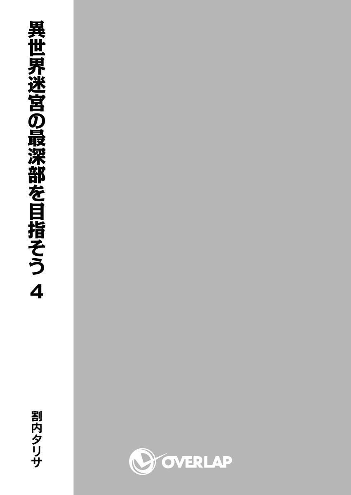

| 異世界迷宮の最深部を目指そう 4 | |
| 割内タリサ | |
| オーバーラップ (2015) | |

イラスト／鵜飼沙樹
――誓った......？ 何を......？
ゆっくりと目を開け、身体を起こす。そして、その重い頭を動かして、周囲を確認する。
「ここは......？」
記憶にない場所だった。木造の狭い個室に、最低限の家具だけがある。開け放たれた窓が一つあって、そこから涼しい風が入り込んでくる。
簡素だが落ち着く部屋......そう思った。
そんな部屋の中に一人の男がいた。
精悍な顔つきの男が、数少ない家具の椅子に座っている。名前は確か――パリンクロン。
そうだ。彼は僕の命の恩人のパリンクロン・レガシィだ。
「おっ？ 起きたな、カナミ。丁度いい。おまえの妹も起きたところだ。案内するぜ」
目を覚ました僕を見て、パリンクロンは手に持っていた本を閉じ、親しげに僕の肩を叩いたあと、部屋の外に出ていく。
案内すると言われ、僕は寝ていたベッドから飛び起き、それについていこうとする。
そのとき、身体が硬直する。
配線を間違えたかのような、人形の手足を逆にしたかのような、不快な違和感を覚えた。
――何かがおかしい。
ただ、そのまとわりつく違和感と共に、清々しい解放感も同時にあった。心にぽっかりと穴が開いたような感覚だ。
大切な何かを間違えたような気がする。大事なことを忘れたような気がする。
けど、そのおかげで、身体が軽くなったような気もする。そんな不思議な感覚。
「カナミ！ 早く来いって！」
「あ、あぁ！ わかった、パリンクロン！」
しかし、パリンクロンの急かす声によって、その感覚は消える。
命の恩人を待たせてはいけないと思い、深く考え込まずに部屋から出た。
そして、外の廊下を見て、ここがどこであるかを思い出す。
ここはギルド『エピックシーカー』の本拠だ。
先ほどの部屋はギルドにある医務室で、そこで僕は休息していたのだ。
起きたとき、なぜそれに気づけなかったのか、不思議でならない。
しかし、不思議がってばかりもいられない。
パリンクロンが遠くを歩いている。追いかけなければ、容赦なく置いていかれるだろう。
見知っているはずなのに目新しく感じる廊下を、早足に歩いていく。
歩きながら、自分が本調子でないことを確認する。
まるで何日も寝ていたかのように気だるく......夢心地だ。まるで、まだ夢の中にいるような気さえしてくる。僕は何度も頭を振りながら、パリンクロンについていく。
階段をいくらか上がっていき、とある部屋まで辿りついた。
パリンクロンはその部屋の前で止まり、僕に部屋へ入るように促す。
促されるまま、僕は扉を開けた。
その部屋は、医務室とは大違いの広さだった。ざっと見ても五倍くらいはある。壁際にはいくつもの本棚が並び、その部屋に知的な印象を与えている。その一番奥に大きなベッドが一つある。カーテンを揺らす窓から外を見る黒髪の少女が、ベッドに座っていた。
ああ、そうだ。この少女こそ――、あの誓いの――
「妹のマリアちゃんも無事だ。よかったな、カナミ」
後ろから、パリンクロンの声が聞こえた。
い、妹？ そうだ。この黒髪の少女は僕の妹だ。何よりも大切で、命に代えても守らなければいけない――死んだ母から頼まれた妹。名前は――マリアだ。
「あ、ああ......。よかった。マリアも無事だったんだ......」
なぜか、その名を口にしたとき、ずきりと頭が痛んだ。
「ああ、大火事だったが、助かった。一人も死傷者は出なかったらしいぜ」
話していく内に、まどろんだ意識が徐々に覚醒していく。
そうだった。僕とマリアは大火事に遭い、パリンクロンに助けられたのだ。
夢心地から抜けてきて、記憶がはっきりとしてくる。
そして、この異世界での出来事を、次々と思い出していく。
パリンクロンに助けられたのは、これで二度目だ。初めて、この異世界に僕たち兄妹が迷い込んだとき、迷宮で助けられたのが一度目。そして今回、街の『大火事』に遭ったところを助けられて二度目。
確かに、家が燃えていく光景を覚えている。それだけは鮮明に思い出せる。
けど、死傷者が出なかったのは驚きだ。一人か二人、死者が出ていた気がする。
「――『兄さん』？ 来てくれたのですか？」
マリアは僕たちの来訪に気づき、顔をこちらへ向けた。
「ああ、僕だ。平気そうだな、マリア」
「いえ、平気と言えば平気ですが......」
僕とマリアは言葉を交わす。
同時に、安堵感に包まれる。それは、異常なほど、とても深い安堵感だった。
「どこか怪我はないか？」
「いえ、怪我はしていませんが......。なぜだか、頭が痛くて......」
そう言ってマリアは頭に手を当てる。
しかし、よくあることだ。妹は幼少の頃から身体が弱く、入院生活も長かった。それは異世界に来ても変わりない。いや、突然の環境の変化で、悪化しているのかもしれない。
ふと、マリアの腕にある装飾品が目に入る。パリンクロンが『異邦人』である僕たちの不自由なところを解決するため用意してくれた『腕輪』だ。これをつけている限り、僕とマリアはこの異世界の環境に適合し、言語だって不自由しない。暴走がちな僕たちの魔力を安定させる効果もあるらしい。
僕とマリアで二つ分、パリンクロンに聞いても値段は教えてくれないが、間違いなく安くはない。パリンクロンの恩はこれだけじゃない。いま、マリアの両目は『義眼』になっている。これも例の『大火事』で目を失ってしまったマリアのために、あいつが用意してくれたものだ。その完成度の高さから、一目で『義眼』が高価なものであることはわかる。
それらの恩をパリンクロンに返すため、もっと僕は頑張らないといけない。
そう決意しながら、マリアの頭を撫でて、その身体をベッドに寝かせる。
「頭が痛いのなら、もう少しゆっくりしてていい......」
「はい。ありがとうございます、兄さん」
マリアは頰を赤くして、なされるがままに寝転がる。やはり、調子が良いわけではないようだ。熱があるようにも見える。昔から、妹は慢性的に熱を出す癖があるのだ。
マリアの手を握って、その身を案じる。
そうしていると、後ろからパリンクロンが声を挟んでくる。
「微笑ましい兄妹愛はそこまででいいかな？ 今日はやることが一杯あるんだ」
「やること......？ すまない、パリンクロン。今日は何があるんだっけ......？」
「今日はカナミのギルド『エピックシーカー』入団予定日だったろ？ 大火事のせいで忘れかけていたが、カナミは五体満足みたいだから予定通りに行うぜ」
「あ、ああ、そうだった」
思い出した。僕は目の前のマリアの医療費のために、お金を稼がないといけない。そこで少し前に、パリンクロンが仕事を紹介してくれたのだ。それがギルド『エピックシーカー』。連合国の一つである、ラウラヴィア国系譜の正統なギルドだ。
僕の実力ならば、そこの一員になって働けるらしい。
「そうでした。兄さん、ギルドに入るんですよね......」
マリアも思い出したかのように確認を取る。
「ああ、そうだぜ。おまえらは、この世界でそれなりにお金を稼ぐ必要がある。それなら、俺のギルドに入ってもらうのが一番いいと思ってな。なかなかの収入の上に、人脈も広がる。なにより、ラウラヴィアの庇護下に入るというのは、二人にはいい話だ。マリアちゃんをゆっくりと治療させるには理想的だろ？」
「ありがとう、パリンクロン。これで、この世界でも生きていける......」
その完璧すぎる仕事の紹介をしてくれた恩人に礼を言う。
「おっと。安心するのは、まだ早いぜ？ ギルドに入る試験は受けてもらう。カナミだからって無条件で入れはしない。試験に受からなければ、話はなかったことになる」
「もちろんだ。そこは厳しく判定してくれていい」
パリンクロンは脅すように返したが、僕にとっては望むところだった。
その決意溢れる返答にパリンクロンはにやりと笑い返し、「こっちだ」と言って僕を連れ出そうとする。
僕はマリアに別れを告げたあと、『エピックシーカー』の試験を受けるため、その背中を追いかける。僕たち兄妹が、この異世界で生きていく居場所を手に入れるために――
◆◆◆◆◆
周囲の壁は石造りで、天井は吹き抜け。円形に切り取られた空間に、柔らかめの砂が敷き詰められている。ここが『エピックシーカー』の訓練場。
その学校のグラウンドほどの大きさの訓練場に、『エピックシーカー』の面々が揃っていた。老若男女交じった、三十人ほどのギルドメンバーたちだ。身の丈以上の巨大な剣を背負っている者もいれば、杖と古臭いローブを纏う者もいる。
いま僕は、その三十人の視線を一身に受けて、パリンクロンの隣で冷や汗を流していた。
パリンクロンは全員集まったことを確認し、いくらかの挨拶の後、僕を前に出した。
「さあ、自己紹介してくれ。カナミ」
「え、えっと、名前はアイカワ・カナミです。レベル14の氷結属性の魔法使いです。一応、剣も使います。よろしくお願いします......」
言われるがまま、全員へ聞こえるように自己紹介を行った。
ギルドメンバーたちの反応は様々だ。真剣に聞く者もいれば、適当に聞き流す者もいる。
ただ、僕のレベルを聞いて、顔を輝かせた者は多い。
「あの年でレベル14か。またパリンクロンは有能な子供をさらってきたな」
「礼儀正しいわね。それに顔も綺麗。けど、首の火傷跡が少し残念かな」
「魔法使いで、剣も使うか。うーん、中途半端だと困るなぁ」
各々が好き勝手に、僕の評価を口に出す。あまり気分のいいものではない。見世物になっている気がするので、早く終わって欲しいと願う。
僕が周囲の反応をうかがっていると、一際異様な反応をしている人がいた。
海のさざなみのように長い髪をなびかせる少女が一人、こちらを見て目を丸くしている。
その美しい髪から覗く小さな角から、獣人であることがわかる。民族衣装のような厚着の下から尻尾も生えているので間違いない。
「......え？......ジークさん？」
獣人の少女は口を開いたまま、こちらを呆然と見つめていた。
「あ、スノウもいたか......」
パリンクロンは獣人の少女をスノウと呼んだ。そして、僕に「悪い。ギルドメンバーたちと挨拶しててくれ」と短く言い、獣人の少女のところへ向かい、話し込み始める。
パリンクロンはギルドのトップの一人だ。何か連絡事項でもあるのかもしれない。
話し込む二人を見ていると、ギルドメンバーの一人が近づいて言葉をかけてくる。
「よう、カナミ。これからよろしくな」
余所見している場合ではない。すぐに僕は、できるだけ印象よく、言葉を返す。
「はい。よろしくお願いします」
それを切っ掛けに、次々とギルドメンバーたちが僕に近づいてくる。
「よろしくね、カナミ。私はテイリ、パーティーリーダーでもあるわ」
「あ、抜け駆けはよせよ。少年、俺があとで剣を教えてやろう。魔法なんかやめちまえ。んでもって、うちのパーティーに入れ」
「おいおい、魔力持ちをわざわざ脳筋に変えようとするなよ......」
「カナミ君、よろしくねー」
明るい表情の魔法使い、巨漢の剣士、弓を背負った青年――冗談みたいな装いをした人たちが僕を囲む。異世界であるとはわかっていても、こうも近くに寄られると少しだけ怖いものがあった。
「あはは、よろしくお願いしますね......」
愛想笑いでそれに答える。顔が引き攣っていないか、少し心配だ。
「はいはい。みんな、そこまでー」
メンバーたちと交流を深めていると、パリンクロンが手を叩いて注目を集めながら近づいてくる。スノウと呼ばれた獣人の少女との話は終わったようだ。
少女はさらに遠くへ移動し、日陰に座り込んで休んでいる。
できれば、彼女に挨拶をしたいと思った。見目麗しいのもあるが、なぜか、あの少女と話すことが重要な気がした。不思議と、どこかで会ったことがあるような気がするのだ......。
「まだ、カナミの入団試験は終わっていないからな。みんな、気が早すぎるぜ？」
パリンクロンは試験の話を始めた。すぐに僕は少女を思考から追い出し、気を引き締め直す。妹のマリアのためにも、試験には絶対に落ちるわけにはいかない。
「おいおい、パリンクロン。おまえが連れてきたやつで、落ちたやつなんて一人もいねえだろ。試験なんか飛ばして、そいつをさっさとうちのパーティーにくれ」
巨漢の剣士が野次を飛ばす。
立ち位置と発言の内容から、男はそれなりの役職を担っているように見える。何より、その傷だらけの身体から只者でないことがわかる。
「いやいや、まだわからないぜ？ とにかく、重大発表があるから、静かにしようか」
パリンクロンは自分のペースを崩さない。その間も、野次は止まらない。
国直属の組織と聞いて、もっと固そうなイメージを持っていたが、そうでもないようだ。かなりアットホームな空気だ。
「いいから早くしてよ。その子は、うちのパーティーに貰うけどね」
杖を持った女性がこちらを見ながら微笑みかける。
どうやら、話は僕がどの集団に属するかで揉めているようだ。
しかし、パリンクロンはその流れを無視して宣言する。
「――それが残念ながら、カナミは誰のパーティーにも入らないぜ？」
それを聞いたギルドメンバーたちは、不思議そうな顔でざわつき始める。
誰もがパリンクロンに説明を求め始める。それに対しても、パリンクロンはマイペースを崩すことはなかった。とても簡潔に、何より楽しそうに理由を答える。
「なにせ、カナミは『エピックシーカー』のギルドマスターになるんだからな」
それを理解するのに、誰もが数拍の時間がかかった。
そして、数秒の静寂のあと、訓練場は驚きの声で包まれる。
「は、はあ!?」
最初に声をあげたのは僕だった。
続いて、メンバーたちも同じような疑問の声と共に、くわしい説明を求めていく。
「ま、まてまて。パリンクロン、冗談が過ぎるぜ？」
「一体何がどうなったら、いきなりギルドマスターになるんだ」
僕も彼らと同感だ。悪い冗談にしか聞こえない。
しかし、依然としてパリンクロンは涼しい顔のままだ。
「カナミは、サブマスターである俺とレイルが選んだ『英雄』だ。当初の予定通り、空席だった『エピックシーカー』のトップには、英雄であるカナミが座って貰う」
そして、二度に渡り、僕をギルドマスターに据えると言い切った。
それも『英雄』と誇張表現をしてまで。
「正気か......？」
パリンクロンが冗談を言っていないことがわかり、場の空気が冷めていく。メンバーの先頭に立つ巨漢の剣士が、パリンクロンを睨みつけながら問う。
空気が張り詰め、今にも破裂しそうな中、パリンクロンは楽しそうに答える。
「カナミは強いし、性格もいい。なにより、英雄らしさがある。ゆえに、順当にギルドマスターとする。文句があるやつは、カナミに叩きのめされてくれ。いまから、試験の代わりに、総当たり戦するからよ」
そのパリンクロンの挑発で、ギルドメンバーたちの殺気が増す。
誰もが尋常でない威圧感を、僕とパリンクロンに当てる。熟練の強者から発せられる重圧に我慢できず、僕はパリンクロンに叫ぶ。
「パリンクロンッ、何言ってるんだ!? 馬鹿かっ、おまえ、馬鹿なのか!?」
僕が混乱しながら反対しているのを見て、重圧の一部が緩む。
冷静そうな女性が一歩前に出て、意見を述べる。
「才覚は認めるわ。その子が見るからにできるのはわかる。確かに、将来は私たちの上に立つ器かもしれない。けど、いますぐなんて、無茶がすぎるわ。パリンクロン」
「強引に決まったギルドマスターの下で、ギルドがまともに動くわけないだろ......」
このままだと荒事になると各々は判断したのだろう。
どうにかパリンクロンに考え直してもらおうと、冷静に理屈で説得にかかる。
しかし、パリンクロンは取り合わない。
「俺たち『エピックシーカー』はいつだって無茶苦茶だし、なんだかんだでおまえらは素直になると思うぜ。なぜなら、カナミは俺たちの待ち望んだ人間そのものだからだ」
――決定的だった。
パリンクロンに引く気がないとわかり、全員が言葉でなく力で説得する準備をすませて、得物を手にして睨みながら一歩前へ出る。
「そう睨むな。これから始める総当たり戦で、カナミに傷一つでも負わせたら考え直してやるからさ」
パリンクロンは総当たり戦の実施を提案する。さらに提案しながら挑発もする。
「言ったな......」
「俺たちを舐めるなよ」
「そこの少年が死んでも知らんぞ」
そして、彼らは物騒な捨て台詞を置いて、距離を取る。
組織の人間として、上司にあたるパリンクロンの判断に逆らおうとはしない。しかし、総当たり戦で不満を晴らす気なのは明らかだった。
試験の覚悟はしていたが、こんな展開は全くの予想外だ。
僕だけは諦めず、パリンクロンを説得し続ける。
「待て！ 待て待て、パリンクロン！ 僕は納得していないぞっ、ギルドメンバーさんたちの言うとおりだ。いきなりギルドマスターだなんて、おかしい！」
「え、でもギルドに入るって言っただろ？」
「言ったけど！ それはギルドメンバーになるって意味だ！」
「俺は一言もギルドメンバーにするとは言ってねえぜ。ギルドマスターになってもらうつもりで、ずっと話してた」
「はあ!? さ、詐欺だ！」
「人聞き悪いな。噓はついてないぜ。でも、まあ、詐欺師とはよく言われる」
パリンクロンは意に介した様子もなく、僕の説得を受け流す。
受け流しながら、同時に総当たり戦の準備も進める。砂の地面に剣の鞘で線を引き、簡易的なフィールドを作っていた。
フィールドを作り終えたパリンクロンは僕に向き直る。そして、今日一番の真剣な表情で僕に懇願する。
「カナミ、頼む。ギルドマスターをやってくれ。このくらいじゃ、まだまだだ。まだ『試練』ですらない。カナミなら、もっと凄い『試練』だって乗り越えられると信じてる」
その真剣な物言いに、僕は言い返せない。
何らかの形で彼には恩返ししたいと思っている以上、純粋に願われると断ることが出来ない。ため息をついたあと、渋々と頷くしかなかった。
「はあ......。わかったよ。総当たり戦をやるよ......。けど、終わったあと、ギルドメンバーさんたちが納得していなかったら、この話は取り下げてくれ」
「そうだな。そこが落とし所か。けど、手は抜かないでくれよ？」
「失礼になるし、手抜きはしないよ。一応......」
僕が諦めたのを見て、パリンクロンは訓練場の端から練習用と思われる剣を持ってくる。
そして、それを投げ渡す。空中でそれを受け取りながら、僕は呟く。
「――《次元の冬》」
得意魔法を展開し、意を決して簡易フィールド内へと足を進める。
しかし、青筋を浮かべて待っているメンバーたちを見て、憂鬱な気持ちになる。
「事務の仕事がよかったな......。書類整理とか......」
叶わないであろう夢を零しながら、僕は剣を鞘から抜く。
◆◆◆◆◆
初戦は、血の気の多そうな少女剣士が相手になった。
メンバーの中でも年若い子が、巨漢の剣士に「リーダーが出るまでもないです」と言ってフィールド内に入ってきたのだ。
すぐに『注視』をして、細剣を携えた少女のステータスを確認していく。
少女のレベルは12で、スキルは剣術のみ。純粋な剣士であれば、僕の敵ではない。
......相変わらず、反則的な能力だ。
この世界の生物しかステータスを見れないとはいえ、それでも十分に反則だ。
少女の強さを把握したあと、ゆったりと剣を構える。おそらく、全ての補助魔法を解除しても問題ない相手だ。身体能力が高いレベルで纏まってはいるが、特筆すべき点はない。
「それじゃあ一戦目、はじめっ」
パリンクロンの開始の合図が飛び、同時に少女は突進してくる。
「はぁああっ――!!」
とりあえずだが、僕は約束通り、手を抜かずに応えることにする。
まず、少女の手を傷つけないように、彼女の振りかぶった剣の柄の底に僕の剣の柄の底をこつんと当てて弾く。同時に、少女の足を払い、宙に浮いた少女の剣を左手で取る。両手に剣を持ち、倒れた彼女の眼前に突きつける。
これで詰み。速さと技術に差がありすぎる。武器を奪うのも簡単だった。
「え？ ぇ、何が起きて――、え？」
何が起きたのかわからない少女を置いて、勝利宣言を行う。
「僕の勝ちでいいですよね？」
「ああ、どう見てもカナミの勝ちだな。はい、次ー」
パリンクロンは僕の宣言を認め、次を促す。
しかし、パリンクロンに促される周囲のメンバーたちの表情は険しく、すぐには次の挑戦者は出てこない。僕の実力の一端を見て、只事ではないとわかったのだろう。
これからの試合を予想し、憂鬱になりながら、少女の手を取って立たせてあげる。
「大丈夫？」
「え、あ、うん。大丈夫......」
少女は呆然としたまま、手を引かれるまま立ち上がる。
ようやく、負けたことを理解したのだろう。僕の顔をじっと見つめて、言葉を漏らす。
「こ、これが、パリンクロンとレイルさんの選んだ『英雄』......？」
なんだか、異様に熱のこもった言葉だった。
背筋が寒くなった気がしたので《ディメンション・決戦演算》で、少女の目線をかわして、そそくさと彼女から離れる。
とにかく、総当たり戦を早く終わらせようと意気込み、フィールドで次の相手を待つ。
次の相手も女性だった。
この世界ではレベルや魔力の存在があるので、荒事の実力に男女の差があまりない。しかし、剣を向けづらいのは確かなので、男性のほうが良かったというのが本音だ。
【ステータス】
名前：テイリ・リンカー HP212/222 MP201/205 クラス：魔法使い
レベル：19
筋力4.41 体力5.15 技量3.32 速さ3.21 賢さ7.21 魔力11.09 素質1.33
先天スキル：風魔法1.67
後天スキル：魔法戦闘1.12
ステータスと装いから、生粋の魔法使いであることがわかる。
ただ、魔法職でありながら、身体能力は先ほどの剣士と比べても遜色ない。
このテイリさんは、メンバーの中でも上位の存在であることは間違いない。僕と少女の戦いを見て、手を抜けない相手だと思ったようだ。テイリさんは挑戦しようとする人たちを一言で納得させ、フィールドに立ってみせた。
しかし、残念ながら、このステータスでは僕に触れることすら難しいだろう。
単純に純正の魔法使いでは相性が悪いのというのもある。
「はい、始めっ」
パリンクロンの二度もの掛け声と同時に、僕はテイリさんに近づく。
当然、魔法使いのテイリさんは近づく前に勝負を決めようと魔法を構築しようとする。しかし、それは《次元の冬》が許さない。
構築された魔法がずれ――発動した魔法は、減衰しきった風が少しだけ流れる程度のものになる。
「――な!? 魔法が！」
驚くテイリさんの首に剣を添える。
「えっと、まだやります......？」
「......降参よ」
テイリさんは酷く真剣な表情のまま降参した。
フィールドから出て行きながら、巨漢の剣士と話す。
「どういうことだ、おい。魔法が使えなかったのか？」
「強力な干渉能力を持ってるわ。あの一瞬だけじゃ、それしかわからないわね」
情報交換の末、巨漢の剣士がフィールド内に入ってくる。
彼もメンバーたちを一言で黙らせて、フィールド内に入った。そのことから、テイリさんと同じで、かなりの発言権を持った人であることがわかる。
【ステータス】
名前：ヴォルザーク・アルド HP340/351 MP0/0 クラス：剣士
レベル：20
筋力10.40 体力5.85 技量8.26 速さ10.31 賢さ7.09 魔力0.00 素質1.12
先天スキル：反骨1.21
後天スキル：剣術1.56
名前はヴォルザーク。見たところ、挑戦者たちの中で最もレベルが高い。
周囲の目から察するに、最も信頼されている古参の剣士といった立ち位置だろう。そう思わせるに十分な貫禄を、彼は持っている。
ヴォルザークさんは一際大きい長剣を背負うように構えて、話しかけてくる。
「悪いが本気で行くぜ。別に、おまえ個人をどうこう思っているわけじゃない。むしろ、おまえのためにも、ここは勝たせてもらう。いきなり、ギルドマスターなんて角が立つに決まっているからな......」
傷だらけの巨漢という見た目に反し、発言は柔和で心優しいものだった。よくステータスを見れば、賢さは先ほどの魔法使いと同じくらいだ。理知的な人物であることが窺える。
「優しい人なんですね。ありがとうございます」
印象は最悪と言ってもいい新人に対し、ここまでの思いやりを持ってくれているヴォルザークさんに僕は感謝し、軽く礼をする。
「はぁ......。あのクソサブマスターの無茶振りがなければ大歓迎なんだがな......」
そして、ヴォルザークさんはパリンクロンの悪口を言いながら、こちらへ距離を詰め出す。それに合わせ、パリンクロンは嬉しそうに「始め」と宣言した。
その言葉に合わせ、ヴォルザークさんは駆ける。
体軀に見合わないスピードだ。まるで巨体の四足動物に襲われている感覚だった。瞬きのうちに近づかれ、ヴォルザークさんの大剣が横に振り抜かれる。
これを手に持っている剣で受ければ、こちらだけ武器を破損する――そう判断し、距離を取って、それを鼻先でかわす。
「ちっ！ これを避けるか！」
次にヴォルザークさんは僕の剣を砕こうと、暴風のように剣を振り回した。
およそ、手加減というものを感じない。直撃すれば常人ならば即死の暴剣だ。しかし、殺気は微塵も感じられない。
ヴォルザークさんは僕ならば受けきれると判断して、攻撃しているようだ。そして、その状況から僕は潮時であることを感じる。
このタイミングで傷を負って終わるのが、試験結果としては丁度いいと思ったのだ。
始める前は、経験豊富な本業たちが相手ならば、掠り傷の一つくらいは負うと思っていた。しかし、このままだと本当に無傷で全員に勝ってしまう。
トップクラスの魔法使いであろうテイリさんを完封し、最高レベルであろうヴォルザークさんにも実力を認められる。もうそれだけでギルドに入る実力の証明は十分なはずだ。
このまま強引に角の立つギルド入団を果たしても、今後の為になるはずがない。
パリンクロンへの最低限の義理立てはした。
そう自分の中で答えを出し、そのための魔法を選ぶ。
「少し魔法を足しますね。――魔法《フォーム》」
「ちいっ」
それを見たヴォルザークさんは舌打ちをする。しかし、怯むことなく攻撃を続ける。
「――搦め手ごと、叩き潰す！」
魔法の泡を身体に付着させながら、ヴォルザークさんはさらに速さを増して、剣を振るう。だが、付着した泡が剣の軌道の情報を、より正確に僕へ伝えてくれる。もう彼の剣に当たる要素はない。
剣をかわしながら、正確にヴォルザークさんの癖を摑み、次に来る剣の軌道を読む。
そして、皮一枚のところで暴風のような大剣を、僕の頰に掠めさせる。
薄く裂かれ、血が細く垂れ流れ出す。
「――あ、掠りました」
すぐに距離を取って、頰の傷をアピールする。パリンクロンは「傷一つでも負わせれば」と発言した。その条件を満たしたことを主張してみる。
それを見たヴォルザークさんは悔しそうに歯嚙みし、大きく息を吐いたあと、答える。
「いや、いまのはノーカウントでいい。完全に俺の負けだ......」
短い言葉で負けを認め、ゆっくりとフィールドから出ていく。
その様子から、わざと僕が傷を負ったことに彼は気づいたとわかった。プライドを傷つけないようにしたつもりが、逆に深く傷つけたかもしれない。しかし、こちらもこれからの生活のために、全員を一方的に倒すわけにはいかなかったので許して欲しい。
「ヴォルザークが負けを認めたので、カナミの勝ちだな」
パリンクロンは楽しそうに僕の勝ちを宣言した。すぐに僕は反論する。
「パリンクロン、傷一つでも負えば終わりだって言ったよな。これで――」
「あの野郎、パリンクロンが豪語するだけのことはあるな......！」
しかし、メンバーの一人に遮られる。それに合わせて、他のメンバーたちも声をあげる。
「面白そうだっ。次、俺が行ってみるぜ」
「いや、私が！」
「リーダーたちが揃って敗北か......。面白い......！」
三戦を終えて、なぜか訓練場内は盛り上がり出す。
元々、好戦的な人間が多かったのかもしれない。しかし、それ以上に、彼らの僕を見る目が、どこかおかしい。
メンバーたちのテンションが上がっているのを指差し、パリンクロンは笑う。
「荒事を生業とするギルドメンバーだ。傷一つ負ったくらいで終わりなわけないだろ？ あれはただの挑発だ」
パリンクロンの話に、多くのメンバーたちが同調する。
「そうだ、終わっちゃ困る！ まだ俺が挑戦していない！」
「そのくらいの傷で何を言ってるの？ 戦える限り、戦うに決まってるじゃない」
「なあ、次は俺がやってもいいか？」
血気盛んなメンバーたちを見て、僕は顔を引き攣らせる。
そこへヴォルザークさんの一声が通る。
「ちょっと待て、おまえら！――グレン妹っ、まずおまえが行け！」
全員の視線が獣人の少女へと向けられる。一瞬だけ訓練場内は静かになり、その間に少女は小さく首を振りながら答える。
「......嫌です。勝てるわけありませんから」
それを聞いたヴォルザークさんは真剣な表情で聞き返す。
「それはまじで言ってんのか？」
「......ええ。まじです」
「そうか......」
それを最後にヴォルザークさんは適当なところに座り込む。
「もう好きにしろ、おまえら。俺は見てるからよ」
そして、諦めて観戦し始めた。
それをパリンクロンは笑顔で眺め、すぐに総当たり戦の続行を促す。
「パーティーリーダーさんの許可も出たようだ。さあ、続きをやろうか！」
その声に釣られ、メンバーたちはフィールドの外に、僕への挑戦の順番待ちをし始める。
「こ、これ、全員とやるの......？」
僕は冷や汗を流しながら、そのメンバーたちを倒していくしかなかった。
◆◆◆◆◆
結局、最後までわざと負けることなんてできはしなかった。
ずっとヴォルザークさんが鋭い目でこちらを見ているし、パリンクロンだって明らかな手加減があるとすぐに口を出してくる。
僕にできたのは穏便に済むよう、手加減に手加減を重ねるくらいだった。
「――よーし。今日はこれで終わりだな。それじゃあ、誰も勝てなかったので、ギルド『エピックシーカー』のマスターはカナミに決まりってことで決定な！」
こうして、ほぼ全員に無傷で勝ってしまい、パリンクロンは遠慮なくギルドマスター就任を宣言してしまうのだった。
「待て、パリンクロン！ もう一回やらせてくれ！ 次は触れそうな気がする！」
「駄目駄目。もう暗いし、時間は有限なんだから。解散、解散ー！」
幾人かのメンバーが口を挟んだが、パリンクロンは強制的に総当たり戦を終了させる。
そのあと、パリンクロンからの事務連絡が伝えられて、メンバーたちは解散することになったが、そのほとんどが訓練場から出て行く前に僕へ一言かけていく。
「いや、まじで強いな、カナミ。明日、もう一回、プライベートで挑戦させてくれるか？」
「えっ？ ええ、いいですよ」
親しげに声をかけてくるメンバーの男に戸惑いながら答える。
「堅苦しいぜ、カナミ。さん付けも敬語も、俺にはいらねえからな」
「ありがとう......。わかった、これからはそうする」
僕がマスターになることに対しての不満は、さほど彼から感じられない。荒事を生業にしている者にとっては、実力さえあれば上に立たれることに抵抗がないのかもしれない。
「あっ、カナミ君。あとで魔法について教えてねっ」
「は、はい」
メンバーの魔法使いの一人が微笑みかけ、その次は壮年の剣士が僕の肩を叩く。
「マスターとしての手腕はこれからかな。ま、周囲が補佐すると思うから心配すんな」
「はあ、精進します」
もちろん、好意的なものばかりではない。険しい表情で一言をかける人もいる。
「おい、俺はまだおまえを認めてないからな......」
「あ、いえ。それは当然の反応だと思います」
「あと五回は挑戦してやるから、首を洗って持ってろ」
ただ、最後にはにやりと笑って去っていく。やっと正常な思考をした人が不満を言ってくれたと思ったら、まるで好敵手を見つけた子供のような反応だった。
そのあとも、色々と憎まれ口は叩かれるものの、明らかな悪意を持って接してくる人はほとんどいなかった。少なくとも、いきなり現れて強引に組織のトップへとなる人物への態度ではないと思った。
メンバーたちの明らかな異常さを感じながら、僕は作り笑いで答えていった。
そして、メンバーたちと挨拶を済ませたあと、訓練場にはパリンクロンと獣人の少女スノウだけが残る。ずっと獣人の少女は暗い空を見上げて、ぼうっとしている。
すぐに僕は残ったパリンクロンに説明を求める。
「......お、おかしくないか？」
「よかったな、カナミ。大出世だぜ？」
「恐ろしい身内人事を見たよ。しかも、結構歓迎されてるから、二重に信じられない」
「こんな無茶が通るのは、うちくらいだろうな。他のギルドなら、絶対にありえない」
「パリンクロンのギルドだから普通じゃないとは思っていたけど、一体どうして......？」
いまでも僕は信じられない。
総当たり戦で力を示したとはいえ、それでもメンバーたちが納得している理由に納得がいかない。僕の世界なら絶対に起きない現象だ。
これが異世界間の文化の差なのだろうか。
細かいことに拘らない、実力がモノを言う文化だったしても、この歓迎は異常だ。
「『英雄譚を求める者』はその名の通り、英雄を探すことを目的としたギルドだ」
「その時点で、普通じゃないな......」
「国直属のギルドは、何かしら国に貢献する方針を最初に決めるんだ。例えば、『ラウラヴィア国の治安を守る』、『ラウラヴィア国のために財宝を手に入れる』、『ラウラヴィア国の人材を育成する』といったような方針だ。そして、うちは『ラウラヴィア国のために英雄を見つける』ギルドってわけだ。当然、その馬鹿みたいな名目のせいで、うちは風変わりなやつばっかりが集まった。さらに言うなら、面接は基本的に俺というのもある」
「......そりゃ、変なのが集まるな」
「うちのメンバーたちは、口で何を言おうが、英雄を待ち望んでいる夢見がちな異常者ばかりだ。ラウラヴィアの実力主義も相まって、圧倒的な強さを誇るカナミを悪く言うようなやつはいないだろう。――このギルドはこの日のために在ったんだ。そして、このために俺の目をもって集めたメンバーたちだ。そこそこ上手くいってくれないと困るぜ」
パリンクロンはギルド『エピックシーカー』の異常性を説明しきる。
そして、どこか自慢げで楽しそうだ。それは子供が自分のおもちゃを自慢するのに似ていた。先ほどのメンバーたちからも、似た空気を感じた。とにかく、このギルドは良くも悪くも全体的に子供っぽいのだ。その説明の最後にパリンクロンは願う。
「ここで英雄になってくれ、カナミ。このギルドを利用して、もっと名前を売ろうぜ？」
「それがおまえの望みなのか？」
「望みというか......、どちらかと言えばこれは趣味かな。俺は英雄に会ってみたいんだ。それをカナミに期待している。『異邦人』という出自もだが、カナミという人間には『本当の英雄らしさ』があるって信じてるんだよ」
いつも飄々としているパリンクロンが、珍しく真剣な表情見せた。
「僕に期待しすぎだ。そもそも、こっちは何をすれば英雄なのかもわからないんだ」
僕にとって英雄なんてものはおとぎ話の中の存在でしかない。現代社会での英雄なんて、スポーツ選手くらいのものだ。パリンクロンたちの望む英雄像を上手く摑めない。
「いや、そこらへんの準備は終えてるから安心してくれ。どっかのお偉い国のお偉い人が、楽しい計画を立ててくれているんだ。その真似をしようと思ってる。確か計画は――『喜んでギルドマスターとなったカナミは、その類稀なる力をもって前人未到の迷宮を開拓し、『正道』を延長させ、グレンから最強の探索者の称号を受け継ぐ。そして後日、『舞闘大会』で優勝。大陸全土にその名を轟かせ、各地で英雄として人助けをしながらラウラヴィア本国へ凱旋。満を持して大陸北部の戦争に参加し、最前線の総大将に生きる伝説である英雄様が降臨する』――って感じだ」
途方もない馬鹿げた計画を、パリンクロンは芝居がかった口調で話した。
「な、なんだそれ？ 僕はしないぞ。特に、戦争。戦争とか絶対に関わりたくないっ」
「ははっ。いや、ほとんど冗談さ。本気なのは迷宮攻略ぐらいかね。あそこなら、人間の悪意もないし、カナミのペースで力をつけられる。妹のマリアちゃんのためにも、力はあって損じゃないだろ？」
「......まあ、迷宮攻略ぐらいはしようと思ってる」
この異世界には迷宮というものが存在している。
ゲームによく出てくる、深くに進めば進むほど敵が強くなるダンジョンだ。浅いところほど敵が弱いという都合の良い構造になっているため、力をつけるのに適している。
「余力があれば、ラウラヴィア国やギルドのために『正道』の延長をして欲しい。それが無理なら、三十層の守護者の撃破だな。何かしらの名誉と実績を『エピックシーカー』へ残してくれたら文句なしだ」
「......余力があったらね。僕とマリアを保護してくれるラウラヴィア国のために、何かしらの貢献はしたいと思ってるよ」
「あとは『舞闘大会』で優勝してくれても貢献になるな。もう何年もラウラヴィアは他四国に遅れをとり続けている。各地で英雄的活動や、北部の戦争で総大将とかは冗談さ」
「冗談じゃないと困る......。僕は僕の周囲の世界を守れたらそれでいいんだ。国と国の争いに関わるなんて、死んでもごめんだ」
「くくっ、そうかい。わかった。とはいえ、いま話したことは、ただの計画だ。現状はギルドマスターの仕事を覚えることに専念してくれ。迷宮も『正道』の延長は考えず、自分の力をつけることだけを考えてくれていい」
「そうだな。不本意な人事だけど、やるからには、ちゃんとギルドマスターとしての仕事をこなせるようにならないと......。メンバーたちに迷惑がかかる......」
「ああ。早く引き継がないと、間に合わないからな......」
パリンクロンは少しだけ真面目な表情になる。
「間に合わない？――ああ、そういえば、パリンクロンは本国の将として呼ばれているんだっけ？」
その真面目な表情から、パリンクロンが心配していることを察する。じきにパリンクロンは連合国を離れることになると聞いている。そのときまでに、引継ぎをしたいのだろう。
「まあな。色々と好き勝手やってたら、強制召還されたぜ。もう少し、連合国でやりたいことがあったんだが、仕方がない」
本来、本国に任官されるのは名誉なことだ。だが、パリンクロンは否定的な表現を使って、その名誉を心の底から嫌がっていた。
「そうか。もうパリンクロンはいなくなるのか......」
「俺がいなくなったあとは、古参のサブマスターであるスノウに助けてもらえ」
「古参のサブマスター？」
そして、パリンクロンは訓練場の隅で空を眺めている獣人の少女を呼び寄せた。
「彼女は六年も前から、このギルドでサブマスターをやっている。『エピックシーカー』については、俺よりも詳しいだろうな。ほら、スノウ。自己紹介しろ」
促されるまま、獣人の少女は僕の傍に寄り、手を差し出す。
とても綺麗な手をしていた。女の子らしい、白くて柔らかそうな手だ。
『エピックシーカー』は空席のギルドマスターに、三人のサブマスターから構成されている。そのサブマスターの席に座っているのはパリンクロンとレイルさん。どちらも、力と知恵を兼ねそろえた大人の実力者だ。
つまり、この獣人の少女は、その二人と肩を並べるほどの実力者ということになる。
僕は差し出された手を、ゆっくりと握る。
「......竜人のスノウ・ウォーカーです。よろしく、ギルドマスターカナミ」
「えっと、よろしく。スノウ......ちゃん？」
呼び方に戸惑った。見た目通りならば、ちゃん付けでも問題ない年齢だろう。しかし、六年前からサブマスターをやっていると聞き、見た目通りかどうかの自信がなかった。
「たぶん、同い年くらいです。面倒だから、ご自由に呼んでくれていいです」
「ありがとう。それじゃあ、スノウで。僕のことも自由に呼んでくれていいよ。敬語もいらない」
「では、カナミで。こっちも敬語はやめる」
どうやら見た目通りの年齢らしい。
となると、スノウは十歳前後のときに、ギルドのサブマスターをやっていたことになる。
「カナミ、スノウ。二人で協力して『エピックシーカー』を運営してくれ。俺とレイルがいなくても大丈夫なようにな」
「それ、僕たち二人で、ギルドを回せってことだよな？ こんな若い二人だけで、本当にやらせるつもりか？」
僕は大人二人がいなくなった状況を思い描き、顔を歪ませる。
「大丈夫さ。スノウの能力は全員が認めているし、なにより家柄がいいから誰も文句は言えない。カナミも、今日一日で大体のやつらは認めた。うん、何も問題ないな」
パリンクロンは気楽そうに答える。それを僕とスノウは、じっと睨みつける。
楽しそうで申し訳ないが、無茶振りされるこっちは不安で一杯だ。
「そう睨むなよ。あとは任せたぜ、スノウ。約束どおり、カナミの補助をしてやってくれるだけでいい。俺はおまえら二人が協力するのを、随分前から楽しみにしていたんだ」
睨まれていることに気づいたパリンクロンは、逃げるように距離を取った。そして、スノウへ意味深に話しかける。
「――それさえ守れば、あとは好きにやっていい。おまえが好きにやりたいだけな」
そう言い残し、パリンクロンは訓練場から去っていった。
そして、暗く静かな夜空の下に、僕とスノウだけが残った。
◆◆◆◆◆
星の光を明かりにして、僕とスノウは訓練場で魔法を構築し合う。
長い付き合いになることがわかり、今日の内にお互いの力を確認しようと決まったのだ。
スノウは訓練場にある岩に手を乗せた。
次の瞬間、岩がぶれると同時に、小さな亀裂が入る。
「......これが私の得意魔法」
そう言って、スノウは亀裂の入った岩をさらに震わせ、縦に割ってみせた。
《ディメンション》を展開しているからわかる。スノウの得意魔法の正体は『振動』だ。
「岩を振動させてる？」
「うん。私の属性は『無』と『火』。あと、私の魔力特性と『古代魔法』を合わせると、もっと面白いことができる」
スノウは懐からいくつかの魔石を取り出し、魔力を込め、周囲にばら撒く。
そして、小さく呟く。すると、その呟きが何重にもなって訓練場に響いた。
（あなたの魔法と合わせれば、驚異的な武器になる。そうパリンクロンに言われた）
まるで、たくさんのスピーカーに囲まれているかのように、散らばった魔石全てからスノウの声が聞こえてくる。
「すごい。振動を操って、石から音を出しているんだ？」
（そう。私の『すがりつく魔力』を魔石に込めて、『古代魔法』の応用で音声を再現している。これができるせいで、色々と苦労した）
スノウが指を軽く鳴らすと、魔石の振動が止まる。
「これ、遠く離れていても、できるの？」
「できる。これであなたのサポートを行う。それがパリンクロンとの約束」
僕はスノウの能力の異常性に汗を滴らせる。
この異世界での連絡手段は乏しい。遠くにいる誰かとコンタクトをとりたい場合は、『魔石線』を引かなければならない。その『魔石線』でも、ここまで円滑に伝達できはしない。確か、魔力の伝達が主であり、音声そのものを伝えることはまだできなかったはずだ。つまり、スノウは世界の何段階か先の技術を、個人で有していることになる。伝書鳩の世界で、一人だけ携帯電話を持っているようなものだ。
「この魔法があれば、色々と面白いことが出来そうだ。これで僕を手伝ってくれるの？」
「......うん。サポートする」
スノウは頷き、その眠たげな目を少しだけ見開いて、決意を感じさせる声で続ける。
「パリンクロンとの約束は守る。けど約束通り、後は好きにさせてもらう。私の好きに」
「ああ、それはもちろん――」
ギルド内の自由について交渉を始めたのかと思い、それを了承しようとする。しかし、スノウは思いもしない言葉を続けた。
「あなたは少し前、『アイカワ・カナミ』ではなく、『ジークフリート・ヴィジター』と名乗っていた。おそらく、パリンクロンの精神魔法で、その頃の記憶を消されてる。きっと、その腕輪が魔法術式の要。いますぐ、壊したほうがいい」
スノウは『ジークフリート・ヴィジター』という名前を出し、パリンクロンが僕の記憶を消したと言った。
驚く。その名前の意味にも、記憶についても、二重の意味で驚く。
「へ？ え、えっと......、え？ どういうこと？」
「とりあえず、その腕輪が一番怪しい。あのとき、あなたは腕輪なんてつけていなかった」
スノウは僕の傍へと近づき、腕輪に手をかける。
「ちょ、ちょっと待って！ これは僕には必要なものなんだ！ ないと困る!!」
スノウの手を払って、距離を取る。
この腕輪は僕の魔力を安定させ、言語能力の補助も行っている。常に着けておけと念を押されている以上、外すわけにはいかない。
――そう。何があっても、外すわけにはいかない『大切なもの』だ。
「全て噓。あなたもパリンクロンに遊ばれている」
離れた僕に、スノウは厳しい表情で声をかける。
しかし、何を言っているのかわからない。「遊ばれている」の意味がわからない。
「悪い、スノウ。僕は君の言っている言葉の意味がわからない。だから、信じられない」
はっきりと拒否する。
それを聞いたスノウは、こちらへ伸ばした手を降ろし、小さく呟いた。
「......そう」
先ほどまでの強い決意を感じさせない、弱々しい呟きだった。
その弱々しい声を聞いて、強く拒絶しすぎたかもしれないと後悔する。言い訳するように、僕は理由を説明する。
「その......、僕にとって、この腕輪はとても大事なものだから外せないんだ。あと、いきなりそんなこと言われても、困る......」
「別にいい。でも、私の言葉を信じられるときがきたら、その腕輪を壊して。そうすれば、自分を取り戻す切っ掛けを得られると思うから」
スノウは無理強いしようとはしなかった。
自分の意見を通そうとする熱を全く感じない。その名の通り、雪のように冷めた性格をしている。そして、彼女も言い訳するように言葉を続ける。
「私は最低限のことはした。確かに忠告した。......それだけは覚えてて」
「......わかった」
僕は頷く。覚えておくくらいなら問題ない。それに、いまのは僕のことを心配しての言葉だと、その表情から窺えたからだ。
僕とスノウは向き合ったまま、沈黙する。先に沈黙を破ったのはスノウだった。
「この話をこれ以上続けるのは面倒。魔法の確認も、今日はこれで終わりにしよう」
「そうだね。そろそろ終わろうか」
「ついてきて。カナミの部屋、案内する」
「え、あ、うん」
訓練場から出ようとするスノウの後ろを追いかける。
そういえばパリンクロンから寝泊まりする場所を聞いていない。というよりも、ギルドに入ってからのことを聞いていない。どうやら、その説明はスノウに任されているようだ。
部屋までの道のりの間、僕は気になっていたことを聞く。
「ねえ、『ジークフリート・ヴィジター』って誰から聞いたの？」
「......カナミ」
スノウは僕を指差した。
しかし、そんな記憶は僕にはない。そもそも、僕は今日までスノウと会ったことすらないはずだ。僕がこの異世界に迷い込んでから出会った人は少ない。そして、その少ない人たちの顔を僕が忘れているとは思えない。それも、こんな特徴的な少女を――
「なら、スノウは『ジークフリート』『ヴィジター』の意味ってわかる......？」
「意味？ あなたの名前としか知らない」
「そ、そう」
『ジークフリート』は僕の世界では有名な英雄の名詞で、『ヴィジター』は直訳で来訪者と読める。僕が異世界からやってきた『異邦人』であると言わんばかりの名前だ。
ただ、そう思うのは元の世界のことを知っている僕だけで、その感覚はスノウには通じていないみたいだ。
しかし、これでわかった。スノウは僕の世界のことを知っているわけじゃない。ただ、『ジークフリート・ヴィジター』という名前をどこかで聞いただけだ。しかし、誰から聞いたかはわからない。一体誰から聞いたのか、その情報源を推測していると、ある部屋の前でスノウの歩みが止まる。
「......ここ」
スノウは部屋の中へ入っていく。僕もその後ろから続いた。
広めの部屋だった。
最低限の家具に、僅かな生活の跡。用意された新しい部屋にしては物が多いと思った。特にアクセサリー類の小物が多い。まるで、ここで女の子が生活していたように見える。
「ここが僕の部屋？」
「ううん、私の部屋」
どうやら、僕の観察眼は間違っていなかったようだ。
「なんでスノウの部屋に？」
「ここで寝ろという話を聞いた。ギルドマスターの部屋は、まだ用意されていない」
「あ、ありえない......」
僕は頭に手をやる。おそらく、これを決めたであろうパリンクロンを、心の中で呪う。
「そう言うと思った。問題があるなら、私は屋根の上で寝る」
「屋根の上？ それこそありえない。それなら、僕が廊下で寝る」
「......そう言うとも思った。私はどんなところでも寝られるのだけど、あなたは納得しない。ああ、面倒、とても面倒。......だから妥協する」
「妥協？」
スノウは言葉通り、面倒くさそうに僕へと近づく。そして、その手を僕に伸ばし、触れようとして――その手から、異常な魔力を感知し、僕は大きく飛び退く。
「――な!?」
「......残念」
「残念って。いま、僕に魔法かけようとしたでしょ......」
「面倒だから不意打ちで気絶してもらおうと思った。けど、失敗。初めて会ったときは私のほうが強かったのに」
スノウは残念そうにため息をついたあと、分厚い上着を部屋に脱ぎ捨てて、ベッドの上に転がる。まだ僕がいるというのに、完全な下着姿になったのだ。キャミソールのような上着一つとなり、その健康的な太ももが丸見えだ。
その突然な行動に息を吞む。
目の前の少女スノウは美人だ。第一印象から、ずっとそう思ってる。
その肌は名前の如く、雪のように白い。その白い肌を覆うように、とても長い青い髪が流れているのは、地平線の海と空を想起させる。そして、薄桜色の瞳に涼しげな目元。静かに波打つ大海原のような大自然の魅力を彼女は持っている。
何より、そのモデル顔負けのプロポーションが目の毒過ぎる。その豊満な胸は、今日出会った誰よりも大きい。当然のように彼女はブラジャーなんてものはつけておらず、その胸の形をはっきりと僕は見て取ってしまった。
余りに無頓着すぎる。そう思いつつ、すぐに目を逸らす。
「......僕は廊下で寝るよ。屋根と毛布があれば、問題ないから」
「それは私が心苦しい。せめて部屋の隅で寝て」
「なら、妹の部屋で寝ることにする。どうせ、こんなのパリンクロンの嫌がらせだ」
「......そう？ そうかも。なら、そうして。でも私は一応、パリンクロンの指示通り、この部屋を紹介した。それは覚えてて」
「ああ、わかった。覚えとくよ。......それじゃあ、おやすみ。スノウ」
「......うん、おやすみ」
就寝の挨拶を交わし、僕はスノウの部屋から出ながら、彼女の物分かりのよさに少しだけ気持ち悪さを覚えた。
スノウは自分の意見を押し付けようとしない。言い争いになりそうになると、すぐに引く。
スノウ・ウォーカーという人物について考え込みながら、僕はマリアの部屋へと向かう。
途中、廊下の窓から月明かりが差し込んでいるのを感じ、外を見る。
空には、欠けた月が浮かんでいた。僕の世界の月と変わらない、満ち欠けする月だ。月の満ち欠けが存在するので、暦や時間の概念も僕の世界と近いらしい。同じ環境の星に、同じような人間たちが住めば、やはり似た発想をするようだ。
その偶然も、僕は少し気持ち悪いと思った。
何もかも出来すぎているがゆえに、誰かの手のひらの上で生きているような感覚。不快だった。
いや、思えば今日は――ずっとずっと不快だった。
言い知れぬ不安が、常に僕の後ろに潜んでいた。
朝に感じた違和感。それが、ずっと消えない。戦っている間も、話している間も、ずっとだ。ずっと何かを間違えているような、何かを忘れているような......ボタンを掛け間違えているよりも酷い違和感が消えてくれない。
そんな気持ち悪さに耐えながら、マリアの部屋に辿りつく。
「マリア、僕だ。入るよ」
「兄さん......？ お帰りなさい」
マリアは僕の来訪に顔を明るくして、歓迎してくれた。
最愛の妹に会っても、まだ違和感は消えない。しかし、マリアの前で不快な顔をし続けるわけにもいかない。気持ち悪さの理由の全てを『異世界だから』で済ませ、マリアに優しく語りかける。
「マリア、頭痛は治った？」
「いえ、いくらかマシになったのですが、薄い痛みが張り付いて消えません。それに、なんだか、変な感覚です。何かを間違えているような、そんな気がして......。少しだけ気持ち悪いんです」
驚く。マリアも僕と同じ感覚を覚えているようだ。
「......慣れない『異世界だから』仕方がないよ。いまは深く考えず、ゆっくりと休んで」
「はい......」
僕の妹は身体が弱い。できるだけ安静にさせないと駄目だ。頭を撫でて、休息を促した。
「なあ、マリア。今日、僕の寝るところがないんだ。この部屋を使ってもいいか？」
「え、それはもちろんです。むしろ、ずっとここに居て欲しいくらいです」
「そっか。よかった。それじゃあ、そこの椅子を借りるよ」
「椅子？ そんなっ。せっかくだから、一緒に寝てください。ベッドも広いし、それに私たちは兄妹なんですから、大丈夫です！」
「え、でも――」
「お願いします。兄さん」
マリアの口調は強く、不安そうな表情をしている。本当は不安で不安で仕方がなくて、一緒に寝て欲しいのかもしれない。
僕たちは兄妹だ。安心の為に、一緒に寝るのは特におかしいことではない。一緒に寝るには少々年が過ぎている気もするが、いまは平時ではないのだから目を瞑ろうと思う。
「そうしようか......」
「はいっ」
マリアは嬉しそうに微笑んだ。そして、僕は大切な妹の横へと寝転がる。
すると、マリアは愛おしそうに、僕の手を握った。
「兄さんの手、冷たくて気持ちいいです......」
マリアは安心して、身体から力を抜いた。その様子から、マリアは僕のいない間、ずっと気を張っていたことに気づく。当たり前だ。異世界へ迷い込み、目を失い、暗闇の中で兄を待つ......心が休まるはずもない。
僕と触れ合うまで、マリアは一瞬たりとも安心できなかったに違いない。
もしギルドマスターの部屋を貰っても、マリアと一緒に寝ようと僕は心に決めた。
二度と離れない。傍にいる。確か、そんな約束をした気がするから......。
その約束を思い出そうとしながら、目を閉じて、ゆっくりと睡魔に身を任せていく。傍に大切な家族を感じながら、安心して眠りにつく――それでも、まだ違和感は消えない。
兄妹一緒という幸福の中のはずなのに、何かが納得いかないのだ。
僕は首を小さく振って、頭からそれらを追い出す。
いまは休もう。まずは、この異世界での安全を確保しないといけない。
ラウラヴィアでの地位を確固としつつ、マリアの治療費を稼ぐ。そのためには、明日からがんばらないといけない。悩んでいる暇なんてない。
そう心の中で繰り返しながら、マリアの手を強く握って僕は眠りについたのだった――
翌日の早朝。スノウが僕を起こしに来た。
同じベッドで寝ている僕たち兄妹を見て、彼女は微笑んだ。呆れたような、羨んでいるような、懐かしんでいるような――不思議な笑みだった。思えば、彼女の笑っている姿を見るのは、これが初めてかもしれない。
そして、マリアと朝の挨拶を終わらせ、すぐにスノウは僕を連れ出す。どうやら、朝早くからギルドの仕事を教えてくれるらしい。用意されたギルドマスター用の執務室へと行き、みっちりとギルドの基本をスノウに叩き込まれる。
一日目の朝は勉強だけで終わり、正午からはギルドの仕事が始まる。
訓練場にメンバーが十数人ほど集まって、今日の予定を確認する。最初はパリンクロンが主導してはいたものの、自然と今日の『エピックシーカー』の仕事の指示は僕が出すことが決まってしまう。
当然、僕は断ろうとした。しかし、パリンクロンは「カナミとスノウの二人なら簡単さ」と言って、すぐにいなくなった。
取り残されるメンバーたちと、年若いギルドマスターの僕とサブマスターのスノウ。
僕とスノウは考える。僕たちの持つ手札で、最も効率的にギルドを運営する方法を考えようとする。そうしなければ、ここにいるメンバーたちに申し訳が立たない。
そして、考えに考えた僕たちが出した答えは――
◆◆◆◆◆
――書類の山。
様々な報告書と依頼書が重なった書類の山の前で、僕は必死に羽根ペンを走らせる。
ギルドの物資の流れを確認し、資金の運用を改善し、人材の配置を見直していく。そのために必要な書類の更新を、順次こなしていく。
そして、机上で書類仕事しながらも、一方で『現場』の指示も行う。
僕の反則的な次元魔法が、本拠に居ながらにして『現場』の状況の把握を可能としていた。さらにレベルによって人類最高クラスまで強化された『賢さ』が、それらの並列作業を可能とさせていた。
「......カナミ。テイリパーティーの指示」
隣で僕の補助をしてくれているスノウが、小さく呟いた。
それに対し、僕は《ディメンション》で拾った情報を整理する。
本拠から北北東に数キロメートル先の現場で、とある強盗犯とそれを追うテイリさんたちのパーティーをリアルタイムで認識する。
「うん、見えてるよ。そうだね、テイリさんは次を左に曲がって、三つ目の曲がり角で待機。他メンバーはこのまま標的を追いかけてくれていい。テイリさんのところへ、あと二十秒――いや十七秒ほどで標的が飛び込む。十分に気をつけながら魔法で迎撃してって伝えて。おそらく、その数秒後に他のメンバーも到着する。それで挟み撃ちだ」
「......ん、伝える」
スノウは手に持った魔石へ、しょぼしょぼと話しかける。内容は、さっき僕が言ったことと同じだ。魔石を通じて、数キロメートル離れたテイリさんたちと連絡を取っているのだ。伝達が正確であることを聞きとりながら、僕は手を止めずに書類も片付けていく。
もちろん、片付けながらテイリさんたちが強盗犯を捕まえたかどうかの確認も行う。
追われていた強盗犯は前方に現れたテイリさんに驚き、そのままメンバーたちに挟まれて捕縛されたのを《ディメンション》が捉えた。
「......どう？」
「問題なし。標的はテイリさんの魔法で足止めされ、メンバーたちの包囲によって捕縛完了。テイリパーティーの依頼は、これで終わり。思ったよりもすぐ終わったね」
「そりゃそう。まさか、強盗犯も町全体を把握している人間が相手だなんて思ってもいない」
「でも、パリンクロンも似たようなことできるんじゃないの？」
「パリンクロンの『呪術』のことを言っているなら、間違い。あれは色々と条件が厳しい。それにカナミほど正確じゃない。こんなことできない」
「そうなんだ」
パリンクロンも大陸有数の感知魔法の使い手だと聞いていたけど、それでも僕の次元魔法の方が精度は高いらしい。
「はっきり言って、これは異常。パリンクロンは私たちにこれをさせたかった......？」
「そうみたいだね。スノウの能力と僕の能力を聞いて、この合わせ技を思い描いていたらしいよ。上手くいってよかった。これで形だけでもマスターらしいことができる」
「いや、この時点で、そこらのマスターの何倍も有能......。流石はマスター......」
「スノウ、マスターって呼ぶのやめてくれ。なぜだかわからないけど、君のような女の子にそう呼ばれるのは嫌なんだ。名前で呼んでくれないかな？」
「......ん、了解」
僕が本気で嫌がっているのを見て、スノウは素直に頷いた。
基本的にスノウは従順だ。むしろ、意志薄弱と言えるほどだ。
「あ、また強盗発見した」
話しながら、僕は《ディメンション》の端で犯罪の発生を捉える。
「......うぇ。また？」
「近くに、ヴォルザークさんたちがいるから連絡して。点数稼ぎだ」
「......ちょっと面倒」
「いやっ、いやいや、仕事だってスノウ。ラウラヴィアで暮らす人たちのためにも、強盗は捕まえないと」
「......んー。......たるいものはたるい。それ、うちのギルドに依頼されていないやつだし」
スノウは従順だが、極度の面倒臭がりでもある。本気になるのを好まず、疲れることを嫌い、サボれるものならいくらでもサボる。――異常なまでに。
「たるいって言っても、スノウは僕の言っていることを繰り返すだけだろ？」
「繰り返すだけの楽な仕事かと思ったら、思いのほか面倒だった」
「おい、本来ならばスノウがやるべき書類整理を僕がやっているのを忘れるなよ......？ もう手伝わないぞ......？」
「それを言われるとつらい」
「いいから連絡」
スノウの仕事のいくつかを肩代わりしていることを引き合いに出すと、スノウは諦めた様子で魔石に話しかけ始める。
町中を歩いていたヴォルザークさんはスノウの連絡を聞いて、返事をする。
僕は展開していた《ディメンション》を、ヴァルザークさんの周囲のみ《ディメンション・多重展開》に強化して、その口の動きと声の振動を把握する。
どうやら、ヴォルザークさんに強盗を倒す余力はあるようだ。
ステータスを見る限りも大丈夫そうだ。強盗のレベルは低く、ヴォルザークさんのＨＰも十分。直接対決させても問題ないはずだ。
「うん、請け負ってくれた。それじゃあ、今すぐ、六十七番地の市場へ急行。近くまで行ったら、細かく案内するよ。ちなみに標的のレベルは５、特に注意点はないから、正面からの捕縛でお願いして」
「......伝える」
スノウは僕の指示を繰り返す。
魔石から指示を受けたヴォルザークさんは、その巨漢を走らせ、標的へと近づいていく。
《ディメンション》で二人の動きを確認し、チェスの駒を動かすように手を詰めていく。
ほどなくして、二人はぶつかり合い、強盗は捕縛される。力の差は歴然だったため、戦いは一瞬の内に終わった。
ヴォルザークさんは捕らえた強盗を、被害に遭った店まで連れて行く。
店主は失った物品が返ってきたことに、涙を流して喜ぶ。もしも、あのままだったら相当の被害が出ていたのだろう。その表情からそれがわかる。そして、それを防げたことを僕は嬉しく思う。
あとは強盗を国の治安管理所へ連れて行けば終わりだ。ものの数分の出来事だったけど、また一人、ラウラヴィア市民を助けられた。
「よかった......。お店の人も喜んでくれてる......」
「......そう」
しかし、この感情をスノウとは共感できないようだ。
どうでも良さそうな表情で、窓の外の空を見上げている。スノウはやることがないと、こうやって日向ぼっこをする癖がある。
「暇なら、書類とか手伝って欲しいんだけど」
「大丈夫。カナミのおかげで怒られないくらいの量はもう終わってる」
「ああ、スノウの基準はそこなんだ」
「カナミみたいに、自分のできる限りを精一杯やるのは好きじゃない」
今日一日でスノウの性格も大分摑めてきた。
ギルドマスターとしての僕とは相容れないスタンスだが、その気持ちはわからなくもない。僕が元の世界の学校に通っていたときも、スノウと全く同じスタンスをとっていた。
いま、僕が精一杯生きているのは、ひとえに異世界という環境のせいだ。厳しい環境さえなければ、僕もスノウと同じ行動を取る可能性は高い。
「いやでも、やっぱりスノウが見ててくれないと安心できないよ。僕は新参者だし、何か勘違いしている可能性があるかもしれないから」
「それは、こんな人事をしたパリンクロンが悪い。余所者が書類整理している時点で、諦めよう」
「そうだな。こんな大事な書類を一日目の新人が目にしてる時点で、色々おかしい......」
「そういうこと。よって、私は悪くない。悪くないので、これ以上は頑張らない」
「あ、そう......」
僕はスノウを特に咎めることもなく、黙々と書類に向き合う。
実際、スノウは魔石の連絡だけで、何十人分もの働きをしているからだ。
窓の外の色が赤みを帯びていき、日が沈み始める。正午から始めた書類仕事も、そろそろ終わりそうだ。散らばったギルドのパーティーたちも、各々の依頼を終えている。
とりあえず、ギルドマスター初日としては良い出来だったと思う。
最後に気合を入れ直して、あと少しの書類を崩し始める。
その書類整理が終わりかけるところで、『エピックシーカー』の本拠に誰かが入ってくるのを《ディメンション》が感じ取った。
日が沈み始め、ほとんどのメンバーたちが帰ってきたのだ。
その中にはテイリさんもいる。先ほどの任務の報告書を手に持っていた。
玄関のほうでパリンクロンと話し始めたのを確認してから、僕はスノウを置いて二人のところへ向かう。今日一日の成果を報告し、できれば二人の口から評価も聞きだしたい。
『エピックシーカー』の本拠内を歩き、パリンクロンとテイリさんの話し声が聞こえるところまで辿りつき――二人の声を拾う。
「どうだい？ カナミはマスターとして優秀だろう？」
「ええ、あんたよりもね。正確な情報が恐ろしい速度で届くわ。もう情報収集というプロセスが丸々ないのと一緒よ。そのおかげで、七日の期限が設けられていた依頼が、僅か数時間で終わったわ。もはや反則ね」
「カナミもスノウも、本国のやつらが知れば何をしてでも欲しがるほどの逸材だ。その二人の合わせ技だからな。そのくらいは当然だぜ」
「当然ってあんたね......。でも、彼らには、まだ経験が足りないわ。ツテもなければ、顔も広まっていない」
「ツテや経験はメンバーたちで補ってくれればいい。あの二人は素直だ、君たち年長者の話はちゃんと聞くさ。顔を広めることに関しては心配するな。もう色々と仕込んでる」
「すごい念の入れ様......。カナミ君に対しては本気なのね、パリンクロン。ここまで必死なあんたは初めて見るわ......」
「ふふっ、必死に見えるなら、俺もまだまだだな。なあに、俺は安心して本国へと行きたいだけだぜ......？」
悪い癖だった。《ディメンション》を展開していると、なりたくもないのに地獄耳になってしまう。これ以上の盗み聞きをしないためにも、早足で二人に近づいていき、まずはパリンクロンに話しかける。
「――パリンクロン、書類関係は大体終わったぞ」
「おっ、カナミか。それで、どのくらいまで終わったんだ？」
「どのくらい？ え、えっと、ほぼ全部だけど......」
スノウのために残しておいた僅かなものを除けば、渡された書類の全てが終わっている。
しかし、それを聞いたパリンクロンは信じられないことを聞いたような顔になる。
「ぜ、全部......？ あの書類の山のことだぜ？」
「ああ、そうだよ。あれをやるのが、ギルドマスターの仕事だって言ったじゃないか。だから、今日で全部終わらせた」
「......待て。待て待てっ、おかしいぞ。そんな容易く終わるようなものじゃないだろ!? 確認するだけの書類もあったが、中にはすごい面倒な収支計算の書類もあったろ！」
確かに、そういうものもあった。
ギルドの物流、その経費、全員分の人件費、その収支の詳細などなど――その数字の動きの整理ならば、もう終わっている。
「たぶん、使ってる算術自体が違うせいじゃないかな？ 僕は簿記も数学も得意だし......」
「ま、まじで言ってるのか......？」
「あと《ディメンション・多重展開》を使えば、一度に複数の書面を見るっていう荒技もできるしね。あと、レベルが上がって、一度に複数のことを考えられるようになった気がするし......」
最近感じ始めたことだが、明らかに元の世界にいたときよりも思考のレベルが上がっている。思考速度もだが、何よりも思考の形態自体が変質している。
思考が分割され、並列作業が可能になったのは、その変質の一端だろう。
「もしかして、スノウが本気で手伝ったのか？」
「いや、スノウはその、あまり手伝ってくれなかった......」
むしろ、スノウの分まで僕がした。
朝は真剣に色々と教えてくれたスノウだったが、全ては僕に押し付けるためだった。昼からは、怠けきっている。
「いや、スノウが手伝っていてもおかしいだろ、この早さは......。レベルが上がったからってそんなことにはならないはずだ......。いや、しかし、カナミの魔力特性によっては、そういうこともありえなくないのか？ それとも次元魔法の特性――いや、『代償』か？」
僕の話を聞いて、パリンクロンは真剣に考え込み出した。
「とにかく、終わったから。これで、今日の仕事は終わりでいい？」
「あ、あぁ。しかし、今日の仕事というか、七日分の仕事が終わりだな......」
「え、あれだけで七日分......？」
僕は驚く。確かに、最初はその量に面食らった。しかし、組織一つの一日分の資料なのだから当然だと思って取り組んでいた。あれで七日分といわれると少々肩透かしだ。
そんな僕を見て、隣のテイリさんが口を挟む。
「パリンクロン。魔法とかじゃなくて、カナミ君自体、何かおかしくないかしら......？」
「言うな......。俺もびっくりしてる......」
そして、得体の知れないものを見るような目で二人は僕を見たので、苦笑いしながら答える。
「えっと、それじゃあ、あとはメンバーたちの補佐に集中すればいいのかな？」
「いや、メンバーたちに割り振られた七日分の仕事も粗方終わってるみたいだ。このテイリの報告で、全員任務完了だ。カナミの補佐のおかげでな」
どうやら、今日、並列作業で終わらせた任務も七日分のものだったようだ。
「えっと......、少なくない......？」
素直に仕事量について質問する。これでは明日から何をすればいいかわからない。
「いや、カナミが初めてのギルドマスターということで、甘く少なめにしていたのは確かだが......。それでも、決して少なくはないぞ。平均的なギルドの仕事量だった......」
「そ、そうなの......？」
そろそろ、事の重大さに僕も気づき始める。
僕の能力の高さ。そして、スノウの補助魔法があった場合の指揮能力の高さ。
それはギルド運営を七倍速にするほどの異常な事態だったようだ。
パリンクロンは難しい顔になって、話を続ける。
「国に掛け合って、来週からは仕事をもっと回して貰おう。それまでは、迷宮の攻略でも進めててくれ......。あれも一応、ギルド貢献になるからよ......」
「了解......」
僕は素直に頷く。それに合わせて、テイリさんが疑問の声をあげた。
「パリンクロン、私たちのほうは？」
「おまえたちはいつも通り、余った時間は自由に使っていい。公的機関で、適当な任務クエストを貰ってもいいし、パーティーで好きなところへ行っていい」
「わかったわ」
どうやら、初日だと思って、張り切りすぎてしまったようだ。ギルド『エピックシーカー』全体の仕事がなくなっている。
こうして、三人で今後の方針を決めたところで、僕たちは解散することになった。
その後、僕は訓練場へと足を運んだ。そこにはやることがなくなったメンバーたちが、たむろしていたからだ。張り切りすぎたことを謝罪しに行ったのだが、「必要ない」と返された。ほとんどの人は、仕事が早く終わるのに越したことはないと思っているらしい。僕を責めるどころか、僕の指揮の精度の高さを褒めてくれる声のほうが多かった。
そして、そのまま、メンバーたちと交流を深めていく。総当たり戦のリベンジを受けたり、魔法について教えあったりして――少しずつ距離を縮めた。
夜にはスノウに挨拶をして、マリアと食事を摂って、また一緒に寝て、初のギルド一日目を終えた。これ以上ない順調な滑り出しで――
◆◆◆◆◆
ギルド生活二日目。
初日から張り切りすぎたためにギルドの仕事がなくなった僕は、迷宮の前に来ていた。
ちなみに、スノウも「一日空を見て過ごす」なんてふざけたことを言っていたので強制連行した。パリンクロンから二人一組で行動するように言われているというのもある。
「さて、迷宮攻略の時間だ」
「......うーん、面倒臭い」
「スノウ、これもギルドの仕事の一つらしいぞ。パリンクロンから、『正道』を伸ばすか、守護者を倒すように言われている」
「期限は決まっていないから、適当に流そう？」
「適当に流すとまでは言わないけど、本気でやるつもりはないよ。基本的に、楽なモンスターを狩りながら、迷宮内でお宝を探すつもりだ」
「んー、カナミにとって楽なモンスターは、私にとって面倒なモンスターの可能性がある」
「いや本当に、スノウは適当に流してていいよ。ほとんど僕一人でやるつもりだから。後ろで見てるだけで良い」
いつも通り、口先でさぼろうとするスノウを納得させる。正直なところ、物臭な彼女に過度な期待はしていない。しかし、最低限の責任感は持ち合わせているので、僕が危なくなったら手は出すだろう。言わば彼女は、もしものときのための保険だ。
「......ん、見てるだけ？ それはいい。それならいい」
「うん、よかった。それじゃあ、出発」
【パーティー】
スノウ・ウォーカーが加入しました
その『表示』を見ながら、僕はスノウと一緒に迷宮へと入っていく。
入り口をくぐると、じめじめとした暗い回廊が広がる。その生臭さと、独特な発光を繰り返す道を見て、僕はどこか懐かしさ感じた。
また迷宮へ帰ってきた。
なぜか、例の『大火事』を挟んだだけで、迷宮は酷く懐かしいものへと変わっていた。
「......カナミ、どうかした？」
いつの間にか足を止めていた僕を不思議がり、スノウは声をかける。
「いや、なんでもない。行こう」
「......うん」
僕は迷宮探索に邪魔な感情を振り払い、回廊を進み出す。
以前は確か――......そうだ。二十四層まで行った記憶がある。
二十四層で探索が辛くなり、十九層でレベル上げを行ったのが最後の記憶だ。
しかし、その最後の記憶は古びた白黒写真のように掠れていた。要所要所が黒ずんでいて、上手く記憶を掘り起こせない。
『大火事』に遭ったショックからか、その前後の記憶が曖昧だ。
しかし、泣き言は言ってられない。気を取り直して今日の迷宮探索の方針を決める。
同行者であるスノウのレベルは16。ステータスに関しては僕と大差ない。ただ、耐久度においては僕よりも何段階かは上だろう。修得している魔法も豊富で、底が知れない。
【ステータス】
名前：スノウ・ウォーカー HP530/533 MP229/240 クラス：スカウト
レベル：16
筋力10.22 体力10.02 技量5.24 速さ5.43 賢さ7.92 魔力10.86 素質2.62
先天スキル：竜の加護1.09 最適行動1.89 古代魔法2.04
心眼1.07 鮮血魔法1.00
後天スキル：なし
今日の目標は十九層あたりでのレベル上げと、二十層での《コネクション》の再設置としよう。大火事を挟んだせいで、僕の《コネクション》の登録は全て解除されている。そのせいで一層からの挑戦だ。面倒だが仕方がない。早急に二十層へ向かおうと思っている。
ただ、二十三層までは『正道』が伸びているため、楽な道のりだ。さらに言えば、僕とスノウレベルの探索者ならば、一桁の階層に敵はいない。
数時間ほど迷宮を歩き続けた結果、僕たちは何の問題もなく十層まで辿りつくことができた。そして、十層に入り、まず僕たちはその殺風景さに驚く。
「――あ、あれ。何もないな」
「......少し前は炎の海だった。どうやら、十層の守護者が死んだのは本当らしい」
「そうなのか？ もしそれが本当だったら、すごいな。守護者を倒すなんて、英雄じゃないか。一体どんな人が倒したんだろう......？」
僕の浅い知識でも、守護者と呼ばれる存在の凄さは知っている。最強の探索者たち一行でも倒すことの出来なかったボスであり、探索者たちの語り草となっている伝説的存在だ。
「確かにすごい。でも、どうせカナミだろうと思ってるけど」
「は？ 僕が？ なんで？」
「......なんでもない。ただの独り言」
「いや、独り言にしては、僕に聞かせるような言い方だったじゃないか」
「これ以上は面倒。進もう」
「......はあ。わかったよ」
渋々と頷く。スノウが声に出して「面倒」と言えば、会話はそれ以上続かない。昨日、一緒に仕事をして、それは骨身に沁みている。なので、僕はこれ以上は聞かない。内容も、おそらくは初日の記憶についての話に繫がるのだろう。何度も聞きたい話ではなかった。
僕たちは無言で何もない十層を歩いていく。
以前の燃え盛る火炎は影も形もなくなり、その落差からか、その空虚さは一層と強い。
あの雄大で尊大な炎は、二度と返ってこない。そう思わせるに十分な空虚さだ。
僕には関係のない話なのに......。なぜか、とても物悲しい......。
「――魔法《コネクション》」
奇妙な感情に包まれながらも、部屋の隅に魔法の扉を設置する。そして、『持ち物』から取り出した保護色の布をかけて、目立たないようにする。
「......これが次元魔法？」
「ああ、これでギルドの執務室から行き来できるようになった」
「けど、これだと他の探索者が使っちゃうんじゃ？」
「む、確かに。じゃあ、こうしようか。――魔法《アイス》」
氷結魔法で優しく扉を凍らせる。
《コネクション》の扉は脆く、簡単に壊れる。本来ならば、凍らせることなんてできない。しかし、《コネクション》を構築した僕ならば、その構造は完璧に把握できているため、扉を壊さないように凍らせることは可能だ。
通常の《アイス》とは違ったイメージで魔法を編んだため、どちらかと言えば、新魔法《アイス・錠》とでも呼んだほうがいいかもしれない。
「......凍らせた？」
「無理に溶かそうとすれば扉は壊れる。この扉を溶かして使えるのは、術者である僕だけだよ。――名づけて、魔法『アイス・錠』かな」
「変な名前。でも何もしないよりはマシ？」
「どちらにせよ、十層の扉はあまり実用的じゃないね。早く二十層に設置しよう。あそこなら、並の探索者じゃ辿りつけないから安心して設置できる」
「......む。今日はこれで休憩でいいのでは？」
「駄目。行くよ、スノウ」
「......むむ」
愚図るスノウを言い聞かせ、僕たちは迷宮のさらに奥へと進む――
◆◆◆◆◆
「なんだこいつ......？」
それは二十層を目指している途中、十四層の『正道』を歩いているときのことだった。
《ディメンション》内を高速で移動しているモンスターを見つけ、立ち止まってしまう。
そのモンスターは、およそ十四層に似つかわしくないスピードで動いていた。強敵かと思い、すぐさま遠くから『注視』する。
【モンスター】ラインスキッター：ランク１
予想に反して、異様にランクの低いモンスターだった。別の意味で十四層に似つかわしくない。その姿は青く輝く小さなネズミに見える。ただ、その輝きが普通ではない。
僕は興味が湧き、そいつを追いかけることにする。後方のスノウはいまにも寝そうな顔をしていたが、放置してラインスキッターの方へ歩く。
しかし、ラインスキッターは特定のエリアに収まることなく走り回るため、接近するのは容易なことではなかった。ただ、追いかけていくうちにラインスキッターの走り回る法則が少しずつわかってくる。そして、いつまでたっても歩きでは遭遇できないと確信する。
仕方がないので、スノウを『正道』に待たせて単独行動を開始する。
僕が本気で走ってしまうと、スノウはついてこられないからだ。これはステータスの特徴なので仕方がない。僕は速度に特化しており、スノウは耐久度に特化している。その差だ。
スノウに『正道』で寝ないようにと言い聞かせたあと、僕はラインスキッターを追いかけて全力で駆け出す。
ラインスキッターが通る回廊を予測し、先回りすることで少しずつ距離を縮めていく。
数分後、風を切りながら走るラインスキッターとの対面に成功する。
僕は『持ち物』から剣を抜き、ものの試しで斬りかかってみる。
しかし、斬りかかった瞬間、ラインスキッターの速度が増す。
「なっ――!?」
僕に許されたのは、その一太刀だけだった。その速さで悠々と剣をかわしたラインスキッターは、僕の横を通り過ぎ、回廊の暗闇に消えていった。
すぐにその背中を追いかけようとする。だが、剣を避けたときのラインスキッターの速度を思い返して足を止める。
おそらく、あのラインスキッターのトップスピードは僕よりも速い。
もう特殊なボスであるのは間違いない。なんとなく、ボーナスモンスターな気がする。
ただ追いかけるだけでは駄目だということがわかり、剣を『持ち物』へと戻すしかなかった。僕は少しわくわくしながら、自分の魔法と『持ち物』から別の手段を模索する。
最も自信のある《次元の冬》は有効ではない。あれは向かってくる敵を迎撃するための魔法だ。逃げる敵の行動を阻害しても大した影響はない。
《過密次元の真冬》も同じだ。減速効果があるとはいえ、まず、その領域内にラインスキッターを収めることが難しい。魔力を消費して効果範囲を拡大しても良いが、それでも成功確率は低いだろう。
あとは《アイス・急造矢》などによる遠距離攻撃だが、あの速度に的中させるのは《ディメンション・決戦演算》でも自信はない。
よって、僕に残されたのは罠系の魔法だ。
『持ち物』から水を取り出し、ラインスキッターが通るであろう道に大きな水溜りを作る。そして、その上に《次元雪》を一つ置く。もちろん、まだ弾けさせはしない。
地面を走るラインスキッターならば、この罠にかかる可能性は高い。そして、ランク１であるという情報から、このチャチな罠でも捕らえられるかもしれないと思った。
同じ罠を五つほど作ったあと、ラインスキッターの位置を把握し、先ほどと同じようにラインスキッターを追いかけて、この罠群へ追い込んでいく。
できるだけ急がないといけない。水溜りの罠の基点は《次元雪》だ。他のモンスターに割られてしまうと、せっかくの罠が無駄になる。
何度もラインスキッターを追いかけ回して行く内に、ようやく、ラインスキッターが罠のある領域に足を踏み入れる。
――罠の発動タイミングに全神経を集中させる。
そして、ラインスキッターが水溜りに足を入れた瞬間、《次元雪》を弾けさせた。
冷気が弾け、一瞬のうちに水溜りは凍りつく。無論、ラインスキッターの足ごとだ。
「よしっ」
《ディメンション》で目標を捕縛したことを確認し、急いでそこへ向かう。
そこにはピィピィと鳴きながら氷から抜け出そうとしているラインスキッターがいた。どうやら、速度はあっても力はないモンスターのようだ。
少しだけ良心が痛む。しかし、弱肉強食を心の中で繰り返し、そのラインスキッターの身体を剣で斬る。
【称号『輝線疾走』を獲得しました】
速さに＋0.05の補正がかかります
ドロップした魔石を『注視』する。
【クレセントペクトラズリ】
閃光を走らせる魔力の集合体
誰よりも速い呪いのかかったモンスターから稀にドロップする
説明文からも希少な魔石であることがわかり、労力に見合ったものが手に入ったと安心する。目標を達成した僕は、スノウのところへと戻っていく。
しかし、あれだけ注意したにも拘わらず、スノウは『正道』の端で目を瞑っていた。流石に寝息は立てていないが、それでも目に余る。
「スノウ。寝るなって言っただろ......」
「......む。ん、うん？ ううん、寝てない寝てない」
「いま、反応遅れてたじゃねえか」
「気にしないでいい。それよりも、例のは倒せた？」
おもむろに、スノウは話を逸らそうとする。スノウの面倒臭がりは筋金入りなので、注意しても無駄だろう。
「ああ、罠で捕まえて倒した。こんなのを落としたぞ」
「......お、おぉ。これ、連合国五国の中でも、年間一つ出回るかどうかわからないレアなやつ。確か、『クレセントペクトラズリ』？」
「ああ、それで合ってる。結構、苦労した」
「あれを倒しても、必ず落とすとは限らない。だから、すごく希少。よかったね、カナミ」
「そうなのか？ なら、ラッキーだったな」
今回は運が良かったようだ。実際、《ディメンション》でラインスキッターを感知できたこと自体も偶然に近い。
「......よーし。いいものも手に入ったし、先へ進もう進もう？」
スノウはやる気を見せる振りをして迷宮を進もうとする。『正道』で仮眠を取っていたことで、僕に小言を言われるのを避けているのが丸わかりだった。
「はあ。そうだな、進もうか」
本当ならば、小一時間は説教をしたい。迷宮のモンスターが『正道』へ入ってくる可能性、他の探索者に襲われる可能性、多くの不測の事態について一から説明したい。
しかし、スノウの性格からして、無駄に終わる可能性は高い。
僕はスノウの性格を矯正する方法を考えながら、回廊を歩く。
こうして、ちょっとした幸運に出会いながら、さらに迷宮の奥へと進んでいく――
◆◆◆◆◆
スノウは戦わなくてもいいと宣言していた僕だったが、その約束は十九層の中ごろで反故となった。やはり、不測の事態はつきもので、モンスターに囲まれてしまえばスノウも戦わざるを得ない状況になる。
相手は十九層のモンスターのカーマインミノタウロスだったが、それをスノウは一人であっさりと倒して見せた。彼女は竜人という種族の補正のおかげで、ステータス以上の膂力があり、僕から身の丈を超える大きな武器を二つ借りて、それを振り回すことで戦った。ただ、その扱いは余りに乱暴で、いくつもの武器の命を散らせながら......だが。
その圧倒的なパワーを前に、僕はスノウの心配は必要ないと確信した。国直属ギルドのサブマスターを勤めているだけのことはある。
背後の仲間の心配がなくなったことで、さらに僕の迷宮探索は速さを増す。
順調に二十層まで進むことに成功し、十層と同じ殺風景な空間に辿りつく。すぐに僕は十層のときと同じように、部屋の隅へ《コネクション》を設置する。これで、僕たちはいつでも二十層にショートカットできるようになった。
「――よし、これで二十層もマーキング完了。目標は達成だ」
「......よし、じゃあ戻ろう。で、今日は終わろう。終わろう終わろう」
「終わりはしないけど、戻るのはありだね。ちょっと『エピックシーカー』の誰かに回復魔法を使ってもらおうか」
「......か、回復？ まだ、私をこき使う気なの？」
「おまえ、言うほど働いてないだろ。いいから行くぞ」
僕とスノウは《コネクション》で『エピックシーカー』の本拠にある執務室に移動する。
そして、すぐに《ディメンション》で回復魔法を扱えるメンバーを捜す。昨日、仕事のほとんどを終わらせてしまったため、暇なメンバーを見つけるのは容易だった。
神聖魔法を修得しているメンバーに声をかけ、傷を癒してもらう。とはいえ、余り苦戦はしていないので、どれも擦り傷程度だ。
回復を施してくれた魔法使いが、傷を治しながらにやついていたのが不気味だった。理由を聞いたところ、強い人の傷を治すのが生きがいらしい。流石は『エピックシーカー』の回復係、どこか頭おかしい......。
スノウと僕のＨＰが回復したのを確認して、もう一度迷宮へ行こうとする。しかし、スノウが休みなしの挑戦に苦言を呈する。
「......きゅ、休憩を」
「駄目だ。僕たちの体調は万全だ。行かない理由がない」
「......こうも連続だと、精神的に参る。――そ、そうだ。さっきの『クレセントペクトラズリ』出して」
「これがどうかしたか？」
『持ち物』から『クレセントペクトラズリ』を取り出して、スノウに見せる。
「うちの鍛冶師に持っていこう。加工できそうなら頼んで、武器を新調しよう。こんなにレアな魔石なら、面白くなりそう」
「ああ、『エピックシーカー』には専属の鍛冶師が居るのか。確かに、それは面白そうだ」
武器を新調するのは賛成だ。今日も、剣をいくつか損耗させた。特にスノウは豪快に破損させまくった。大量生産品で問題ないと思っていたが、長い目で見れば、そろそろ高価な一品物が必要かもしれない。
「よし行こう。色々と作ってもらおう。私は隣で見てるから」
「隣で寝てるの間違いだろ？」
僕は苦笑しながら、スノウの提案を受け入れる。
そして、『エピックシーカー』本拠の端に位置する工房へ向かったのだった。
◆◆◆◆◆
「あのー、すみませんー」
挨拶をしながら、黒い煙の昇る工房へ入る。
外観では広そうに見えたが、思ったよりも中は狭い。所狭しと作業道具が散らかり、年季の入った加工台と炉がいくつも設置されている。異様に室温が高く、すすと埃にまみれて空気も悪い。あまり長居はしたくない空間だ。
「へ、あれ？ お客さんかい。えっと、何の用かな？」
工房の奥で剣を眺めていた長い髪の男が、こちらに気づいて返事をする。
「色々と魔石を持ってきたので、何か作ってくれませんか？」
「はいはい、なるほど。いいよいいよ。どうせ暇だから」
長い髪の男は眺めていた剣を置き、髪をかきあげながらこちらへと近づいてくる。そして、その素顔が露わになり、刻まれた古傷の多さに僕は驚く。
片目は潰れ、両耳が削げ落ちている。大量の火傷跡が顔面に残っており、見ているだけで痛々しかった。
「よ、よろしくお願いしますね......」
「あら、驚かせちゃったか。初めての人が見たら無理も――って、うちのマスターじゃないか。こんな汚いところまでわざわざ来なくても、呼ばれたら行くよ？」
「いや、用があるのは僕ですから出向くのは当然ですよ。それにマスターとして頼みに来たわけじゃありません。カナミという一個人として頼みに来ました。えーっと......、アリバーズさん？」
「アリバーズ・リヴァース。よく覚えてたね。あの総当たり戦のとき、挑戦してないのに」
「皆さんの名前は必死で覚えました」
僕とアリバーズさんは握手をしながら自己紹介を行い合う。そして、僕は軽くアリバーズさんのスキルを確認する。
【スキル】
先天スキル：神聖魔法1.34
後天スキル：属性魔法0.23 鍛冶0.89 剣術0.07
さほど鍛冶スキルは高くない。むしろ、戦闘能力のほうが恵まれている。レベルは高くないものの、それでも一線級の魔力はある。魔法使いの探索者と言われたほうが納得できる。昔は探索者だったが、怪我で鍛冶師に転向したため戦闘用のスキル値が下がっている可能性が高い。
「それでマスター、今日はどんなのを持ってきたんだい？」
「スノウに珍しいって言われたやつを持ってきました」
そう言って僕は『持ち物』から魔石を取り出す。
せっかくなので、以前から溜めていた珍しそうなものも全て見せる。
加工台の上に様々な色の魔石が広がり、アリバーズさんは目を輝かせる。
「す、すごいな......。国の換金所でも、滅多に見ないのばかりだ......」
「ずっと溜めてたんです。これを使って、頑丈な武器は作れますか？」
「いや、そりゃまぁ、これだけあれば何でも作れるよ」
「お願いします。何度も武器が破損して、困っていたんです」
「武器が破損するようなモンスターなんて想像したくないねぇ。けど、破損した武器の修理も俺はやってるけど？ 持ってきてくれたら再利用できるかもしれないよ」
「え、そうなんですか？」
「直すより、買うほうが安くつくのがほとんどだけどね」
「うーん、ちょっと取り出しますね」
こんなに手近なところで武器の修理が可能だったことに喜び、『持ち物』から破損した武器を取り出していく。これから協力することになろうメンバーたちには僕の能力を隠すつもりはないので、アリバーズさんの目の前で堂々とだ。一応、少し驚かれたので軽く説明もした。
そして、色々と『持ち物』から出していっていると、その中に覚えのない壊れた剣を見つける。刃先の歪んだ――古びた剣だ。まるで、マグマにでも突っ込んだかのように、刃が溶けている。
【破損したアレイス家の宝剣】
攻撃力１
鉄の棒を振り回すのとかわらない攻撃力だ。
しかし、名称に「宝剣」とついている。名前だけなら立派なものだ。
ただ、これを手に入れた経緯がよく思い出せない。しかし、迷宮に放置された金目のものを『持ち物』に入れることはよくある。おそらく、迷宮探索の途中で拾ったのだろう。
深く考えることなく、『破損したアレイス家の宝剣』もテーブルの上に置く。
「たぶん、これで全部です」
「って、量多いなあ」
「はは、すみません......」
「どれどれ、見せてもらうね」
僕もアリバーズさんと一緒に武器を見ることにする。修理できるものとそうでないものの差がわかれば、今後の探索の役に立つ。
ちなみに、スノウは部屋の隅で体操座りをして眠り始めている。
「見たところ、剣類はマシだね。研ぎなおせば何とかなるものばかりだ。ただ、このでかいやつらは駄目かな。根元から歪んでるし、刃もボロボロ。鋳潰して、材料に変えるのが無難なところだね」
「なるほど」
スノウが扱った武器の状態が特に悪いようだ。
「あとは......ん、ん？ これ、もしかして......」
アリバーズさんは壊れた武器の中から、『破損したアレイス家の宝剣』を手に取った。
「それがどうかしました？」
「いや、これ業物だね。希少な鉱石で出来てるから、銘くらいはあるはずなんだけど......。状態が酷すぎて、銘が読めないな......」
「えっと、以前は『アレイス』って書いてあった気がします......」
修理の足しになるかもしれないと思い、僕は『表示』の情報を開示する。
「アレイスって、あの......？ でも、それは銘と違うような......」
「アレイスってどういう意味なんですか？」
「え、そりゃ、あの名門貴族のことだと思うよ。多くの優秀な剣士を輩出し、かの剣聖様フェンリル・アレイス卿がいる家だね」
「へえ、そりゃすごい」
アリバーズさんは僕の質問に答えながらも、剣から目を離さない。物珍しい業物に興味津々といった様子だ。
「うーん。でも、申し訳ないけど、これは俺じゃあ直せそうにないな。鉱石が特殊すぎる」
「それじゃあ、鋳潰して材料に変えてもらっていいですよ」
どうせ拾い物だからと僕は適当に話す。
ただ、その瞬間、なぜか背中に寒気が走った。なぜだろう。
「いや、持ってたほうがいいよ。俺には無理だけど、フーズヤーズの鍛冶師なら望みがあるかもしれない」
「はあ。そうですか」
別にこの剣に愛着があるわけでもない。材料に変えて貰っても良かったのだが、アリバーズさんの目から見るともったいないようだ。
「あと面白いのはこの魔石だね。確か、『クレセントペクトラズリ』だ。これ売ると、三年は遊んで暮らせるけど、本当にいいのかい？」
「え、そんなに!?」
想像以上の値段に度肝を抜かれる。僕の目的の一つに、マリアの治療費を払うというものがある。その目的がこの魔石を売ることで解決してしまう。
「けど、これを使えばそれなりのものは作れるよ。剣をコーティングして、頑丈なものにできる。俺としては指輪かネックレスにして、この魔石を活かしたマジックアイテムのほうがいいと思うけどね」
「マジックアイテムよりも、頑丈な武器のほうが入りようなものなので......」
「ま、この惨状を見れば、その気持ちはわかるよ。俺も武器を作るほうが性に合ってるから助かる。それじゃあ、壊れた武器と手頃な魔石を預かろうかな」
「どうぞ」
その後、僕とアリバーズさんは取引する武器と魔石を記録し、受け渡しの日取りなどを決めていく。出来れば早く頑丈な武器が欲しいという願いを出すと、アリバーズさんは少し考えて、それに対応する案を出してくれる。
「仕事を早くするには人手を増やすのが理想的だ。そうすれば質が落ちない。街のほうから知り合いの鍛冶師を誘えば、仕事は早くなる。けどそうすると、かなり割高だよ？」
「いえ、何本も武器を壊すよりは割安です。出来るだけ早くお願いします」
「わかった。なら、代金はこうなるかな......。余っている魔石のほうは俺が換金所で金に換えておこう。マスターは忙しそうだからね」
「助かります」
「それじゃあ、すぐにマスターとスノウの武器を用意しよう。これが契約書だ。相場と詳細は、そこのスノウに聞いてくれ。あんな風だが、こういうことには詳しい。不当な値段だったら、遠慮なく文句を言いに来てくれていい」
「スノウが......？ わかりました」
部屋の隅で寝転んでいるスノウに目を向ける。そういったことはサブマスターであるパリンクロンかレイルさんに聞こうと思っていたが、どうやらスノウでも大丈夫のようだ。
「そして、ここからが一番大事な話だ......」
「大事な話、ですか？」
「ああ、武器を作るのに一番大切なところが、まだ決まっていない」
大方の話がついたと思っていたが、鍛冶師という本職の目から見て、一番大切とまで言わせるだけのものが決まってないらしい。
「一番大切......？ それは一体......？」
「それはデザインだ！」
「は、はぁ......。デザインですか？」
「ああ、見た目こそっ、装飾こそっ、何よりも大事だ！ 出来よりも、美しさ！ 剣が美しければ、マスターの華麗な剣捌きも映えるだろう!?」
駄目だ、この人......。
真面目な人かと思ったが、流石は『エピックシーカー』専属の鍛冶師。ろくな思考回路をしていなかった。
「命を預ける武器ですよ？ 見た目よりも、出来を重視してください」
「命を預けるからこそさ！ 命を散らす瞬間っ、鮮血が舞う中っ、持っていた剣が格好悪かったら死んでも死にきれないだろう!? 英雄の死に様は、美しくあるべきだからね！」
「いえ、死なないために武器がいるんです。死ぬときのことなんて考えてませんよ......」
「それはいけない、マスター！ 生きている間に成すことも重要だが、死に方はもっと重要なのだよ!?」
「生きている間のほうが重要です。見た目はどうでもいいから、素朴で丈夫なやつを作ってください」
「そんな！ カッコいい剣士にカッコいい剣を使ってもらうのが、俺の生きがいなのに！」
「マスター命令です。丈夫さを重視して作ってください」
「ははっ、残念だが、『エピックシーカー』でそれは通用しないよ。俺たちは命令違反なんて日常茶飯事だからねっ！ ことロマンに関しては、特に！」
性に合わない命令までしたものの、アリバーズさんは逆らい続ける。
「それじゃあ、この話はなかったことに......」
「それはそれで大変困る！ せっかく、マスターの剣に携われそうなのに！」
「なら、真面目に仕事してください。こっちだって手近な工房じゃなくて、遠くの工房へ行くのは面倒なんですから」
「くっ、仕方がないか......。一先ず、丈夫なものを作ってから、あとから装飾を凝るという形でどうだろう......？」
「多少重くなる程度でしたら、こちらも妥協しましょう。けど、その装飾の代金は払いませんからね」
「仕方ない......。そこは自腹でなんとかしよう......」
「自腹って......。そこで諦めるという選択肢はないんですかね......？」
「ないな」
「ないんですか」
アリバーズさんは加工台の上に厚い紙を広げて、羽根ペンで完成予想図を描き始める。
「一応、要望があれば、いま聞こう。俺としては白を基調としたシンプルな直剣にしようと思っている。これなら丈夫に作れる。そこへ銀細工を施し、溶かした碧の宝石で文字を刻む。――どうだい？」
描かれた剣を見て、その見事なフォルムに目を奪われる。
「こだわっているだけのことはありますね......。ただ、僕の好みだと、文字の色は碧よりも蒼ですね。より爽やかな感じがしますから」
「マスターは清廉なデザインが好みなんだな。わかった、考慮しよう」
「あとは統一性と流麗さですね。アンバランスな剣は使いにくいので、左右対称でお願いします」
「うーん、俺は非対称のほうが好きなのだが......。仕方がない。そこは装飾で補おう」
完成するであろう剣を夢想して、僕とアリバーズさんはお互いの趣味をぶつけ合う。
どうやら、アリバーズさんに釣られて、僕も興奮してしまっているようだ。根っこのところにある僕のゲーム好きな性格が、表に出てきているのがわかる。
長い間、僕とアリバーズさんは武器について討論してしまい、気づけば日が暮れていた。
語ることは語り尽くした僕たちは、いい笑顔で別れの挨拶を交わす。
「それじゃあな、マスター。久しぶりの大仕事だから、張り切らせてもらうよ」
「はい、よろしくお願いします。――スノウ、終わったぞ。行こう」
隅で寝転んでいるスノウの首根っこを摑む。興味のない長話のせいで、完全に熟睡してしまっていた。その光景を見て小さく笑うアリバーズさんに苦笑いで応えながら、スノウを引きずって工房の外へ出る。
これで、明日から始まるであろう二十層以降の迷宮探索攻略も楽になるはずだ。正直、今日の探索は遊びのようなものだ。本番は二十層以降と言っても過言ではない。
工房を出たあと、僕とスノウは街へ出る。
迷宮探索の本番の準備のため、買い物をして、教会にも寄る。
僕のレベルは15になり、いつも通りボーナスポイントを魔力へ振る。《ディメンション》の使用機会が増えてきたため、精度を上げるためにも他の選択肢は考えられなかった。
こうして、新しく手に入るであろう剣を夢想しながら、僕はマリアの待つ部屋へと帰っていき、二日目を終えるのだった。
スノウが僕の仕事場である執務室へ入ってくる。
その手には書類が握られており、それを僕に渡しながら話す。
「......カナミ。今日は『エピックシーカー』で警備活動だってさ」
「え、警備？」
「そろそろ『舞闘大会』が始まる。そのせいで、国外の馬鹿たちが入国してくる。で、たぶん治安が悪くなる。丁度いいから、手を貸せってさ」
「なるほど。手堅い仕事が回してもらえたな。期間は？」
「各ギルドが順番に警備していくらしい。うちの担当は今日の昼から夜だけ」
「それだけか......。とりあえず、急いで皆を呼ばないと。スノウ、頼む」
「......うぃ」
スノウは魔石を持ってぼそぼそと呟き、メンバーたちに連絡していく。
「本当に便利だな、それ」
「......とりあえず、お昼までに集合と伝えた」
「十分だ。来るまでに担当地区を決めておこう」
「......がんばれ、カナミ」
「はいはい」
スノウは当然のように、窓の近くの椅子に座って日向ぼっこを始めた。手伝う気が全く見られない。こういった細かな作業を彼女が嫌いなのは知っているので、僕は特に何も言わず一人で仕事を進める。正直なところ、下手に手伝われるよりも、一人でやったほうが早いというのもある。それほどまでに、僕の思考速度は常人とかけ離れてきている。
「......今日もいい天気」
スノウは空を見上げる。
とても気持ち良さそうに、この何もしなくていい時間を味わっている。
それを眺めながら、僕は手を止めることなく、メンバーたちの担当地区を決めていく。
少しすると、次々と連絡を聞いたメンバーたちが執務室へとやってくる。全員というわけではなかったが、それなりの人数が揃う。
すぐさま僕は、丁寧に事情を説明をして、昼から配置について貰うことを伝えた。
こうして、今日のギルド活動は始まった。
◆◆◆◆◆
初日と同じく、執務室で《ディメンション》を街中に広げる。
ただ、あの日と違うのは、仕事の量だ。
机の上に書類は一つもない。メンバーたちのほうも目的もなく警備活動をしているため、特に指示を出す必要がなく、暇で仕方がなかった。
スノウは鼻唄を交えながら、だらけている。これが彼女にとって理想の状況なのだろう。大変機嫌が良さそうに見える。
「暇だな、スノウ......」
「......暇は素晴らしい。あと迷宮は嫌」
迷宮に誘おうと思っていた僕だったが、先に釘を刺されてしまう。
「いや、迷宮はやめとくさ。それより、暇つぶしにおまえのことを聞いてもいいか？ 嫌なことは答えなくていいから」
「......ん、別に構わない。お喋りぐらいなら面倒じゃない」
断られると思ったが、意外にも受けいれられた。
この暇な時間を使って、スノウと円滑な協力関係を構築しようと思う。
手始めに、ずっと気になっていたことを聞く。
「スノウには凄いお兄さんがいるんだろ？ その人のことを教えてくれないか？」
スノウ・ウォーカーの兄、人類最強の迷宮探索者グレン・ウォーカーだ。
スノウの親族云々とは関係なく、その称号だけで十分に興味をそそる人物である。
「......凄くはない。結構――いや、かなり駄目なやつだから。というか、そんなに仲良くないから知らない......」
しかし、妹からの評価は辛らつなものだった。
「人類最強とまで言われているお兄さんのことを『駄目なやつ』って呼べる時点で仲が良さそうに聞こえるけど？」
「うーん、どうかな。話くらいはするけど、仲が良いわけでもない。話すのも、兄さんの駄目なところを注意するばかり」
「同じ兄として、少しかわいそうになってくるな......。グレン・ウォーカーさん......」
「血も繫がってないし、やっぱり仲は良くないと思う」
「へえ、血は繫がっていないんだ？」
「私も兄さんも養子。ウォーカー家は優秀な血を混ぜる風習があるから」
「そうなのか。えっと、ウォーカー家ってラウラヴィアの大貴族で合ってるよな？」
「うん。面倒な家。パリンクロンと兄さんのおかげで、風当たりは弱くなってきてはいるけど、基本的にうるさい」
「うるさいって、何か言われるのか？」
「兄さんのようにウォーカー家の名前を世に知らしめろってさ。そのために養子を取っているって公言してる」
「なかなか貪欲な家だな......」
「最近、結婚しろってうるさい。知らない間に、よくわからないやつと婚約させられてた」
「政略結婚ってやつか。当人を見るのは初めてだな」
「『エピックシーカー』のサブマスターとして名前が売れたら、許してくれるかな。許してくれないだろうなぁ......」
ぶつぶつと呟きながら、スノウは顔を暗くしていく。
「なんだ、結婚は嫌なのか？ スノウのことだから、金持ちと結婚したら楽できるとか考えてると思ってた」
「お金は要る......。けど、大貴族と結婚しても楽になんてならない。面倒すぎる......」
「嫌ならはっきりと拒否したほうがいいと思うぞ。言葉にしないと後悔すると思うけど？」
「......拒否したら面倒なことになる。どちらにせよ面倒。......なら何もしない。どうせ、仕方がない」
「仕方がないって、おまえ......」
「......頑張っても、どうせ無駄」
スノウの生き方の歪さを確かに感じ取れた瞬間だった。
結婚さえも、いや――人生すらも諦めているように見える。
何もかもどうでもいい。だから、こうも世界への反応が遅く、曖昧で、サボりたがる。
胸が痛む。
その諦観を許してはいけないと、心のどこかにある何かが叫ぶ。
「――なあ、なんでおまえは、そんなに無気力なんだ？ 過去に何かあったのか？」
「......なかなか、核心をついてくるね、カナミ」
スノウは驚いた顔を見せたあと、くすりと笑う。
「悪い。踏み込みすぎてるのはわかってる。けど、パートナーであるスノウのことは早めによく知っておきたいと思ったんだ。そうしないと凄く後悔しそうな気がするから」
正体不明の強迫観念が、僕の口を動かしていた。
「......ま、別に構わない。カナミなら」
「確か、子供の頃から『エピックシーカー』でサブマスターをやっていたんだよな？ その頃に何かあったのか？」
「昔の私は、まだ可愛げのある女の子だった。ギルドの仕事もやる気満々で、毎日が楽しかった。あの頃は夢を見ていたから」
「へえ、やる気満々のスノウか。ちょっと想像できないな」
「あのときは、まだ一回しか失敗したことなかったから、希望があった。けど、何度も失敗していくうちに、頑張るのが馬鹿らしくなった。それでこうなった。ほんと、それだけの話」
「何度も失敗したのか......」
スノウが「失敗」と口にしたとき、彼女の顔は歪んでいた。
本気にならないスノウが見せた、初めての本気の表情だ。
なぜか、少しだけ気持ちがわかる気がした。
「そう。だから、もうやる気がでない。必死になればなっただけ馬鹿を見る。本気で失敗すると、本気で辛くなる。そんなの、もう嫌」
そして、乾いた笑みを張り付けながら、二度と本気にならないと言う。
僕はそれを否定しなければならないと頭では理解していたが、感情がそれを許さなかった。スノウの言っていることは、よくわかる話だったからだ。
何より、素直に話してくれたスノウへのお返しに非難の言葉を投げかけるのは躊躇われた。
「ちょっと意外だな。聞いたら、ちゃんと教えてくれるんだな。スノウって」
「うーん、同族意識だと思う。カナミも大失敗してるのを知ってるから」
「僕が大失敗......？ それって、――っ!?」
さらに話を深めようとしたところで、《ディメンション》内で異常を発見した。
「......どうしたの、カナミ？」
僕の《ディメンション》が届くギリギリの範囲で、『エピックシーカー』のメンバーと諍いになりかけている人間を見つけたのだ。
『エピックシーカー』のメンバーに詰め寄って、まくしたてる少女が二人いる。
「うちのメンバーに突っかかってるやつがいる......」
「......え、市民じゃなくて、ギルドメンバーに？」
魔法を《ディメンション・多重展開》に強化して、その状況をより詳しく把握する。
その少女二人は異常だった。
どんな言葉よりも、異常という言葉が先に出る。それほどまでに普通ではない。
二人の少女は金砂が舞っているような髪を揺らしていた。
一人は長い髪を三つ編みにして、背中に垂らしている。よく見れば、彼女のほうは金だけでなく、銀に似た髪も交じっている。煌めく金と銀が絡み合っている不思議な輝きの髪だ。そして、その身体も普通ではない。整い過ぎて人間離れしている顔の作りに、この世のものとは思えないほど綺麗な黄金の瞳。そして、一切の無駄がない完成されたプロポーション。女性の極みを超えた、化け物にも似た美の体現者がそこにいた。
「な、なんか、恐ろしいくらい綺麗な子がいる......」
「お、恐ろしいくらい綺麗な子？」
もう一人の少女も普通ではない。
こちらの少女は少し背が低く、金一色の髪を短く切り揃えている。後ろ髪を尻尾のように結び、見方を変えれば美少年のようにも見える子だった。もちろん、こちらも先の少女と同じように怖いくらい美しい。女性としての美しさとしては先の少女に負けるが、中性的な魅力を持っている。もしかしたら二人は姉妹なのかもしれないと思った。
「ああ、綺麗だけど恐ろしいんだ......。そんな女の子が二人......」
「......それって、もしかして――」
僕はスノウの言葉を最後まで待たず、大声をあげる。
「なんだ、こいつら！ 異常が過ぎるだろ!!」
それほどまでに少女二人のステータスは異常だった。
【ステータス】
名前：ラスティアラ・フーズヤーズ HP708/709 MP325/325 クラス：なし
レベル：16
筋力11.73 体力11.12 技量7.14 速さ8.40 賢さ12.98 魔力9.13 素質4.00
状態：なし
先天スキル：武器戦闘2.14 剣術2.03 擬神の目1.00
魔法戦闘2.27 血術5.00 神聖魔法1.03
後天スキル：読書0.52 素体1.00
【ステータス】
名前：ディアブロ・シス HP179/182 MP821/831 クラス：剣士
レベル：11
筋力6.32 体力5.39 技量3.02 速さ3.18 賢さ9.99 魔力45.12 素質5.00
状態：加護1.00
先天スキル：神聖魔法3.80 神の加護3.08 断罪2.00 集中収束2.05
属性魔法2.10 過捕護2.12 延命2.24 狙い目2.03
後天スキル：剣術0.10
？？？：？？？
規格外の素質とスキルに桁違いの数値。
このラスティアラとディアブロという少女二人が、メンバーへ詰め寄ってることに恐怖を覚える。もし、彼女らが本気になれば、メンバーは何も出来ずに殺されてしまう。
その様子を見る限り、いまにも荒事になる可能性は高い。
「スノウっ、いますぐ出るぞ！ 僕たちじゃないと相手にならないくらい強い!!」
「......い、行かないと、駄目だよね」
只事ではない様子を察したスノウは、ごねることなく立ち上がる。
スノウがついてくるのを確認して、僕は窓から飛び出す。
ラウラヴィアの街の屋根上を走りながら、後方にいるスノウへ指示を出す。近くにいる他のメンバーたちも集まるように魔石で連絡を取らせる。
戦闘に参加させるつもりはないが、周囲を包囲してくれるだけでも威圧できるのは確かだ。いま、詰め寄られているメンバーのためにも、僕は頭を限界まで回転させ、指示を出していく。
僕が辿りつくまで荒事になるなと願いながら、僕は全力で駆け抜ける。
そして、辿りついたときには『エピックシーカー』のメンバーと少女二人は騒ぎにならぬよう、人通りの少ない路地裏へと移動していた。
その暗がりで、背の高い方の少女がメンバーに詰め寄って怒鳴っていた。
「――いいからっ、パリンクロンのところへ案内しなさい！」
急いで路地裏へ入り、二人の注意がこちらへ向くように声をあげる。
「待てっ、話があるなら僕が聞く！ 僕は『エピックシーカー』のギルドマスター、相川渦波だ!!」
思惑通り、少女たちはこちらへと意識を移した。
そして、目を見開いて、信じられないものを見るかのような目で僕を見る。
「え、あれ、え？ ジーク......？」
三つ編みの少女は呆けた顔で、こちらへ身体を向ける。
「パリンクロンは僕の部下だ！ 用件があるなら、僕から伝える！ だから、うちのメンバーから離れろ!!」
二度目の忠告に反応して、奥にいた中性的な少女が名乗りをあげる。
「ジークか!? 俺だ、ディアだ!!」
『ディア』――おそらく、ディアブロの愛称なのだろう。
しかし、おかしい。先ほどから、少女たちが僕を呼ぶときに『ジーク』という名前が使われている。相川渦波と名乗ったにも拘わらず、あのときのスノウと同じ名前を繰り返す。
「わかった。おまえはディアって名前なんだな。とにかく、うちのやつから離れてくれ」
引っかかることは多々あるが、まずはメンバーの安全の確保が優先だ。離れるように促す。三つ編みの少女は何かを考えながら、指示通りメンバーから距離を取る。ただ、ディアと名乗ったほうの子は、そんなことはお構いなしにこちらへ歩きながら叫ぶ。
「ジーク！ 何を言ってるんだ!? いいから、俺たちと一緒に帰ろう！」
「か、帰る......？」
ディアブロ・シスの言っていることがわからなかった。そもそも、僕の名前すら間違っているのだから、どうしようもない。
「いままで何をしてたんだ!? 無事なら、なんでグリアードに来なかったんだ!?」
「待てっ、ディアとか言ったな......！ それ以上は近づくな......！」
ディアブロ・シスの普通ではない気配を感じ、『持ち物』から剣を取り出して構える。その剣を見た彼女は身体を硬直させた。
最初は刃物を見て怖気づいたかと思ったが、どうやら違うようだ。
僕の剣を指差して、何かを呟く。
「あ、あれ、ジーク......。俺の剣は......？」
「君の剣......？ 待ってくれ。君が何を言ってるのか、本当に全くわからないんだ。まず、僕はジークなんて名前じゃない。人違いじゃないのか......？」
人違いが起きていると判断し、それを指摘する。
「人違い？ 俺がジークを間違えるわけないじゃないか。何を言っているのかわからないのはそっちだ。な、なあ、ジーク。冗談はやめてくれ。冗談にしては酷すぎる......。ジークがいないと、『私』は、私は......!!」
しかし、その指摘を聞いたディアブロ・シスは、引き攣った笑いを浮かべながら、余裕のない顔でこちらへとにじり寄る。
彼女の醸し出す異様さに身を震わせ、咄嗟に叫び止める。
「だ、だからっ、それ以上、近づくな！」
能力も、言動も、極めて危険だ。
徐々に光を失い始めている瞳が、僕に寒気を覚えさせる。
ディアブロ・シスは虚ろな瞳で、すがりつくように問いを投げかけ続ける。
「......は、ははっ。なあ、なんで知らない振りをするんだ？ いや、どうしてそんな剣を？ 私の剣は？ ねえ、どうして？ どうしたの？ 捨てたの？」
顔は笑っているが、目は悲愴感に溢れていた。受け入れがたい事実に直面し、混乱しているように見える。
「悪いが、知らない。何も知らない。そもそも、君のような子とは会った事がない」
「......ぇ、え？」
僕はメンバーが安全圏へ逃げたのを確認したあと、正直に答える。
そして、それを聞いたディアブロ・シスの表情は歪みに歪んだ。
「僕は『ジーク』って人じゃなくて、『相川渦波』だ。それを踏まえて、話をして欲しい......。でないと、君が何を言っているのか、僕には全く理解できない......」
爆薬にも似た存在の少女がショックを受けている事態に冷や汗を流し、事が穏便に済むように、優しくゆっくりと話しかける。
しかし、それに対し、ディアブロ・シスは心神喪失した様子で膝を折った。
「うっ、うぅ、え？ ま、また......？ 私は、ぁあ、また捨てられる......？」
「落ち着いてくれ。別に、話を聞いていないわけじゃない。ゆっくりと、そっちの事情を話してくれれば――」
「うぅ、ひっく......！ ひっく、うぅ、わぁ、ぁぁああぁああああああああ――!!」
そして、しゃっくりを何度か繰り返したあと、涙を流して蹲った。
「え、ええ!? なんで泣くんだっ？ な、泣かないでくれ。ほら、僕に害意はない。剣だって収める。ほらっ」
唐突に泣き出したディアブロ・シスに僕は困惑する。
そのステータスから精神的にも余裕のある強者かと思っていたが、全くの逆だった。血相を変えて執務室を飛び出してきた僕が滑稽になるほどの心の脆さだ。
「あーあ。泣ーかしたー。いーけないんだー」
奥で様子を見ていた三つ編みの少女ラスティアラ・フーズヤーズは、仲間が泣いたのを見て前に出てくる。そして、ディアブロ・シスの頭を撫で、ふざけた台詞で僕を咎めた。
「僕が泣かしたのかこれ!? 訳がわからない！ おまえたちは一体何なんだよ!?」
「私たちが何かって？ そうだなぁ......」
ラスティアラ・フーズヤーズはディアブロ・シスと違って冷静そうだった。
僕の追及を聞いて、時間をかけて言葉を選び、ゆっくりと答えた。
「――うん、仲間だね」
あっさり『仲間』と答えるラスティアラ・フーズヤーズの姿は美しかった。
その人間離れした外見のせいかと思ったが、それは違う。その美しさは視覚的なものではない。声の力強さ、迷いのなさ――そして、その重さが、答える彼女を美しく見せる。
長年かけて見つけた人生の答えのような荘厳さが、そこにはあった。
その高貴で美しい姿を前に顔を赤らめ、同じ言葉を繰り返す。
「な、仲間......？」
わけのわからない答えだった。初めて出会った僕と彼女たちが仲間のはずがない。
はずがないのに......。
ラスティアラ・フーズヤーズはこちらを真っ直ぐ見て、噓偽りなく「仲間」と言った。
それはおとぎ話のワンシーンよりも幻想的で、美術館に飾られた絵画よりも神々しかった。黒をも白と騙し通すような神妙な力がそこにはあった。
心臓の鼓動が速まるのを感じる。
頰が熱くなる。
正体不明の感情が僕を熱していた。
「うん、事情は大体わかってきたよ。私は見えるからね。だから、ジークじゃなくて、ちゃんとカナミに聞くよ。ねえ、マリアちゃんはどうなったの？」
しかし、その熱は一瞬で冷える。
「――っ!? な、なんで、そこでマリアの名前が出るっ？」
「何度も言うけど、大切な仲間だからだよ」
僕は妹のマリアの名前が出たことに驚く。また同時に恐怖も抱く。
マリアの名前を知るものは少ない。異邦人であるがゆえに、こちらで過ごした時間が少ないのもあるが、基本的に僕が表舞台に立つと決めているからだ。
しかし裏舞台に秘してきたマリアを、この少女は知っている。
「仲間？ なんで僕の妹と、おまえたちが仲間なんだよ！」
「い、妹ぉ？ うーん、ジークってば面倒臭そうな精神操作受けてるなぁ......」
命よりも大事な妹に危険が及ぶかもしれないとわかり、思わず声を荒らげる。
それに対し、ラスティアラ・フーズヤーズは『精神操作』『ジーク』という言葉を使って答えた。少し前、似たようなことを言われたことがある。
その本人が、後方の物陰に隠れていることもわかっていた。
「だから、『ジーク』って誰だ！ スノウっ!! 『ジーク』って何なんだ!?」
「......わ、私に振らないで欲しいぃ」
スノウは物陰から困った顔で出てくる。
目の前のラスティアラ・フーズヤーズは、その顔を見て不思議そうに話しかける。
「スノウ？ スノウ・ウォーカー？ なんで、あなたがいるの？」
「い、いえ、あなたと敵対したいわけじゃないんですよ。――ほ、ほらっ、カナミ、復唱してっ。覚えててって言ったやつ！」
珍しくスノウは、はきはきとした口調で喋る。
どうやら、この異常な力を持った少女に怯えているようだ。
「ふ、復唱？」
「カナミがギルドに入った日の夜！」
そして、あの日の夜のことをスノウは僕に思い出させようとする。
このラスティアラ・フーズヤーズと同じく、僕が『ジーク』であると言った日のことだ。
「えっと、僕がパリンクロンに操られているって話のことか......？」
「というわけです。私はちゃんと注意しました。私は悪くない。むしろ頑張ってる」
スノウは口早に答え、ラスティアラ・フーズヤーズは手を口に当てて考え出す。
「うーん......」
もう明らかだ。二人は知り合いだ。そして、僕の知らない話を二人で共有している。
「駄目、有罪。どうせ、ジークを使って、うまいこと人生サボってんでしょ」
「え、えぇー......」
ラスティアラ・フーズヤーズは笑顔で一歩踏み出し、スノウは一歩後ずさった。
「いや、僕を放置するな！ 待てっ、スノウには手出しさせない！」
スノウが怯えているのを感じ、僕は二人の間に立って剣を構える。
「ふーん。へえー、スノウをかばって、私に剣を向けるの？ そうかー、かっこいいなあー。ジークって、とっかえひっかえ守る女の子を変えるのが好きだねー。いやぁ、すごいなー、まるで英雄みたいだなー」
スノウを背にした瞬間、ラスティアラ・フーズヤーズの放つ魔力が増した気がする。
笑顔はそのままだが、額に青筋が浮かんでいるように見える。
僕も負けじと魔力を荒立たせ、ラスティアラ・フーズヤーズに対抗する。
「だから、僕は相川渦波だっての！ カ、ナ、ミ！ 僕は『エピックシーカー』のギルドマスターカナミだ！ ギルドメンバーに手を出すやつは絶対に許さない!!」
《ディメンション》を戦闘用の《ディメンション・決戦演算》に切り替えて、周囲の状況を拾う。もしも、この少女がスノウに近づけば、一切の手加減をせずに捕縛すると決める。
そして、さらに後方には号令をかけた他のギルドメンバーたちが集まってきていた。
それを視界に捉えたラスティアラ・フーズヤーズは、その身の強大な魔力を落ち着かせ、息をつく。
「はぁ。とはいえ、こう邪魔が多くちゃ不利かな。思ったよりも、ジークのステータスが伸びてるのが計算外だなぁ。色々と気を遣いながら、ジークの魔法を解くのは難しいし。ヒートアップしてディアが本気になったら街が更地になっちゃうし。うーん、どうしたものか......」
『エピックシーカー』のみんなのレベルは低くない。そのほとんどが荒事に特化した猛者たちだ。しかし、その猛者たちに囲まれて敵意を向けられているというのに、ラスティアラ・フーズヤーズは涼しげに考え込んでいた。
その余裕が空恐ろしい。
油断なく彼女の動向を見張っていると、座り込んで泣いていた少女が立ち上がる。
そして、零れ落ちる涙を服の裾で拭いながら、ラスティアラ・フーズヤーズに擦り寄る。
「う、うぅ、ひっく、うぅ......。な、なあ、ラスティアラ......。ジークは操られてるだけだよな？ いまのは全部噓だよな？ そうだよな？ な、なら、ならさっ、助けないと！ ジークを助けないと！ 『俺』が助けないと、『私』が苦しくて仕方がないんだっ！ あ、ぁあ、ジーク......、何をしてでも、何に代えてでも、助け――」
「ってい」
「あぅ！」
そんなディアブロ・シスの意識を、ラスティアラ・フーズヤーズは容赦なく手刀で落とした。そのまま、ディアブロ・シスをお姫様抱っこして、僕に語りかける。
「ここで戦えば、パリンクロンの思い通りになる気がするから......。だから、いまは引くよ......。いまは、ね......」
恥ずかしそうに薄く笑いながら、語り続ける。
「ジークのおかげで、私は私になれた......。とっても嬉しかった......。だから今度は、誰でもない私が、きっとあなたを救ってあげる......」
とても優しい語りだった。
同時に、そのステータスに似つかわしくない弱々しい声でもあった。
その心中を、僕は察することが出来ない。
彼女らの語る『ジーク』という名前すらわからない僕には返す言葉がなかった。
無言の僕を見て、にやりとラスティアラ・フーズヤーズは顔を歪ませて捨て台詞を残す。
「ま、それはそれとして、今日の分は覚えておくように。全部終わったら、ディアの我がままを百回は聞かないと駄目ね、これー。それに私だって、かなり怒ってるんだから......。じゃあ、今日はこれでばいばいっ」
言い終わると同時にラスティアラ・フーズヤーズは跳ぶ。
人一人を抱えた状態で何メートルも飛び上がり、建物の壁を蹴り、屋根の上に登った。そのまま、屋根の上を走っていく。
「なっ、速い――！」
追いかけようとして、躊躇する。
おそらく、あの速さに追いつけるのは僕だけだ。スノウだって怪しい。
追いかければ、必然と僕とあの二人の戦いになるだろう。底の見えない才能の少女二人を相手に、藪をつついて蛇を出すような真似をしたくはなかった。
そのため、《ディメンション・多重展開》で後を追うだけに留める。
その追跡の限界が来たのは、少女二人が南東の国グリアードに入ったあたりだった。
◆◆◆◆◆
その後の警備活動は滞りなく終わった。
たまに無作法者が現れはしたが、そのどれもがギルドメンバーたちでどうにかなる相手だった。先の少女たちのような、僕たちが出なければいけない相手は出てこなかった。
執務室でメンバーたちが解散していくのを見届けながら、例の少女たちについて考える。
少女たちは何者で、その目的は何か。
現状、そのための情報を持っているのはスノウとパリンクロンだろう。
まず、スノウに聞いてみたものの「最初の日の夜に言ったことが全て」とだけで話は終わってしまった。あの少女たちには関しては「ただの知り合い」とだけ答え、深い話には付き合ってくれない。面倒という理由もあるかもしれないが、本当に詳しくは知らないように見えた。なのでスノウの詮索はやめて、次の候補であるパリンクロンを執務室で待つことにする。
スノウもパリンクロンに聞くことを勧めていた。ただ、勧めたあとに、居眠りをし始めたのが気に入らない。
僕は溜息をつきながら、思考を続ける。
おそらく、あの少女たちとはまた出会う。
いつか僕は彼女たちと戦うことになる。その予感がある。
その時を見定め、準備をしなければならない。そのためには――
「悩んでるな、カナミ」
僕が難しい顔で唸っていると、パリンクロンが執務室に入ってきた。
窓際で寝息をたてていたスノウは突然の来訪者に飛び起きる。そして、バツが悪そうに仕事へ取り掛かる振りを始めた。
「ノックぐらいはしてくれ、パリンクロン。スノウがびっくりする」
「カナミにとっては、この建物に人が入ること自体がノックみたいなものだろ？」
「そうだけどね」
パリンクロンは僕の能力を、誰よりも知っている。
そう。パリンクロンは色んなことを知っている......。
単刀直入に聞く。
「パリンクロン、おまえは僕に何か隠しているか？」
「お、何かスノウから聞いたのかい？」
不躾な問いだったが、パリンクロンはうろたえることなく返した。
「スノウもだけど、街中で僕を『ジーク』と呼ぶやつに会った。そいつはパリンクロンを捜していたんだ」
「へえ、早いなぁ。もう来たのか」
パリンクロンは嬉しそうに、そして、どこか懐かしそうに笑う。
「いいから答えてくれ。『ジーク』って誰だ。おまえは何かを隠しているのか？」
「それには答えられないな。なぜなら、たとえ俺がここで何も隠していないと言っても、その証明はできないからだ。正直者であることの証明なんて誰にも出来ない。隠してるやつが隠してますって言うはずないだろ？」
「そりゃそうだが......」
相変わらず、パリンクロンは人を食ったような物言いで答えを返す。
確かに疑っている本人に聞いても意味はない。
しかし、僕はパリンクロンに聞きたかった。なぜなら、彼は命の恩人であり、数少ない信頼できる大人の一人だからだ。
だからこそ、パリンクロンの口から答えてもらいたいと――いや、パリンクロンと僕は対峙しなければならないと、そう思ったのだ。
「......なあ、カナミ。それはそんなに重要か？」
じっと見つめる僕を見て、パリンクロンは真剣な表情で問いを投げる。
「そ、そりゃ重要だろ？」
「いま、カナミは幸せじゃないのか？」
「幸せ......？」
「マリアちゃんは快復へ向かっている。カナミはギルドマスターとしても尊敬され始め、スノウとの迷宮探索も順調だ。このままいけば、何の不自由もない、豊かな生活が待っている。そう、マリアちゃんは大好きな兄と、カナミは大好きな妹と、幸せな生活が送れるようになる。――いま、間違いなく、カナミとマリアちゃんの望みは叶っている。それでも、カナミは噓を探すのか？」
見たことのない顔で、パリンクロンは問いを重ねていく。
その顔に遊びはない。ただただ真剣な表情だった。
「ぼ、僕は――」
重ねられた問いを前に、脳が甘く溶けるような錯覚を覚えた。
パリンクロンの言うとおりだ。いま、僕の願いは全て叶っている。元の世界では叶わなかった全ての望みが、この異世界へ来てから叶っている。
妹が生きて傍にいる。快復に向かっている。やりがいのある仕事があり、生活に苦労もしない。仲間もいい人ばかりで、パートナーと呼べる存在もいる。非の打ち所なんて、一つもない。とても幸せだ。幸せなはずだ。
はずなのに――
僕の心は落ち着かない。このままでは駄目だと、僕の全細胞が叫んでいた。
拒絶する何かが脳の隅に潜んでいて、それを許そうとはしなかった。
「――それでも、僕は噓ならば暴かないといけないと思う。『噓では誰も救われない』。なぜかわからないけど、確かにそう思うんだ。たとえ、暴いた先で幸せを失っても、きっと僕はまた幸せを探すから......。だから、僕は噓じゃなくて、真実を知りたい......」
潜んでいた何かを言葉に変えて、パリンクロンへと伝えた。
それを聞いたパリンクロンは、神妙な面持ちで確認を取る。
「それが優しい噓でもか？」
「ああ」
その問いに対して、間髪入れず頷く。
理性的に考えての答えではない。それは、ひどく本能的な答えだった。
いま、僕は論理に囚われていない。それはとても爽快なことだった。
そして、この本能的な答えが正しいと、その爽快さが証明しているような気がした。
「くくっ、流石だな。流石、カナミだ」
なぜか、パリンクロンは僕を讃える。僕の何を褒めたのかはわからない。しかし、パリンクロンの琴線のいずれかに触れたみたいだ。
「だから、おまえが何か知っているなら教えてくれ......。頼む」
僕は感動しているパリンクロンを置いて、真実を求める。
「しかし、いま、教えなくとも――どうせ、すぐに解ることだぜ？」
また、パリンクロンは遠まわしに答える。
そういう人間であることは知っているが、この場では煩わしいだけだ。そのまとわりつくような言葉が、僕の身体を蝕んでいるような気がして不安になる。
そうだ。『何か』が、まとわりついているような気がする......。
「ああ、すぐに解るようにしてる。だから心配しなくていい」
パリンクロンは晴れやかな顔で断言する。
誰もが納得してしまうような迷いのなさで言葉を紡いだ。
僕は揺らぐ。『何か』が僕の中へ入ってくるのを感じる。
ああ、パリンクロンがそう断言するのなら、これ以上の追求は別に――
「さて、これで問題は解決だな。さあ、俺はラウラヴィアへ向かう準備を急いでしないとな。早く行かないと、会っちゃいけないやつらと出くわしちまう」
――いや、違う。
その『何か』を外へ弾き出す。僕の心の底にある別の『何か』が、それを拒んだ。
ああ、違う。まだ僕は何も教えてもらっていない――！
「ま、待て、パリンクロン！ もっとはっきりと答えてくれ！」
「......やはり納得しないか。相変わらず、カナミの抵抗力はすごいな」
部屋から出ようとしたパリンクロンを、僕は呼び止める。
止められたパリンクロンは困ったような顔で頭を搔いた。
「何を言ってるんだ、それよりも早く――」
「そうだな。それなら仕方がない。取引をしようぜ？」
「取引だって......？ どうして、ここで取引なんて......」
「三十層の守護者を倒せば教えてやろう。『ジーク』のことも、そして、今日出会ったであろう少女たちのことも。全部教えてやる。――交換条件だ。知っての通り、俺はタダでは動かない捻くれた男だからな。しかし、取引はする。欲しいものがあるなら、相応の何かを用意してみろよ。カナミ」
名案を思いついたかのような顔で、パリンクロンはとんでもないことを言い出した。
「だ、だからって、いきなり守護者なんて無茶だ。三十層なんて、前人未到の世界だぞ？」
「いいや、いたって良心的な提案だぜ。皆のためになる話で、難易度もさほど高くない。いまのカナミなら余裕だ」
この条件がパリンクロンにとって最大の譲歩なのだろう。口八丁ではなく取引を持ち出してきたのが、その証拠だ。パリンクロンが取引に関してだけ誠実なのは『エピックシーカー』の誰もがよく知っていることだ。
その言葉を最後に、パリンクロンは部屋から出て行こうとする。
僕はこれ以上食いつくのは得策ではないと思い、それを見送った。あのパリンクロンから、言質を取れたのだ。時間稼ぎされたのは否めないが、一先ずは前進している。
ここでパリンクロンの機嫌を損ねて、この取引すらなしにされては最悪だ。何も聞けずに、全てが終わってしまう。
なにより、彼は僕たち兄妹の命の恩人だ。
命の恩人を、これ以上困らせるのは......。
――命の、恩人......？
パリンクロンを追おうとせず立ちすくんでいる僕を見て、スノウは疑問の顔を見せる。
「......追いかけなくていいの？」
「あ、ああ。もういい。パリンクロンは交換条件って言った......。取引に関してだけは、信じられるやつだから......」
「......そう」
スノウは不満そうな顔で短く答えた。いまのやり取りに納得がいっていないようだ。
そして、スノウの納得がいかない理由を――薄々とだが、僕は理解してた。けれど、それを認めることができない。
認めるには何かが足りない......。まだ足りないのだ。
状況も、情報も、状態も、足りないものだらけだ。
僕はゆっくりと執務室から出る。スノウのほうは解散だと思ったのか、窓から出て自室へと向かっていった。
今日は少しばかり疲れた。ふらふらと歩き、マリアの待つ部屋へと向かう。
もう日が落ちて、外は真っ暗だ。
しかし、マリアは眠い目をこすって、僕の帰りを待ってくれていた。
「おかえりです。兄さん......」
最愛の妹が、最高の笑顔を見せてくれる。
それはとても幸せなことだ......。
けど、あの日から感じ続ける違和感が僕を苛む。ずきりずきりと頭を痛ませる。
「ただいま、マリア。それで調子はどう？」
「ええ、かなり回復してきました。もう、動いても――」
「頭痛は？ 頭は痛くないか？」
いま僕を襲っている異常を、マリアにも聞く。
あの少女たちはマリアを仲間だと言った。パリンクロンだって、マリアに関しては口数が多かった。確認を取らなければいけない。
「頭痛ですか？ た、確かに、少しはしますけど......」
「じゃあ、ラスティアラ・フーズヤーズ。ディアブロ・シス。この名前に聞き覚えは？」
「いきなり何ですか......？ 聞いたことはありませんけど......」
「そ、そうか......」
マリアは何も知らないように見える。
しかし、頭痛はしているようだ。もしかしたら、僕と同じ類の頭痛かもしれない。
少しずつ状況を理解していく。クロスワードパズルを埋めていく感覚で、真実の答えに少しずつ近づいていく。だが、まだまだ足りない。
まだ情報の穴の埋め始めだ。全体の影を薄らと捉えられても、確信は持てない。
やはり、いまはパリンクロンとの取引が一番手っ取り早そうだ。
なにより、あの取引を果たそうとすることで、そのまま現状の防衛策にも繫がるのが大きい。あの異常に強い少女たちとの戦いに備え、迷宮でレベルを上げるのはどちらにせよ必須なのだ。その先に守護者がいるのならば、それを目標とするのは悪くない話だ。
結局は、僕は取引を選ぶことになる。パリンクロンはそれをわかっていたのだろう。
手のひらで踊らされている感覚は否めないが、仕方がなく僕は三十層を目指して迷宮に潜ることを心に決める。
「兄さん、どうかしましたか？ さっきの名前の人たちが何か？」
「いや、何でもない。ちょっと気になっただけだよ」
「そうですか......」
「心配はいらない。それよりも、頭痛がするなら、さっさと寝たほうがいい」
「あ、はい」
寝ると聞いて、マリアは嬉しそうに隙間を作り、僕をベッドの中に誘う。
「や、やっぱり、一緒に寝るのか......？」
「兄妹だから、当然です」
「......わかった」
マリアが心細いことは知っていても、未だに慣れないものがある。ここで断ると、彼女が悲しむのを知っているので頷くことしかできない。
そして、いつものように、僕とマリアは手をつないで目を瞑る。
大切な妹であるマリアの温もりを感じる中でも、僕の思考は止まらない。
いま、わかっているもの。わからないもの。疑っているもの。足りないもの。大切なもの。......考えれば考えるほど、頭が痛む。
しかし、思考を止めようとは思わない。止めれば後悔するとわかっていた。
ゆえに、どんな痛みが襲おうとも、眠りに落ちるまで僕は考えることをやめなかった。
◆◆◆◆◆
「要するに、ぱぱっと三十層の守護者を倒せば解決なんだ。あれで、約束は破らない性質だからな。パリンクロンのやつは」
「......破りはしないけど、上手く言い逃れはする」
「確かに、その可能性は高いけどな......」
数日はギルドの仕事がないことを確認し、スノウと僕は迷宮の二十層までやってきていた。執務室から《コネクション》でショートカットしたため、時間はたっぷりある。
「やきもきしていても仕方がない。どちらにせよ、迷宮には潜らないといけないんだ。パリンクロンとの取引もあるけど、あの二人組に対抗するためには強くなる必要がある。そのためにも迷宮は最適だ」
「確かに、カナミがあの二人に圧勝できるようになれば、何の心配もいらなくなる」
「本当はスノウが洗いざらい話してくれればいいんだけど......」
「洗いざらい話してる。言うべきことは初日に全て話した。あとはカナミが判断して行動するだけ。そもそも、私だって詳しくは知らない話だし」
「わかった。何度も聞いてごめん。スノウが僕の味方なのは確かだ。よしっ、気を取り直して、迷宮だ。今日は深いところを目指すよ」
「......ま。私はついていくだけ」
「それでいいさ。それだけでも安心感が違う」
ついてきてくれさえすれば、口とは裏腹に手伝ってくれるのは昨日で実証済みだ。
僕は素直じゃないスノウを連れて二十一層へ続く階段を降りていく。
方針は昨日と同じだ。ただ、目標が二十層から三十層に変わっただけ。
そして、『正道』が引かれている二十三層までは楽な作業だ。その道を辿るだけで次の層へ行ける。大型モンスターがたまに侵入するものの、さほど問題はない。
案の定、二十一層を歩いていると、四本腕の化け物フューリーが僕に襲い掛かる。
それを僕は余裕を持って迎撃する。少し前までは苦労していた敵だが、もう問題はない。
以前来たときはレベル12だったが、もうレベル15だ。全ての能力が格段に上昇している。僕がフューリーを倒すのに数秒もかからなかった。
身体の至るところに剣の突き刺さったフューリーは倒れこむ。
そして同時に、光となって消え、突き刺さった剣たちがカランカランと地面へ落ちる。
すぐに魔石と使った剣を拾っていく。
剣の中には、まだ使える剣もあれば、刃こぼれした剣もある。
その全てを『持ち物』へ戻していく。アリバーズさんのおかげで再利用できる目処が立っているから、回収しないといけない。
「フューリーが仲間を呼んだと思うから、少し急ごう」
「......わかった」
フューリーの特殊能力をスノウも理解しているようだった。当然のように駆け出す姿から、彼女の経験の豊富さが見て取れる。僕は走りながらスノウに聞く。
「そういえば、スノウって迷宮のどこまで潜ったことがあるんだ？」
「......二十層」
「二十層？ けど、二十一層のフューリーについて詳しいみたいだけど」
「これでも学院生だから、それなりに詳しい。それに兄から話を聞いたこともある」
「ああ、なるほど」
よく考えれば、スノウは兄に最強の探索者を持っているのだ。迷宮について詳しくても不思議ではない。最強の探索者の情報なんて、お金に換えがたい宝だ。
道中、スノウから迷宮について教えて貰いながら進んだ。その途中、いくらかのモンスターが寄ってきて邪魔をしてきたが、いまの僕の敵ではない。
二十二層も似たようなものだった。
二十一層よりも難易度は高かったものの、スノウの魔法のおかげで労なく進めた。
僕がリオイーグルの上空からの攻撃に手を焼いているのを見たスノウが、無属性の魔法を使って助けてくれたのだ。広域を振動させる魔法によって、リオイーグルはバランス感覚を失い、高度を保てなくなり、そこを僕が斬り刻むだけの簡単な作業だった。
そして、二十三層へ辿りつき、『正道』の端までやってくる。
「......ここで『正道』は途切れてる。どうするの？」
「大丈夫。前に来たことがあるから、道はわかる。そう、前に――」
――前に？
前に僕は一人でここまで来た？
そのはずだ。そうでないとおかしい。
二十三層でフレイムスコールというボスを倒した記憶があるのだ。ただ、少しだけ引っかかることがある。
あのフレイムスコールを、レベル12の僕が一人で倒した......？
「......どうかしたの？」
「い、いや、この層、暑くて......」
「そうだね。ちょっと暑いかもね。私は平気だけど」
「ちょっと？ いや、とんでもない暑さだぞ？」
「竜人だから、このくらいは余裕」
「種族差か......。ずるいな......」
「そういうこと」
よく見れば、スノウは汗一つ搔いていない。
竜人という種族の強みを理解する。身体のつくりからして人間と違う竜人は、どんな苛酷な環境でも平気なようだ。
スノウの身体を羨みながら、僕は先へと進む。
『正道』は途切れたが、二十四層まではすぐだった。確か、一度来たことがあるはずなのだ。だから、探索はスムーズだった。
そして、二十四層の溶岩地帯まで辿りつき、楽な探索はここまでであることを知らせる。
「――スノウ。この層の途中までしか僕は来た事がない。ここからが本番だ」
「......わかった」
「溶岩に気をつけろ。中にトカゲのモンスターが潜んでるから」
「知ってる」
どうやら、最強の探索者グレン・ウォーカーは、この層まで来たことがあるようだ。
言われるまでもなくスノウは溶岩から距離を取っていた。
「しかし、この暑さは堪らないな。あっ、そうだ。――魔法《フリーズ》」
《フリーズ》で周囲の熱を抑えようとして、僕は違和感を覚える。
魔力の通りが良過ぎる。
そのスムーズな氷結魔法の運用に、自分自身で驚く。
「え、あれ？」
「私も？」
《フリーズ》は僕の周囲どころか、スノウも含む範囲まで熱を抑え込んだ。
「い、いや、そんなつもりはなかったんだけど、なんだか氷結魔法の調子が良いんだ。熱に対して、氷結魔法が使いやすいというか、何というか......」
僕自身が理解できていない現象だ。
それを言葉にしてスノウへ伝えるのは難しい。本当に感覚的なものなのだ。
感覚的に熱に対する――いや、炎に対する理解度が高まっている？
いかにして分子が振動しているかが、こと細かにわかる。そして、それをいかにして抑えればいいのかを、なぜか身体がわかっている。
この階層の熱よりも、もっともっと熱い何かを抑えたことがあるような......変な感覚だ。
「なんだか、すごく熱を冷めさせやすい......？」
「......そう。なら、よかった。別に悪いことじゃない」
「まあ、そうだけど......」
腑に落ちないまま、二十四層を進む。
《フリーズ》を使ってはいるが、《ディメンション》も切ってはいない。とても薄い《次元の冬》を展開しているようなものだ。
そして、その《次元の冬》は二十四層で無類の強さを発揮した。
以前来たとき、《ディメンション》は溶岩内へ浸透しなかった。
しかし、《次元の冬》ならば、溶岩内まで感覚を広げることができた。それは溶岩内に隠れるモンスターを丸裸にするのと同義だった。
溶岩内を移動するモンスター、ポイズンサラマンダーが僕たちの背後へ忍び寄ってくるのが手に取るようにわかる。僕たちの背後を完全に取ったポイズンサラマンダーは、溶岩から飛び出してその爪を光らせた。
僕は振り向くと同時に『持ち物』から剣を取り出して投擲する。
投擲された剣はポイズンサラマンダーの頭部に突き刺さる。
「――ッグゥア」
短い鳴き声と共に、ポイズンサラマンダーの爪は届くことなく絶命する。
「......え？」
「溶岩に潜れる代わりに、基本能力の低いモンスターみたいだね。一撃で倒せた」
何が起きたのかわからないスノウを置いて、剣と魔石を『持ち物』に入れていく。
「後ろにモンスターが？」
「いた。けど気にしないでいい。スノウには絶対触れさせない」
「むむぅ。私でも気取れないタイプのモンスターが出るのか。うん、カナミから離れないでいよう。そうしよう。なんとかして」
「そうしてくれると、こっちも助かる」
スノウは僕のすぐ後ろを歩き出す。
何かあれば、僕に敵を押しつける気満々である。
僕は《ディメンション》で溶岩内にも気を配りながら、道を進む。
「――魔法《ディメンション・多重展開》」
階段を見つけるため、次元魔法を強める。ギルドの仕事で街に《ディメンション》を広げるのと同じ要領で、魔法の感覚を薄く引き伸ばしていく。
当然、邪魔な魔力の多い迷宮では、地上よりも広げにくい。だが、地上の経験のおかげか、なんとか二十五層に続く階段を見つける。
同時に二十四層の特殊なエリアやボスも把握した。
さらにおかしなものも見つける。
迷宮には珍しい人工物だった。
祭壇だ。人の手が入ったとしか思えない祭壇が、溶岩に囲まれて建造されていた。そして、その中央に一振りの剣が捧げられている。
「......階段、見つけた？」
僕がやっていることを察したスノウは結果を聞く。
「うん、見つけた。けど、変なのも見つけた」
「変なの？」
「奥のほうに祭壇のようなものがあって、剣が刺さってる......」
「祭壇、剣。ああ、なるほど」
スノウは僕の言葉を聞いて一人で納得していた。
「なるほど？ 何か知ってるのか？」
「......知ってる。けど話すのが面倒」
「いや、教えてよ......」
流石に面倒の一言で片付けられると困る。迷宮での情報は命に関わる。
スノウもそれを理解しているので、嫌々ながらも小さな声で説明し始める。
「......おそらく、迷宮のドロップ」
「ドロップ？ モンスターが落とす魔石のこと？」
「そう、あれと同じ。迷宮が過去のアイテムを『想起収束』している。探索者の手が届かない二十三層以降では、そういうものが手付かずで残っている」
「迷宮がアイテムを落としているってことか？」
「そもそも、ここは過去の遺産を大陸が吐き出すところ。迷宮は大地に溜まった魔力と過去を収束させて吐き出す循環器の役割も担っている――と、学院で習った」
「初耳だ。迷宮にそんな機能があったなんて」
「学院でも知っている人は少ない。とにかく、その祭壇は過去の遺物だと思う。もしかしたら、その剣、過去の名剣とかかも」
「難しいことはわからないけど、僕にはそれが一番重要な話みたいだね。ここから、その剣を調べてみる」
面白い話が聞けた。
そして、僕は迷宮の存在について自分なりに考察する。
いまの話を聞き、この迷宮が自然に出来たものだとは思えなくなる。異世界だから、こういう迷宮があるのだと、単純には思えなくなってきた。
この迷宮は何かの目的を持っていて、誰かに作られたとしか思えない。
人が作ったのならば、迷宮が人にとってこうも都合の良い存在であることも説明がつく。
ならば、誰が迷宮を作ったのか。
そんなことを並列思考で考えながら、《ディメンション》で祭壇にある剣を『注視』して情報を得る。
【ルフ・ブリンガー】
攻撃力７。精神汚染＋2.00
「......どう？」
「珍しいものなのは確かみたい。......けど、危なそうだ」
「......回収する？」
「一応、しようか。お金になるかもしれない」
スノウと一緒に怪しい祭壇まで歩いていく。途中、ポイズンサラマンダーが数匹襲ってきたが、溶岩の中まで把握できる僕の敵ではなかった。
数分ほど進んだところで、溶岩の川に囲まれた祭壇まで辿りつく。
普通ならば溶岩が邪魔で近づけないが、いまの僕の身体能力なら跳び越えられるだろう。川の幅は十メートルもない。ただ、僕の世界の感覚で考えると世界記録に近い距離だ。それを余裕だと思った自分が、少しだけ恐ろしく感じる。
「じゃあ、跳び越えて取ってくる」
「......いってらっしゃい」
当然のようにスノウは跳ばない。
僕は溶岩の中の安全を確かめたあと、十分な助走をつけて跳ぶ。
予想通り、余裕をもって跳び越えることに成功した。そのまま、祭壇へと近づき、例の剣を観察する。近くで見れば、その剣に宿った魔力は中々のものだ。中堅の魔法使い一人分の魔力は有しているように見える。
何より、その剣は美しかった。
機能美を無視した独特なフォルムに、黒一色のデザイン。少しばかり刺々しさを感じるが、それも味のあるセンスだ。決して、その美を失うようなものではない。そして、その美しい剣を彩る、美しい紫の魔力。それは漆黒の剣の一体感を害さず、紫のアクセントとして、より剣を引き立たせている。
アリバーズさんと一緒に考えた剣も素晴らしかったが、こういったタイプも悪くはない。
ああ、何より、この黒い刀身に、真っ赤な血が滴れば、どれだけ美しいか――
「――《ショック》！」
――僕の背中へ、魔力の衝撃波が襲い掛かる。
横に飛び跳ねて、それをすれすれでかわす。
すぐにその攻撃を行った人物に非難の声をあげる。
「ス、スノウ、いきなり何を......？」
しかし、当の本人のスノウはさらなる魔法を構築しながら、あっけらかんと答える。
「......いや、剣に魅入られていたから。とりあえず、吹っ飛ばして正気に戻そうかと」
「魅入られていた？ 僕が？」
「剣の魔力がカナミの身体に入り込みかけてた。かなりやばいよ、それ」
そのスノウの言葉を頭の片隅において、再度、剣を見直す。
禍々しい怨念にも似た剣の魔力が、僕の身体の中へ入り込もうと蠢いていた。それは先ほどまで感じていたような美しい魔力とは程遠く、決して人間が触れてはいけない類のものだと、見るだけで理解できた。
こんな見るからにやばそうな剣を、僕は美しいと思っていた......？
「た、確かに、やばい......」
「カナミが近づいたら、本性を見せたね。どうする？ あきらめる？ たぶん、持ったら殺人鬼化すると思う」
「いや、諦めない。他の誰かが、これを所有して殺人鬼になるのは防ぎたい。おそらく、僕の魔法なら、持てるはずだから――」
「い、いやぁ、私は反対。たぶん、カナミが持つのが世界で一番危ない気がする」
「触りはしないから、安心して。この距離から、剣を無力化する。――魔法《次元の冬》」
「慎重に。もし失敗したら、まず私がカナミに殺されるというのを忘れずに。ほんと慎重に」
不安そうなスノウを置いて、魔力を展開する。
もちろん、自信があるからこその回収だ。僕の《次元の冬》ならば、この距離からでも魔力に干渉ができる。数メートル離れたところから、僕に近づこうとする剣の魔力を少しずつ抑え付けていく。
同時に、ゆっくりと剣へ歩み寄る。
剣の魔力に触れないよう、一歩一歩進んでいく。
数分ほどの時間をかけて、やっと僕は剣の前に辿りつく。
ここからが本番だ。油断することなく魔力は遠ざけつつ、次は《アイス》を唱える。
もちろん、狙いは剣そのものだ。
剣は身の危険を感じたのか、魔力をうねらせてそれを拒絶しようとする。しかし、《次元の冬》に魔力を込め直し、それを防ぐ。
数秒後、氷付けの魔剣が一つ完成した。
僕は細心の注意を払って、その剣を『持ち物』へ入れる。
「......ふぅ」
僕は息をついて汗をぬぐう。これで封印は完了だ。
溶岩を跳び越えて、スノウの下へと戻る。
「ただいま」
「......おつかれ。それ、迷宮の中では出さないでね」
「ああ、わかってる」
「うーん、不安だなぁ。もうそれ、ここで壊さない？」
「いや、壊すくらいなら、アリバーズさんや神聖魔法が使える人たちを呼んで解体したほうがいいと思う。何かの材料になるかもしれないからね。もしかしたら、すごい大金になる可能性だってある」
「確かに、解体できたらお金になるとは思う。けど、やっぱり不安」
珍しくスノウは食いついてくる。それほどまでに不安なのだろう。仕方がなく、『持ち物』から『ルフ・ブリンガー』を取り出す。
「スノウがそこまで言うなら、折るぐらいはしておこうか......」
「......うん、折ろう。私に任せて」
そして、スノウは『ルフ・ブリンガー』の氷塊に手を乗せて、魔法を唱える。
振動の魔法を至近距離で受けた『ルフ・ブリンガー』は、ぽっきりと二つに折れてしまう。同時に、溢れ出ていた凶悪な魔力が静まっていくのを感じる。これでこの魔剣としての価値は完全に失われたかもしれない。しかし、代わりに安心を得ることはできた。
「うん、これでよし。ありがと、カナミ」
スノウはお礼を言いながら、二つに分かれた『ルフ・ブリンガー』を僕に返した。
「いや、無理に回収したのは僕だからね。お礼を言われることじゃない」
それに対してスノウは薄く笑う。そして、迷宮の奥を指差して言った。
「それじゃ、進もっか」
少しだけスノウの声に張りが生まれたような気がした。
本当に僅かだけど、やる気を出しているように見える。
「ああ」
その小さな火を消さぬように、急いで迷宮探索を再開する。
◆◆◆◆◆
先ほど『ルフ・ブリンガー』を見つけたせいか、迷宮のドロップにも注意を払いながら先を進むようになった。しかし、先の『ルフ・ブリンガー』のようなレアアイテムとはなかなか出会えない。たまに迷宮のドロップを見つけはするものの、何の魔力もない古い調度品や装飾品がほとんどだ。
そういったものを集めているうちに、僕たちは二十四層と二十五層をクリアしていた。
階段自体は《ディメンション》で見つけられるし、襲い掛かってくる敵も脅威ではなかった。ちなみに、二十五層では溶岩の代わりに熱湯が川のように流れ、湯気が霧のように視界を塞いできた。ただ、僕の魔法は視界を妨害するタイプの攻撃とは相性が良い。《ディメンション》と『注視』を駆使すれば、後れを取ることはありえない。幸い、敵も姿を隠すモンスターがほとんどだったので、クリアするのに合わせて一時間もかからなかった。
――そして、二十六層。
順調な迷宮探索に陰りが見えたのは、この二十六層の中頃だった。
原因は二十六層のモンスター、クリスタルゴーレム。
その名の通り、全身が水晶でできた動く石像だ。しかし、その水晶の硬さが並ではない。
僕とスノウの一撃でも皹一つ入らない硬度だ。さらに、魔法に関しての防御力も高く、いつまでたっても決定打を与えられない。
「――くそっ！ とにかく硬い！」
僕は破損した五本目の剣を投げ捨て、六本目の武器を取り出す。そろそろ、剣の予備が心許なくなってきたので、スノウ用の大きめの得物を強引に装備する。
その隣で、スノウが魔力を込めた一撃を叩き込む。
「――《インパルスブレイク》！」
《ディメンション》を展開しているため、スノウの構築した魔法攻撃を理解できる。
大斧が水晶の身体にぶつかり、火花が散る。その衝撃を魔法で増幅することによって、さらなる破壊力を生み出しているようだ。
鈍い攻撃ではあったが、このクリスタルゴーレムには有効な手段のようだ。
ようやく、その頑丈な水晶に亀裂が入る。
「僕の攻撃は通らない！ 武器が無駄になるだけだ！ スノウ、もっと頼む!!」
僕は身体に合わない大剣を振り抜いて、クリスタルゴーレムを叩く。ダメージはないが、体勢を崩すことくらいはできる。
「これ疲れるのに！――《インパルスブレイク》！」
スノウは体勢を崩したクリスタルゴーレムに大斧を振り下ろす。それは正確に亀裂の生まれたところへ叩き込まれ、とうとう水晶の胴体が砕け散った。
「......や、やっと倒した。はぁっ、はぁっ」
「はぁ、はぁ......」
光となって消えていくクリスタルゴーレムを前に、僕たちは息を切らせる。
魔石を拾いながら、現状を確認する。
「......カ、カナミ、武器残ってる？」
「残ってはいるが、このペースだと二十七層へ辿りつく前になくなるかもしれない......」
「なんだか一筋縄じゃいかなくなってきたから、私はもう帰りたいかなぁ？」
「いや、まだ大丈夫だ。硬いやつは動きが遅い。無視すれば、いいだけの話だ」
スノウは執拗に帰還を促す。
実際のところ《コネクション》でスノウだけ帰ることはできる。しかし、帰ってもらっては僕が困る。スノウがいなければトドメをさせないモンスターが出現してきた以上、僕一人で進むのは避けたい。
「......うぅ、ここから二十六層も一人で帰るのは嫌だぁ」
「いや、一人で帰ろうとすんなよ。本当に辛そうだったら《コネクション》出すから」
「いま、本当に疲れてる」
「まだまだＨＰもＭＰも有り余ってるぞ......？」
「カナミ、数字だけに囚われては本質を見誤るよ？」
「そうだな、気をつける。けど、おまえはまだいける。それは間違いない」
「え、えぇー」
スノウのステータスを伝えて、説得する。
そもそも、スノウはまだ数回ほどしか魔法を放っていない。有り余らないわけがない。
「とりあえず、先へ――くっ！」
無駄話をしていると《ディメンション》がモンスターの接近を知らせる。
複数のクリスタルゴーレムがこちらへと近づいてきている。
すぐに新たな二十七層へのルートを割り出し、スノウの手を引いて歩き出す。
「スノウ、硬いやつらが近づいてきている。道を変えよう」
「......もう二十六層は逃げるしかないね」
スノウは僕の手を握り返し、足を速める。
クリスタルゴーレムと戦いたくない気持ちは同じのようだ。あのモンスターの経験値は高いのだが、割に合わな過ぎる。
足止めにすら武器を消耗し、トドメにはＭＰを必ず消費する。厄介なモンスターだ。
ただ、出会わないようにするのは簡単だった。
ただでさえ動きが遅いのに、迷宮を徘徊しているときはさらに遅い。《ディメンション》さえあれば、出会うことは間違いなくなかった。
少し遠回りになってしまったが、割に合わない戦いをするよりはましだ。
僕とスノウは二度とクリスタルゴーレムと戦うことなく、二十七層への階段まで辿りつき、急いで下りていった。
二十七層は二十五層前後の溶岩熱湯地帯から様変わりし、涼しげな印象の回廊だった。
まず僕は回廊の壁の材質を確かめる。
透明に近い空色の石に剣を突き立てると、キィンという高い音が響き、逆にこちらの剣が欠けてしまった。
「これ、さっきのクリスタルゴーレムと同じ......？」
「......水晶っぽいね」
いや、正確には違うだろう。僕の知っている水晶はこんなに硬くない。
もはや魔の域に達している別の鉱物だ。
そして、その魔の鉱物が壁に使われている事実が、僕に嫌な汗を滴らせる。
「回廊がクリスタルってことは......」
「......モンスターもそれ系？」
その可能性は高い。
基本的に迷宮の地形と生息モンスターは適合している。川があれば水棲モンスター、木が生い茂っていれば昆虫モンスター、熱気があれば火炎モンスター、いままでの経験がそれを肯定している。
《ディメンション》を広げて、次の階段を探すと共に、二十七層のモンスターを観察する。
人型の水晶が徘徊しているのを捉える。予想通り、クリスタルゴーレムの続投である。
さらに、それだけでは終わらない。
二十六層と違って、多種多様なモンスターがいた。もちろん、その全てが水晶の身体だ。
飛んでいるものは鳥や蝶。這うものは蜘蛛や蟻。厄介そうなモンスターばかりだ。何より問題なのは、その身軽さだ。クリスタルゴーレムは鈍いが、小物のクリスタルモンスターたちは動きが速い。先の層のように、易々とは逃げられないだろう。
「うわっ。硬くて速そうなモンスターばっかりだ」
「......よし、帰ろうっ。もう帰ろうっ。すぐ帰ろうっ」
「いや、もう少しやるよ。少なくとも、スノウのＭＰに余裕があるうちはやる」
「それ、私の魔法を中心に戦うってこと？」
「一応、僕も戦うけど、トドメはスノウだろうね」
「か、過労で倒れてしまう......！」
「倒れたら《コネクション》に投げ込むから、安心していいよ」
「鬼だ。鬼マスターだ」
「いや、どうせ倒れないでしょ。まだまだ余裕だし......」
怠けようとする意思を見せるスノウの手を引いて、迷宮探索を再開させる。
まずは手頃なモンスターで様子を見ることにする。
全長一メートルほどの水晶蟻が単独でうろついているのを見つけ、剣で襲い掛かる。
【モンスター】クリスタルアント：ランク26
名前からして、蟻の習性を持ったクリスタルゴーレムと判断する。
そして、その小さな体軀が、僕に微かな希望を持たせる。巨体のクリスタルゴーレムでなければ剣が通る。そう願って振るわれた剣は――甲高い音と共に弾かれてしまう。
「くっ！」
僕の全力の一撃は、クリスタルアントの身を裂くことは敵わなかった。
しかし、クリスタルゴーレムのときとは違い、亀裂が入っている。防御力だけを見れば、こいつはクリスタルゴーレムより下であることがわかる。
クリスタルアントは襲撃者に対して、金切り声をあげながら牙を向く。
その独特な声を聞いて、違うモンスターを思い浮かべる。二十一層と二十二層のモンスターたちだ。やつらは群れであることを武器としたモンスターで、仲間を呼ぶとき似た声をあげていた。
僕は攻撃を続けながら、《ディメンション》で少し遠くのモンスターを把握する。
案の定、金切り声を聞いた他のクリスタルアントたちが、急に機敏な動きを見せて僕たちのほうに向かってきている。
「まずいっ、周りの蟻まで集まってきてる！」
「......え、ええぇ」
もう手段なんて選んでいられず、『持ち物』からスノウ用の大斧を取り出す。そして、渾身の力でクリスタルアントを打ち、壁へ叩きつける。
これがクリスタルゴーレムならば亀裂一つ入らないだろう。
しかし、クリスタルゴーレムより僅かに低い防御力と、叩きつけた先の材質の差が明暗を分けた。水晶の壁にぶちあたったクリスタルアントは身体に皹が入り、動きが鈍くなる。そこへスノウの一撃が入り、クリスタルアントは粉々に砕けた。
思ったより早く撃破できたものの、のんびりしている時間はない。
すごい数のクリスタルアントが、ここに向かってきている。
手に持った大斧を見る。たった一度の攻撃で、見事に刃こぼれしていた。スノウの武器も刃が潰れて、ただの打撃武器と化している。
「もう無理か......。スノウ、とりあえず二十六層まで戻ろう」
「......賛成」
このまま何の対応策も考えず戦っていては、一瞬で『持ち物』の武器がなくなってしまう。それがわかった僕たちは、来た道を戻っていく。
クリスタルアントの猛襲をかいくぐって、二十六層まで駆け抜けた。
二十七層と違って、ここは足の遅いモンスターしかいない。
一息ついて、僕たちは話し合う。
「今日はここで限界かな......？」
「......か、帰ろう」
スノウは一も二にもなく賛同した。
無理をすれば二十七層は突破できるだろう。
だが、今日のところは二十七層の特色が知れただけで十分としよう。
「――魔法《コネクション》」
僕もスノウもＨＰは全く減っていない。
しかし、その代わりに多くの武器が使い物にならなくなった。こういった退却のさせられ方もあることを学ばされ、僕たちは迷宮探索を終えたのだった。
◆◆◆◆◆
「これはまた、随分と壊したねぇ。マスター」
「敵が硬いんです......」
その後、僕たちはアリバーズさんの工房を訪れ、破損した武器を全て見せていた。
前に来たときとは違い、工房内は慌ただしい。
見知らぬ顔の鍛冶師が数人ほど増え、狭い中で忙しなく作業している。僕の注文どおり、人数を増やして作業速度を上げてくれているのだろう。
「敵が硬い？」
「はい。二十六層あたりのモンスターは水晶の身体で厄介なんです」
「二十六層かい。それは俺たちには想像もつかない世界だなぁ。――そうだなぁ、そいつの魔石とかはあるかい？」
「少しならあります......」
『持ち物』からクリスタルゴーレムの魔石を取り出して見せる。
「これは......クリスタルゴーレムの魔石かな......？」
「わかるんですか？」
「確か、西部の霊山に出現するモンスターが、これと同じ材質だったと思う。超高級鉱物の一つだな。『レイクリスタル』と呼ばれていたはずだ。迷宮でも手に入るんだな」
どうやら迷宮外にも、あの硬いモンスターたちは存在するようだ。
「その『レイクリスタル』を斬れるような剣が欲しいんです」
「まあた、うちのマスターは無理を言う......と言いたいところだが、実際のところ、もうしばらく我慢してくれれば、その問題は解決だ」
「......え？」
「例の注文した武器なら斬れる。『クレセントペクトラズリ』は『レイクリスタル』よりも鉱物として優秀だからな。宿っている魔力の含有量が桁違いだ」
「よかった。それで、例の武器はいつごろ完成するんですか？」
「これだけの予算で、これだけの人数を動員しているんだ。明日の夜までには完成する」
「明日の夜ですね。わかりました」
思ったよりも完成の日が近くて安心する。
製鉄の知識はないが、それでも剣が簡単にできるとは思っていない。魔法技術の恩恵か、もしくはここにいる鍛冶師の人たちが優秀なのかもしれない。
「このあとは暇なのかい？」
「あとは休息をとるだけですね」
「それなら、マスターの迷宮探索の話を聞かせてくれないかな？」
「僕の話を？ なぜです？」
「迷宮で困ったことや、あれば助かるものを教えてくれれば、手の空いたものでそれを作ることができる。あと英雄であるマスターの話を個人的に聞きたいってのもあるがな」
「英雄じゃありませんが、確かに情報の共有は必要ですね」
これから何度もアリバーズさんにはお世話になるはずだ。彼との協力関係を深めれば、今後の迷宮探索が楽になる。
僕は頷いて、ゆっくりと迷宮探索の話を始める。
ちなみに、工房まで付いてきていたスノウは「帰って寝る」と言って工房から出て行った。また長話で一日が終わると思ったのだろう。間違っていないので特に止めない。
「――へえ、なるほど。その溶岩地帯で炎属性の魔石を入手したんだな。熱さに困っているなら、炎に干渉するマジックアイテムを作ろう。幸い、炎属性の魔石は沢山ある」
「助かります。もし、足りなければ狩って取って来ます」
「そんなに必要じゃないからいいよ。簡単なネックレスを作るだけだ。本当はマスターに似合う全身鎧か盾を作りたいけど、マスターの戦い方に合わないだろうしね」
「重いものは遠慮したいです......」
「あとは湖や沼に適応できるようなアイテムがあれば便利そうだな。見繕ってみよう」
「本当に助かります」
「あとは......そうだな、どこかで丸太でも貰ったほうがいい。スノウ用の武器だ。どうせ壊すなら、丸太で戦わせたほうがいい。それに聞いたところ、クリスタル系のモンスターには打撃のほうが有効そうだ」
僕とアリバーズさんは戦闘面についても話し合う。
そのあと、修理済みの武器を受け取り、丸太が手に入る場所へと向かう。連合国周辺はいまも開拓中であり、木材の値段は安かった。
とりあえず、丸太を百本ほど購入して『持ち物』へ入れる。
少し大きすぎかと不安になったが、問題なく入った。
これで、いま僕にできる準備は終わりだ。すぐにマリアの部屋へと帰っていく。
今日の成果は二十七層まで。
次の探索の攻略法を頭に浮かべながら、また一日が過ぎていくのだった。
次の日の早朝。僕とスノウは教会で祈りを捧げた。昨日溜めた分の経験値を消費するためだ。そして、僕はレベル16に、スノウはレベル17になった。
予定では今日の夜が僕とスノウの武器の完成日だ。
その武器がなければ、二十七層で武器を無駄にすることはわかっている。
夜までどうしようかと迷いながら、僕とスノウはギルド『エピックシーカー』へと帰ろうとする。しかし、その入り口に人だかりができているのを見て、僕は足を止める。
確か、今日もギルドの仕事はなかったはずだが......。
「何かありましたか......？」
ギルドマスターとして、集まった人たちに声をかける。
入り口に集まっていた人たちの目が僕へと向く。
目が合い、僕は集まっている人たちのレベルの高さに目を見張る。『注視』しなくてもわかる。その身から零れ出る魔力の質が、その力量を教えてくれる。
レベルが上がり、次元魔法の精度も上がってきたせいか、空気中の魔力に対する理解度が増してきている気がする。
そして、その人だかりの中から、一際濃い魔力を持った男が前に出てくる。
「その風貌。君がギルド『エピックシーカー』のギルドマスターでいいのかな？」
「は、はあ、そうですが......」
「自己紹介させてもらおう。僕はギルド『スプリーム』のギルドマスター。エルミラード・シッダルクだ。よろしく頼む」
魔力の高い男、エルミラード・シッダルクは手をこちらに差し出す。
手を握り返しながら、男を『注視』する。
【ステータス】
名前：エルミラード・シッダルク HP200/201 MP299/299 クラス：騎士
レベル：20
筋力4.79 体力2.81 技量4.12 速さ7.29 賢さ7.19 魔力18.09 素質1.67
先天スキル：属性魔法1.92
後天スキル：魔法戦闘1.88 剣術0.89
文句なしの才人だ。先天スキルに属性魔法があり、魔力がずば抜けている。
あとは、年齢の割にレベルとスキルが高く、若くから努力していることも窺える。
肩まで伸びた金髪を無雑作に流していて、切れ長の目が特徴的な男だ。貴族然とした装いに、毅然とした立ち振る舞い。全体的に油断ならない印象を受ける。
「えっと、相川渦波です。右も左もわからない若輩者ですが、よろしくお願いします」
「右も左もわからない、ね......。まあいいさ......」
シッダルクさんは握手を終えると、すぐに距離を取った。
少し機嫌を損ねたように感じる。
知らぬところで無礼な真似を働いたのかもしれない。なにせ、僕は『異邦人』だ。いくらでも失敗する可能性はある。
僕の礼儀作法に問題があったのかを聞こうと、スノウの方へ顔を向ける。
そこには苦々しい顔をしたスノウがいた。
「シ、シッダルク卿......？」
そして、シッダルクさんの名前を呟く。
スノウは敬称として「卿」をつけた。そのことから、彼がかなり地位の高い人間であることを察する。
「久しぶりだね、スノウ。学院のときのように、エルと呼んでくれていいよ」
「いえ、ここは学業の場ではありませんので......」
「僕とスノウの仲だろう？ 何も、問題はないさ」
「わかりました......」
会話から、二人が学院でクラスメートであったことがわかる。
この偉そうな人への対応が僕にはわからないので、スノウに任せようと思って一歩下がる。それをシッダルクさんは何も言わずに見送る。しかし、スノウは僕が下がったことに、非難の目を向けてきた。言葉にしていないがわかる。「逃げるな」と言っている。
僕は目で「がんばれ」と返して、にこやかに微笑んでみた。
「それで、スノウ。今日は『エピックシーカー』に頼みがあって来たんだ。同じ学院のよしみで力を貸してくれないかな？」
シッダルクさんはギルドマスターである僕を置いて、スノウに話しかけ続ける。
「頼みですか？」
「ああ、聞いたところ、君が戻ってから『エピックシーカー』は目覚ましい活躍をしているそうじゃないか。活躍のしすぎで、国からの仕事を一日で終わらせたとも聞いたよ。そんな君に、協力してもらいたいと思ったのさ」
「い、いや、私は何も――」
「君が謙虚な女性であることは知っている。愚鈍な者たちと違って、僕は君の力を正当に評価している。君でなければ、ギルドの仕事を一日で終わらせるような真似はできない」
シッダルクさんは中々の目を持っているようだ。スノウの力の有用性を理解している。
「いえ、本当に私は何もしていません。全てはパリンクロン・レガシィと、新しいギルドマスターのおかげです」
「ふむ......。パリンクロンは、まあ、わかる。しかし、そこの覇気のない男が役に立っていると？」
は、覇気のない......？
貶されていることはわかるが、どう言い返せばいいかわからない。
しかし、僕に覇気がないのは尤もだなと頷きかけたところで、スノウが睨んできた。
目で「いますぐ覇気を出して。覇気」と言っているのがわかる。しかし、出そうと思って出せるものではない。小さく首を振るしかなかった。
それを見たスノウは、少しだけ頰を膨らませて、シッダルクさんに向き直る。
「......カナミは優秀なマスターです。間違いなく」
「間違いなく？ 驚いた。慎重な君が断言するのを見たのは久しぶりだ。それほどまでに、この男が有能だと言うのか」
「ええ、私たち『エピックシーカー』のマスターですから......。何より、私が唯一認めているパートナーでもあります」
はっきりとスノウは僕をパートナーと言った。
口数の少ないスノウから、そんな言葉を聞くのは初めてだった。僕は照れくさくなり、頰を搔く。よく見れば、スノウも少しだけ顔を赤くしている気がする。
その様子を見たシッダルクさんは、不快そうな表情を作った。
「......わかった。スノウがそこまで言うのならば、試す価値がある人間であると判断しよう。この度の協力願いにも好都合な話だ」
「協力願いですか......？」
「ああ、今日予定していたラウラヴィア国の計画に欠員が出た。その補充を、いま評判のギルド『エピックシーカー』に頼もうとしている」
「詳しい計画を教えてください」
「計画は単純だ。少し前にただの部屋となった迷宮十層と二十層の『正道』をラウラヴィアの手で整備することだ」
「『正道』の工事ですか......。守護者を失い、魔力を失った部屋に新しい結界を張るんですね......」
「流石はスノウだ。察しがいいな」
以前の十層は荒れ狂う炎が邪魔だったため、『正道』は最低限のものでしかなかった。確か、九層と十一層を繫げるための細い『魔石線』がある程度だったはずだ。
それをきちんと作り直し、モンスターを避ける結界を構築するらしい。
その仕事の協力をギルド『スプリーム』は願いにきたわけだ。
「マスターに確認を取ります」
「......ああ、わかった」
スノウは下がった僕へ近づき、手を引いて――さらに下がる。そして、シッダルクさんに声が届かないのを確認してから、僕の足を踏んだ。
「痛っ！」
「......カナミ。なんで私を置いて下がった？」
「いや、学院の友達なんだろう？ 気を利かせたつもりだったんだけど？」
「なるほど、最悪なお節介。では次。なぜ、何も言い返さないの？」
「覇気がないってやつのことか？ あれくらい、言い返すようなことじゃない。見下されているっぽいのはわかっているけど、別に僕は何とも思わないよ。あと、覇気がないのは本当だろうしね」
「......カナミにはちゃんと覇気があるっ！」
「い、いやぁ、ないと思うけど......？」
生まれてこの方、覇気があるなんて言われたことはない。いま、スノウに言われたのが初めてだ。
「どちらにせよ、舐められたままでは困る。カナミは私たちの代表なんだから、少しは言い返して」
「それは僕の主義じゃない。舐められたくないからって言い返すのも、面子のために虚栄を張るのも、少し違うと思う。......行動で示せば、自然と人はわかってくれる。僕はそういうギルドマスターでありたい」
「また甘いことを。とにかく、いまカナミが見下されていることに、私は我慢ならないっ」
「あ、ありがと。でも、あとで見返せばいいだけの話だろう？」
「............」
スノウは僕の方針を聞いて、無言になる。返す言葉を失ったわけではない。
納得していないことは顔を見ればわかる。確実に、スノウは僕の平穏を旨とした考え方に不満を抱いている。ただ、僕の説得を諦めただけだろう。
「――スノウ、まだかい？」
シッダルクさんは長話をしている僕たちを見て声をあげる。
スノウは深く息をついて、冷静さを取り戻す。
「......はぁ。それでカナミ。『正道』工事の手伝いはどうする？」
「出来る限りの協力は行うよ。それがラウラヴィアのギルドの務めだ」
「そう」
僕の答えを聞いたスノウは、シッダルクさんのほうに戻る。
「マスターは協力要請に応じるそうです」
「それはよかった。ありがとう、スノウ」
「......お礼ならマスターに」
スノウは疲れた様子で言い返す。口調がいつものだらしないものへと戻りかけている。
「もちろんだ。『エピックシーカー』のギルドマスターとメンバーたちにも感謝しているとも。それでは、すぐに計画の詳細を話そう。時間は有限だ」
「......はい。では『エピックシーカー』の中で話し合いましょう」
スノウはシッダルクさん一行を建物内へ案内する。
それを見ながら、僕は仕事とは別のことを考えていた。
どうやら、偉い人がいるとスノウは仕事をサボらないようだ。それをどうにか今後の迷宮探索に活かす方法はないか......なんてことを考えていると、スノウが大声で僕を呼んだ。
慌てて僕は『エピックシーカー』の中へ、追いかけるように入っていった。
◆◆◆◆◆
ギルド『スプリーム』との話し合いは、すぐに終わった。元々、計画は完璧だったというのもあるが、まだ僕たちのギルド『エピックシーカー』には口出しする権限がなかったからだ。その日の内に、ラウラヴィア国が主導する『正道』工事計画は開始される。
計画を遂行する一行は迷宮前へ集まり、シッダルクさんの一声で迅速に中に入っていく。
この計画に参加するのは少人数だ。国の役人が一人と、『正道』を補強する魔法技師が三人。護衛として各ギルドの精鋭たちが数人ずつ。
参加しているギルドたちは、どれもがラウラヴィアの主力だ。その精鋭たちともなると、個々の能力は高い。そして、それらの頂点に立つのがシッダルクさんというわけだ。
ギルド『スプリーム』は影響力も、個人の力も、家柄もトップクラス。
探索を取り仕切るのが彼になるのは当然の話だった。
国から派遣された役人も、シッダルクさんに頭が上がらないようだ。
話に聞いたところでは、シッダルク家はラウラヴィア王家の血筋であり、連合五国内でも有力な貴族らしい。
「へー、それはすごい。つまり、王族ってことですか？ いや、公爵って言うのかな？」
「カナミ君、そんなことも知らなかったの？」
迷宮の『正道』を進行中、隣を歩くテイリさんは呆れていた。
ギルド『エピックシーカー』の参加メンバーは僕とスノウとテイリさんの三人だ。本当はヴォルザークさんも連れて行きたかったのだが、急な話だったため間に合わなかった。
一行の列の後方で、僕はテイリさんとお喋りをしている。
「すみません。ド田舎から来たもので......」
「それなら仕方ないわ。そのために、私やヴォルザークがいるのだから。何かわからないことがあったら、遠慮なく聞いてね」
「そうですね。今日は暇になりそうですから、色々と聞かせてもらいます」
「暇にって......。一応、ここ迷宮の中なんだけどね......」
「こんなに強いメンバーたちで二十層まででしたら、ずっと暇だと思いますよ？」
「それでも下手をすれば、死人が出るのが迷宮よ」
「絶えず、僕が見張っていますから。大丈夫です。誰も死なせません」
「誰もって......。他のギルドの人は助けなくていいわよ。こういうのって自己責任だし」
「それはわかっているんですが......。もし誰かが死にそうになったら、きっと僕は身体が勝手に動くと思います。たとえ、それが『エピックシーカー』以外の人でも......」
「はぁ......。甘いわね。そんなことしてたら、命がいくつあっても足りないわよ？」
「そうですね......。スノウにもよく言われます......」
しかし、それでいい。手の届く範囲は助けないと、きっと僕は後悔に押しつぶされることになるだろう。違う世界に生まれ育った僕は、その価値観と向き合って生きないといけない。助けられる人は、助けられる限り助ける。その覚悟はもう済ませてある。
――そう思った瞬間、妙な違和感を覚えた。
それは根っこのところで何かを取り違えているかのような感覚だった。
......僕が決めた覚悟は、本当にそんな覚悟だったか？
............。
答えは出てこない。少しの不安を抱えながら、迷宮を歩いていく。
出てくるモンスターは前方の人たちが倒してくれるから楽だ。ほぼ歩くだけの仕事だ。
ちなみに、スノウはシッダルクさんに誘われ前方にいる。偉い人の指示に逆らえず四苦八苦しているのが《ディメンション》でわかる。
「それで、カナミ君はどんなことについて聞きたいの？」
「そうですね。もっと貴族について聞きたいです。今日会ったシッダルクさんが、そんなにすごい人だとは知らなかったので......。ちょっと恥をかいたかもしれません」
「そうね。シッダルク家を知らなかったのは問題ね。なら、上から順に教えてあげるわ」
こうして、テイリさんの異世界の貴族についての講座が始まった。
テイリさんは咳払いをして、教師のように話す。
「まず、王家ね。最近は王族の権威は落ちてきているけど、それでも一番上にいるのは王族になるわ。ただ、フーズヤーズだけは教会のほうが上よ。フーズヤーズだけは王族の力が弱いの。制度からして、あそこは特殊だからね。あっちに行くときは王族よりも、教会に気をつけてね」
「わかりました。国によって文化が違うんですね」
「次は貴族ね。といっても、力があるのは上のほうの貴族だけね。中堅貴族くらいでは、そこらの商人より地位が低い場合もあるわ」
「ええ、貴族にも色々とあるらしいですね」
「で、その中で気をつけないといけないのが、さっき言ったシッダルク家。俗に言われる四大貴族の一家ね。とりあえず、ヘルヴィルシャイン、シッダルク、ウォーカー、アレイス、この四つには頭を下げておいて間違いないわ」
「覚えました。その四つの名前には逆らいません」
「そう。なら、ついでにスノウ・『ウォーカー』にも、もう少し優しくしてあげてね」
「え、優しくしていますよ？」
「いまみたいな時こそ、スノウは守って欲しいと思ってるはずだわ。あの子、あれでちゃんと女の子してるんだから」
「ちゃんと、いまも《ディメンション》で守ってますから大丈夫です」
「いや、そうじゃなくて......。はあ、もういいわ。次にいきましょう。危険な貴族や豪族、有力な商人について教えてあげるわ......」
おそらくテイリさんは、スノウをシッダルクさんから離してやれと言っているのだろう。
スノウがシッダルクさんを苦手としているのは、一目見ればわかる。本当はサボりたいのに、彼が相手だとサボるわけにはいかない。相性は最悪だと言ってもいい。
しかし、僕はそれがスノウの為になると思っている。だから、よほどのことがない限り、今回の件で手を貸そうとは思わない。
スノウのサボり癖を改善する切っ掛けになってくれればいいと思っているのだ。
そして、テイリさんが話しているうちに、一行は層を進んでいく。
基本的に『正道』を進んでいるためか、戦闘は少ない。しかし、やはり通常よりも人数が多いため、モンスターを呼び寄せている。
《ディメンション》で敵が接近していることには気づいている。しかし、ランクの低いモンスターに対して、レベル20に近い人たちが対応するのだから僕の出番なんてない。
僕は遠目で、事故が起きないように見張っているだけだ。
逆に、シッダルクさんは常に誰かへ指示を出していた。どうやら、彼は仕切りたがりな強気な性格をしているようだ。スノウとは逆のタイプの人間のはずだが、なぜかスノウのことをえらく気に入っている。
疑問に思い、それとなくそのことをテイリさんに聞く。
「――それはスノウが家柄は良いのに我の弱い子だからよ。スノウは自己主張しないからね。彼にとって、スノウのような扱いやすい良家の女性は理想なんでしょうね」
「スノウの我が弱い......？ 僕には我がままばっかり言ってくるんですけど......？」
「そうなの？ スノウって、全力は出さないけど、無言で最低限のことをこなすタイプのはずだけど？」
「いや、書類とか僕に押し付けるし。いつも文句ばっかりですよ？」
「へえ、それはそれは......。きっと気に入られてるのよ。兄のグレン君にも、同じような感じだったわよ」
「そうなんですか......？」
「懐かしいわ。昔、グレン君が『エピックシーカー』に居たとき、私はギルドの末席だったわ。けど、いまでもあの光景は覚えている。優秀だけど弱気なグレン君を相手に、いつもスノウは後ろで小言を言っていたわ」
「へえ、仲良さそうですね。スノウは仲良くないって言っていたけど、あれは照れ隠しだったんですね」
「んー、昔は仲良かったわ。けど、いまはどうかと言われると微妙ね。グレン君もスノウも、ある事件を切っ掛けに人が変わったから。きっと、昔みたいに仲良くはないと思うわ」
「ある事件......？ 何かあったんですか......？」
「そこは本人から聞いて。私からだと、カナミ君とスノウの劇的な物語に水を差しちゃう」
「ド、ドラマって......」
テイリさんは『エピックシーカー』の中でも真面目な部類の人かと思っていたが、彼女も『エピックシーカー』の一員で間違いないようだ。夢見がちで、どこかおかしい。
「その話はとっても大切なところなの。代わりに、もっと面白いことを教えてあげるわ。さっき、なぜエルミラード・シッダルクがスノウ・ウォーカーを気にかけているか聞いたわね。ほんとのところ、話はもっと単純なのよ」
「はあ......」
「なんと、二人は婚約しているわ!!」
テイリさんは楽しそうに新事実を僕に伝えた。
いや、そういうのこそ、本人から聞かないといけないことでは......？
「へ、へえ......。婚約ですか......」
「あら、驚かないのね。もっと驚いたり焦ったりしてくれると思ったのに......」
どうやら、僕の反応がお気に召さないようだ。薄々とだがわかってきた。この人は僕とスノウに、物語の英雄とお姫さまを求めている節がある。
「いえ、もうそれに近い話は聞いていたので。二人とも四大貴族とやらで年も近く、学院も一緒。シッダルクさんの対応を見れば、ありえない話ではないと思っていました」
「ああ、なるほどね。それで、どう？ 二人が婚約しているって聞いて、どう思ったの？ お姉さんに聞かせて？ ねっ」
「いえ、特に何も。良い縁談だとは思いますけど......？」
「え、えぇー......。本気で言ってるの、カナミ君......」
「なんだかんだで、二人の利害は一致すると思います。それに見たところ、シッダルクさん本人も悪い人じゃなさそうです。ああいった人は、外敵には厳しいですが、身内には優しいものです。才能に溢れ、向上心も高いので、きっとスノウの将来は安泰ですよ」
「......う、うーん。やっぱりあなたって、ちょっとおかしいわね」
「え、ええ？ いまの答えに、どこかおかしい要素がありましたか？ もしそうだとしても、テイリさんには言われたくないですよ」
客観的に見た二人の縁談の評価を伝えると、引き攣った顔で頭の心配をされた。
しかし、年の割に夢見がちなテイリさんには言われたくない。
「私こそあなたに言われたくないわよ。......ねえ、カナミ君はスノウのことが好きじゃないのかしら？」
「そんなのわかりませんよ。まだ会ってから短いですし」
「それでも少しの好き嫌いはあるでしょう？ どうなの、うちのスノウはお気に召したの？ 召さないの？」
「いや、そんなこと考える余裕はありませんって......。妹のために、がむしゃらに働いている身ですし......」
「そこで妹さんが出るってことは、パリンクロンの言っていた通りシスコンなのね......」
「なんでそうなるんですか......」
「シスコン認定されたくなければ、いますぐ、正直に答えなさい！ さあ！」
テイリさんは真剣な表情で、僕を問い詰める。
こんなに真剣なテイリさんを見るのは初めてだ。やはり、『エピックシーカー』の一員はおかしい。本気を出すところが変だ。
正直なところ、僕はシスコン認定されても構わないと思っている。
実際のところ、世界で一番大事なのは妹だ。間違いなく。
けれど、ここはテイリさんの気持ちを静めるためにも答えておこう。
「そうですね。スノウのことは好きですよ。綺麗な子ですし」
「そうあっさりと言われるのも、なんだか嫌ね......」
「ではどうしろと......」
「うーん、カナミ君ってこんなにドライだったかしら......？」
「え、ドライでしたか......？」
あまり言われたことのない言葉に、首をかしげる。
僕は自分をドライなやつだとは思っていない。むしろ、感情豊かなほうなはずだ。――はずだが、思い返すと、確かに先のやり取りは少しドライだったかもしれない。スノウに対して冷たかった。
僕はこんなにも淡々としていて、合理的なやつだったか......？
これではまるで――
痛む頭を押さえ、テイリさんに作り笑いを浮かべる。何とか彼女には、ばれていない。
その後も僕たちは、くだらない話を重ねて時間を潰していった。
そして、何事もなく、一行は十層に辿りつく。
もちろん、時間は普通に探索するときの倍以上はかかっている。
すぐに仮眠をとる者と警戒する者に分かれ、工事は開始される。
僕は空いた時間を見つけて、部屋の隅にある《コネクション》に近づく。目立たない布で覆っているため、迷宮の暗さも手伝ってか誰にも見つかっていない。
工事は部屋の中心を基本に行っているため、部屋の隅まで行こうとする人はいないようだ。安心して仮眠をとるグループに入り、目を伏せようとしたところで声がかかる。
「......カナミ」
いつの間にか、疲労困憊な様子のスノウが隣に座っていた。
「どうかした？」
「......疲れた。とても疲れた。すっごく疲れた」
「仕事ってそういうものだよ。お疲れ」
ねぎらいながら、『持ち物』から飲み物を取り出して渡す。
「......次は私と一緒に前方にきて。お願い」
スノウは飲み物を受け取りながら、弱々しい口調でスノウは懇願した。
「僕が？ けど、シッダルクさんは納得しないと思うけど？」
「......関係ない。私はカナミと一緒がいい」
「それ、僕に仕事を押し付けて楽がしたいだけじゃないのか？ これは身内だけの仕事じゃないんだ。そんな理由で持ち場を変えちゃ駄目だろ」
「べ、別に楽がしたいわけじゃない」
「だとしても、勝手な行動には変わりない。今日一日くらい、我慢できないのか？」
「ごめん、それでもいて欲しい。私はカナミの隣がいい。隣がいいの」
スノウは頑なに僕の同行を求めた。不審に思い、小さな声でスノウに聞く。
「えー、あー、シッダルクさんがそんなに嫌いなのか？」
「......嫌いとは少し違う。とても面倒」
「面倒なら、いつも通りの対応をすればいい。変に気張るから無理が出るんだ。きっと、彼もわかってくれる」
「変な対応は出来ない。彼が怒らなくとも家の人に怒られる。そうなれば、もっと面倒」
どうやら、家の事情が絡んでいるらしい。婚約が決まっているのだから、その相手をないがしろにすれば家の恥にでもなるのかもしれない。
「僕がいたって、その面倒さは変わらないだろう？」
「面倒なのは変わらないけど、落ち着く。安心できる」
「そりゃ、僕がいれば戦闘面は安心できるだろうけど......」
「とにかく、お願い」
スノウは切実な表情で、懇願し続ける。
その必死な彼女を前に、僕は頷くことしかできなかった。
「わかった。そこまで言うなら、そうするよ」
「......よかった」
僕が頷いたのを見て、スノウは目を瞑る。そして、寝息を立て始め、僕に寄りかかった。
人の目にかかってはまずいと思い、『持ち物』から毛布を出してスノウの枕にした。
僕はスノウから少し離れたところで体育座りをして休憩をとる。
どうやら、スノウは大分参っている。
できれば、スノウ一人で乗り越えて欲しかったところが、そう上手くはいかないようだ。
疲労困憊になり、心が折れかけている状態で戻ってきてしまった。つまり、彼女は図太いようで、実は心の弱い人間なのだ。
――わかってしまえば、もう無理だ。
今日はスノウの手助けをすると決め、仮眠を取り直す。
目が覚めたとき、スノウを助けられるように力を蓄える。
◆◆◆◆◆
数時間後、十層の工事を終えた一行は二十層に向かう。
最後まで《コネクション》の存在には気づかれなかったので一安心だ。もしかしたら、思った以上にばれにくいのかもしれない。
十一層へ向かう際に、いくらかの陣形の変更が行われる。もちろん、実質的にリーダーであるシッダルクさんが全てを決めている。彼の人を見る目は確かであり、戦術眼も鋭い。誰も文句をはさもうとはしなかった。......スノウを除いて。
「エル、カナミも前方へ配置してくれませんか？」
「『エピックシーカー』のギルドマスターを前方に？ 僕の情報では、感知魔法と氷結魔法を得意とする魔法使いだったはずだ。ならば、陣の中心、もしくは後方が適している」
ぐうの音も出ない的確な判断だ。
僕が真価を発揮するのは、全員をフォローできる中心部か後方だろう。まだ数日しかギルドで活躍していない僕の情報を、彼はしっかりと把握している。
シッダルクさんの情報収集能力と解析能力の高さが、いまの一言で理解できた。
「いえ、カナミはそれだけじゃありません。剣だって使えます」
「もちろん、それも知っている。しかし、得意分野は魔法だと聞いてるよ」
「それは誤った情報です。間違いなく、カナミの剣は一級品です。それに、彼は私とのペアで力を発揮します」
「......わかった。そこまで言うのなら、とりあえずは前方に配置してもいい。しかし、結果と状況次第ですぐに変更する」
「ありがとうございます」
シッダルクさんはスノウの説得の末、僕の参戦を認めた。
しかし、納得したというより、スノウに器の広いところを見せようとしただけのように見える。なので、僕とのすれ違い様に、シッダルクさんは厳しい言葉を投げかけてくる。
「少しでも他へ迷惑をかけるようならば、すぐにでも下がってもらう」
「わかりました。全力を尽くします」
当たり障りのない言葉で頭を下げた。
「ふん。君もギルドマスターならば、スノウを利用せず、自分の言葉で望みを通せ......」
しかし、シッダルクさんの印象は悪くなる一方だった。どうやら、僕がスノウを通して意見を出したように見えたらしい。
言い訳のしようがないと思い、僕は無言を通した。
列の先頭へ出るシッダルクさんを見送っていると、スノウは隣で不満そうな顔を見せる。
「......カナミのヘタレ」
「え、ええ......？ 今のどこが？」
「......全部」
「シッダルクさんのような誠実な人といがみ合っても、何の得にもならないよ。スノウは僕を焚きつけて、何がしたいんだよ......」
「......あれが誠実？ ふうん」
僕はスノウに手を引かれ、前方へ移動する。
そして、後半戦が始まる。モンスターとの戦闘はすぐだった。
後方と違い、前方は戦闘回数が多い。列を作っているため敵に発見されやすく、普通の探索の何倍も敵襲に遭う。行軍速度も遅く、大人数の探索がいかに難しいがよくわかる状況だ。しかし、その難易度の高い仕事をシッダルクさんは完璧にこなしていた。
人の上に立つ器というのが、確かに彼にはあるのだ。性格や能力もそうだが、何よりも立場がそれを助けていた。誰もが「あのシッダルク家だから」と語尾につけて、彼に従う。
ただ、そのシッダルク家という立場に彼が追い詰められているようにも見え、少しだけ危うく見えた。
僕を含んだ精鋭たちが、シッダルクさんに指示されるがまま、剣を振るっていく。
途中、襲い掛かってきたモンスターを僕が一太刀で倒したとき、シッダルクさんの表情が変わったのを見逃さない。
これで評価を改めてもらえると助かる......。
そして、案の定、スノウは僕の陰でサボりだす。
シッダルクさんの目から隠れるために、僕の後ろで戦い続けている。相変わらずだ。スノウとシッダルクさんを交流させて更生させようとする目論見は、いま完全に終わった。
層を進むにつれ、『正道』を越えてこようとするモンスターは増えていく。
時には団体のモンスターが襲い掛かってくるときもあった。
僕は万が一の可能性を案じて、誰よりも前へ出た。驕るつもりはないが、単純な戦闘能力ならば僕が一番高い。僕が戦えば戦うほど、全体のリスクは減少する。
モンスターの首を十近く落としたところで、シッダルクさんから声がかかる。
「アイカワカナミだったな......。先ほどから魔法を使おうとしないが、君は剣士なのか？」
「いえ、剣も得意ですけど、魔法使いです」
「あのパリンクロンに、ギルドマスターを一任されただけのことはあるな。田舎者と甘く見ていたが、相応の実力はあるようだ」
「いえ、僕なんてまだまだですよ」
「......僕はそういう謙遜が嫌いだ。嫌味にしか聞こえない。君も上に立つ者ならば、もっと威厳を持ったほうがいいんじゃないのか？」
「う......、すみません。そういう性格なもので......」
「なぜそこで謝る。どうも、君とは気が合いそうにないな......」
実力のほうは評価してもらえたようだが、性格のほうは気に入ってもらえなかったようだ。僕はシッダルクさんのような人は嫌いじゃないので残念だ。
しかし、それを口に出しても逆効果だろう。
何も言わずにシッダルクさんの後ろをついていく。そして、彼の行動全てを観察する。
彼のギルドマスターとしての振る舞い方を覚えるためだ。真似をするわけではないが、違うギルドマスターのやり方を見て覚えるのは悪いことじゃない。
シッダルクさんの指示の出し方を観察しつつ、襲い掛かる敵も迎撃する。
さらに《ディメンション》でスノウとテイリさんにも注意を払う。いまの僕ならば、その程度の並列作業は難しいことではない。
順調に迷宮を進んでいく。ただ、十六層までやってきたところで、メンバーたちに疲れが見え始める。行軍速度は目に見えて遅くなり、多くの人の表情が暗くなってきている。
そこへ、すかさずシッダルクさんの激励が飛ぶ。
「みんな、もう少しだ！ 君たちほどの実力者ならば、やり遂げられると僕は信じてる！」
気合を入れなおそうと発破をかけるものの、言葉だけではどうにもならないこともある。そう都合よく、士気は上がらないようだ。
シッダルクさんは焦りの表情を浮かべ、全体に注意を払いながら行軍を再開する。
そんな彼のフォローをするため、僕は常に近くで控えていた。それに気づいたシッダルクさんは、不可解そうに声をかけてくる。
「君は疲れてないのか......？」
「僕は大丈夫です。体力ありますから。何かあれば、遠慮なく使ってください」
「......僕を舐めないでくれ。何があっても、君を頼ることはない。逆だ。僕が全員守る」
「そうですか......」
僕の心配は逆効果になったようだ。
少しずつだが、シッダルクさんのことがわかってきた。彼は異常な責任感に支配されている。おそらく、それは生まれによって定められた支配だ。そして、その支配に縛られたまま思春期を過ごし、偏った価値観を構築してしまっている。
危うさの正体が見えてきた。
シッダルクさんは責任感に支配されるがまま、先頭を歩き続ける。
その後ろで見守っていると、《ディメンション》の範囲内にモンスターの群れを見つける。急いで、それをシッダルクさんに報告する。
「シッダルクさん。このまま進むとモンスターの群れとぶつかります。一度、進行方向を変えて『正道』から離れたほうがいいです」
「なんだと？ そういえば、君は感知魔法が使えるのだったな。それは本当か？」
「ええ、本当です。大量の虫型モンスターがこちらへ向かっています」
「――いや、進行方向は変えない。予定よりも時間を食っている。これ以上のロスは許されないんだ」
「しかし、このままぶつかれば被害が甚大です。時間よりも安全を優先したほうが――」
「モンスターの種類は虫系と言ったな。ならば、僕の魔法で一掃できる......!!」
モンスターの種類は告げないほうがよかったようだ。
虫のモンスターが相手ならば、魔法で対応できると思われてしまった。そして、シッダルクさんはそれが可能な魔法使いのようだ。一人で終わらせようとしている。
嫌な予感がした。彼を見ていると、誰かを思い出――せそうで思い出せない。
とても愚かな『誰かたち』を、僕は知っている気がする......。
「僕は反対です。危険ですし、成功してもあなたの負担が大きくなる」
「だから、僕を舐めるなと言っている。十六層の群れくらい、どうってことはない」
聞き入れてくれる様子はない。
全権がシッダルクさんの手にある以上、群れとの遭遇は受け入れるしかなさそうだ。
来るべき時に備えてシッダルクさんは、身の内の魔力を練り上げる。
僕は《ディメンション》で群れの動きを把握し、遭遇するタイミングを細かく彼に伝える。僕に出来るのはそのくらいしかない。
そして、その時は訪れる――
「――む、群れだ！ モンスターの群れが出た!!」
前方に配置された剣士の一人が、現れた大群を目にして恐怖の声をあげた。
その声を切っ掛けにメンバーたちへ動揺が走る。
迷宮探索の経験があるものは、群れの恐ろしさを知っている。余力がないときは、絶対に避けなければならないものだ。
しかし、僕とシッダルクさんにとっては予想範囲内だ。
焦るメンバーたちを放置して、冷静に魔法を構築していく。
「シッダルクさん！ できるだけ引きつけてから撃って下さい！」
「言われずとも、わかっている！ 『万物を払え』『万物を燃やせ』『万物を支配せよ』！」
力強い『詠唱』に、精密な魔力構築だった。
その魔法は群れが列に接触する手前で完成する。
「――『フレイムブラスト』!!」
炎の奔流がシッダルクさんから放たれる。
その炎は大きく、勢いは凄まじい。十六層のモンスターの群れを全てを飲み込んでいく。
なにより、敵モンスターとの魔法相性がよかった。炎を弱点とする虫系のモンスターたちは、まとわりつく火炎に身を焦がされ、次々と絶命していく。
少しばかりのモンスターを燃やし漏らしたものの、そこは《ディメンション》で把握している僕が剣で処理する。
結果、ものの数秒でモンスターの群れを全滅させることに成功させる。
「お、おぉ！ 流石はシッダルク卿だ！」
「流石、リーダーは頼りになる......」
「群れが一瞬で......、助かった......！」
メンバーたちは脅威が一瞬で去ったことに、歓喜の声をあげていく。
「くっ......」
しかし、その一方でシッダルクさんの表情は辛そうだ。
おそらく、いまの魔法でＭＰを絞り尽くしたのだろう。玉のような汗を流し、荒々しく息をついている。それでも、彼は休もうとしない。
すぐに息を整え、歪んだ顔を整えて叫ぶ。
「ああ！ みんなっ、大丈夫だ！ どんな敵が来ようとも、この僕が打ち払ってみせる！ ゆっくりと、少しずつっ、二十層を目指そう!!」
シッダルクさんはチャンスを逃さずに全体を鼓舞する。
メンバーたちの表情が明るくなったのを見届けたシッダルクさんは、前を向き、苦しい顔に戻る。隣にいる僕は、その苦しみをはっきりと把握できていた。
「大丈夫ですか？」
「この程度、問題ない。要らぬ心配だ。......それよりも、先ほどの感知魔法は見事だった。君の敵情把握と時間指定がなければ、こうも上手くはいかなかった。感謝する」
「いえ、そんなことより、シッダルクさんの顔色が――」
「......問題ないと言っている」
僕の言葉を遮る声すら弱々しい。いまの魔法で全ての力を使い果たしたのは間違いない。しかし、彼のプライドが僕の手助けを許さないようだ。
先頭を歩くシッダルクさんを見守ることしか出来ず、その後ろをついていく。
歩きながら、僕の心中は穏やかでなかった。
シッダルクさんは家の権威を守るために、誰の助けも借りようとしないだろう。そうさせるシッダルク家が気に入らなかった。とにかく気に入らない。それはスノウの顔を曇らせるウォーカー家も同じだ。
貴族の権威という存在に腹が立つ。
自然と僕の中の四大貴族の印象は、とても悪いものになっていた。
――いまは十六層。目的の二十層まで、あと四層。
僕は先行きに不安を感じながら、迷宮を進んでいくのだった。
◆◆◆◆◆
その僕の不安は見事に的中する。
十六層、十七層の間は敵の襲撃が少なく、何の問題もなかった。
確かに疲れは溜まってきているものの、群れを殲滅したことにより全体の士気は高く維持されていた。順調と言っても過言ではなかった。
しかし、十八層を進む途中、またもや進行方向に群れを感知したのだ。
この一行の運の悪さに、僕は歯嚙みする。
「ま、まずいです。また群れがいます」
「くっ、なんだと......」
僕が報告すると、シッダルクさんも忌々しそうに確認をとる。
「シッダルクさん、今度こそ避けましょう」
「いや、遠回りはしない。予定の時間を過ぎてしまえば、僕の評価に――シッダルク家の評価に関わる......!!」
「けど対応手段がありません」
「今度も僕が殲滅してみせる。進行方向は変えない......！」
「無茶です。もうシッダルクさんの限界は超えています。メンバーたちは疲れていますが、あなたほどじゃありません」
「僕を舐めるな！ 問題ないと言っている！ 僕が率いているんだ！ この仕事は完璧に終わらせて見せる！」
きっとシッダルクさんは僕が何を言おうとも、群れと戦うだろう。彼のプライドが退くことを許さないのだ。
僕は彼を気絶させて、強制的に休息をとらせようかと考える。
しかし、リーダーを......それも他所のギルドマスターで四大貴族でもあるシッダルクさんを攻撃すれば、大問題になるのは間違いない。『エピックシーカー』のギルドマスターとして、できるわけがない。仕方がなく、僕は殲滅の可能性を少しでも上げることに協力する。
「......赤い毛並みの獣の群れです。あと数分ほどで遭遇します」
「十八層の赤い獣......。アイツか......。それなら、水属性の魔法を使えば......」
同時に、シッダルクさんは魔法の構築を始める。
しかし、彼の構築する魔法が心許ないことを《ディメンション》が僕に教える。ＭＰの限界まで魔力を搾り出しているものの、体調が万全でないために綻びが生まれているのだ。
先ほどのような正確で力強い魔法は撃てないだろう。
そもそも、群れを殲滅するような大魔法は、彼の身の丈に合っていないというのもある。
このままではまずい。そう判断した僕は、スノウのいる少し後ろに移動する。
「スノウ、君からシッダルクさんへ言ってくれ。シッダルクさんは、また群れと戦う気だ。今度こそ危ない」
「......また群れ？......なんにせよ、嫌」
しかし、スノウは首を振る。
「なんでだ。このままだと仕事が失敗に終わる可能性がある。なにより、シッダルクさんが危険なんだぞ」
「......そんなこと、別にいい。エルミラード・シッダルクがどうなろうと、私には関係ない。とにかく、面倒だから関わりあいたくない。もう嫌」
そして、その理由を簡潔に答えた。
スノウにとって、仕事もシッダルクさんもどうでもいいのだ。
あっさりと言い切ったスノウを見て、これ以上の催促を諦め、先頭のシッダルクさんの後ろへ戻る。もう彼は詠唱を始めていた。
「――『糧を飲み込め』『糧を荒らせ』『糧へと変えろ』――」
詠唱が終わりへ近づき、モンスターの群れが視認できるようになる。
前方のメンバーたちは現れた蠢く獣の群れを見て、全体に伝達する。
「で、出た！ くそっ、また群れだ！ 今度は赤い犬共の群れだ!!」
すぐにメンバー全員の知るところとなり、リーダーのシッダルクさんへと目が向けられる。それに応えるように、シッダルクさんは叫ぶ。
「みんな、安心しろ！ 僕が全て洗い流してやる！――《タイダルウェイブ》!!」
魔法名が叫ばれると同時に、周囲の魔力が脈打つ。
圧縮された魔力が水に変換され、さらには空気中の水分をも巻き込んで、大量の水に化けていく。それは宙を渦巻く激流となり、その体積を膨らませ、最後には津波に変化する。
回廊全てを飲み込む洪水が、こちらへ向かってくるモンスターの群れへと襲い掛かる。
――水魔法《タイダルウェイブ》。恐ろしい魔法だ。
しかし、無情にも、その魔法でも殲滅には足りないことが《ディメンション》で僕には理解できてしまっていた。
舌打ちと共に、シッダルクさんを『注視』する。
【ステータス】
HP74/201 MP0/299
彼のステータスは最悪だ。
限界を超えた広範囲魔法の使用。二十時間近くもリーダーとして気を張り続けたこと。時間を惜しみ、無理のある行軍を続けたこと。全てが、シッダルクさんの力を削っていた。
おそらく、もうシッダルクさんは動けない。
先の『タイダルウェイブ』は彼の全てを賭けた魔法だった。
つまり、簡単に言ってしまえば、『群れは殲滅できないまま、リーダーが行動不能になる』ということだった。
「失礼します！ シッダルクさん！」
一行が魔法の津波を見届ける中、僕は一人だけで動く。
ふらふらになっているシッダルクさんを両手で抱え、後ろへ下がる。シッダルクさんは力なき抵抗を見せたが、構わず運ぶ。
目標はスノウだ。
スノウはシッダルクさんを抱えて現れた僕を見て驚く。しかし、スノウの事情などお構いなしに、僕はシッダルクさんをスノウに投げつけた。
スノウは慌てて両手の武器を捨てて、彼を受け止めてくれた。
「次は――！」
すぐに列の先頭へ戻り、《タイダルウェイブ》とモンスターの群れの結末を確認する。魔法が全てを洗い流し、赤い獣たちを壁に打ち付け、殲滅できたかのように見える。しかし、足りない。まだ足りないのだ。
単純に水の量が、勢いが――攻撃力が足りていない。
大魔法に歓喜の声をあげていた一行は、徐々に顔を青くしていく。
《タイダルウェイブ》の直撃を受けて倒れていたモンスターたちが、一匹ずつ立ち上がり、こちらへ憤怒の顔を見せていく。
百に届きそうな数のモンスターが、未だに健在していた。
そして、モンスターたちは自分たちを攻撃した敵の群れへ敵意を剝き出しにしている。
状況を『注視』していく。
【モンスター】フレイムウルフ：ランク17
まずは、モンスターの詳細を。
そして、一行の一人一人のステータスも確認する。誰がどのくらいのレベルで、どういった職業で、何を得意としているのかを、余さず把握する。
もちろん、位置情報もだ。どんな人がどこにいて、誰が傍にいて、どうすれば最大の相乗効果を生むのかを計算する。
それは人智を超えた、魔法に似た速度の演算だった。
誰一人欠けさせないための戦術を組み立てていく。刹那の時間すらも惜しみながら考え続け、最後に誓う。
絶対に死なせない。
もう、誰も――！
誓ったと同時に、青ざめた一行たちは声をあげる。
「――だ、駄目だ！ 倒しきれていない!!」
「魔法の攻撃力が足りていなかったんだ！ どいつもこいつもピンピンしてやがる！」
「なんで群れを避けなかったんだ！ くそっ、このままじゃ！」
「やるしかねえ！ 構えろっ、フォーメーションを組め！」
悲鳴と愚痴を叫びながらも、全員が武器を構える。恐慌状態になっていないのは有難い。
そして、フレイムウルフたちはこちらへ飛び込んでくる。
同時に僕の戦術も組み立て終わった。魔法を構築しながら、先頭で剣を抜く。
「――魔法《次元の冬》！」
《次元の冬》の範囲を広げる。対象は自分と敵ではない。
広げる先は仲間たちだ。一行全員を対象に、冷気を拡散させる。
そして、僕は叫ぶ。
「僕が先陣を切ります！ 皆さんは落ち着いて、来た敵を迎撃してください!!」
シッダルクさんを真似て、全体へ通りやすい声を心がけ、全員に伝えた。同時に《次元の冬》で軽く全員の頭を冷やす。
当然だが、フレイムウルフのほとんどが大声をあげた僕を狙おうとする。
迫り来る数匹のフレイムウルフに対し、僕は剣を振るう。ただ、即死は狙わない。僕一人で百に近いモンスターを一瞬で倒すのは不可能だ。ゆえに、僕が狙うのはモンスターの負傷。剣を振り切らず、刺し過ぎず、撫でるように斬っていく。
殺せはしないが、殺すよりも多くの敵を攻撃できる。
そして、腕に覚えのあるギルドの精鋭たちならば、負傷したフレイムウルフにトドメを刺すことはできる。自分たちの手で敵を倒せば、士気も上がるだろう。いまは僕だけの効率ではなく、全体の効率を優先させなければならない。
フレイムウルフたちを次々と斬り裂いていく。しかし、僕を無視して後方へと流れていくやつもたくさんいる。
とうとう一行と群れは完全に交じり合い、乱戦状態に突入する。
ギルドの精鋭たちは武器を構え、フレイムウルフを迎撃した。僕の最初の叫びが功を奏し、多くの人が冷静さを保てている。
僕は自分にまとわりつくフレイムウルフを相手にしながら、意識のほとんどを《次元の冬》に割く。次の魔法の対象はシッダルクさんの《タイダルウェイブ》によって生まれた水だ。
回廊の至るところに水溜りが出来ている。先日、十四層でラインスキッターを罠にかけたときの発展版だ。あのときは《次元雪》を使ったが、今回は《次元の冬》を使う。
もはやその効力は《次元の冬》ではないだろう。全く別の魔法だ。
ならば、この新しい魔法の名前は――
「――魔法《次元の冬・終霜》」
小さな声で魔法名を呟くと同時に、戦場の冷気が急激に増していく。
並列して、数十人の精鋭たちと百匹のモンスターの戦いの全てを把握し、探索者が劣勢になっているところを割り出す。
一人の男の背後にフレイムウルフの牙が迫っていた。男は目の前の敵に集中し過ぎて、それに気づいていない。このままでは、男は背後からの一撃によって死んでしまう。しかし、そんなことは許さない。
《次元の冬・終霜》が男の背後に迫るフレイムウルフの足元の水溜りを凍らせて、その動きを止めた。フレイムウルフは脚が凍り、小さな悲鳴をあげる。背後の悲鳴に気がついた男は振り返り、足止めを食らっているフレイムウルフに剣を突き刺した。
――まず一人、次。
次は詠唱に集中している魔法使いが危ない。襲い掛かるフレイムウルフに対し、魔法の構築が間に合いそうにない女性を見つける。
魔力を集中させ、襲い掛かろうとしているフレイムウルフに《次元の冬・終霜》を発動させる。そのための水は《タイダルウェイブ》によって、フレイムウルフの身体に十分付着している。何もないところを凍らせるのは難しい。だが、元となる水さえあれば楽だ。
フレイムウルフの濡れた身体が、パキパキと音をたてて氷結していく。完全に凍らせることは出来ないが、氷結の効果でフレイムウルフの動きは鈍る。
結果、フレイムウルフの攻撃は間に合わず、魔法使いの迎撃魔法は成功した。
――二人目、次。
次元魔法で、次に状況の悪いところを探す。そして、要所だけを狙いすまして魔法を発動していく。三人目、四人目、五人目と――不利になっている仲間たちを助けていく。
もちろん、最前列でフレイムウルフたちに対処しながらの並列作業だ。その作業が数十秒ほど続き、ようやく僕は近くのフレイムウルフたち全てを倒しきる。
この数十秒の間、なんとか死傷者を出さないことに成功した。
すぐに僕は油断することなく、最前線から列の真ん中まで移動する。
移動しながら、全体の状況を把握して、大声で指示を出す。
幸い、ここに来るまでの間に全員の名前は把握できている。
「――アナエスさんはすぐに右前方の人をフォローしてあげてください！ あと、後方で前衛を張れる人が足りていません、手の空いた人は後ろへ！ トールさんはそこのフレイムウルフを倒したら、後ろのアルディンさんを助けてあげてください！ スノウはシッダルクさんを僕に任せて、隊列の先頭まで移動!!」
シッダルクさんが動けない以上、誰かが代わりに指示を出さないといけない。
スノウは不満そうな顔をしているものの、少し迷った末に、一言だけ残してシッダルクさんを僕に返す。
「......仕方がなくだから」
僕は頷き、返してもらったシッダルクさんの身体を支える。
スノウがそれなりに本気を出し始めて、前方へ移動するのを見届けたあたりで、少し遠くから悲鳴があがる。
「だ、駄目だ！ こっち側は持たない！ やられ――」
当然、それも把握できている。
「――《次元の冬・終霜》！」
遠くでいまにもやられそうだった仲間を氷結魔法で助ける。それを見た仲間たちは、驚いた様子で状況に納得していく。
「なるほどっ、さっきから敵が凍っているのはおまえのおかげか！」
「いいところで凍るから助かる！ 確か、『エピックシーカー』のカナミだったか!?」
「シッダルクの隣に居たやつか！ いい魔法だ！」
至るところで発生している氷結魔法が僕の力だとわかってくれた人たちは、僕の指示に従い始める。
「見ての通り、危なくなれば僕が氷結魔法で助けます！ 感知魔法で全体は見えていますので、いまだけは僕の指示に従ってください!!」
唐突なお願いだ。だが、思っていたよりも返答は快いものだった。
「あんたもラウラヴィアのギルドマスターの一人だろう!? なら、指示に従うくらい構わないぜ！」
「状況が状況だからなっ、仕方がない！ 早く、指示を出せ！」
「うちのリーダーは倒れてるから、代わりに頼みます！」
彼らも熟練の探索者だ。いまの状況で最も正しい判断を本能で理解しているのだろう。
僕に全体の指示を要求する。
「では、すぐに陣形を最適なものへ変更します！ トールさんはそのまま後方へ移動して、中央の技師たちを守ってください！ アナエスさんはそのままそこで迎撃っ、あなたのレベルなら一人でいけます！ そこの三人は固まって行動してください、左前方へ移動して襲撃に備えてください！ それから――」
『注視』して得たステータスを元に、全員を最適な位置へと移動させる。
複数人を組ませるときに、ギルドの垣根は気にしなかった。そんなことにこだわっている場合ではない。『次元の冬・終霜』で全体を助けながら、絶え間なく指示を出していく。途中、不満そうな人間もいたが、僕の展開する氷結魔法を見せることでなんとか納得してもらう。
群れを相手に、一人も死なせない。そのための最適解を、僕は常に出し続ける。
途中、僕に支えられたシッダルクさんが呻く。
「ぁ、ま、待て、この仕事は僕のだ......。僕が指示を......」
いまにも意識を失いそうになりながらも、シッダルクさんは責任を放棄しようとしない。
「いまは休んでてください。十分にシッダルクさんは責任を果たしました。......もう指示ができる状態じゃありません」
正直なところ、答える暇も惜しい。できれば、寝ててもらいたいのだが、下手に刺激して無茶をされても困るので優しく答える。
「くぅ、くそ......。ちくしょう......」
シッダルクさんは僕の冷静な答えを聞き、悔しそうに悪態をついた。
しかし、同情している場合ではない。その横で全体を指揮するため、何度も声を張り上げる。その後、シッダルクさんが口を挟むことは一度もなかった。
時間にして十分を超えたあたりで、百を超えるフレイムウルフたちは全滅していた。回廊の至るところに氷の柱が立つ中、全ては光と共に魔石へと姿を変えた。
そして、回廊が歓声で満たされる。
「よっしゃあ、全部倒したぞ！ ナイスだっ、『エピックシーカー』の氷結魔法使い！」
「助かった！ 一時はどうなるかと思ったぜ!!」
「......『エピックシーカー』のギルドマスターのおかげだな。的確な指示だった」
生き残ったことに安堵し、そして、口々に探索者たちは僕を褒め称えてくれた。
すぐに《ディメンション》で全体を把握し直す。
僕にとって重要なのは賞賛ではない。いや、それもギルドマスターとしては大事なのだが、僕の目的ではない。
一人一人のＨＰを確認し、迷宮に入ったときの人数と同じかどうかを数えていく。
そして、一人も死者が出ていないことがわかったところで、大きく息を吐いた。
「よかった、誰も死んでない......」
しかし、その代償としてＭＰは半分以上も消費した。
虚脱感と共に、身体の力を抜いていく。
肩を貸しているシッダルクさんを落としそうになり、慌てて力を入れ直す。
さらに数分後、全員で状況を確認し終え、誰も死んでいないことに全員も気づき、一行の喜びは更に大きなものに変化した。
そのときは僕も、達成感と共にみんなと喜びを共有した。
◆◆◆◆◆
群れを全滅させたあと、十八層と十九層の道中の指揮も僕が取ることになった。
限界を超えた魔法の運用で、シッダルクさんは声を出すのも辛い状態だったからだ。
それに対し、一行から不満の声はなかった。
先の戦いで誰も死なせなかったのが大きかった。あの活躍で、僕の指揮官としての手腕は認めてもらえたようだ。それに、最近の『エピックシーカー』の目覚ましい活躍から、そのギルドマスターを試してみようという動きもあった。
その期待に応えるため、一切の油断なく列を先導していく。
その道中、《ディメンション》が敵を捉える。
「......前方から、大型のモンスターが来ます。カーマインミノタウロスです。すぐに行軍を停止し、魔法使いの方は並んでください。その後ろで重量のある武器を扱える人は控えてください。角から対象が現れたら、魔法で釣瓶撃ちにします。もし、息の根を止められなかった場合は、魔法使いの方々は後退して前衛に任せること。たぶん、これで完封です。何かあれば、僕が氷結魔法でフォローしますので気楽にやって下さい」
すぐに指示を出し、奇襲に備えた陣形から迎撃の陣形に変更する。
最初は敵もいないのに陣形変更することに、少なからず拒否反応はあった。しかし、ここまで何度も最適な答えを出してきて、いまでは素直に動いてくれる。
「あと五秒......三、二、一、撃ってください」
同時に、前方の曲がり角から牛頭の怪物が姿を現す。
十分な詠唱の時間を得ていた魔法使いたちの魔法が、散弾銃のように襲い掛かった。
何の抵抗もできないまま、カーマインミノタウロスは光となって消えていく。
「終わりですね。それでは進みましょう」
対象が消えたのを確認したあと、進行を再開する。その後ろで、一行は少しざわついている。僕の索敵能力の異常さについて、話しているようだ。
当然、《ディメンション》でその会話を拾っている。基本的には「頼りになる」といった賞賛の声が多いものの、その異常な感知魔法の詳細を気にしている声も多い。
気にしているものの、相手は仕事が終われば競争相手になる他ギルドのマスターだ。聞きたくても聞けないだろう。
僕も正直に教えるわけにはいかないので、愛想笑いを浮かべながら一行を先導するしかない。こうして、僕たちは何の問題もなく二十層に到達する。
《ディメンション》のおかげで群れを回避でき、モンスターが現れても必ず先手を取れるのだから問題なんて起きようもない。保険として、戦闘中は《次元の冬・終霜》の準備もしていた。
がらんどうになっている二十層に辿りつき、各々は『正道』補強への作業に移っていく。
僕は肩を貸しているシッダルクさんを連れて、離れたところで休憩へ入る。二人で座り込み、そこで彼は口を開いた。
「すまない......」
一言だけの小さな声だった。
「いえ、気にしないでください」
「くっ。今回は後れを取ったが......、次は必ず......！」
ただ、その勝気な性格を抑え切れはしなかったようだ。プライドが負けっぱなしを許さないらしい。難儀な人生を送っていると思った。
シッダルクさんを休ませ、僕も工事の手伝いを行う。途中、無理をしてシッダルクさんが動こうとするのを何度も諫めた。
その作業を、数時間ほど繰り返して、とうとう僕たちの仕事は完遂される。
細い線でしかなかった『魔石線』が、目に見えて太くなり、肌で感じられるほどに結界が強化される。隅に置いてある《コネクション》へ影響がないか心配になったが、二十層も大丈夫のようだ。流石に、広い部屋の隅までは結界も届いていない。
そして、一行は依頼達成に喜びの声をあげ、少しの休憩の後、地上を目指して出発する。
しかし、まだシッダルクさんの体調は回復していない。身の丈に合わない魔法を限界を超えて連発したことによる負債は、一朝一夕で返せるものではないようだ。
僕が肩を貸そうとしたところ、シッダルクさんは拒否する。
「いい......。戦闘は無理だが、もう歩くくらいなら大丈夫だ......」
心許ない足取りで列の中を歩いていく。だが、声をあげて先導しようともしない。そこまでの体力はないようだ。
いや、彼ならば体力はなくとも無理を通そうとする。単純にいまの隊の状態を理解しているからかもしれない。隊の皆は、僕から指示を貰おうとしている。二十層へ至るまでに、シッダルクさんと僕のどちらがいいかを決めてしまっていた。
その期待に応え、僕は列の中心で指示を出すしかなかった。
「このまま進んでも大丈夫です。モンスターはいません――」
それを聞き、一行は安心した様子で進行していく。
その様子を見守っていると、スノウとシッダルクさんが近くで話しているのを捉える。
両者の表情は真剣で、スノウ特有の気だるさもない。
少しだけ聞き耳を立てる。そう遠くもないので《ディメンション》も必要ない。
「――......つまり、シッダルク家からの招待ですか？」
「そうだね。本当は、この仕事を完璧に終わらせて、招待の話をしたかったのだけど......。情けない結果に終わってしまってすまない......」
「きっと、ウォーカー家もシッダルク家も了承の上の話でしょうね......。しかし、エルはそれでいいのですか？」
「僕はスノウを歓迎している。だからこその話だ」
話の流れから、シッダルクさんがスノウを家に招待していることがわかる。
二人のプライベートに関わる話だと思い、これ以上聞き耳をたてるのをやめる。
しかし、スノウのほうは会話を早めに切り上げて、僕のほうに近づいてきた。
「......カナミ、シッダルク家にお呼ばれされた。明日、丸一日は拘束されそう」
「え、えっと、なんでそれを僕に？」
「ギルドマスターの許可が必要」
「ああ、そういうことね。そりゃ、もちろん構わない。行ってきていいよ」
「丸一日拘束される。いいの？ 本当にいいの？」
「......自分で断れないからって、僕をだしにしようとしてない？」
「そんなことない。ただ、確認とってるだけ。マスター、本当に許可を出しちゃう？ 明日、迷宮探索に私がいないと困らない？ やめといたほうがいいんじゃない？ ね？」
「いや、許可は出すけど......」
「......はぁ、使えない」
「ひどい言われようだ......」
思ったとおり、スノウは僕を使って話を断ろうとしていただけのようだ。少しでも僕が難色を示せば、全ての責任を押し付けようとしたはずだ。
それも四大貴族の二つを袖にしたという責任を......。恐ろしい......。
「......じゃあ、エルに報告してくる」
とぼとぼとスノウはシッダルクさんのところまで歩く。
どうやら、明日はスノウなしでの迷宮探索になりそうだ。
しかし、そういった日があるほうが自然だ。僕は僕の都合で誰かを拘束しようとは思わないし、『エピックシーカー』の運営においてもそれは同様だ。
明日のソロ探索の計画を練りながら、一行を先導していく。
正直、僕が先導すれば危険な状態に至ることはない。ただ、なまじ見えすぎるため、些細な危険も避けて遠回りになりやすいのが欠点だ。
大幅に時間は超過したものの、僕たちは二十層から地上まで何の問題も起こさずに行軍し切った。
ただ、地上へと出たあとのことがわからないのでシッダルクさんに目で助けを求める。
シッダルクさんは頷いて、代わりに声をあげる。
「あとは我々『スプリーム』で事後処理を行う。みんな、今日は私のせいで苦労をかけた。本当にありがとう。心から感謝してる」
まずは全体へ一言かける。そして、各ギルドマスターに声をかけ、報酬と今後について話をつけていく。最後に、シッダルクさんは僕にも声をかける。
「『エピックシーカー』ギルドマスター・アイカワカナミ。此度の助力に感謝する。報酬などに関しては、追って『エピックシーカー』本拠に人が行く。待っていてくれ」
「わかりました」
無難な言葉を交わし、作業的に話は終わる。
そして、別れの間際となったとき、シッダルクさんは個人としての言葉を発する。
「アイカワカナミ。僕は君に絶対負けない......。覚えていてくれ......」
一方的な宣戦布告だった。帰りの道中、ずっと大人しくて不思議だったが、彼の中で僕はライバルというポジションに落ちついたようだった。今日のところは負けを認めるが、次は負けないという感じだ。
僕が何かを答える前に、シッダルクさんは遠く離れていく。
そして、後方ではテイリさんが満面の笑みで、その様子を見ていた。
「いつの間にか、面白いことになってるわね。美味しい展開だわ」
「そこで面白そうだと言えるのが、あなたたちのおかしいところですよ。僕は大貴族のシッダルクさんと良い関係を結びたかったんですが......」
「ふふっ、いいわぁー。スノウの婚約者エルミラード・シッダルクのライバルとなったカナミ君っ。これから、どんな物語が待っているのやら。うふふっ」
「別に何もありません」
「そこは乞うご期待ってところかしら。それで、私はどうすればいいの？ 解散？」
「解散で構いませんよ。後ろのほうで疲れ果てているスノウにも、そう伝えてください」
「わかったわ。それじゃあ、また今度ね。カナミ君」
そう言って、テイリさんは後方でうなだれているスノウを、まるで母娘のように寄り添い連れて去っていく。一行全体も解散の空気になり、少しずつ人が減っていく。別れ際、僕に挨拶をしてくれる人は多かった。やはり、終盤の指揮が印象に残っていたのだろう。
僕も全体に倣って、『エピックシーカー』本拠に戻っていく。
ただ、行き先はアリバーズさんの工房だ。
もう夜遅く、やることはないが、武器の出来具合の様子ぐらいは見れる。予定通りならば、完成品を受け取れるかもしれない。僕は自分専用の剣を思い描き、自然と早歩きになる。なんだかんだで、愛剣の存在は男の子の憧れだ。
暗くなったラウラヴィアの街を抜け、明かりのついている工房に辿りつく。
「すみませーん」
挨拶をしながら、僕は工房の中へ入る。そして、内部の惨状を見て驚く。
たくさんの若き鍛冶師たちが倒れ、死屍累々の様相を見せていたのだ。ほとんどの者が埃まみれで泥のように眠り、起きているものは目の下に濃い隈を作って死にそうな顔をしている。
そんな死にそうな顔をしているうちの一人、アリバーズさんが僕を見て近づいてくる。
「......ははっ、マスターじゃないか！ いいタイミングだ！」
「あ、アリバーズさん。こんばんは」
いい笑顔でアリバーズさんは寄ってくるものの、どう見ても徹夜明けにしか見えない。このハイテンションは、最後の灯火の可能性が高い。
「マスターの剣が出来たんだ。見てくれ、こっちだ」
アリバーズさんに引っ張られるがまま、工房の奥へ進む。
その先には、一振りの直剣が飾られてあった。
以前の要望通りのデザインだった。純白の刀身に青の紋様が施された、シンメトリーの直剣だ。その横には鞘が飾られている。
【クレセントペクトラズリの直剣】
攻撃力４。装備者の速さ10％分の攻撃力を加算する
敵対者の速さが所持者の速さを上回った場合、所持者の速さに＋30％の補正がかかる
「これが、僕の剣......？」
「ああ、そうだ。マスターのために作った自信作だ。受け取って欲しい」
そう言って、アリバーズさんは僕に剣を手渡す。
『クレセントペクトラズリの直剣』を受け取り、その軽さに驚く。
「軽い？」
「ふふっ、軽いだろう？ しかし、安心してくれ。軽いが、頑丈さは折り紙付きだ。ここにあるどんなものでも、その剣を傷つけることは出来ないよ。それとも、マスターカナミは重みがないと剣が使えないタイプなのかい？」
「いえ、僕の剣術は我流なので、重さ云々で困ることはありません。嬉しい限りです」
「そりゃよかった」
剣を軽く振って、鞘の中に納める。その一連の動きが、以前よりも数段と速く感じた。いや、現実に数段と速い。それほどまでに、この剣は扱いやすく、軽く、手に馴染んだ。
「いいですね、これ。あとはクリスタルを斬れたら完璧ですね」
「斬れるさ。それは実地でしか確認できないが、自信はあるよ」
「本当にありがとうございます。では、明日試してみますね」
お礼を言って頭を下げる。これで迷宮探索が再開できる。
「それと前に言っていた炎に干渉するマジックアイテムも渡そう。これも純度の高い魔石を使った一品だ。ほらっ」
アリバーズさんは光り輝く何かを僕に投げ渡す。
【レッドタリスマン】
装備者の火炎属性耐性に＋20％の補正
見た目は赤い宝石であつらえたペンダントだ。
「小さいのにすごい効果ですね。こういうのを一杯持って迷宮に行ければ楽そうです」
「もし、色々と持ち込むなら、マジックアイテム同士で干渉し合うものもあるから気をつけてな。もちろん、その剣とレッドタリスマンは干渉し合わないのは確認済みだ」
「ありがとうございます。これで二十層以降の探索がぐっと楽になりそうです」
「いやいや、礼はいいさ。むしろ、こっちが言いたいくらいだ。マスターが強くなれば、それだけで俺は楽しい。迷宮を進んでもらえれば、そこでマスターが入手した魔石で俺は本業の勉強もできる。いくらでも酷使してくれ」
「了解です。次はもっと魔石を持ってきますから、覚悟していてくださいね」
僕たちは笑顔で拳を合わせ、この良い関係の継続を約束し合った。
残ったスノウ用の重装備も受け取ったあと、アリバーズさんの工房を後にする。
そして、マリアの部屋へと戻り、ゆっくりと今日の話をして眠りにつく。
こうして、僕は今日も充実した時間を終えた。
人並みに悩みがあって、それなりにがんばって、ささやかな楽しみのある生活。
これこそ、僕が長年求めていたもの――
僕の望んだ幸せ......でいいのだろうか？
こんなにも順調なのに、相変わらず、僅かな痛みが頭の中に張り付いて消えない。
消えないのだ。だから、僕は明日も迷宮へ行くと決める。
早く三十層へ行って、パリンクロンとの契約を果たすと決める――
◆◆◆◆◆
翌日の朝、珍しくスノウは早めに来て執務室で僕を待っていた。
スノウはシッダルク家へ行くため、いつもの民族衣装ではなく藍色のベルラインドレスを着ていた。髪飾りも高級品に代わっており、いつもの部族民のようなイメージは消えうせ、立派なお嬢様に変身している。
装飾過多の宝石が頭の角を隠し、丈の長いスカートが尻尾を隠しているため、竜人らしさは微塵もない。文句一つつけようのない、涼しげな美少女がそこにいた。
その美少女は、さっきからちらちらとこちらへ目を向けてくる。
何度も「あぁ、行きたくない」とぼやき、果てには「......誰か攫いに来てくれる人いないかなあー？」と世迷言をのたまっていた。
繰り返しこちらを見ながらも、決して話しかけてこないのがむかついたので、容赦なく無視して僕は一人で《コネクション》を通って迷宮へ向かった。
今日は新しい剣『クレセントペクトラズリの直剣』の試し斬りが一番の目的だ。
目標は二十六層のクリスタルゴーレム。
あれを斬ることができれば迷宮の難易度が下がる。
僕は二十六層を目指して、一気に進む。梃子摺るのは二十二層のリオイーグルだけだ。もちろん、いつものように無視したので問題は何も起きない。
すぐに二十層から問題の二十六層まで辿りつく。
そして、《ディメンション》で適当なクリスタルゴーレムを選び、『クレセントペクトラズリの直剣』を構える。
――戦闘は一瞬だった。
クリスタルゴーレムが拳を振り下ろす瞬間に、剣で敵の胴を横に斬る。
たったそれだけ――本当にたったそれだけで、クリスタルゴーレムの上半身は横にずれて、がしゃんと地面に落ちた。一撃でクリスタルゴーレムは真っ二つになったのだ。
まるで、発泡スチロールを斬ったかのような感覚だった。
光となって消えていくクリスタルゴーレムを見届け、その手応えを声に変える。
「す、すごい......!!」
想像以上の切れ味を前に、賞賛の声しかでない。武器の攻撃力が少し変わるだけで、ここまで変わるとは思わなかった。
何より、剣が刃こぼれ一つしていないのが大きい。これなら、いくらでも戦える。
僕は二十六・二十七層での勝算が固まり、意気揚々と迷宮の奥へ進んでいく。
途中、数匹のクリスタルゴーレムが相手になったが、硬度という優位性を失ったモンスターは十層付近のモンスターと同じ強さでしかない。
何の問題もなく、次々と斬り倒して行く。
それは二十七層でも同様だった。二十七層の敵は二十六層よりも速い種類が多かったものの、こちらも硬度に頼ったモンスターだ。その難度はさほど変わらない。
水晶の蟻やら鳥やら虫やらを斬りながら、どんどん奥へ進んでいく。
いくらか群れを呼ぶ類のモンスターもいたが、《ディメンション》で増援を避ければ問題はない。結果、半刻も過ぎないうちに二十八層に辿りつく。『クレセントペクトラズリの直剣』のおかげでとんとん拍子で探索できて嬉しい限りだ。
二十七層は透明な水晶の洞窟だったが、二十八層は少しだけ違った。
澄み渡るような白の世界ではなく、カラフルな虹色の世界に変貌していた。
壁が特殊な鉱石であるのは変わらないが、二十七層と違って水晶だけで統一されていない。鉱石の名前はわからないが七色に輝いている。
その硬い壁に剣を突き立てる。
別に、金目になりそうだから試したわけではない。壁の硬度が戦闘に関わるからだ。前みたいに敵を壁にぶつけるのが有効になるかの確認だ。
壁が削れて、鉱石が手のひらに落ちる。しかし、手のひらに落ちた鉱石はその輝きをすぐに失い、くすんだ黒い石になる。『注視』しても、ただの石であることから、削っても金にはならなそうだ。
肝心の硬度のほうは、先の水晶より柔らかいようだ。
周囲を警戒しながら道を進む。当然、《ディメンション》で階段とボスを探しながらだ。とりあえず、『クレセントペクトラズリの直剣』が通用しなくなるか、相手の攻撃が僕に掠るまでは進もうと思う。
なにより、『クレセントペクトラズリの直剣』を装備した僕の適性階層はもっと深層だという確信があるのだ。未だに相手の攻撃を一度も食らわないのだから、そう思わざるを得ない。もっともっと深くに潜っても安全だろう。
そして、余裕を持って虹色の回廊を進んでいると、唐突に横壁から腕が生えてくる。
その生え始めを《ディメンション》で僕は把握していた。すぐに距離を取って、腕の届かないところまで逃げる。
初めて見るパターンだったが、まだまだ想定内だ。ゲームの迷宮ならばよくある類の罠だろう。いまの僕ならば、この程度の不意打ちなら掠りもしない。
生えてきた腕は、獲物が遠ざかり、何もない宙を摑んだ。
そのまま腕は伸び続け、壁の中からクリスタルゴーレムの色違いのようなモンスターが出てくる。
【モンスター】レインボウゴーレム：ランク27
二十四層のポイズンサラマンダーと同じタイプのモンスターだと判断する。奇襲の先制を常として、自分の得意地形で戦うモンスターだろう。
剣を構えて、レインボウゴーレムに近づく。
壁の中へ戻らせないように、連続攻撃で一気に押し切りたい。
剣はレインボウゴーレムの身体を問題なく裂いて、解体していった。どうやら、二十八層のモンスターも、この剣は絹のように切り裂くようだ。
レインボウゴーレムを細切れにしつつ、装備に対する考え方が変わっていくのがわかる。
いままでは装備にこだわるより、自分のレベルを上げていったほうが手っ取り早いと思っていたが、深い層の特殊なモンスターが相手だとそうでもない。
相手の特性に合った武器を用意することで、探索効率が何倍にも跳ね上がる。
特性に合った武器である『クレセントペクトラズリの直剣』によって、レインボウゴーレムはバラバラになった。ただ、そのバラバラになった身体が粘土のように柔らかく蠢いて、なかなか光になって消えようとはしなかった。
クリスタルゴーレムと違い、妙にしぶとい。念入りに斬り刻んで、魔石へ変えて、迷宮探索を再開する。
ただ、また奇襲されるのは嫌なので、壁に手を当てて《ディメンション》を広げてみる。しかし、壁内部まで魔力が浸透してくれない。
どんな物質にも隙間があるとわかっているものの、この壁には魔力が入り込まない。溶岩に対しては成功したので壁に対してもいけるかと思ったが、そう上手くはいかないようだ。どうやら、《ディメンション》の浸透率は物質や現象に対する僕の理解度が関わっているようだ。いまの僕は、なぜか、溶岩や炎に対する熱いものへの理解が深い。いつからそうなったのかはわからないが、二十四・二十五層程度の熱では脅威と感じない。自分に処理できる現象だと捉えている。
対して、この壁の鉱石に対しては、理解が追いついていない。
元の世界の知識も通用しない鉱石だ。何が元になり、どんな分子で構成され、どういった理の中で存在しているのか全くわからない。ゆえに《ディメンション》が浸透しない。
帰ったら、アリバーズさんに鉱石のことを教えてもらうのもいいかもしれない。材質と特性を知れば、浸透させることができる可能性がある。
僕は壁を削って石を採集しながら進んでいく。アリバーズさんへのお土産だ。
その間、何度もレインボウゴーレムは襲ってくる。
足元から手が無数に生えてきたり、天井から落ちてきたりと、色々と芸を凝らしてきてはいるものの、僕にとって脅威ではなかった。
壁からモンスターが出てくる瞬間さえ《ディメンション》で捉えていれば、レインボウゴーレムの速さでは僕に触れることすらできないからだ。
いまの僕にとって、二十八層は問題ではなかった。何に阻まれることもなく探索を進めていき、二十九層に続く階段を見つけ、躊躇なく降りていき、その新たな世界に驚く。
いままでにない特色を二十九層は持っていた。
ここまでの回廊は特殊な地形であろうとも、道としての体裁は保っていた。例外だったのは、守護者の部屋である十層と二十層だ。しかし、今回は守護者の部屋でもないのに、道のない開けた空間となっていた。そして、地面が石ではなく砂だった。
二十九層は七色に光る砂の上を歩かないといけないようだ。
「できれば、三十層への階段を見つけてから今日は帰りたいところだけど......」
警戒を解かずに、二十九層を進み始める。
しかし、砂が柔らかすぎて歩きにくい。二十九層では身体を使った攻撃は力が入りにくくなりそうだ。攻撃魔法主体の探索者ならば、問題はなさそうだが......。
ないものねだりをしても仕方がない。とりあえずは前進していくしかないだろう。
その途中で、単独の敵モンスターを《ディメンション》が見つけたので、試しに交戦をしてみる。
【モンスター】ジュエルフィッシュ：ランク29
砂の海を泳ぐ、七色の巨大魚だ。
地面を泳ぐジュエルフィッシュは徐々にスピードを増して、僕へ向かって跳躍し、その牙を光らせる。急加速したジュエルフィッシュの嚙みつきを、身をよじってかわす。
かわしたものの、その最終速度に驚く。
いままでの宝石系モンスターはどれも動きが鈍かったが、こいつは違う。二十二層のリオイーグルを思い出させる速さだ。下手をすれば、あの鳥よりも速い。
僕は必要となる魔法を、瞬間的に選ぶ。
「――魔法《過密次元の真冬》、充塡」
その魔法をいつでも発動させられるように、構築を終えて、身に圧縮して潜ませる。
まだ発動はさせない。
《過密次元の真冬》は消費の多い魔法だ。何十秒も使えば、それだけで戦闘不能になってしまう。よって、発動させるのは一秒――いや、その半分だ。
「――魔法《次元の冬》」
冬の結界を展開し、ジュエルフィッシュの動きを捕捉する。
同時に、周囲の冷気を高めていく。
ジュエルフィッシュは周囲の砂を泳ぎ回り、僕の隙を窺い続ける。
そして、僕の背後を取った瞬間、ジュエルフィッシュは飛び掛かってくる。
「解放」
幅にして身体の周囲五十センチメートル。《過密次元の真冬》が展開される。
《過密次元の真冬》の結界内に入ったジュエルフィッシュは勢いを失速させる。そして、密度の高い次元属性の魔力が、僕に膨大な情報を与える。
ジュエルフィッシュが0・01秒の間にどれだけ動いているかを、0・01秒毎に把握する。
位置情報は完璧だ。《過密次元の真冬》の情報収集能力はそれだけじゃない。ジュエルフィッシュの筋組織の軋みを全て捉え、どこに力が入っているのかをも把握できてしまう。
姿勢、重心、力み、全てを把握し、計算し――ジュエルフィッシュの動きを予測する。
あとは、その予測先に剣を置くだけの作業だ。動きの遅くなったジュエルフィッシュに回避する術はない。
――一秒後、二枚におろされたジュエルフィッシュが宙を舞っていた。
ジュエルフィッシュは遠くに落ちて、光となって消えていく。
「ふう......」
頭を押さえながら、ジュエルフィッシュの魔石を拾いに行く。
正直なところ、この魔法の燃費は最悪だ。
ただ、使い方次第ではもっと化ける魔法だとも思っている。
実際、先ほどの戦闘では無駄が多かった。あの魚を斬るだけなら、あんなにも情報は必要なかった。少しだけ速度を奪って、少しの位置情報を得られたら、それだけで倒せた相手だ。しかし、魔法の力加減がわからず、モンスターの筋組織の動きまで把握してしまった。それに、単純に使用時間の秒数も長かった。まだまだ反省点は多い。
「コントロールさえできれば、もっと......」
もっと使用時間を減らし、情報収得も敵の目線を把握する程度にしよう。
そうすれば、使用後の頭痛も起きないかもしれない。
使用したＭＰを数えながら、魔石を拾おうとした瞬間――右足が砂の中に引きずり込まれる。
「な――!?」
ずぼりと落とし穴にはまったかのように右足は地中に落ちていきそうになった。咄嗟に左足に力を込めて、抜け出すことに成功する。
魔石を拾うのを断念し、《ディメンション》を広げる。
広げる先は砂の中だ。当然、《ディメンション》は浸透しにくい。しかし、壁のような密度の高いものとは違い、砂の地面の隙間は広い。そこへ魔力を浸透させることで、おおまかにだが索敵することができた。
砂の奥底に一匹のモンスターを見つける。
【モンスター】エディアンカー：ランク29
姿かたちは巨大な蜘蛛のように見えたが、すぐに考え直す。
この名前、敵は蜘蛛じゃない。アリジゴクに近い。
しかし、敵への対抗手段がわからず、僕は距離を置こうと足に力をこめる。しかし、地面の柔らかい砂が沈みこみ、上手く動くことができなかった。
足元の砂が奇妙な動きをしていた。《ディメンション》で理解する。エディアンカーが砂を操り、僕を地中へ引きずり込もうとしているのだ。
バランスを崩した僕は両手足をついてしまう。
このままだと砂の流れのまま、エディアンカーのところへ吸い寄せられる。
「――魔法《ディメンション・多重展開》」
砂の柔らかさ、砂の流れ、砂の質など、足に接する砂の情報を収集し、纏めていく。
次は周囲に利用できるものがないかの確認。
――周囲百メートルは砂が流れるばかりで何もない。
遠方にもう一匹のエディアンカーを見つける。
――ただ、遠すぎて、いまの状況には影響なし。
僕を吸い寄せるエディアンカーの状態を観察。
――六本の足と魔力を使って砂を操り、その大きな口を開けて獲物が入るのを待っている。その甲殻は鉱石に似て、とても硬そうだ。
ならば――！
「――魔法《フリーズ》」
『持ち物』から水を取り出して、砂へ撒く。同時に、氷結魔法を発動。強制的に柔らかい砂を固めていく。これで僅かな間だけだが、力を入れられる足場ができた。
すぐに僕は凍った足場を踏み抜いて、砂から脱出し、跳躍する。
目指すはエディアンカーの真上。上空を取った瞬間、僕は手に持った剣を真下へ向かって全力で投擲した。剣は砂の中を突き進む。そして、エディアンカーの開いていた口の中に吸い込まれ、鮮血が噴き出した。
遠くの砂の地面に僕は着地して、《ディメンション》で敵の状態を確認する。丁度、エディアンカーが光となって消えるところだった。
「......ふう」
一息ついて、剣と魔石の回収方法について考え始め――しかし、その思考は思いがけない事態に停止させられる。
――砂の動きが止まらないのだ。
砂を操っていたであろうエディアンカーが消えたにもかかわらず、吸い込みが止まらない。むしろ、強まっている。砂の地面に渦が出来てしまっているほどだ。
再度《ディメンション》を砂の中に広げて、原因を探る。
そして、気づく。この二十九層の底に穴が空いている事に。
その穴は下の層まで繫がっているようだ。その穴を塞いでいたエディアンカーが消えたことで、砂が勢いよく下へと落ちていっているという状態だ。
勢いを増した砂の渦に足をとられる。
このままでは三十層に吸い込まれ落ちてしまう。
――僕は迷う。
三十層へ落ちるか否か。
逃げようと思えば逃げられる。先ほどと同じように、水と魔法《フリーズ》で足場を作れば解決だ。しかし、問題は三十層に落ちた『クレセントペクトラズリの直剣』だ。
所詮は武器、消耗品だ。命には代えられない。もう一度ラインスキッターを狩って、『クレセントペクトラズリ』を手に入れれば代わりは手に入る。
とはいえ、アリバーズさんが精魂込めて作った作品を、たった一日で失うのは不誠実過ぎる。それに、ここで『クレセントペクトラズリの直剣』を失うのは迷宮探索の計画を大幅に遅らせる。命には代えられないが......それでも、単純にもったいない。
......高さの心配はないはずだ。
落ちる先には柔らかい砂がある。いまの僕の身体能力を考えれば、ダメージを負うことはないだろう。心配なのは、一人で三十層に突入してしまうことだ。
予定では、守護者にはスノウと二人で挑戦するはずだった。
「くっ......」
正直、守護者に勝利する自信はある。異世界に来てから、今日まで一度も苦戦らしい苦戦をしたことはない。その事実が僕に自負を与えていた。
もしかしたら、あっさりと一人で勝てる可能性のほうが高いかもしれない。
「なら......――」
『クレセントペクトラズリの直剣』を優先する。
速さには特に自信がある。僕一人ならば逃亡もしやすい。
少しでも梃子摺ると思ったなら、すぐに逃げ出せばいい。
「......取りに行ってみるか」
大きく息を吸って、肺に空気を溜める。
意を決して、砂の中に自分からもぐりこむ。
砂を搔き分けながら泳いでいき、二十九層の底にある穴を見つける。もちろん、目を開いてはいない。《ディメンション》頼りで泳いでいる。
そして、その穴をくぐり、三十層の空間へ僕は落ちていったのだった。
◆◆◆◆◆
地面に着地して、すぐに三十層を見渡す。
幻想的な空間だった。砂の地面から七色に輝く花が咲き、七色に輝く水晶の柱が無数に立ち並んでいる。そして、天井からは七色の鍾乳石がいくつもぶらさがっている。
ゆえに三十層の造りは鍾乳洞を思わせた。しかし、七色に光る鉱石たちが、ここが普通の鍾乳洞でないことを伝えてくる。
二十八・二十九層に似ている。いや、二十八・二十九層が、この層の影響を受けているのかもしれない。そう思わせるほどに、この層は完成されていた。
落ちた『クレセントペクトラズリの直剣』を拾い、僕は三十層を歩く。
パキパキと花を踏み折る音が鳴る。三十層に咲く花が植物でなく、鉱物であることが足の裏から感じ取れる。
その美しい花を踏み歩き続けること数秒、進む先に人影を見つける。
予想通りならば――
【三十守護者】地の理を盗むもの
「......三十層の守護者？」
声に反応して、その人物はこちらを向いた。
くすんだ栗色の髪を垂らした青年だった。裾のほつれた古びた服を着ていて、ひどく疲れた目をしている。瞳の色は紫がかった灰色――鳩羽色で、目の下の濃い隈が特徴的だ。年は僕より少し年上くらいだろうか。僕の世界の大学生くらいの年に見える。
青年は額に手を当てて、不思議そうな顔を見せた。
そして、僕の声に対して答えを返す。
「――あ、ああ、そうだ。私は守護者だ。それはわかる。それだけは間違いない。けど、あのとき、あいつと私は約束して――、それで、それで――!!」
このモンスターとは思えない青年が守護者？ 本当に？
青年は酷く混乱しているようだった。
話によれば、守護者は探索者が層に入ると同時に出現するらしい。
その仕組みがどうなっているのかは知らないが、それが召喚のようなものだとしたら、急に呼び出された青年が混乱しているのも無理はないかもしれない。
青年は自分に説明するかのように、独白し続ける。
虚ろな目を彷徨わせ、状況を把握しようと努めている。
「それで......!? それで、私はどうなった？......そ、そうだ。確か、最後はあの馬鹿と一緒になって吞み込まれて......――っ!?」
青年は急に目を見開き、しゃがみこんだ。
その瞬間、青年の頭の上を――巨大な黒い鎌が通り過ぎた。
「――惜しいぃ!!」
何もないところから、そいつは急に現れ、喜色の混じった声をあげた。そいつもまたモンスターではなく、人の姿をしていた。
大鎌を振るったのは、年端も行かない女の子だった。
小学生ほどの身長の少女が、二メートルほどの不定形な闇のような鎌を持って、空中に浮いている。一糸纏わぬ褐色の肌に、身長ほどに伸びた黒髪――そして、殺意に溢れた紅い双眸。全てが異常だった。
何より異常なのは、僕が『注視』しても女の子の情報が全く得られないということだ。
少女は舌打ちをしながら、それでいて楽しそうに次の一撃を青年に振るう。
それに対し、青年は疑念の晴れた顔を見せ、唸った。
「ぁあっ！ ああ、そうか！ くそっ、そういうことか!!」
そして、徒手空拳で身構え、少女の攻撃をかわしつつ、周囲の状況に目を配る。
その最中、再度、僕と目が合う。
目が合った青年は、僕に対し叫ぶ。
「ここは危ない！ すぐに逃げろ!!」
青年は僕の身を案じて、退避を促してきた。
「え、ええ!?」
僕はわけがわからず、疑問の声をあげる。
まさか、三十層へ辿りついて、その守護者から逃げろと言われるとは思っていなかった。僕を置いてけぼりにして女の子と戦闘を始めるのも予想外すぎる。
「『死神』は危険だ！ この私――『地の理を盗むもの』ローウェンが抑えている内に、早く逃げてくれ!!」
青年は守護者『地の理を盗むもの』であることを認め、ローウェンと名乗った。同時に、彼は少女を『死神』と呼び、心の底から僕を心配しているような表情を見せる。
しかし、僕は動けない。
守護者であるならば、彼は敵だ。
倒すべき敵......なのだが。ローウェンさんは余りにも人間らしすぎる。予想していた状況と違いすぎる。
困って動けないでいると、少女の方も困ったような顔で叫び出した。
「あ、あれ、なんかおかしい!? ローウェンっ、なんかおかしいよ!!」
しかし、その間もローウェンさんへの攻撃の手は緩めてはいない。いまにも、その首を刈ろうとしながらの言葉だ。
ローウェンさんは高速で襲い掛かる少女の鎌をかわしながら言い返す。
「当然だ！ もう全て終わった！ あの戦いは終わったんだ！ おまえの術者は死んだ！ おまえが私を襲う理由はもうない!!」
「ええ!? そんなっ、そんなさぁ！ そんな酷いこと言わないでよっ、ローウェン！」
「それ以上動けば、身体が維持できなくなるぞ!!」
その言葉を最後にローウェンさんは鎌を紙一重でかわしたあと、少女の腕を摑んで投げ飛ばした。
遠目で二人の戦いを見たところ、実力差ははっきりとしていた。
少女の動きは速いものの、何の工夫もない突撃を繰り返すだけだ。それに対し、ローウェンさんの動きは洗練されている。技量に差がありすぎる。
あれではいつまでたってもローウェンさんに鎌の刃が届くことはないだろう。
投げ飛ばされた少女は、苦しそうに喉を押さえて呻く。
空気が足らずに苦しんでいるようにも見える。
「う、うぅ......。苦しいぃ......」
「ほら見ろ！ 魔力が抜けるばっかりで補充されていないからそうなる！」
少女はローウェンさんの言葉に対して、睨み返すことで応える。
そして、薄く笑って呟く。
「い、いいや......、まだアタシはやれる。アタシはまだ生きてる......。まだァア......!!」
「お、おい、まさか――!?」
少女の尋常でない様子を感じ取ったローウェンさんは、手を伸ばして少女に制止をかける。その直後、少女の身体は歪み、黒い霧となって宙に溶けた。
僕は《ディメンション》を展開していたため、気づけた。少女は身体の全てを魔力に変えて、空気中の魔力に溶け込んだのだ。
そして、魔力となって移動し、僕の背後へと――
「くっ――！ 次は僕か!?」
「こっち向いて、お兄ちゃん」
もはや、それは瞬間移動に近かった。
背後へ瞬間移動されたことに驚き、僕は剣を抜くと共に振り返る。
そこには満面の笑みを浮かべた少女がいた。悪戯に成功したかのような、純真無垢な子供の笑顔だ。少女は手を僕の肩に置いていた。そして、その指先で僕の頰を突く。
「ひひっ、振り向いたね？」
僕は跳ぶように少女から距離を取り――首筋に痛みと熱を感じる。
「痛っ！」
剣を少女に向けたまま、手を首に当てる。
少女からは何の敵意も感じない。しかし、何らかの攻撃を受けた可能性が高い。
僕が距離を取ったあと、楽しそうに笑う少女へローウェンさんが襲い掛かる。
「リーパー！ 他人を巻き込むな!!」
「遅いよ、ローウェン！ このお兄ちゃんは、アタシが貰った！」
少女はローウェンさんから逃げるように飛び、「僕を貰った」と表現した。
その表現の意味に気づくのに、そう時間はかからなかった。
熱の宿った首筋に《ディメンション》を集中させる。
そこには、いつのまにか黒い紋様が浮かんでいた。魔法陣に似たそれは熱を発すると共に、僕の魔力を搾り出していく。
《ディメンション》が魔力の動きを教えてくれる。
搾り出された魔力は、リーパーという少女へと流れていっている。
よく見れば、いつの間にか少女の額に、僕の首筋と似た紋様が浮かんでいた。紋様から紋様へ、《繫がり》のようなものが作られ、いま、間違いなく僕の魔力を奪われている。
「ひひっ。――『虚ろの悪魔は』『愛しい貴方の後ろに』『そこがアタシだけの居場所』」
少女は僕の魔力を受け取り、力を漲らせる。
そして、詠唱を唱え、その名を叫ぶ。
「――『アタシこそが』『影慕う死神』!!」
『死神』であることを宣言した。
「なんたる偶然かな！ このお兄ちゃんも、あの人と同じだ！ ひひひっ！ おんなじ次元属性の魔法使いさんだ！ さぁさぁ！ 空いた術者は、このお兄ちゃんが埋めたよ！ さぁ、ローウェンはどうするの!?」
少女が力を漲らせて叫ぶたびに、僕から魔力が抜けていく。
もう間違いない。
この少女は僕から魔力を奪い、その魔力で動いている。
その姿を見たローウェンさんは忌々しそうに呻き、僕のほうに近寄ってくる。
「くっ、仕方がない......！ 少年、君の名前は!?」
「渦波......。相川渦波です......」
首に手を当てたまま、名前を答える。
少女からは邪悪さを感じるものの、守護者であるローウェンさんから害意は感じない。ひとまず、名前を教えるのは問題ないと判断する。
ただ、僕の名前を聞いたローウェンさんは大声で驚く。
「ア、アイカワカナミだって!?」
どうやら、僕の名前に何かしらの心当たりがあるようだった。
ただ、ローウェンさんが驚いた様子を見せていたのも束の間で、すぐに口を結んで真剣な表情へ戻す。
「と、とにかく、カナミ君！ 悪いが協力してもらう！ その『呪い』を解きたければ、あいつを倒すしかない！」
ローウェンさんは僕の首の紋様を『呪い』と表現し、それを解くために戦えと言った。
「......よ、よくわかりませんけど、あの子が悪い何かだってことだけはわかります！ このままだと、よくないってことも！」
いくら首に手を当て続けていても、抜けていく魔力は抑えられないとわかり、ローウェンの提案に賛同する。
「ひひっ、ふひひっ、あはハッ、アハハハハハ――！」
ただただ陽気に笑い続ける少女を相手に、僕は守護者と肩を並べて剣を構える。当初の予定とは全く違うが止むを得ない。
まずは目の前の敵をどうにかしないといけない。少女を攻略するための最適案を頭の中で導き始める。
そして、次の瞬間には、彼女の大鎌が周囲の水晶を根こそぎ打ち砕いていた。
それを紙一重でかわしつつ、ローウェンさんに聞く。何をするにしても情報が必要だ。
「ローウェンさん！ あれはモンスターなんですか!?」
「いや、モンスターではない！ もちろん、守護者でもないし、人間でもない！ あれはただの『魔法』！ 知性を持って動く『魔法』なんだ！」
「魔法!?」
思ってもいなかった正体に、疑問の声を返す。
「ああ、私を殺すためだけに創られた呪いの魔法だ。童話をモチーフにしていて、魔法名はそのまま『影慕う死神』だ。あの童話を思い出しながら、戦ってくれ！」
「え、ど、童話!? すみません、僕はその童話を知りません!!」
急に童話と言われても困る。
グリム・リム・リーパーなんて聞いたこともない。
「世界的に有名な童話だろう!?」
「いや、本当に知らないんですって！」
この世界では有名なのだろう。しかし、異邦人である僕には知りようのない話だ。
僕は真剣な表情のまま、死角からの少女の鎌をかわし続ける。
その様子から噓をついていないことを感じ取ったローウェンさんは話を続ける。
「わかった！ 要点だけ言おう！ あいつは『見ているときは存在できない。そして、見ていないときだけ実体化する』。そういうルールの中で生きる童話の敵役だ。視界の外から斬ってくるから、カウンターで攻撃してくれ！」
「見ていないときだけ実体化......？ わ、わかりました！」
もうそれだけで厄介だ。
生物ではなく魔法とはいえ、反則的な特性だ。
瞬間移動を繰り返しながら四方八方から襲い掛かる少女の鎌をかわす。正直なところ、これに対してカウンターを入れるというのは難しい。
しかし、不自然さを感じる。
少女はローウェンさんに対してのみ、身の毛のよだつような殺気を放つが、僕に対しては全くない。攻撃も急所を外してくれているように感じる。
「んもう！ ちょっとお兄ちゃんは離れてて！ アタシはローウェンを殺したいだけなんだからさあ!!」
ローウェンさんの背中を守るように僕が立ち回っていると、苛立った少女は距離を取ってぷんぷんと怒り出す。
「え、ええっと、なら僕を殺すつもりはない......？」
「そりゃ殺さないよ。お兄ちゃんは、私の大事な餌だもん。動けなくするだけだよ」
「え、餌って......。とりあえず、僕から魔力抜くのをやめてくれないかな......」
「それはやめない！ やめたらローウェンと戦えなくなるから、死ぬまで絞り取るよっ！」
「死ぬまでって......。だったら、戦う他ないじゃないか......」
剣を握り直しながら、少女を睨む。
しかし、僕も殺気が出せない。ただでさえ、人の形をしているというだけでやり難いのに、こうも子供みたいな反応をされては気勢が削がれてしまう。
「カナミ君、無駄だ！ とり憑かれたら最後、死ぬまで魔力を吸い取られる！」
ローウェンさんは迷いを見せている僕に対し、このままだと死んでしまうと脅してくる。
――ただ、僕はそれが信じられなかった。
初めて会った人の言うことを鵜吞みにしてはいけないというのもあるが、何より彼が言うほどの危機感を感じないのだ。
確かに魔力は吸われ続けている。けど、それで死ぬかと言われるとそうでもない。
細く、薄く、少しずつしか魔力は吸われていない。戦闘に支障は出ても、死活問題にまでは至らないはずだ。
少女は僕から奪った魔力を美味しそうに嚙みしめ、魔法を構築しようとする。
「ひひっ、なんて瑞々しい魔力！ 前より調子いいかも！ これなら、二人の視線から逃れるのも容易いね!!」
魔法そのものである少女自身も、魔法を使用できるようだ。
「――魔法《ディメンション・黒泡沫》！」
それは僕の魔法とよく似ていた。《ディメンション》という単語がついている以上、同系統の魔法であることは間違いない。しかし、それだけではない。『黒泡沫』という追加単語の発想も、僕と似ていると感じた。
次元属性の魔力が三十層へ充満していき、その領域内に黒い泡が湧き始める。
その魔法の全容を《ディメンション》で把握する。それは基本的に僕の《ディメンション》とさほど変わらないようだ。そして、その黒い泡の中には瞬間移動するための魔法が詰め込まれているのを感じ取る。その使い方は《次元雪》に似ていた。
泡の色が黒いのは空間を支配すると同時に、敵の視界を塞ぐためだろう。
少女は宣言どおり、身体を搔き消し、僕たちの死角に瞬間移動する。
咄嗟に《ディメンション》を大きく広げて、そこを死角ではなくす。しかし、少女はその《ディメンション》の広がりを、《ディメンション・黒泡沫》で把握し、広がりの薄いところへと感知して移動した。
僕の《ディメンション》は空間の情報を集める魔法だが、空間内の情報を常に自動で集めているわけではない。基本的に、欲しい情報を意識して、欲しいところのものだけを把握する。
つまり、よっぽど注意を払っていない限り、わずかな隙間くらいは出来てしまう。
少女はその隙間をついて移動しているようだった。その《ディメンション》の精度の競い合いの末、彼女はローウェンさんの後方近くに移動し、鎌を横に振るった。
ローウェンさんは身体をそらして、それを避ける。服の裾に鎌が掠ったように見えた。ただ、鎌が掠る直前に、僕が《ディメンション》で認識してやったため、もう鎌は実体を失っていた。
少女は裾にすら攻撃が届かなかったのを見て、頰を膨らませる。
そのあと、何度かローウェンさんに斬りかかったものの、その全てを僕の《ディメンション》に邪魔されてしまい届かない。
「くうっ！ あーもう！ お兄ちゃんの展開してる魔法っ、邪魔だなぁ！」
その状況に業を煮やした少女は、こちらへ標的を変える。
どうやら、彼女には僕の《ディメンション》に対抗する手段がないようだ。
少女はこちらに意識を集中させ、僕の首筋にある紋様との繫がりを強めようとする。
「なら、もっと魔力を絞って、魔法を使えなくしてやる！」
それを見たローウェンさんは慌てて、こちらに注意を促そうとする。
「カナミ君っ、一旦離れて――」
「いえ、ローウェンさん。もう大丈夫です」
しかし、その必要はない。少女の情報は十分に集まった。
最初は少女の特殊な能力に驚いたものの、もう慣れた。
「大体わかりましたから」
静かに戦闘終了を宣言する。
こちらに干渉しようとする少女を置いて、別の魔法を構築していく。正直なところ、この『呪い』とやらの細い繫がりくらいでは、僕のＭＰを枯渇させることはできないだろう。巨大な貯蔵庫に針の穴が空いた程度のものだ。大局に影響はない。
「全魔力の運用を《ディメンション・多重展開》へ切り替え、空間の視認を優先させる」
空間認識をより強いものへ変える。
次元魔法を空間全てに充満させて、少女が実体化する余地をなくしていく。
《ディメンション》の薄いところなど作らない。絶対に意識の裏もかかせない。
そうするだけで少女を無力化できる。
「え、あれ！ なにこれ！」
少女は僕の魔力が三十層全体に濃く浸透したことを、《ディメンション・黒泡沫》で感じ取り、すぐに身体を溶かして瞬間移動する。
黒い泡を使って何度も空間内を跳躍し、一度も実体化できていないことに気づく。
「え、え？ どこにいても見られてる!?」
少女は額に汗を流し、顔を歪ませる。
「諦めろ。僕が近くにいる限り、君は二度と実体化できない。一ミリの隙間もなく、一秒の合間もなく、僕は君を見逃さない」
瞬間移動する瞬間の、刹那の時間も《ディメンション》の目線を切らさない。
魔力の流れを感じ取ることで、瞬間移動の先の予測も可能だ。そして、百を超える黒い泡の解析は、すでに終わっている。
これで、少女は僕たちに危害を加えることはできない。
彼女が鎌以外の攻撃をしてこない以上、これで詰みだ。
「そ、そんな！ 卑怯だよ！ こんなの酷いよ！ もうっ!!」
少女は瞬間移動を繰り返したあと、怒った様子で両手で僕の身体を叩こうとする。しかし、実体化できていないので触ることすら出来ない。
「ふう。相性が良くて助かった。とりあえず、一息つける......」
息を大きく吐いて、二人に出会ってからの急展開が止まったことに安心する。
少女の様子から、ローウェンさんもそれを理解してくれたようだ。緊張を解いて、僕たちのほうへ寄ってくる。
「すごいな、カナミ君......。しかし、魔力のほうは大丈夫なのかい？」
「さほど辛くはないですよ？ 正直、死ぬほどのものじゃありませんし......」
それを聞いたローウェンさんは、真剣な顔で思案し始める。
「辛くない？ 場所のせいか......？ いや、単にカナミ君の魔力が異常なのか......？」
納得していないローウェンさんを見て、少女がふわふわと浮きながら近づいてくる。
暴れても無意味と悟り、鎌も消していた。
僕は身構えたが、少女は気軽な様子で声をかけてくる。
「んー、単純に魔力量の差だと思うよー。ローウェンと違って、こっちのお兄ちゃんは魔力がすっごいよ。私が吸っても、まだまだ余力があるみたい。なにより、相性が抜群！」
「そんなに違うのか......？」
それに対し、ローウェンさんも気軽に答えた。
「うん、お兄ちゃんが芳醇な林檎なら、ローウェンは乾き切った干物だね」
「魔力が少なくて悪かったな......！ むしろ、私くらいが普通なんだよ！」
「ど、怒鳴らないでよ。とにかく、ローウェンが思っているようなことにはならないよ。たぶん、このお兄ちゃんなら、私を維持できると思う」
「リーパーを維持できるだと......？ そんな馬鹿な......」
ローウェンさんは少女の出した答えが信じられないようだ。
そして、なぜか、どこか安心しているようにも見えた。
ただ、信じられないのは僕のほうだ。
先ほどまで殺し合いをしていたというのに、何事もなかったかのようにローウェンさんと少女は会話を始めている。
仲が良すぎる。まるで、親しい旧友のようにすら見える。
僕は状況を知るべきだと思い、二人の会話に割り込む。
「えーっと、ちょっといいでしょうか？」
「ん、なんだい、カナミ君」
ローウェンさんは思索を打ち切り、穏やかな表情でこちらを向いた。
「僕は三十層の守護者を倒しに、ここまで来たんですけど......」
「そ、そういえばそうだった。いま、私は迷宮の守護者だった。色々あって忘れてた」
そして、無害そうな顔のまま、自分が守護者であることを認めた。
聞いていた話と大分違う。
守護者は無慈悲なモンスターで、出会った人間たちに襲い掛かり、無数の死者を生み出す狂気の化け物じゃなかったのか......？ そう聞いていたのに......。
「え？ お兄ちゃん、ローウェンを殺しにきたの？ じゃあ、一緒に殺そうよ！ 本当はアタシ一人で殺したいけど、お兄ちゃんなら仲間に入れてあげるよ！」
ローウェンの代わりに、無慈悲で狂気な反応を少女がする。
少女とも話はしたいが、いまはローウェンさんが先だ。
「ちょ、ちょっと待ってね。えっと――リーパー。まずはローウェンさんと話させて」
呼び名に迷ったが、とりあえずは「リーパー」と呼ぶことにする。
「むぅー、仲間はずれにしないでよ！ アタシも交ぜて交ぜて！」
「仲間はずれにはしないって。あとで聞いてあげるから、いまは大人しく――」
「やだやだ！ アタシ知ってる！ そうやって、最後まで無視する気だ！」
「いや、そんなことは――」
「ねえねえ、そんなことよりも魔法解いて！ こんなのあったら、なんにも触れな――」
「魔法《次元の冬》」
「え、ええ!? く、苦しいぃぃー！」
《次元の冬》を限定的に展開させる。
対象は首もとの紋様から伸びているリーパーとの『繫がり』だ。魔法に干渉するときと、やることは変わらない。振動停止の応用で、流れを抑えつけるだけだ。
それだけで、少女への魔力供給は止められる。むしろ、やろうと思えば逆に吸い取ることもできるだろう。
魔力の供給を止められた少女は、空気を失ったかのように苦しみ始める。
魔力が奪われていながらも放置していたのは、これができる自信があったからだ。
すぐに魔力供給を元に戻してあげて、リーパーを窘める。
「はい、静かにして」
「......はい」
リーパーは酷く怯えた様子で、すごすごと引き下がる。途中、「折檻方法まで、あの人と同じだ......」と呟いていた。どうやら、いまのやり方にトラウマがあるようだ。
僕の使える魔法とリーパーの相性の良さに助けられた。これでリーパーは完封だ。
しかし、少し引っかかる。
リーパーが誰かの創りだした『魔法』だとしても、余りにも都合が良すぎる気がする。まるで僕が使うために用意されたかのような魔法だ......。
いや、それはあとで考えよう。まずはローウェンさんと話さないといけない。
「えーっと、まずですが、本当にローウェンさんが三十層の守護者？」
「悪いが、カナミ君。敬語をやめてもらえないか？ どうにも落ち着かないんだ」
「え、敬語をですか？」
「肉体年齢はさほど変わらないからね。頼むよ」
確かに見たところ、僕たちの年齢はさほど変わらない様に見える。ローウェンさんが少し上くらいだ。
「......わかった、ローウェン。僕のこともカナミと呼び捨ててくれていい」
「もちろんだ、カナミ。それで、なんだったかな。私が守護者かどうかだったか......」
「ローウェンがあの守護者とは思えない。逆にリーパーなら納得できるけど......」
「いいや、あの馬鹿はただのオマケだ。儀式の最後、私の近くにいたから巻き込まれただけだ。守護者は私で合ってる」
「つまり、ローウェンはモンスターってこと？」
「ああ、モンスターだ。ただ、他のやつらと違って、まだ堕ちきっていないから、ほとんど人間だけどな」
そう言って、ローウェンは自分の身体に目を向ける。
どこからどう見ても、普通の人間だ。
「え、えぇ、それは困る。ボスモンスターがいるって聞いたから、倒しに来たのに......」
「いや、気にしなくていい。どうせ、私は人として死ねない。モンスターを相手にしているつもりで大丈夫さ」
「人として死ねない？ どういう意味？」
「ああ、一度心臓が止まれば、完全にモンスター化する。それを倒したら、晴れて第三十の試練はクリアだ。いまからやるかい？」
「......うーん、それでもやりにくい」
「ま、やりにくいよな......。私も同じ状況なら、剣を抜けないだろうな......」
ローウェンさんは苦笑を浮かべながら肩をすくめる。
しかし、本当に困った。このままではパリンクロンとの取引が達成できない。
守護者がこうも話が通じる相手だとは思わなかった。過去の守護者出現の際には多くの死者が出たらしいが、ローウェンさんは違うようだ。
とりあえず、無理にでも心臓を止めてもらってモンスター化してもらおうか。
人間の姿でなかったら剣は向けられると思う。たぶん。
「――うーん。それじゃあ、取引しよう」
僕が悩んでいると、ローウェンさんが提案してくる。
「え、取引？」
またもや取引だ。パリンクロンとの取引を達成するために、ローウェンと取引する。
ＲＰＧゲームで、お使いイベントが連鎖していくのを思い出した。あれをやれ、これをやれ、と本筋の進まないタライまわしはゲームだとよくある。
現状、あの少女二人組さえどうにかできればいいのだから、もう全てを無視してレベルを上げたほうがいい気さえしてきた。
「ああ、単純な取引だ。私の望みを叶えてくれ。そうすれば、私は死ぬ」
「望みを叶えたら死ぬ......？ 本当ですか、それ」
「そもそも、守護者たちは死んでるんだ。残った未練が身体を動かしてるだけで、生きてはいない。ゆえに、未練を失えば力を失っていき、大望を果たせば消える」
ローウェンは自分が死人であると告げる。
先ほど、モンスターとして扱ってもいいと言ったのは、死の覚悟が済んでいるからだったようだ。ローウェンは言葉を失っている僕を置いて、さらに言葉を続ける。
「むしろ、死ぬことが私の望みでもある。だから、気にせず殺しにきてくれていい」
そして、微かな笑いを零す。
僕の心労を少しでも減らそうと、気を遣っているのがわかる。
僕はこの心優しき守護者の気持ちに応えようと思った。
「わかった。ローウェンがそこまで言うなら、その方法で僕は守護者を殺すことにする」
「ありがとう、カナミ」
僕とローウェンは握手を交わす。
短い時間の交流だったが、ローウェンが悪い人間でないのはわかった。ならば、それに協力するのはやぶさかではない。もちろん、打算もある。
ローウェンは強い。先ほどの戦いを見る限り、徒手空拳で見えないところから襲ってくる高速の鎌を余裕でいなすほどの力量がある。
あの少女二人組に対してでも、頼りになる戦力となるのは間違いない。
取引内容によっては、ローウェンが未練を果たすまで、僕の味方になってくれるかもしれない。そんな今後の話をしようとしたところで、ずっと黙っていたリーパーが我慢できずに叫ぶ。
「だ、駄目だよ。ローウェンはアタシが殺すんだからっ、そんな死に方は絶対に駄目！」
どうやら、リーパーは自分の手でローウェンを殺すことにこだわっているようだった。
リーパーがローウェンを殺すためだけに創られた魔法ならば、そういう答えに行き着くのも無理はないかもしれない。
「だからな、それを命令したやつは死んだろ......。わからないやつだなぁ、おまえは。もう私を殺す必要なんてないんだよ」
「そのくらい、アタシもわかってるよ......。け、けど、じゃあアタシは何すればいいの......？ 何のために生きればいいの......？」
「それは自分で決めろ。生きるってことは、そういうことだ。生まれる前に決められていたほうがおかしいんだ。やるべきことは、生きて、自分で探すんだ」
ローウェンは力強く確かな口調で、リーパーに生きることを説いた。
僕も同感だ。少なくとも、誰かを殺すための生なんてものは間違っていると思う。
「そんなの......、難しいよ......」
それを聞いたリーパーは泣きそうな顔で、黒い霧に変わっていく。
「あっ、待て！ どこへ行く!?」
ローウェンは慌てた様子でリーパーを呼び止めようとする。
しかし、僕はリーパーの逃げる先がわかっていた。というよりも、わからされた。
リーパーは黒い霧となって、僕の中へ入ってきたのだ。《次元の冬》で拒否しようかと思ったが、その前の悲しそうな表情に同情してしまい受け入れてしまった。
「ローウェン。リーパーは僕の中に入ったよ。なんか、中でいじけてる......」
「カナミの中に......？ そ、そうか、それならいい......」
ローウェンはリーパーの無事を知り、安心していた。
どうやら、ローウェンは自分を殺そうとしているリーパーを案じている節がある。それはまるで、出来の悪い妹の今後を心配しているようにも見えた。
「でも、なんだか身体が重くなったような......」
「リーパーは『呪い』だからな。最上級の呪いを抱えていることになるから当然だろう」
「ど、どうしよう、この子......」
「......まあ、リーパーは馬鹿だが、悪い子じゃない。言い聞かせることができたら、ちゃんと使える魔法だ。やったな、カナミ。今日から伝説の死神使いだ」
そして、出来の悪い妹の世話をしてくれる人を見つけたような顔をローウェンは見せる。
「できれば遠慮したい......」
ローウェンはそれでよくとも、僕は納得いくはずもない。
死ぬわけではないが、大事なＭＰを削られているのは確かなのだ。
「わ、悪い。いまのは冗談だ。リーパーを追い出すのには協力する。代わりの術者を見つけるか、封印でもできればいいんだが......。ただ、魔法は私の専門外だから、私にはどうにもできない。なあ、他の守護者は生きてるのか？」
「いや、十層の守護者も二十層の守護者も死んだらしい」
「くぅ、魔法の得意な守護者が居れば、リーパーを助けることができるかもしれないのに......。そうか。みんな、消えたか......」
ローウェンは自然とリーパーを「助ける」と言った。
やはり、二人は殺し合う仲ではあるが、それだけではないようだ。
それについては追い追い確かめよう。
僕は話が一段落したので、最も大事なことを確認する。
そう、最も大事なことだ。
「それで、ローウェンの望みってなんなんだ......？」
それは地の理を盗むものローウェンの殺し方。
「......望み、か。そうだな、色々あったような気がする」
ローウェンの答えの歯切れは悪い。
しかし、ゆっくりと、何かを思い出すように、何度も表情を変えながら言葉を紡ぐ。
「確か、一番の望みは騎士として有名になることだったはずだ......」
何も握ってない右手を開け閉めしながら、自分に言い聞かせるように告白し続ける。
「ああ、そうだ。私は私の剣を世に示すことが望みだった。それが子供の頃からの夢だった。それは間違いない......。その願いだけは間違いない......」
ローウェンは幼子が憧れるような稚拙な夢を、照れながら言葉にした。
そして、確信を得た表情になり、さらに続ける。
「――ああ。私は名誉と栄光が欲しい。『英雄』となって、多くの人に私を讃えて欲しい」
子供のような笑顔で、とても単純な欲求を口にした。
それはとても純真で、綺麗で――そして、どこか儚かった。
「でないと報われない」
そう最後に呟き、ローウェンは告白を終える。
やはり、その姿はどこか儚く見えた......。
三十層でローウェンとリーパーに出会ったあと、僕たちは共に《コネクション》で『エピックシーカー』の執務室へ戻った。
丁度、スノウが窓際でまどろんでいたところだった。いつもの民族衣装に戻っていたため、シッダルク家での用事は終わっていることがわかる。
《コネクション》から現れた僕たちに気づき、スノウは眠そうな目をこすってこちらに目を向ける。
「......お、おかえりー？」
スノウは語尾に疑問符をつけて、僕の後ろに目を向ける。
僕はローウェンを前に出して紹介する。
「えっと、こちらは三十層の守護者のローウェン」
「よろしく。ローウェンだ。聞いての通り迷宮のモンスターだから、敬語も何も要らない」
ローウェンは手を胸に当てて、仰々しく頭を下げた。
スノウも反射的に頭を下げる。
「......ど、どうも。私はスノウ。よ、よろしく。......え？ けど、えっと、あれ？」
上手く事態が飲み込めないようだ。
それもそうだろう。守護者といえば、探索者の中では恐怖の対象としてしか見られていない。その守護者を名乗る奴が、いきなり目の前に現れれば誰でも焦る。
「簡単に説明すると、悪い人じゃなかったから三十層から連れてきた」
とりあえず、危険がないことを伝える。
まずは安全であることを理解するのが大事だ。
「......う、うわぁ」
スノウは信じられないものを見るような目で僕を見る。
「騎士として大成すればローウェンは死ぬらしいから、それに協力しようと思ってる。守護者は未練がなくなると消えるらしいよ。戦うよりもずっと安全だ」
それに対し、僕は真っ当な理由の下、ローウェンを連れてきたことを伝える。
「......え、それを信じるの？」
「信じる。信じられるって判断した。――ローウェンはギルド『エピックシーカー』のお客様として滞在させるつもりだから、色々と面倒見てあげて欲しい」
「え、えぇー？」
そして、決めた取引の一端をスノウへ伝える。
ローウェンを戦力として傍へ置くための手段だ。ローウェンの望みを聞いたあと、僕が例の二人組に困っているという話をしたところ、彼は護衛を買って出てくれたのだ。
僕は最低限のことをスノウへ伝え終え、外の暗さを確認する。太陽は沈み、あと少しで真っ暗になるところだ。
「あと『死神』にとり憑かれたから、色々と調べないといけないんだ。施設が閉まる前に、ちょっと急いで行ってくる。ローウェンと待ってて」
確か、公的な機関の中に本を取り扱っているところがあったはずだ。ただ、夜遅くなると入れなくなる可能性がある。急いで、執務室の窓から飛び出す。
「え、リ、『死神』？ だから、迷宮で一体何が？」
「ふむ、それは私から説明しよう。待っている間、暇だからね」
詳しい説明を聞こうとするスノウに対して、ローウェンが代わりに答えようとする。
「......え、あ、はい」
礼儀正しく説明しようとする守護者を前にして、スノウは大人しくなる。《ディメンション》でそれを確認し、僕はラウラヴィアの街へと繰り出す。
そして、図書館に向かって全力で駆けていった。
◆◆◆◆◆
「なにこれぇ！ すっごい！ これ全部本なの!? お兄ちゃん！」
三十層からここまでずっと静かだったリーパーだが、ラウラヴィアの図書館に入った途端、急に元気になった。どうやら、ここまで本が並んでいるのを見るのは初めてのようだ。興奮を抑えきれないといった様子で、僕の身体の中から出てきた。
ちなみに、リーパーはもう全裸ではない。魔力供給さえあれば、衣服の構成は可能らしい。いまは真っ黒な外套で身を包んでいる。
背後の死角でリーパーがはしゃいでいる声を耳にして、すぐに《次元の冬》で魔力の供給を絞る。
「――う、うぁあ！ な、なんで!?」
一応、迷宮外では浮遊するなと言い含めていたため、周りの人間からは騒がしい子供が入ってきた程度にしか見られていない。だが、それでもリーパーの喧しさは問題だ。
実体を失ったリーパーに近づき、小さな声で話しかける。
「図書館では静かにしろ。じゃないと追い出される」
「トショカン？ なんで、トショカンだと静かにしないと駄目なの？」
リーパーは僕を真似て、小さな声で答える。状況を察して声を抑えたことから、常識がないだけで言い聞かせればわかってくれる子のようだ。
「リーパー、図書館も知らないのか？」
「アタシに期待しちゃ駄目だよ。だって、私はローウェンを殺すことしか知らないからね」
どこか自慢げだった。ローウェンを殺すという使命に誇りを持っているように見える。しかし、その一方で、よくできた兄を自慢しているかのようにも見える。
二人の仲がいいのは、もう確定だろう。
「......おまえ、生まれて何歳だ？」
「ん、一年も経ってないよ？」
「はぁ......」
溜息をつきながら、ちょいちょいと指を動かして、リーパーを外へと導く。
「リーパー。いまから僕は図書館で本を借りてくる。それまで、ここで待ってろ」
「え、えぇ!? アタシだけ、ここで待つの!? ねえ、教えてよ、トショカンのこと！」
図書館の外から出たら、すぐにリーパーの声は大きくなった。
図書館内まで届いていそうで、はらはらする。図書館の中で大声を出さないということは守っているものの、それ以外の応用はできなそうだ。
「あとで教えてやる。おまえのための本も借りてきてやる。だから、大人しく待っててくれ。いい子だからさ」
「いい子......？ うん、アタシいい子だよ？」
リーパーは「いい子」という言葉に反応して考えにふけったあと、大人しくなる。
「......わかった、待ってる」
「あ、あぁ」
思いのほかに素直だ。リーパーは道の端に座り込んで、地面の砂を人差し指でいじって遊び始める。普通ならば、ただの暇つぶしでしかない砂遊びだろう。しかし、リーパーはそれすらも楽しそうだった。もしかしたら、地上の全てが物珍しい可能性がある。
ある程度の時間は持つとわかり、急いで図書館の中に入る。
係員に声をかけて、『童話』と『呪い』についての本を探してもらう。
『影慕う死神』の『童話』も、『呪い』について書かれている本もすぐに見つかった。どちらもメジャーな存在で、見つけるのは容易だったようだ。
まず、童話のほうを《ディメンション・多重展開》で速読する。
この童話は古くから口伝されたもので、多くの人に浸透しているらしい。この世界で童話と聞けば、最初に『影慕う死神』が出てくるほどのようだ。
当たり障りのない話だった。暗いところでは気をつけましょう程度の教訓を促す、僕の世界でもありそうな童話だ。少々物騒な表現もあったが、そう珍しいことでもない。
結局、わかったのは『影慕う死神』は『視界から外すと襲い掛かってくる死神』ということだけだ。弱点もなければ、解決法もない。
仕方がなく、次の『呪い』の本を手に取る。埃の被った古い魔法の本だ。
遥か昔は、多くの『呪い』の魔法が盛っていたと書かれている。しかし、聖人ティアラという人物が魔法の基礎を築いたあと、すぐに廃れていったらしい。
聖人ティアラの魔法と違って『呪い』は多くの代価を必要とする。そのため、自然と人々は『呪い』を排斥していったと書かれている。
少し読み進めただけでも『呪い』の使い勝手の悪さがわかる。
まずＭＰだけでなくＨＰも消耗するところから実戦的ではない。体調を害し、寿命を削り、病に陥る場合もあるらしい。失敗すれば身の破滅。そして、基本的に人を呪わば穴二つで、『呪い』が自分に返ってくることも多々あると書かれている。
この説明が正しければ、『影慕う死神』の術者は僕で、対象はローウェンになる。つまり、『影慕う死神』はローウェンどころか、僕をも殺す可能性があるということだ。
僕は厄介なやつを拾ったと嘆息しながらページをめくっていく。
すると、『呪い』の例の欄に『死神』という言葉を見つける。
『死神』の『呪い』が確認されたのは千年前。とある戦場が最初らしい。
この出だしからして、信憑性が薄いと僕は思った。この世界の文化レベルで、千年前の出来事を正確に伝えられる気なんてしないからだ。
しかし、読まないよりかはましだと思い、読み進める。
――千年前、人とモンスターが争う大きな戦争の最中、一体の『呪い』の魔法が確認される。『呪い』は進撃する騎士団の中心に突如現れ、多くの兵を殺した。その『呪い』は剣を刺しても、魔法で貫いても死ななかった。そして、霧のように消えては背後に現れて、いくつもの首を刈り取っていく。まさに、『死神』としか言いようがなかった。
......最後は、とある無名の騎士が『死神』と相打ったところで話は終わっていた。
『死神』の滅し方は、唯一つ。死角からの攻撃にあわせて剣を振るうこと。
無名の騎士は自らの首と引き換えに、『死神』の首を落としたのだった。
その後、『死神』の『呪い』は二度とこの世に姿を現さなかった――と書かれている。
僕は本の情報が不十分であることに舌打ちする。
そもそも、『死神』の話の引用先が『地方の神話』になっている時点で信用に足りない。なぜ、この『死神』を『呪い』と判断できたのか。どうして『死神』は一度しか現れなかったのか。その『死神』の術者は誰だったのか。大事なところがいくつも抜けている。
これ以上調べても意味はないと悟り、立ち上がる。
係員を呼び、子供向けの絵本を『エピックシーカー』の名義で借りて外へ出る。
外から、二人分の女の子の遊び声が聞こえてくる。
そこには見知らぬ女の子と遊ぶリーパーがいた。
魔法の黒い霧を出したり消したりして、女の子を楽しませている。
「うわぁ、すごい。黒いもやもやが一杯っ。本当に魔法使いなんだね、お姉ちゃん！」
女の子は目を輝かせて、黒い霧を追いかける。
けれど、リーパーは僕が現れたことに気づき、霧を消した。
「あ、うちのお兄ちゃんが来ちゃった......。ごめんね、もう遊べないや......」
「えぇー、お姉ちゃん、もっと遊ぼうよ」
女の子は不満そうな顔でリーパーに近づく。そして、去るのを引きとめるために、その手を握ろうとする。それをリーパーは、びくっと震えて避ける。
「ほ、本当にごめんっ。駄目なんだ。それがアタシのルールだから。......もう遅いから、帰ったほうがいいよ」
「......うん、わかった」
リーパーの様子を見て、女の子は諦める。
「またね」
「うん」
そして、二人は手を振り合って、別れを告げ合った。
女の子が見えなくなったのを確認してから、僕はリーパーに話しかける。
「『術者である僕』と『対象者であるローウェン』がいないところでは普通の女の子なんだな、リーパー。悪い、邪魔したみたいだ」
「ううん。そんなことないよ」
リーパーは静かに首を振り、僕はゆっくりと思ったことを口にする。
「あのくらいの子となら問題なくコミュニケーションが取れるんだな。意外だ」
「こみゅにけーしょん？」
「ああ、一緒に遊べるってことだよ」
「一緒に遊ぶ？ ローウェンとだって、遊んでるよ？」
「いや、あれは違うよ。あれは遊びじゃない」
「遊びじゃない？」
「リーパーは楽しいかもしれないが、ローウェンは楽しくない。遊びってのは、双方が楽しいことを言うんだ」
「へえー」
リーパーは僕の言ったことを聞き、何度も頷く。
それが意外だった。出会い方が悪かったせいか、もっと狂気的で話の通じない相手だと思っていたが、それは誤解なのかもしれない。
「......思ったより素直だな。おまえ」
「なんでだろう。お兄ちゃんの言う事は、すごくわかりやすい。ローウェンの言うことは、わけわからないのにねっ」
「いや、ローウェンの言っていることも普通だと思うけど......」
「なんていうのかな、お兄ちゃんの言葉は私の身体に染み込むの。あの人と同じ魔力だからかな。すっごく、私の心に響くっ」
「同じ魔力......。そうか......。そうなのかもな......」
僕の言葉は理解できて、ローウェンの言葉は理解できない理由。それはリーパーがそういう風に創られたからかもしれない。
術者の言うことは聞き、対象者の言葉には耳を傾けないように創られたのならば納得がいく。意思のある攻撃魔法ならば、そのくらいは組み込んでおかれていても不思議じゃない。
――ただ、それはすごく不愉快なことだった。
自分でも驚くくらいの怒りがこみ上げ、いつのまにか握りこんでいた拳から血が流れる。
「どうしたの、お兄ちゃん？」
「いや、なんでもない......」
僕は血の流れる拳を後ろに回して、作り笑いを浮かべる。
リーパーの気を逸らすため、適当な話題を頭の中で探す。
「......というか、なんでおまえは僕をお兄ちゃんって呼ぶんだ？ 僕の自己紹介はおまえも聞いていただろ？ 僕は相川渦波って言うんだ」
「んー、なんでだろ。お兄ちゃんはお兄ちゃんって感じがする。そう呼んじゃ駄目？」
「いや、別にいいけど......」
断る理由はない。リーパーは僕をお兄ちゃんと呼んでも良いくらいの外見で、僕もお兄ちゃんと呼ばれるくらいの年だ。何も問題はないはずだ。
「それじゃあ、戻ろう。絵本を借りてやったから、ローウェンあたりにでも読んでもらえ」
「絵本!? あの絵本かぁー！ ありがと！ あ、でもトショカンについてはちゃんと教えてよ。このくらいじゃ、誤魔化されないんだから！」
リーパーの手を引いて、僕は『エピックシーカー』へと戻っていく。
「はいはい、道すがらに教えてやるよ」
「ふふっ、この世界も楽しそうなものが一杯。アタシは楽しいよっ」
暗い道の中、僕たちはおしゃべりしながら歩く。
遠目で見れば、僕たちは兄妹のように見えるだろうか。
それが少し不安で、けれど同時に少し心地よかった。
昔に戻ったような気がして、本当に少しだけ気分がよかったのだ......。
◆◆◆◆◆
執務室に戻った僕とリーパーは、ローウェンの元気な声に迎えられる。
「カナミっ、スノウからいい話を聞いたぞ！」
「いい話？」
「もうすぐ、この国で強さを競い合う大会があるそうじゃないか。それに出て優勝すれば、きっと私の望みは叶うはずだ。どうやら、カナミの手を煩わせることもなさそうだ」
「そういえば、そんなのもあったような......。確か、『舞闘大会』だっけ？ 確かに、丁度いいね。ローウェンの望みにぴったりだ」
「ああ、早速、登録しに行こうと思う！」
「いや、いやいや。もう遅いよ。明日にしようよ」
いまにも出て行こうとするローウェンを僕は窘める。
「む、いまは夜なのか？ そうだな......、ならば仕方がないか......」
ローウェンは残念そうに足を止めた。
彼が大人しくなったのを確認し、疲れた様子のスノウへ声をかける。
「あれ？ スノウ、疲れてる......？」
「......う、うん。色々と質問責めにあった」
「それはお疲れ。けど、ローウェンの人となりが少しはわかっただろ？」
「確かに悪人には見えない。けど、悪人が悪人に見える保証なんてないと言っておく」
「それは捻くれすぎだろ」
「それにカナミにとっての悪人と、私にとっての悪人は、きっと違う」
「そりゃそうだけどさ。なあ、そんなにローウェンが受け入れられないのか？」
「......いや、彼は問題ない。ただ、私は別のことが気に入らないだけ」
「別のこと？」
「もういい。問題はない。けど、疲れた。とにかく疲れた。もう帰る」
スノウはゆらりと動いて、窓から出て行く。
最近、執務室の窓が出口になっているような気がする......。
僕はスノウを見送ってから、ローウェンたちに話しかける。
「さて、僕らも一眠りしようか......。とりあえず、僕の妹の部屋まで行こう」
「......待ってくれ、カナミ。まさか、私たちまでその妹の部屋に泊めようとしていないか？」
「え、駄目かな？」
「駄目に決まってる。カナミ、私たちのことは気にしなくていい。私たちは人間じゃないからな、どうとでもなる」
「どうとでもなるって......。どうなるの？」
「丁度いい......。モンスターらしいところを見せてあげよう......」
その台詞と共に、ローウェンは両腕を僕に見せる。
すると石と石がかち合うような音をたてて、両腕は水晶に変化していった。
「水晶になった......？」
「私には化物石像系統のモンスターが混ざってるからな。これくらいはお手の物だ」
「えっと、それで......？」
「石像になった私を、この建物の上にでも置いてくれ。周囲の警戒と休息を同時にできてお得だ。きっと魔よけにもなる」
「え、それで休めるの......？」
「十分だ。そもそも、モンスターは人間ほど休息を必要としない。それに、私は君の護衛を任された身だ。このくらいはさせてくれ」
僕はローウェンの目をじっと見て、その真偽を探る。
少なくとも、僕の見る限りでは噓をついてはいないようだ。
「わかった。ローウェンはそれでいいよ。けど、リーパーはどうする？」
「あいつは空に浮かばせて眠らせたらいいんじゃないのか。たぶんできるだろ」
「いや、それはまずいよ......」
ただでさえ、男の石像が夜だけ建物の上に建つのだ。これ以上の怪奇現象を『エピックシーカー』で起こさないで欲しい。まだ石像は言い訳がきくが、空に浮かぶ女の子は言い訳のしようがない。
「やだっ、アタシはやだ！ せっかくだから、ベッドで寝たい！」
リーパーは当然のごとく反対する。
「リーパー、私たちは居候だ。もう少し慎みを持て。そして、慎みを持って空で寝ろ」
「いや、慎みを持って空で寝られても困る......」
ローウェンはローウェンでどこかずれていると思いながら口を挟む。
「アタシはお兄ちゃんと一緒に寝るから、いいの！」
「とりあえず、リーパーは妹の部屋まで来てくれ。女の子であるリーパーを野宿させようとは思ってないよ」
「流石、お兄ちゃんっ!!」
僕はリーパーを手招きして呼び寄せる。それをローウェンは酷く驚いた様子で見ていた。
すぐにローウェンは表情を戻し、肩をすくめて、僕たちとは逆方向へ歩き出す。
「そうか......。では、私は外へ出てくる。リーパー、ちゃんと大人しくしておくんだぞ」
ローウェンはリーパーに釘を刺して、窓から屋根へと素早い身のこなしで登っていく。
止める暇もなかった。窓から出て行くとは思わなかったからだ。しかし、よくよく思い返せば、僕もスノウも窓から出入りしていた。もしかしたら、ローウェンはそれを見て、窓を出入り口だと勘違いしているのかもしれない。
明日になったら、その勘違いは直そうと心に決めながら、僕はリーパーを連れてマリアの部屋へと向かう。
落ち着きのないリーパーを窘めながら階上に移動し、マリアの部屋まで辿りつく。
ノックをしたあと、中へ入る。
部屋の中にはベッドの上に座るマリアがいた。マリアは僕に気づき、顔を明るくする。しかし、その明るい顔は、僕の背後にリーパーがいることを感じ取り固まった。
視界は閉じられているが、足音から誰かいることはわかるようだ。
「マリア、ただいま」
「お、おかえりです。兄さん......」
マリアは固まった表情のまま、挨拶を返す。しかし、その注意はリーパーに向けられたままだ。
「えっと、こいつは『エピックシーカー』で預かることになった子だ。名前はリーパー。仲良くしてやってくれ」
「リ、死神？ 一体、その子は――」
マリアの言葉を最後まで待つことなく、リーパーが割り込む。
「やった、大人じゃない！ うんうんっ、ナイスな妹を持ってるね、お兄ちゃん！」
リーパーは嬉しそうにマリアに近づいていく。
どうやら、ずっと同年代くらいの相手を欲していたようだ。
「お、おにいちゃん？」
しかし、問題がありそうなのはマリアのほうだった。固まった表情を引き攣らせている。
「どうした、マリア？」
「兄さん、その子とどんな関係なんですか？」
「え、えーっと、迷宮で迷子になってたから保護したんだ。リーパーは迷宮で強いショックを受けて、記憶が不安定みたいだから、優しくしてもらえると助かるんだけど......」
この言い訳は、三十層でローウェンと決めたものだ。
ちなみに、ローウェンは修行のために放浪中の剣士となっている。
「へえ......。つまり、兄さんは弱っていた女の子を拾って、お兄ちゃんと呼ばせているわけですか。それはそれは、大層崇高なご趣味ですね......」
「いや、勝手に呼んでるだけで、別に呼ばせているわけじゃないけど......」
なんだか、雲行きが怪しくなってきた。いつの間にか、マリアの表情はほぐれ、隙のない笑顔に変わっていた。笑顔なのは確かだ。しかし、その笑顔から底知れぬ重圧を感じ、僕の皮膚から汗が噴き出し始める。
「呼ばせているわけじゃない？ でも、呼ばれても止めなかったんですよね？」
「ま、まあ、そうだけど......」
「つまり、それはお兄ちゃんと呼ばれることを選んだということです。大罪ですね」
「え、罪に問われるの!?」
マリアから放たれる熱気に似たプレッシャーが強まる。
まずい。何がまずいかはわからないが、本能がまずいと警鐘を鳴らしまくっている。
言い訳をしようと僕の演算能力を限界まで稼動させようとしたところで、リーパーが無邪気な声をあげる。
「む、むむ、えっと、お姉ちゃん？ あまり、お兄ちゃんをいじめちゃ駄目だよ？」
その声を聞いたマリアは急に熱を失う。
「お、お姉ちゃん？ 私のことですか？」
「うん、アタシのほうがちっこいからね。お姉ちゃんのことは『お姉ちゃん』って呼ぼうと思うけど、駄目？」
お姉ちゃんと呼ぶたび、マリアの顔が少しずつ緩んでいく。
「わ、私は構いませんけど。別に何と呼ばれようとも......」
「やった！ ありがとっ、お姉ちゃん！」
お礼の言葉と共にリーパーが抱きつくと、マリアの表情は固まる。正確には、頰が緩むのを抑えるために、仏頂面を保っているように見える。
《ディメンション・決戦演算》を発動させたから間違いない。いま、マリアは嬉しいことをリーパーに悟られないがため、必死で感情を隠している。
「......ええ。私はお姉ちゃんでも構いません。しかし、兄さんをお兄ちゃんと呼ぶのはやめましょう」
「え、なんで？」
「そ、それは......――兄さんには私という妹がもういますから、二人も兄と呼ぶ人がいると紛らわしいんです」
「別に紛らわしくないよ！ なんだったら、私はお姉ちゃんの妹ってことにすればいいよ。それなら、お姉ちゃんのお兄ちゃんは、私のお兄ちゃんになるから！」
「私の妹――!?」
《ディメンション・決戦演算》を解く。
もはや、リーパーに任せていれば何もかも解決しそうな気がしてきた。
リーパーはローウェンが関わると狂気の死神になるが、それ以外のところでは純真無垢な女の子だ。ここで僕が下手な言い訳をするより、リーパーのほうが適任だろう。
「ねえ、お姉ちゃん！ アタシもそのふかふかに入っていい？ ベッド、初めてなんだ！」
「え、え？ ベッドにですか......？ そのくらいなら別に構いませんけど......」
「ひひひ、ありがとー」
リーパーはベッドに乗りこんで、借りてきた絵本を広げる。
それをマリアは頰を染めた状態で迎え入れた。もはや、推測は確信に変わった。
マリアは妹的存在に弱い......！
最低年齢の立場であることが多かったこと。年齢の割に発育が遅く、子供に見られやすいこと。そういった事情が重なり、お姉ちゃんと呼ばれるのがすごく嬉しいみたいだ。
「ん、何ですかそれ......？」
「絵本だよ。お兄ちゃんがトショカンで借りてきた」
「絵本ですか。義眼の私には無縁のものですね」
「目が......？ じゃあ、アタシが読んであげるね！」
そして、自然な流れでマリアはリーパーの面倒を見始める。
それを見届け、僕は毛布を一枚だけ拝借して、部屋の隅に座り込む。
二人を置いて、このまま眠っても問題ないだろう。
「――あ、兄さんには、あとでちゃんと話がありますから」
しかし、僕が目を瞑った瞬間、マリアの冷たい声が通る。僕は冷や汗を流しながら、それに対して頷くことしかできなかった。
何とかリーパーが誤魔化しきってくれたと思ったのは幻想だったようだ。
しかし、いまはリーパーが何とか防波堤となってくれている。今日の夜は何とか安心して眠れそうだ。
マリアとリーパーの遊び声を子守唄にして、僕は夢の世界へと逃げ込んでいくのだった。
◆◆◆◆◆
そして、翌日の早朝――
「――なんて美しい光！ これが白い太陽!? これが『青い空』か!? ああっ、なんてっ、なんて綺麗なんだ!!」
日が昇ると同時に、建物の上から聞こえてきた歓声によって目を覚ます。
僕は顔を青くして、すぐに部屋の窓から顔を出して、屋根上のローウェンに注意する。
「ロ、ローウェン！ うるさいっ、静かに！」
「この空が！ あの『青い空』か......！ これこそが、みんなの目指していた光景......。ああ、よかった。世界はちゃんと『青い空』へ辿りついたんだな......」
しかし、感極まったローウェンは僕の注意を聞こうとはしない。
薄らと涙を浮かべているようにも見える。
仕方がなく《フリーズ》を使って、ローウェンの頭を冷やす。
「さ、寒い!?」
「静かに......、朝だから......」
「す、すまない、カナミ......。少し取り乱した......」
ローウェンは頭を下げて謝罪をする。
だが、『エピックシーカー』本拠地内で寝ていたメンバーたちが、目を覚ましているのを《ディメンション》で感じ取る。すぐ後ろでは、僕に釣られて飛び出したリーパーが、ふわふわと浮きながら空を見ている。
「ん、んー？ なんだこれ。青っ、すっごい青いっ。へえ、これが『アオイソラ』かぁ。こっちのほうが綺麗だね、ローウェン」
「同感だな、リーパー。あの澱んだ空とは比べ物にならない」
気軽に二人は話しているが、こっちは頭が痛い。
「お喋りしてないで、早く建物の中へ入ってくれ。誰かがここまで見に来るかもしれない。あとリーパー、迷宮外で浮くなって言っただろ」
ローウェンは僕が困っているのをようやく察してくれたのか、大人しくマリアの部屋へと入っていく。無論、窓からだ。
ちなみに、リーパーは霧になって僕の中へ入った。理由を聞くと「浮かずに歩くのが面倒」と答えたので、僕を乗り物か何かだと思っている可能性がある。
マリアは新たに現れたローウェンに驚いたものの、リーパーの保護者みたいなものだと説明すればすんなりと受け入れてくれた。
リーパーのときとは違って、危機感は感じなかった。やはり、リーパーにお兄ちゃんと呼ばせていたことがまずかったと見える。
次はメンバーたちにもローウェンの説明を行う。今日、『エピックシーカー』内で寝泊まりしていたのは数名ほどだ。その全てがローウェンの奇声を聞いてしまったので、早急に紹介の必要があった。
《ディメンション》でメンバーを見つけては、ローウェンを連れて自己紹介に回った。
客人だと紹介すると、意外なほどあっさりと受け入れられた。どうやら、国外の客人を囲うことはギルドを運営していく上ではよくあることらしい。
それを繰り返していくうちに、スノウが起きるのを《ディメンション》で感じ取る。
廊下でスノウと会い、朝の挨拶を交わす。
「......おはよ。それで今日はどうするの？」
「おはよう、スノウ。ローウェンのギルドメンバーへの紹介はそこそこできたし、ローウェンと『舞闘大会』の登録に行こうかと思ってる。だから今日は仕事も迷宮探索もなしだ」
「......よし。なら私は執務室で寝てる。......ああ、今日はとてもいい日になりそう」
「たぶん、寝れないと思うぞ。リーパーは置いていくから」
「......え、え？ なんで？」
「リーパーがいると時間がかかりそうだから。ほんとそれだけ。ほら、リーパー出ろ」
短く答えて、中からリーパーを追い出す。
「おう？ アタシはお留守番？」
ぬるりと僕の影から這い出たリーパーは首をかしげる。
「そういうことだ。絵本は置いていくから、そこのお姉ちゃんに読んでもらえ」
「絵本？ ん、んー......。確かに、どちらかと言えば......絵本のほうがいいかな。昨日はアタシが読んでばっかだったし。ようし、いってらっしゃーい。ローウェンとお兄ちゃん」
どうやら、外よりも絵本のほうがリーパーはいいようだ。
安心して『持ち物』から借りた絵本を取り出して、スノウに無理やり渡す。
「......へ？ え、絵本？」
「うん、頼んだ」
「......ちょ、ちょっとまってカナミ。私はまだ――」
スノウは拒否しようとするが、すぐにリーパーが擦り寄って甘え出す。
「お姉ちゃん、読んで読んで！」
「え、ええ？ えぇー......」
スノウは困ったような顔で笑うが、邪険にはしない。
一度押し付けさえすれば、スノウはそれなりに責任感をもって仕事をこなす。それは間違いない。ひとまず、リーパーはこれで安心だろう。
僕はスノウとリーパーが二人で執務室へ入っていくのを確認して、ローウェンと一緒に街へと向かう。ただ、どこで登録するのかよくわかっていなかったので、まず軽くラウラヴィアの公的機関を回り、『舞闘大会』についての情報を集めた。
そして、参加の登録を行っている役所を見つけ、僕たちはそこに入っていく。
空間を広めにとった木造の建物だ。その中に、様々な人間が溢れかえっていた。
ラウラヴィアには珍しい人種ばかりで、国籍の違う人間がほとんどであることがわかる。その多くが腕に覚えがあるであろう武芸者であることも、足の運びからわかる。
見たことのない武具を身につけた大の大人たちが、物騒な目つきでうろつきまわっている。時期的に、ほぼ全員が『舞闘大会』の参加者だろう。
「......うわぁ、こりゃすごい」
「ふふふ、いい空気だなぁ。やはり、戦いの前はこうでないと」
僕は殺伐とした空気に気後れしたが、ローウェンは逆に興奮していた。
思ったよりも好戦的な性格をしているみたいだ。
余り長居したくないと思い、《ディメンション》を広げて情報収集し、受付を探す。
隅のほうで空いている受付を見つけたので、ローウェンを連れて話しかける。
「すみません。『舞闘大会』の参加について聞きたいんですが......」
「『一ノ月連合国総合騎士団種舞踏会』の参加者さんですね。では、こちらにサインを」
詳しい説明を聞きたかったのだが、受付のお姉さんは契約書のような紙をすぐに差し出してきた。
......い、一ノ月？ 舞踏会？ 『舞闘大会』ではなく？
聞いた事のない単語を並べられてしまい、固まってしまう。
しかし、ローウェンのほうは迷いなく羽根ペンを受け取ってサインを書き始めた。
「あ、ローウェン、よく確かめもせずに――」
「これで間違いないさ。要するに連合国が開催する騎士たちのための大会ってことだろうさ。大会の名前が仰々しいなんてよくあることだ」
「そうだとしても、もっと利用規約とか読んだほうがいいと思うけど」
差し出された紙にびっしりと書き込まれた文字を見て、ローウェンに注意を促す。
「こういうのは死んでも文句を言うなってことがほとんどだよ。あと、報酬を誤魔化すための罠が細かく書かれていることも多い。けど、今回の目的は名誉だから何も問題ない」
「なら、いいけど......」
「それで、カナミは参加しないのかい？」
「え、僕も？」
確かに紙は二枚あった。
『エピックシーカー』のためにも、ここで僕が参加するのはありだろう。
ただ、例の少女二人組の件があるため、いまはそちらに集中していたほうがいいと判断する。大会に気をとられ、あの二人への対応をおろそかにしたくはない。
僕が考えを纏めたところで、受付のお姉さんが僕へ声をかける。
「......えっと、カナミさん、ですよね？」
「え、あ、はい。そうですけど。なぜ、名前を？」
急に名前を呼ばれたので、僕は驚く。
「あ、やっぱり。入ってきたときから、ずっとそうじゃないかなって思っていたんです。人違いじゃなくてよかったです！」
「え、え？」
「あ、すみません。勝手に盛り上がってしまって......。最近、『エピックシーカー』のギルドマスターってラウラヴィアではとても有名で......。だから、人相のほうも噂で聞いていたので......」
「ああ、それで僕の名前がわかったんですね」
どうやら、風の噂で僕のことを知っていたようだ。こんなところで受付をしているのだから、そういった話に詳しいのだろう。
僕が照れていると、受付のお姉さんは手を差し伸べてくる。
「私、ファンなんです。握手してもらってもいいですか？」
「あ、はい。僕なんかでよければ」
ファン。つまりは応援してくれているということだろう。
僕は気恥ずかしくも手を差し出す。
「僕なんかって......。本当に聞いていた通りですね。首に火傷のある美男子。腕は立つけど、少し気が小さいのが難点」
受付のお姉さんは握手をしながら、僕の噂を言葉にして教えてくれる。
「び、美男子......？ そんな馬鹿な......」
「お兄さんほどでしたら美男子でも問題ないですよ。探索者なんて、むさくるしいのばっかりなんですから、期待の若者をちょっと誇張して喧伝するくらいはラウラヴィアの活気のためにも必要ですよ」
「はあ。そうですか......」
その理論的な話に納得し、苦笑いを浮かべながら、それを受け入れる。
ただ、なぜかその後ろではローウェンが「いいな。突如現れた若き騎士。そういうのでもいいな」と僕を羨ましがっていた。
もしかしたら、ローウェンの中の栄光って、結構ハードルが低いのかもしれない......。
「それで、カナミさんについてなんですが......。『一ノ月連合国総合騎士団種舞踏会』には、ラウラヴィア国の推薦枠としてもう登録されていますよ？ とても珍しいので、間違いありません」
「す、推薦枠？ それって本人の了承もなく、勝手にされちゃうものなんですか？」
「いえ、そんなことはないはずです......。えっと、推薦担当官がパリンクロン・レガシィと書かれています。この人から何か聞いていませんか？」
「あっ、全部わかりましたのでもういいです」
パリンクロン・レガシィ。その名前を聞いただけで全てが解決してしまった。
そういえば、パリンクロンは国にも仕えていた。そのコネで僕を推薦枠とやらにねじこんだに違いない。
「現在、カナミさんは一人パーティーで登録されてます。どうします？ そちらの方とパーティーを組みます？ そうすれば、そちらの方は予選を受けなくてもすみますよ？」
「えっと、この大会って一人で挑戦するものじゃないんですか？」
「それは偶数月の大会ですね。一ノ月は『騎士団種』。つまり、三人パーティーでのトーナメント戦です」
僕の世界での知識では、こういった大会は一対一のトーナメントが多い。どうも前提を勘違いしていたようだ。
「つまり、僕は一人で三回試合を行わないといけないんですか？」
「いえ、基本的には一人で三人と同時に戦うことになります。ただ、相手が礼節を重んじる騎士や貴族なら一対一で三回戦うことになる場合もあると思います」
「それじゃあ、ローウェンは僕のパーティーに入ってもらおうかな。残りはスノウかリーパーでも入れて――」
「待ってくれ」
しかし、ローウェンはそれを止めた。そして、その理由を真剣な表情で話す。
「せっかくだから、私はカナミとも戦いたい」
「優勝を目指すなら、同じパーティーでもいいんじゃない......？」
「ああ、そうだ。しかし、嫌な予感がする。強敵を避けて優勝した場合、果たして本当に私は消えられるのか......。私自身が納得しないかもしれない......」
「ああ、そっか。そういう場合もあるのか......」
ローウェンの未練をなくす。その基準は、ローウェンの感情によるところが大きい。ローウェン自身が納得する形でないと、全てが無駄になる可能性がある。
「だから、一人で一般参加にさせてもらうよ。どうせ優勝するなら、名誉も一人占めしたいしね」
「本当に難儀だなぁ。しかも、それって僕も本気で大会に取り組まないといけないってことじゃない？」
「そうなるね。いや、申し訳ない」
僕が手を抜いてローウェンを優勝に導いたとしても無駄だろう。
もし、手抜きに気づかれたら、すべてが徒労に終わってしまう。
「いや、いいよ。『エピックシーカー』のためにも、本気で取り組むのは問題ない。ただ、そうなるとローウェンの目標達成の難易度がすごく高くなるね。困ったな」
「ほう？ なかなかの自信だな」
「元々、三十層の守護者を倒そうとしていたんだから、そりゃ自信はあるよ」
「ふっ。ならば『舞闘大会』は面白くなりそうだな。やはり強者の中を勝ち上がってこそのトーナメントだ」
自信満々の僕を見て、ローウェンは武者震いしていた。
ただ、僕はローウェンが言うほどの強者が『舞闘大会』にいるのか気になった。はっきり言って、僕は連合国にいる人間の中で一番強いだろう。三十層への到達を経て、人類最強の探索者グレンにも負ける気はしなくなっていた。
果たして、その僕と同等ほどの力を感じるローウェンを満足させられる強者がいるのかどうか......。怪しいものだ。
「すみません。『舞闘大会』にはどんな人が集まっているんですか？」
「どんな人が、ですか？ そうですね......。まず例年通り、各国の代表たちが揃っていますね。ここはシードです。あとは腕に覚えのある傭兵や犯罪者たちが参加しますね」
「犯罪者も？」
「ええ、そういえばカナミさんって、ギルドマスターになる前は辺境の地にいたんですよね。でしたら、知らないのも仕方がありませんね。説明させていただきます」
「あ、はい」
ファンと自称しただけの事はある。ある程度は僕のプロフィールを知っているみたいだ。
「『舞闘大会』の開催地はラウラヴィア国とエルトラリュー国の間を流れる運河の上です。巨大な運河に浮かぶ移動巨大劇場『ヴアルフウラ』で行われます」
「運河の上......」
「試合をするときは錨が落ちていますので揺れの心配はいりませんよ。ここで重要なのは『一ノ月連合国総合騎士団種舞踏会』の日、その移動劇場はラウラヴィア国とエルトラリュー国の境に位置することです。つまり、どこの国にも属さないところで開催されるので、どの国の法も適応されません。犯罪者たちは自分たちの罪状を気にすることなく参加できるわけです」
「いや、いやいや、そんな馬鹿な理屈――」
「ええ、当然、無法は誇張表現です。しかし、罪人が集まるのは本当です。『舞闘大会』は力の有り余ったならず者たちにチャンスを与える場であり、金のある者がフリーの強者を雇う場でもあります。言わば大陸最大の就職活動の場ですね」
「......けど、犯罪者が堂々と参加するなんて、危なくないですか？」
「その分、警備もすごいですよ。五国の警備のプロたちが目を光らせています。ここで揉め事を起こそうものなら、五国分の罪状がつくわけです。通常の五倍です。なので、毎年、『舞闘大会』で問題はそうそう起こりません」
この異世界では、こういう大会を開く文化がある。それを受け入れるしかなさそうだ。
要は、数日ほど無礼講の大規模なお祭りがあるということだ。
「あとは貴族様方の参加も多いですね......」
「貴族が？ なぜです？」
意外な参加者だ。高みの見物をしていると勝手に思っていたが違うようだ。
「単純に騎士として研鑽するためだったり、箔をつけるためだったり、理由は色々ですが......やっぱり、本命は発言の機会を得るためですね。いわゆる、結婚活動が多いです」
「こ、婚活......？ さっき就職活動の場って言ったじゃないですか」
「両方を兼ねています。なにせ、大陸最大の大会ですので」
「りょ、両方ですか......」
思ったよりもややこしい大会のようだ。少し不安になってきた。
「『舞闘大会』本選での発言は、全て公式化されます。多くの権力者の立会いの下での発言ですので、もはや決闘の宣誓に近いです」
「そこで求婚すれば、さぞ盛り上がるでしょうね......」
「ええ、すごく盛り上がります。国民や権力者の支持を得れば、ノリで結婚までもっていけちゃいます。なので、地位の低い男性貴族が地位の高い女性貴族との結婚を認められたいときに利用することが多いです。そして、見ている側も、それを期待しています」
受付のお姉さんは楽しそうに求婚について説明する。過去に多くの例があるようだ。
どうやら、受付のお姉さんのような人の恋路が楽しくてたまらない人が多いため、許されている求婚方法のようだ。
そして、真剣な顔で注意を促してくる。
「カナミさん、ローウェンさん。とにかく、試合の前口上には気をつけてくださいね。二人とも顔が綺麗ですから、狙われやすいと思います。もしかしたら、口車に乗せられて、いつの間にか結婚させられたり、働く先が決まってたり、破産させられたり、奴隷にされたりするかもしれません」
「え？ いつの間にかで、そんなことが起きるんですか......？」
「結構、あるんですよ。『そなたほどの騎士は見たことがない。私に勝てれば我が娘をやろう！』と叫んでわざと負ける騎士とか、『この戦いを愛するあなたへ捧げます。そして、勝利をもって我が思いを褒美としてあなたへ伝えさせてほしい』と言って断れない空気の中で告白する貴族とか、『この大舞台で賭ける宝がはした金では観客に申しわけない！ どうだ、共に全ての財を賭けて剣を交えようではないか！』と上手く乗せて全財産を毟り取ろうとする賊とか――」
受付のお姉さんは迫真の演技で、色々な例を教えてくれる。
それを青い顔で聞く。どれも笑えない話ばかりだ。多くの人の人生が狂っている。
最後に、受付のお姉さんは重ねて注意する。
「とにかく、会場の空気に流されて、売り言葉に買い言葉で変なルールを認めちゃ駄目ってことです」
僕は何度も頷いて、注意を心に刻む。
――絶対に売り言葉に買い言葉で変な約束はしない！ 絶対に！
参加者の中に強敵はいなかったが、大会のルールそのものが強敵だったようだ。
ローウェンも苦笑いをしながら頷き、書き終わった紙を受付のお姉さんに渡していた。
「はい、これでローウェンさんの参加登録は完了です。ふふっ、カナミさんのお友達が参加となると期待しちゃいますね。きっと、今年の『舞闘大会』は凄く盛り上がりますよ。あの『聖人ティアラ』の『予言』の年ですからね。過去最高の人数が集まっています」
受付のお姉さんは受け取った紙を横の紙束に重ね、その厚みを見て笑う。
「『聖人ティアラ』の『予言』の年っていうのは特別なんですか？」
参加人数に興味はない。むしろ、その前の部分が気になった。
「ええ、連合国の主教であるレヴァン教には『予言』が残されています。――『始祖ティアラが再誕せし年』『剣と剣が結ばれ、本当の英雄が現れる』。その『予言』を人々は信じています」
「ああ、なるほど」
僕の世界でもそういう予言はあった。
ただ、この世界ではそれに宗教が絡んでいるので、過度の期待がかかっているみたいだ。
「先日の『聖誕祭』が残念な結果に終わった分、『舞闘大会』には国民の期待がかかっていますね。私も楽しみです」
「『聖誕祭』が残念な結果？ 一体何があったんです？」
「あれ、知らないんですか？ 『予言』では今年の『聖誕祭』に『聖人ティアラが再臨する』はずだったんですが、それらしい話が全くなかったんです。いつも通りのお祭りに、いつも通りの儀式で終わったので、みなさんがっかりしてるんですよね。だから、『舞闘大会』でこそ『予言』に相応しい何かが起こるはずだって、敬虔なレヴァン教信者の間では、まことしやかに囁かれています」
こうして、僕たちは受付で働く人ならではの小話を色々と聞き、大会の細かなルールも確認していき、『舞闘大会』の参加登録を終える。
最後、受付のお姉さんは「応援しています」と手を振って見送ってくれた。
僕とローウェンはお喋りだが気さくな受付に当たったことを感謝しつつ、建物から出る。
「参加登録期限がギリギリだったな。カナミに呼び起こされた時期が丁度よかった」
「確かに丁度よかったね。じゃあ、あとはスノウとリーパーにお土産でも買って――」
問題なくことが終えられたことに僕たちは安心し、僕はすぐに癖のように《ディメンション》を広げ――一人の少女の存在を感じ取る。
「確かに丁度いいね、ジーク」
「――っ!?」
鈴の音のように透き通った女性の声が響き、僕は振り返り、建物の上に目を向ける。
そこには浮世離れした美しい少女が座っていた。
心臓が跳ねる。
この光景を、いつかどこかで見たことがある気がした。
そう。いつか、どこかで――
その美しい少女――ラスティアラ・フーズヤーズはくすりと笑って地面に降りて、僕たちの方へ近づいてくる。
「知り合いかい？」
ローウェンは彼女の只ならぬ力を見抜き、表情を硬くする。
「一応、知り合いだから......、僕が話す......」
一歩前へ出て、僕は《ディメンション・決戦演算》を構築する。
少女は涼しげに、そして、とても親しげに話しかけてくる。
「また守護者と仲良くなったの？ 相変わらずだね、ジークは」
戦意はないように見える。
しかし、警戒は解かない。少なからず『エピックシーカー』へ敵対行動を取ったことがある相手だ。何をするかわからない。相手のペースには乗らず、質問を投げかける。
「今日は一人なのか......？」
「情緒不安定なディアはセラちゃんと別行動中。今は一人だよ」
一方的な質問に対して、ラスティアラ・フーズヤーズは快く答えた。
僕は油断なく、次の質問を投げかける。ずっと聞きたかったことだ。
「......それで、おまえは一体何が目的なんだ？」
「うーん、目的か。そうだね。目的はただ一つ、仲間を取り戻すことだよ」
僕はその言葉が信じられなかった。
前の話と合わせれば、目的は僕とマリアということになる。しかし、僕もマリアも彼女たちのことなど知らない。仲間のはずがない。
「というわけで、私も『舞闘大会』に登録しよーっと。ほら、二人とも手伝ってよ」
ラスティアラ・フーズヤーズは僕たちを手招きしたあと、背中を見せ、建物へ入ろうとする。言葉通りならば、中で参加登録を行うつもりらしい。
眉間にしわを寄せて言い返す。
「おいっ。なんで、僕がおまえの手伝いなんてしなくちゃ――」
「おまえじゃなくて、ラスティアラ。見えてるでしょ？ ちゃんと、そう呼んで。なら、こっちもカナミって呼ぶからさ」
しかし、それはラスティアラの静かな声に遮られる。
静かだが、有無を言わさない強かな声だ。どうも、僕に「おまえ」と呼ばれるのが我慢ならないらしい。
「......ラスティアラ。僕がおまえを手伝う理由はない」
呼び名くらいは構わないと判断し、名前を呼んで自分の意見を述べる。
「んー、いいのかな？ 別に、私はここで暴れてもいいんだけど？」
「それで脅してるつもりか......？」
「ふふー、カナミには効果的な脅しだと思ってるよ」
笑いながらラスティアラは言い切る。
確かに、ここでラスティアラと事を構えたくない。こんな都心で戦えば、間違いなく街に損害がでるだろう。そう確信できるほど、目の前の少女は強い。
ラウラヴィアのために働いている身としては、街の混乱は避けたいところだ。
「はぁ、わかった。手伝ってやるよ......」
ラスティアラに続いて、建物の中へと入っていくしかなかった。
それを見たラスティアラは「思った通り」とでも言いたそうな顔を見せる。それと、なぜかローウェンも後ろで楽しそうな顔をしている。いまの僕が滑稽で面白いのだろうか。
せっかくなので、先ほどの受付のお姉さんのところへと並ぶ。彼女ならば、また親切に色々なことを教えてくれるだろう。
ラスティアラと目で牽制しあっている内に順番が回ってくる。
僕たちと同じように紙を受け取ったラスティアラは、慣れた手つきで紙の必要事項を埋めていく。ただ、それを受け取った受付のお姉さんは、その内容を見て顔を青くする。
「ラ、ラスティアラ・フーズヤーズ......、様......？」
「うん、ラスティアラ・フーズヤーズ。ささっと登録しちゃって」
よく見れば、受付のお姉さんの手が震えている気がする。
「えっと、変な事を聞きますが......、ご本人様でしょうか......？」
「もちろん。この私が噓の名前を騙るわけないでしょ。どっかの誰かさんと違ってさ」
ラスティアラは僕に目を向ける。「どっかの誰かさん」は僕だと言いたいようだ。
「おい、誰のことだ。言っとくが、相川渦波は偽名じゃないぞ？」
そんな目を向けられるのは心外だ。僕は偽名を使ったことなんて一度もない。
「そうだね。そうだから、問題なんだよ......」
それを聞いたラスティアラは呆れたような顔で溜息をついた。
受付のお姉さんは彼女が本名を使っていることを理解し、話を続ける。
「か、構わないのですか......？ フーズヤーズ国で第一級の捕縛命令が出ている名前で登録なんて......。凄いことになりますよ......？」
「心配ありがとね。けど、こういった大会では出場者の出自や経歴を問わないのが暗黙の了解でしょ。問題ないはずだよ」
「そうですが......。あなた様はランクが違うというか、事情が特殊というか......」
会話の流れからラスティアラ・フーズヤーズが特殊な罪人であることがわかる。罪人なのに「様」をつけられていることから、元は貴族のお嬢様の可能性が高そうだ。
「どんな事情でも『舞闘大会』当日の『ヴアルフウラ』内では法が適用されないから、大丈夫大丈夫。それに面白そうでしょ？ 私が参加すると」
「そ、そりゃ、盛り上がるのは間違いないでしょうが......。『舞闘大会』が終わって、『ヴアルフウラ』から出た瞬間、全警備員に囲まれると思います。それでもですか？」
「ああ、そのときはカナミに何とかしてもらうから大丈夫」
唐突に僕へ話が振られる。
どうやら、この僕がラスティアラを助けるために連合国全警備員を敵に回すと思われているらしい。ありえない。
何がどうなったらそんな発想に至るのか不思議でならない。
「おい。なんで、僕が何とかするんだ。するわけないだろ？」
「いやー、すると思うよ？ こればっかりは賭けてもいいレベルだね」
「なら、僕はしないほうに賭けるね」
「お、乗ったね、カナミ。じゃあ、負けたほうは何でも言うこと聞くということで」
「負けないから別にいいよ。むしろ、僕は警備員さんの方を嬉々として手伝うだろうね。間違いなく」
軽口でラスティアラと約束を交わす。それを聞いた彼女は朗らかに笑う。
少しばかり思っていたのと違う。
最初は危険人物かと思ったが、話してみるとそうでもない。むしろ、逆だ。
言葉で表現しにくいが――ラスティアラとは合う。
妙に調子が合うのだ。
この少女と話しているだけで、胸が弾む。自然と軽口が飛び出し、会話が楽しい。
これではまるで――
「わかりました。確かに『舞闘大会』があなた様を拒むことはできません。参加登録を承認します。予選のほうは罪人用の会場になると思います」
難しい顔をしていた受付のお姉さんは諦めたようにうなだれる。
「うん、問題ないよー。ありがとね」
ラスティアラは受付のお姉さんにお礼を言って、参加登録を終わらせた。
僕たちは揃って建物から出る。そして、すぐに僕はことの理由を問いただす。
「で、なんで、ラスティアラは大会に出たいんだ？」
「なかなかカナミと二人きりになれないから、仕方なくね」
「つまり、おまえは――」
「うん、カナミと邪魔なしで戦り合いたいわけ。そんで、その怪しい腕輪をぶっ壊す」
「腕輪を......？ それだけか......？」
「どうもそれが要みたいだからね。スノウもアイコンタクトで訴えてたし」
どうやら、スノウの入れ知恵のようだ。そして、僕はスノウの言葉を思い出す。
そう。初めて出会った夜のこと。あの言葉を。
「つまり、いまの僕は過去の記憶を失っていて、それはこの腕輪のせい。そうおまえは言いたいんだな」
「そういうこと。なんだ、わかってるじゃん」
僕は大きく息を吐いて、冷静に情報を分析する。
――うろ覚えの過去、度重なる頭痛。整合性のない記憶、覚えのない経験。
――パリンクロンの態度、スノウの言葉。ラスティアラとディアブロ・シスの存在。
全てを合わせることで一つの仮定が生まれる。
「ああ、確かにそんな可能性もあるかもしれないな」
「あれ、思ったよりも物分かりがいいね」
目の前の少女を信じるわけではない。多くの人間の言葉をあわせた結果だ。
一考しなければならない可能性。考えなければならない。わかってる。
わかってるのに――
「けど可能性は可能性だ。そんなはずがない。絶対に......!!」
なぜか、それを考える気にならない。腕輪を外そうという気になれない。
呪われたように、その考えと真剣に向き合うことが出来ない。
そんなこと認められるわけがない......。
最愛の妹と過ごす、この都合のいい世界が間違っているだなんて――
身体のうちをめぐる魔力が、泥のような血液となって、僕の全てを縛る。そんな錯覚を覚えた。心臓を摑まれているようで気分が悪かった。
「そっか......」
強く否定する僕を見て、ラスティアラは悲しそうに頷いた。
それに対して、口が勝手に呟いていく。
「悪いけど、この腕輪は外せない。これは何よりも『大切なもの』だから......!!」
ああ、そうだ。
『これ』は。
『この世界』は。
『妹が傍にいるということ』は何よりも大切だ。
だから、『これ』は譲れない。
――そうなってる。
「何よりも大切ね。なら、仕方がないかな。そもそも、こうなるのはわかってたし......」
ラスティアラは少しだけ悲しそうな表情を見せた。
しかし、次の瞬間には晴れやかな顔へと変えて、一歩僕へ近づいてくる。
「安心していいよ。いま、どうにかする気はないから。下手につついて、自殺するような魔法が組み込まれていても困るしね。外すときは、もっと準備をしないと......」
「準備......？」
「ディアが万全であること。あとは、誰も手を出せない状況かな」
「その状況が、『舞闘大会』だっていうのか？」
「『舞闘大会』は五国が五国を牽制しあって拮抗している状態だからね。試合中、カナミを守ろうと思ってもラウラヴィアは動けない。動いて『舞闘大会』を台無しにすれば、他四国に致命的な隙を与えてしまうからね」
確かに、聞く限りでは『舞闘大会』での各国の力関係は複雑だろう。
一種の三つ巴――いや、五つ巴状態になっているため、どの国も簡単には動けない。
「そこで正々堂々、互いの望みを賭けて戦いたいわけか......」
「うん。そこでさくっとその腕輪を賭けてもらう。わかりやすいでしょ？」
随分とまともな手段だ。
いわばこれは変則的な決闘の申し込みだ。
ラスティアラは僕の腕輪を手に入れるため、身の安全を賭ける。『舞闘大会』では持ち物を賭けるのはよくある話と聞く。強引に「アイカワカナミの腕輪のために捕まるのを覚悟で参加した」とでも嘯けば、会場の空気に逆らえなくなる可能性は高い。
手順はまともで、筋も通っているほうだ。
それは僕が抱いていたラスティアラ・フーズヤーズのイメージと異なる。
もっと無茶苦茶な方法で我がままを通す人物だと思っていた。
――しかし、気に入らないことが一つだけある。
「けどそれって、おまえが僕より強いのが前提の話じゃないか？」
それは『ラスティアラ・フーズヤーズ』が『相川渦波』に勝てると思っているということだ。
「いい勝負だと思うけど？ 援護の得意なカナミと違って、私は直接戦闘に特化してるし。なにより、対人経験が違う。こちとら、英雄一人分の戦闘理論が丸々入ってるからね」
「それは楽観的な予測だな。援護が得意だから、直接戦闘が不得意というのはナンセンスな発想だ。真っ当な試合なら、僕が負ける要素はない」
なぜか、僕は目の前の少女に負けたくなかった。
ラスティアラという少女よりも強くありたいと心の底から思う。
それは好きな子の前では格好つけたいような......子供心に似ているような気がした。
それを悟られぬよう、敵意を込めてラスティアラを睨む。
ラスティアラも負けじと見つめ返す。
見つめ合い、静寂が訪れる。
話が途切れたところで、別の声が割り込んでくる。ローウェンだった。
「ははっ、予期せず私にとっても嬉しい展開になったな。二人ともなかなかの自信でいい。とてもいいっ。ああ、面白くなってきた。やはり、互いの剣を競い合う場はこうでないと」
知り合い同士の話だと察し、口を出さないでいたローウェンだったが、話が纏まったのを見て嬉しそうに自分の気持ちを語り始める。
思わぬ強敵の登場に浮かれているようだ。
そして、にやりと笑って、
「――しかし、悪いが優勝は私が頂く」
僕にもラスティアラにも負けないと宣言した。
それは騎士の宣誓に似た荘厳な宣言だった。
声と共に、正体不明の圧迫感が僕を襲う。ローウェンの魔力は少ない。つまり、この圧迫感は魔力ではなく、それ以外の何かということだ。
ローウェンの底知れない何かに圧され、僕とラスティアラは冷や汗を流す。
「悪いけど、いま、守護者はお呼びじゃないんだよね......」
それに対し、ラスティアラも凶暴な魔力であたりを包んでみせた。それは単純明快かつ強大で、それゆえに恐ろしい圧迫感だった。
「............」
さらなる睨みあいの末、また静寂が訪れる。
............。
静寂の中、なぜかラスティアラとローウェンの目がこちらへちらちらと向けられる。
え、あれ？ これ、僕も何か言わないといけないのだろうか......。
どうも二人とも、それを期待しているようにしか見えない。
流れからして《次元の冬》でも展開して、寒気を覚える圧迫感を出すべきなのかもしれない。
しかし、なんだか期待されると、逆に出しづらい。
ゆえに僕は何も言わず、二人の睨みあいを見守った。
「............」
静寂が流れ続ける。
とうとう耐え切れなくなったラスティアラは汗を垂らしながら、僕に声をかける。
「......ほ、ほら、カナミからは何かないの？」
「いや、別に......？」
「あーっ、もう！ ノリ悪いんだからー！ ねー？」
ラスティアラはローウェンに同意を求める。
「そうだな。せっかくの流れが止まってしまった」
ローウェンは頷き、ラスティアラに続いて僕に駄目出しをする。
まさかの裏切りである。
この二人は、いま、初めて会ったはずだ。しかし、妙に仲がいい。
何か通じ合うものがあるのかもしれない。悪い意味で。
そのあと、緊迫した空気は完全に霧散してしまい、僕たちは笑い合った。
僕は最低限の警戒こそ解かなかったが、徐々にその警戒心は薄れていっていた。
そして、他愛もない話をしたあと、ラスティアラは「じゃあ、私も忙しいから、そろそろお暇するよ。『舞闘大会』まで死なないでね、二人とも」と言い残して去っていった。
屋根の上へ移動し、相変わらずの足の速さで走っていく。
すぐに《ディメンション》の届かないところまで消えたのを確認して、警戒を解く。
隣のローウェンは思わぬ敵の登場に興奮していた。ラスティアラと戦うときが楽しみで仕方なさそうだ。
こうして、二度目のラスティアラとの邂逅は無事終わったのだった。
◆◆◆◆◆
大会登録を終えた僕たちは『エピックシーカー』本拠に帰ってくる。
執務室にスノウたちの姿が見えなかったので《ディメンション》で位置を探る。階上のマリアの部屋にみんなが集まっているのを見つけたので、そこへ向かった。
「あ、おかえり、お兄ちゃん」
「おかえりです、兄さん」
「......やっと帰ってきた」
その部屋に入ると三者三様の言葉で迎えられる。
異様な光景だ。それぞれが棒針を手に持ち、毛糸玉を転がしながら編み物をしていた。
「何がどうなってるんだ......？」
「......何かどうにかしてみようとしたところ、編み物に行き着いた」
そう言って、スノウは手に持った糸を僕に見せる。
「なんで、編み物......？」
「私が戦い以外で唯一そこそこできることだから」
スノウの周囲には完成したであろうマフラーが二つほど落ちていた。ちなみに、マリアとリーパーはやっと一つ完成しそうなところだ。
どうやら、スノウは自分の特技である編み物を二人に教えていたようだ。
おそらくは仕方がなくだ。絵本に飽きたであろうリーパーを大人しくさせるためだ。
「へえ、スノウは編み物が得意なんだな」
「......昔、少し練習してたから」
スノウは恥ずかしそうに目を背ける。
しかし、「少し練習してた」程度のものではないことが、完成品を見ることでわかる。
スノウの作ったマフラーを手に取って眺める。ストライプ柄とチェック柄のマフラーが一つずつ。売り物としても通用するレベルに見える。
「......いらないから、あげる。それ」
「え、くれるのか？」
そっぽを向いたままスノウは言う。
しかし、いくら顔を背けていても、《ディメンション》のせいでスノウが恥ずかしながら言っていることがわかってしまう。
「......私は寒くないし。余るから」
「ああ、もらっとく。ありがとう」
僕はマフラーを一つ首に巻き、残りを『持ち物』に入れる。
「あ、お兄ちゃん。私のもあげる」
それを見ていたリーパーからも声があがる。
少し離れたところから、丁度完成したマフラーを僕に投げつけてきた。
リーパーもスノウと同様でマフラーを必要としない。彼女が着れるのは、自分の構成した魔力の服だけだ。
「ありがと」
拙い出来のマフラーを受け取り、こちらにも軽くお礼を言う。
「に、兄さんっ。私のも受け取ってください」
そして、マリアもその流れに乗ってきた。
「え、マリアは自分で使いなよ。スノウとリーパーは自分で使うことがないからくれただけであって――」
「駄目です。受け取ってください」
僕が論理的に断ろうとすると、マリアは良い笑顔で同じ言葉を繰り返した。
「あ、はい。ありがとうございます」
その笑顔から感じるラスティアラとローウェンをも超えるプレッシャーに負けて、僕はマリアのマフラーを受け取る。
マリアは目が見えない。その瞼の中にあるのは義眼だ。
しかし、そのハンデをものともしない出来のマフラーだった。手先が器用なのは知っていたが、ここまでだとは思わなかった。
マフラーを受け取る僕を、後ろのローウェンが羨ましそうに見ていた。
ローウェンは咳払いをしながら、リーパーに近づいていく。
「あー、おほんおほんっ。リーパー、私のはないのか？」
「え？ なんで、ローウェンにあげないと駄目なの？」
しかし、その彼のささやかな望みは、リーパーに一刀両断される。
「待て、待て待て。カナミより私のほうが付き合いが長いだろう？ 普通に考えて私の分もあるはずだ」
「え、だって、ローウェンは敵だし？」
「そ、そんな馬鹿な......。おかしい......」
ローウェンは眉間にしわを寄せて、本気で悔しそうにしていた。
まるで、誕生日に最愛の妹から何ももらえなかった兄のようだ。
その気持ちがすごくわかってしまう僕は、不憫なローウェンに謝る。
「なんかごめん」
「慣れてるからいいさ......」
「慣れてるんだ......」
すぐにローウェンは顔を上げる。こういった苦境には慣れているらしい。
それはそれで悲しさが増す。
今日までのローウェンの人生を察し、その肩に手を置く。
「あとで僕がローウェンのマフラー作ってあげるよ。こういうの僕も得意だから......」
「ありがとう、カナミ......。やはり、持つべきものは友だな......」
いつの間にか友に格上げされていた。
僕とローウェンは笑い合い、友情を確かめ合う。
少しずつだが、ローウェンの人となりがわかってきた。
誠実で大人びているものの、どこか子供っぽい性格をしている。リーパーには厳しい物言いをするが、その根っこには確かな優しさが張っている。信頼に値する人だ。
――そう。信頼に値する『人』。
もうローウェンを守護者として――モンスターとして見ることは難しいだろう。それを笑い合いながら、再確認した。
しかし、問題ないはずだ。
ローウェンとは『舞闘大会』で試合をするものの、殺し合いはしない。
人間同士の関係のまま、ローウェンの望みを叶えて、成仏してもらう。
それを行うのに、ローウェンをモンスターとして見る必要はない。
ゆえに、何の気負いもなく笑う。
問題ない。
問題ないはずだが......。
なぜか、心の底の不安を僕は拭いきれなかった......。
マフラーを受け取ったあと、僕はローウェンに無理やり迷宮へ連れて来られる。
目的はレベル上げらしいが、他にも目論見がありそうだ。
ちなみに、リーパーは地上で遊びたがっていたので、スノウに任して置いてきた。スノウも迷宮探索するよりかは楽であると判断したのか、面倒を見ることを了承してくれた。
別れ際、さらなる編み物道具を楽しそうに持ち出していたので、結構乗り気のようだ。
「――というわけで、親友カナミと迷宮に来たわけだが」
「い、いつのまに親友に......」
二十一層を歩きながら、僕とローウェンはお喋りをする。
「よくよく考えたら、同年代の友達なんて人生で初めてだと気づいてしまった......。私の未練を解消するためにもよろしく頼む、カナミ」
「わかったよ......。頼まれなくても、ローウェンは友達だと思ってるよ」
ローウェンは真剣な表情で、とても悲しいことを言い出す。
その悲しさに釣られ、僕は頷く。
「来る日も来る日も、剣を振る毎日だったからなぁ。友達なんてできようもなかった......」
ローウェンは過去を思い返しながら呟く。徐々に目が虚ろになっていくのを感じ、僕は別の話題に移す。
「えっと、ローウェンは剣が得意なの？」
「......ああ、たぶん、世界で一番強いと思う」
「え、世界で一番？」
「ああ、世界で一番だ」
ローウェンは剣の話になった途端、自信満々の様子で胸を張った。
そして、急に迷宮の中を駆け出し、きょろきょろとモンスターを探し始める。
ローウェンが魔力を使っている様子はない。しかし、僕とは違う手段で敵を感知しているようだ。一体のモンスター・フューリーを見つけ出し、ぽきぽきと指の関節を鳴らす。
「証明しよう。適当な剣を頼む」
僕は『持ち物』から量産品の剣を取り出し、ローウェンに投げ渡した。
ローウェンはその剣を受け取り、構えることなくフューリーに向かって歩いて近づく。
当然、フューリーは雄たけびをあげながら、血管が浮かび上がるほど力のこもった腕を伸ばして襲いかかる。
その奇怪な四本腕がローウェンに触れようとした瞬間――さくっと軽い音が鳴り、細い線がフューリーの腕に奔った。
次の瞬間、フューリーの全ての腕がローウェンに触れることなく、地に落ちた。
そう。腕は宙に舞うこともなく、落ちたのだ。
その技の全てを《ディメンション》で把握できているからこそ、その異常な剣技に僕は畏怖する。神業と呼ぶ他がなかった。
《ディメンション》の把握能力を前にしても、ローウェンから予備動作は感じ取れなかった。動く直前まで、確かにローウェンは体のどこにも力を入れていなかった。
そして、モンスターの攻撃が届く瞬間、ローウェンは人体が動ける最大の効率で剣を払った。ただそれだけだ。
言葉にすればそれだけのことだが、それを目にしたときの衝撃は言葉に出来ない。
たとえ、世の全ての芸術品に囲まれたとしても、この衝撃に勝るかどうか疑わしい。まさしく、ローウェンの剣は芸術を超えた何かへ至っていた。
剣を振る――それを最大の効率で行うとは、一切の無駄のない動きを一寸の違いもなく行うということだ。
つまり、億分の一秒も違わぬ時間のなかで、億分の一グラムも違わぬ体重移動を行い、億分の一センチも違わぬ軌跡を辿り、剣を振るということ。
そんな天文学的な難度の剣閃を、ローウェンはあっさりとやってのけた。
その難度が《ディメンション》でわかるからこそ、畏怖する他ない。震える他ない。
もはや、力の抜き方、足の動かし方、腕の振り方、剣の動かし方の問題ではない。
剣技の理論を越えた究極の人体運用術だ。
そして、さらに剣による細い線が奔り、フューリーは細切れとなって崩れていく。
消え行くフューリーの光の中、ローウェンは振り返る。
よく見れば、返り血どころか、剣にすら血糊がついていない。余りにも速過ぎる剣が、全てを敵の体内に置いていったのだ。
「――全盛期の三十パーセントほどってところかな」
ローウェンは不満げな顔で、僕の方に戻ってくる。
「これで......？」
ここまでの神業を見せておいて、実力の半分でもないというのは俄に信じられない。
「ああ、まだまだ遅い。けど、仕方がない。三十層の守護者として呼ばれたから、三十層のランクに合わせた強さに固定されているんだろうな」
「強さが固定される......？ そんなことが......？」
「ああ、三十層のボスが三十層に相応しい強さじゃないと、人間たちが困るだろ？」
「......そりゃ、随分と優しい話だね」
「ああ、迷宮は人間に優しいよ。優しい奴が作ったらしいからね」
ローウェンは何でもないように迷宮の根源について話す。
おそらく、地上では誰も知らない情報だろう。
「つまり、この迷宮は『誰か』が作ったということ......？」
「ああ、誰が作ったかは言えない『ルール』だが......。『誰か』が作ったのは確かだな」
にやりと意味深にローウェンは笑った。
どうやら、守護者が探索者に提供していい情報には限りがあるようだ。それを彼は『ルール』と表現した。
しかし、大事な情報だ。簡単に引くわけにもいかない。
「この迷宮についてローウェンは、どれくらい詳しいんだ？」
「いや、私はさほど詳しくない。知っているのは、私は未練をなくす機会を得た代わりに人間を百層へ誘う使命があるってことくらいだな」
ローウェンは少しだけ思案して、首を振りながら端的に答えた。
それが噓かどうか、僕にはわからない。もしかしたら、『ルール』としてそう答えるようになっているのかもしれない。
ローウェンの顔色から真実を探ろうとするが、彼は薄く笑って再度首を振る。
「本当だよ。噓じゃないと友に誓おう。......私の守護者化は誰よりも雑だから、ろくな説明も受けていないんだ。あの日、リーパーと睨み合っていると、いきなり吞み込まれたんだ。何の話もされずにね」
「の、吞み込まれたって、何に？」
「大陸に飲み込まれたんだ。そういう魔法――いや、魔法陣があるんだ。で、私とリーパーは、いつの間にか迷宮へ飛ばされたというわけさ」
「......わかった。なら、次はその『あの日』について教えてくれないか？ ローウェンとリーパーの過去が知りたい」
「私たちの過去に大した話はないよ。私はとある戦争に参加した一人の騎士で、リーパーはその戦争に投入された一人の魔法。それだけだ。ああ、本当にそれだけだった......」
ローウェンは思い返しながら微笑む。
その微笑みから、かつてのリーパーとの出逢いを思い出していることがわかる。
僕は少しでも情報を欲し、まだ食い下がる
「その過去って、どのくらい過去なんだ？ 朝は空を見て驚いていたけど、そんなに世界は変わっていたのか？」
「うーむ。確か千年後に呼ばれるって話だったから......たぶん、千年前だな。千年も経てしまえば、そりゃ世界も変わる。空の色が変わってて、ほんとに驚いたよ。......千年前は戦争ばっかでつまらない時代だったな。そこで名を馳せようとして、志半ばで倒れた騎士が私ってわけさ」
ローウェンは何でもないように自分の終わりを語る。
そこには様々な感情が含まれていた。後悔や悲哀だけでなく、郷愁の念も感じ取る。
死んだ人にかける言葉がわからず沈黙するしかなかったが、そんな僕を見てローウェンは笑う。
「ははっ、だから気にしなくていいって。人生なんてそんなものさ、未練もなく死ぬやつのほうが稀だよ」
「そうかもしれないけど......。それでも、死んだ人を前に笑えないよ......」
「真面目だな、カナミは。もっと気楽にいこう」
「気楽に......？」
ローウェンは肩の力を抜けと言わんばかりに、肩を上下させてリラックスを促してくる。
「ああ、もっと楽しんだほうがいい。この迷宮を楽しんでくれ」
「楽しむって、何を......？」
「迷宮に潜れば潜るほど強くなる。強くなるのは楽しくないか？」
迷宮の守護者の言葉は意味深だった。
まるで、迷宮は人間を強くするために用意されたかのような口ぶりだ。はっきりと断言はしないが、言葉の端々からローウェンの思っている迷宮像が伝わってくる。
「そうだね。確かに、強くなるのは楽しい......」
僕のゲーム好きの感性が、レベル上げという作業を楽しませているのは間違いない。噓をつくことなく、正直に楽しいと答える。
「ああ、もっと強くなってくれ。そのために、迷宮まで連れてきたんだ」
「えっと、それはつまり......？」
「君は自分の生活を守るために強くなりたい。私は守護者として、有望なカナミを強くしたい。利害は一致している。そして、迷宮はうってつけの修行場だ」
どうやら、ローウェンが僕を迷宮に連れてきたのは、それなりの理由があるようだ。
「えっと、守護者は人間を百層に誘う役目があるから、そのために人間を強くするってこと？」
「ああ。そう私は聞いた」
信じ難い話だ。百層にはどんな願いをも叶える力があると聞く。ならば、普通はそれを守るために、探索の邪魔をするのが自然の流れじゃないだろうか。
「百層にはすごいお宝......というか力みたいなものがあるんだろ？ それはつまり、その力を人間へ譲るために守護者はいるってことになるぞ？ 本当にか？」
「んー、さあ？ そこらへんはよくわからない」
僕は当然の疑問を投げかける。しかし、ローウェンの反応は適当だった。
「さあ、って......」
「百層に異常な『力』が溜まっているのは確かだ。けど、それを守れとも譲れとも、聞いていない。ただ、誘えって言われたからそうするだけだ」
「守護者の役割って、随分と適当なんだな......」
「それに関しては同感だ。どうにも色々と作りが甘い。――らしくない」
僕の言葉に同意して、ローウェンは黙り込む。らしくないとは迷宮を作った『誰か』のことだろうか。
ローウェンはその『誰か』に関しては喋らないだろう。そういうルールだ。
なので僕はローウェンが喋れないことでなく、喋れることに話題を移す。
「強くしてくれるのは大歓迎だけど、ローウェンはそれでいいのか？ 僕が強くなると、ローウェンの望みである『舞闘大会』の優勝が難しくなると思うけど？」
「そこは気にしなくていい。相手が強敵であれば強敵であるほど、私が得る栄光は大きくなるだろうから、私にとっても悪い話じゃない。それに『舞闘大会』だけが栄光の全てってわけでもない。駄目なら次の手を考えるさ」
「......ん、わかった」
僕にとっても、どちらでもいい話だ。
ローウェンの目的は色々と難しい条件を満たさないと達成できないが、僕は違う。
僕の目的は強くなれば達成できるものだからだ。
強くなれば、誰にも脅かされなくなる。強くなれば、ローウェンをいつでも一対一で消せるようになる。強くなれば、記憶についてをパリンクロンからでも例の少女たちからでも強引に聞き出せる。確実に選択肢は増えていく。
「よし、とりあえずは強くなることを目指そうか。ローウェン、行こう」
「ああ、とりあえずは三十層あたりにでも向かおう」
結局はいつも通りだ。
迷宮探索で強くなりつつ、お金を貯める。
劇的に事態は変わらないが、それが堅実で最も正解に近い。
僕はローウェンと一緒に、迷宮の奥へと進んでいった。
◆◆◆◆◆
ローウェンはスノウと違い、とても協力的なパートナーだ。
サボることもなければ、愚痴ることもない。それだけでも大変助かる。なにより、彼の戦い方は大雑把なスノウと違って、緻密な計算で成り立っているところが素晴らしい。
協力者との連携を重視し、より効率のいい戦闘結果を引き寄せる戦い方だ。
はっきり言ってスノウの百倍は戦いやすい。
使用している剣が普通の剣であるため、クリスタルゴーレムあたりに攻撃は通らないものの、前衛としての攪乱能力は凄まじい。
敵の目の前で延々と攻撃を避け続け、ときには合気道にも似た体術で相手の体勢を崩す。その見事な囮役で効率を上げ、必要な所要時間は半分ほどまで下げて見せた。
昨日の半分ほどの時間で、僕たちは三十層まで辿りつく。
僕たちは敵のいない三十層で一息つき、七色に光る岩へ腰を下ろす。
「しかし、カナミはいい魔法を持ってるな」
ローウェンは僕の展開している《ディメンション》が見えるのか、周囲の魔力を指差して、その魔法を褒めてくれた。
「いま展開してる次元魔法のこと？」
「ああ。私の動きを目で追えてるのは、その魔法のおかげなんだろう？」
「そうだね。この次元魔法のおかげで色々と助かってる」
もしも、この次元魔法がなければ、未だに迷宮の十層付近にいるかもしれない。
それほどまでに僕の強さの大部分を占めている。
「カナミ自身のセンスも申し分ない。これは楽になりそうだな」
「楽？ 楽って何が？」
「カナミの『技量』と『素質』なら、私の剣術を伝授できそうってことさ」
あっさりとした表情で、ローウェンはとんでもないことを言った。
「え、あの剣を伝授......？」
二十一層で見たローウェンの神がかった一閃を思い出し、その言葉が信じられなかった。
「ああ、カナミはカナミの思っている以上の才人だよ。それだけの『技量』と『素質』があれば、修得できないはずがないんだ。普通のスキルなら何でも修得できると思う」
ローウェンは『技量』と『素質』いう言葉を繰り返す。それは、おそらくステータスのことを言っていると思われる。
「『技量』や『素質』といった数値は、スキルと関わりがあるってこと......？」
「ああ、関わりがある。と言っても、私もそんなに詳しくないから説明できないけどね。ステータスやスキルといった話が広がったのは、私が死ぬ少し前の話だったから......」
ステータスやスキルといった概念は、千年前に生まれたようだ。
「とにかく、カナミならこの世の全てのスキルを問答無用で修得できるはずだ。それも、すごく容易に」
「全てを......？ そんな馬鹿な......」
俄に信じがたい。
確かに、ステータスにおいて優れている自信はある。パリンクロンの伝手で紹介してもらったラウラヴィアの神官は、僕のレベルとステータスを確認するたびに驚愕の表情を浮かべるほどだ。けれども、だからと言って、あの剣を簡単に真似できるとは思えない。
「噓じゃない。次元属性の魔法使いであるカナミなら、きっと可能だ」
「そ、それなら、もっとスキルがないとおかしくない？ いま、僕の持っているスキルは『次元魔法』『氷結魔法』『剣術』の三つだけだ。そう簡単に覚えられるのなら、もっと僕はスキルを持っているはずだろ？」
「それはカナミが覚えようとしていなかったからだ。無意識の内に、そう簡単にスキルが増えるわけがないとでも思ってたんじゃないのか？」
「そりゃ、そう思うよ......」
スキルが増えるのは人生で一つか二つというのが一般論だ。それがこの世界の常識であり、僕の得た常識でもある。
「いいか。条件さえ満たせば簡単だ。次元属性の魔法使いは、総じて観察することに長けている。スキルを持っている人の動きを、その次元魔法でじっくりと見て、覚えるんだ。それだけでスキルが手に入る。おそらく、カナミは恐ろしい量の情報を感じ取り、その全てを認識し、記憶することが出来る。そして、その全てを正確に真似する才能もある。必ず、私の剣を再現できる」
ローウェンは断言しつつ、手に持った剣を正眼に構える。
今日、初めての構えだ。
そして、お手本のように構えたあと、軽く剣を振り下ろす。
軽くだが、綺麗な振り下ろしだった。
それは完成された一個の剣技に見えた。その洗練された動きが、歴史を感じさせる。
「いまのは、何かの流派の剣技......？」
「......やはりか。......いまの振り下ろしが『何かの技』に見える時点でカナミは異常だ。普通なら、ただ剣を振っただけにしか見えない。けどカナミは、肉の軋み、重心の移動、固定された目線、独特な力の抜き方、腕の振り、全体の出来から、いまのを『何かの技』だと初見で判断できてしまった。それがどれだけ凄いことか、もっと理解したほうがいい」
ローウェンの指摘に何も言い返せない。
最近は意識がある限り次元魔法を展開している。そして、その範囲内の現象を理解しようとするのが癖になっている。
見知らぬ異世界に慣れるための処世術みたいなものだ。
だが、その処世術はレベルの上昇につれ、別の術に昇華しているようだ。
確かにいまの僕ならば、人間が動ける範囲程度だったら理解できないなんてことはないかもしれない。
僕の世界で喩えるならば――どんな手品師のイリュージョンの種だって、見る前に見抜いてしまい――プロの野球投手がボールを投げる前に、投げる球種と速度がわかってしまい――何千年も歴史のある拳法の秘奥でも、受ける前にその仕組みを理解できてしまうだろう――それも、おそらく、たった一度見ただけでだ。
僕は身近な事象に置き換えたことで、ことの異様さを理解する。
「とりあえず、私のスキルの全てをカナミにコピーさせようと思う。そして、私が最も自信のあるスキルは『剣術』だ。まず私の『剣』を伝授する」
ローウェンは再度、剣を流麗に振る。
上段から、斜めから、真横から、あらゆる角度から、あらゆる体勢から、完成された一閃を放っていく。彼の目はずっと僕を見つめていた。
どうやら、それを見て真似ろということらしい。
「教えてくれるなら、遠慮なく真似るけど......。――魔法《ディメンション・決戦演算》」
その美しい剣の動きを次元魔法で把握する。
魔力をローウェンの周囲に充満させ、その挙動の全情報を収集する。
単純な肉体の動きだけではない。ローウェンの魔力の小さな揺らぎを始め、心拍、血圧、発汗量、眼光の動きといった細かな情報も得ていく。
技というのは、体だけで成し得るものではない。心の持ち方も大きく関わる。その精神状態すらも真似るために、あらゆる情報を探る。
たゆまない反復練習の末に辿りつくであろう境地――その振り下ろしを、袈裟斬りを、胴抜きを、突きを、払いを、全て記憶していく。
いま思えば、こんなにじっくりと何かを見続けたことはなかった。
最小の手間で必要最低限の情報を収集することが、戦いでは重要だったからだ。ゆえに《ディメンション》で人の技を盗もうという発想がなかった。
ローウェンの華麗な演舞が終わり、僕は見よう見真似で剣を振り始める。
僕の常人離れした観察力と記憶力によって、華麗な演舞をなぞっていく。もちろん、その動きはローウェンと比べると遅い。しかし、全く同じ動きをしている自信はある。
「おー、すごいな。本当に一度見ただけで同じ動きだ。真面目に訓練している剣士が見たら発狂しそうだな」
のろまな僕の演舞を見たローウェンは、拍手を送りながら感嘆の言葉を零す。
「いや、僕の魔法特性上、真似するだけなら簡単だよ」
「いやいや、その真似するだけに、普通は何年も時間がかかるわけで......」
ローウェンは苦笑いと共に、また様々な剣の型を繰り出す。
僕はそれを見ながら、自分の軽はずみな発言を戒める。簡単そうに神技を繰り返すローウェンでも、過去に訓練時代があったはずだ。いまのはそれをないがしろにする発言だ。
「えっと、その......ごめん、ローウェン」
「私に謝ることではない。謝るべきは世の剣士たちにだね。私は有望な弟子が現れて、いま、大変機嫌がいい」
「え、で、弟子？ 僕が？」
その発言に少しだけ身を硬直させる。
「ああ、『舞闘大会』までに私のアレイス流剣術をマスターさせてみせようっ」
鼻息を荒くしてローウェンは僕を勝手に弟子とした。
いつの間にか親友扱いになっていたりすることから、ローウェンが暴走しがちな性格である可能性がでてきた。
しかし、アレイス家か......。確か、この時代だと剣聖様がいらっしゃる貴族家だったはずだ。ローウェンはその祖先なのかもしれない。
興奮した様子でローウェンは妄想話を続ける。
「そして、『舞闘大会』の決勝で雌雄を決する弟子と師匠――！ アレイス流の剣が優雅に舞い、人々はその美しき剣戟に見惚れるわけだ。これなら、もし私が負けたとしても、優勝者カナミの師匠として私の栄光は約束される。――『ふっ、一番弟子カナミよ......。よくぞ、師匠である私を越えたな......。成長した汝の姿を見るのが、嬉しくもあり、悲しくもある......。いま、このときをもって、アレイス流剣術の皆伝を言い渡す......』みたいな台詞でいこうか。伝説の剣技を伝えた渋いお師匠様として、私は民衆の注目の的だなっ」
「うん、まあ、ローウェンがそれで満足するなら弟子でもいいけど......」
展開がベタベタなことを除けば、別に悪くない話だ。誰も損をしない。
どちらが優勝したとしてもローウェンは名誉を得る。そして、僕はローウェンの剣技を身につけることが出来る。
「よし！ これは目立つ。悪くないっ」
ローウェンは子供のように『舞闘大会』での栄光に思いを馳せる。
「落ち着いて、師匠。落ち着いて深呼吸して、次の剣を教えて」
僕は見よう見真似の剣舞を終え、師匠ローウェンに次を催促する。
ローウェンは師匠と呼ばれ、緩んでいた顔をさらに緩ませる。
そして、手に持った剣をバトンのように回し、踊りのように剣を煌めかせ、宣言する。
「ふっ、いいだろう。アレイス家が三代目当主ローウェン・アレイスがここに誓おう。アイカワ・カナミをアレイス家の『剣の後継者』とすることを！」
いい笑顔だ。心の底から楽しそうだ。
親友として、それを僕は嬉しく感じた。
楽しいのはいいことだ。それだけで、大抵の苦難は払いのけられる。
僕は苦笑いをしながら、ローウェンの姿を目に焼き付けていく。
たとえ、その先に避けられない死が待っていたとしても、ローウェン・アレイスは心の底から笑っている。ならば、僕はそれを止めようと思わなかった――
◆◆◆◆◆
――七色の花畑の上で、鐘のような音が鳴り響く。
僕とローウェンは、剣と剣を打ち鳴らし、宝石の花々を踏み散らし、薄暗い鍾乳洞を火花の灯りで照らしていく。
常人ならば目にも留まらないスピードで、両者の剣が行き交う。
一見すれば殺し合いにしか見えない戦いだが、僕とローウェンにとっては違う。常人ならば視認すら難しいこの速度が、いつでも手を止められる速度にあたる。
そして、その恐ろしい剣戟は、ローウェンの剣が僕の左手首へ当てられたところで終わりを告げた。
「はぁっ、はぁっ、くそう......。ローウェンに一太刀もいれられない......」
乱れた息を整えつつ、剣を支え棒にして僕はうなだれる。
「いや、ちょっと練習しただけで私に剣で勝ててしまったら、私の立場がない......」
ローウェンは苦笑いと共に、頭をかく。しかし、その涼しげな様子が僕の自信を奪う。
「けど、こっちは《ディメンション・決戦演算》まで使ってるのに......！」
僕は魔力を消費して次元魔法を展開しているのに対し、ローウェンは魔法を使っていない。そのハンデがあっても、この結果だということに情けなくなる。
そんな僕を見て、ローウェンは不思議そうに首をかしげる。
「私に勝てないのが相当悔しいように見えるが......。もしかして、いままでカナミは負けたことがなかったか......？」
「............」
そんなことはない。負けたことは多々ある。
多々あるが、それは元の世界での話だ。
この異世界を訪れてからは違う。優遇されたステータスのおかげで、戦闘において無敗を誇っていた。しかし、その記録が目の前のローウェンに破られようとしている。
それなりに......いや、かなり悔しいかもしれない。
「図星みたいだな。けど、これは訓練だ。別に、私よりカナミが劣っているわけじゃない。......もしこれが実戦だったら、私と剣で勝負はしないだろう？」
「ん......、まあ、たぶんしないと思う......」
ローウェンの弱点は明確だ。一目でわかる魔力の少なさだ。
「徹底して遠距離から氷結魔法を使われたり、弓矢やトラップでのみの攻撃をされたら、私には対抗手段がない。だから、焦らなくてもいい。焦ってもいいことなんてないぞ」
彼はまともな魔法を構築することができない。
だからこそ、剣に人生を賭けて、ここまでの技を身につけたらしい。
しかしだ。だからこそ――そんなローウェンに対し、剣で勝ちたいと思ってしまう。
稚拙な我欲が、心の中から溢れてくる。
「それでも、僕はローウェンに剣で勝ちたい......！」
「へえ......」
自然と言葉が零れた。
子供みたいな理由だ。僕は『最強の剣士』という立場にあるであろうローウェンが眩しく見える。その語感――響きが僕の心を摑んでしまった。
遠距離で戦う魔法使いではなく、誰よりも前に立つ剣士に憧れてしまった。
どうせ、挑戦するだけならタダだ。
「――いいっ。そうこなくては、面白くないっ！」
そんな僕の欲求をローウェンは肌で感じ取り、口角を歪ませる。
予期せぬ剣のライバルの登場に心躍っているようだ。
そして、稽古の再開だと言わんばかりに、剣を持って僕へ襲い掛かる。
相変わらず、その剣閃は芸術的だった。
ローウェンの剣術は、とにかく無駄がない。理論的に最も敵が困るであろう箇所に、理論的に最速の手順で剣を振るう。それが基本だ。
そして、厄介なのが、その身の全ての挙動を自分の意思でコントロールしているというところだ。ゆえに、細かなところに無数のフェイントが混じってくる。
目線が急に動き、予期せぬ体重移動を行い、変なところに力を込める。それだけで、《ディメンション》で把握している僕は迷いが生じてしまう。
そのフェイントに釣られて、最適でない剣を振ってしまえば終わり。次の瞬間には、ローウェンの剣が僕に触れてしまう。
ローウェンは涼しい顔で、一瞬の内にそういったフェイントを無数に入れる。それも《ディメンション》も使っていない生身でだ。
心身共にローウェンは異常な高みに至っている。
その全てを観察しながら、僕は胸の高鳴りを止められない。
心臓がどくんどくんと跳ね、多量の血液を全身にめぐらせる。全能力を注ぎ込まないと目の前の男にはついていけないと、頭だけでなく身体もわかっている。
ローウェンの技の一つ一つ、その全てが歴史に残るべき芸術品だ。
僕は剣と剣を合わせるという野蛮な行為をしながら、高名で広大な美術館を歩いているような錯覚に陥った。
次々と魅せられる技。それを真似して対応すれば、新たに芸術的な技が繰り出してもらえる。そして、また僕はそれを真似する。すると、間髪入れず、さらなる芸術を見ることができる。美しすぎて、楽しすぎて、堪らない。
僕は時間を忘れて、ローウェンという名の美術館を歩き回り続けた。
それは小さな子供が未知の世界を目を輝かせて歩くのと似ていた。
子供の頃、憧れに憧れた記憶。液晶画面の向こう側で剣を振るう主人公。血を流しながら、互いの全てを賭けて剣で戦う姿。それを恐ろしいと思う以上に、格好良いと思った子供心。野蛮で不道徳であるのに、何よりも眩しくて愛おしいという矛盾。
それが僕にとっての『剣』だ。
そして、その『剣』の夢が、いま目の前にある。
その『剣』に、僕はついていけている。どんなスポーツよりも、どんなゲームよりも、どんな快楽よりも楽しい時間だった。
どれだけの時間が過ぎたのかもわからないほどのめりこみ、ついには疲労の限界を迎えたとき、僕は膝をついた。
「はぁっ、はぁっ、はぁっ！」
無酸素で何キロメートルも走ったかのように、身体が重い。
「はぁ、はぁ......」
流石のローウェンも少し汗をかいている。
その汗を拭いながら、ローウェンは不思議そうに問う。
「......もしかして、カナミって記憶力がすごくいいのか？」
ただ、剣術とは関係のなさそうな質問だった。僕は首をかしげながらも答える。
「え？ まあ、記憶力には自信があるけど......」
元の世界でも暗記には自信があった。そして、その暗記能力は異世界のレベル上昇によって、人外の域に踏み込んでいる。
「いや、一時間ほど前に覚えた技を、寸分違わぬ形で繰り出してくるから驚いた......」
「一応、一度覚えたら二度と忘れない自信があるよ」
「普通は何度も繰り返し練習して、その動きを体に馴染ませるものなんだが......。カナミならその必要すらもないのか......。いやぁ、『素質』とは本当に恐ろしいな......」
ローウェンは運動によって生じた汗とは別物の冷や汗を垂らす。
「けど、その『素質』のおかげで一通りの剣術の基礎は教え終わったか。よし、この調子で次は奥義もどんどん覚えていこう」
「あれ、もう奥義？」
「いや、こんなスピードで修得されたら、もう教える基礎がないんだよ......。カナミの言葉を信じるなら、二度教える必要もないわけだし。と言うわけで、次はこれを真似してみてくれ。少し、いままでとは勝手が違うと思う」
とうとう稽古は奥義まで至る。
おそらく、何十年もかけて一子相伝するような類のものを数時間で終わらしてしまったのだろう。ローウェンは苦笑いしながら魔力を操る。
どうやら、アレイス流の奥義は魔力を使うようだ。
それもローウェンの少ない魔力でも発動できるリーズナブルなものらしい。
ローウェンの魔力は手に持った剣へと伝い、その表面を覆っていく。
そして、覆った魔力は固まっていき、実際の物質として形を得た。その固い魔力はローウェンの意思で伸縮する。――見覚えのある技術だった。
「......それ。確か、スキル『魔力物質化』？」
「あれ、知っているのか？」
「え、うん。知って、いるような......。あれ、どこで知ったんだっけ。えっと......」
「まあ、知ってるなら話は早い。これがあれば、剣術の幅が広がるのはわかるだろ？」
僕が頷くと同時に、ローウェンは軽く剣を振った。すると、手に持つ剣では決して届かないところに咲いていた花が切られ、するりと落ちる。
『魔力物質化』で、剣先を伸ばしたようだ。
「それじゃあ、『魔力物質化』を限界までゆっくりとやるから......、魔力が固定される過程をじっくりと解析してみてくれ......」
ローウェンは剣を横に寝かせ、魔力の伸縮を再度行う。
今度は僕にその仕組みを理解させるため、とても遅くだ。
僕は《ディメンション・多重展開》で、その伸縮を細部まで観察する。
その魔力の属性は『無』に近い。ローウェンは『地の理を盗むもの』と言っていたが、別に地属性の魔法を奥義にしているわけではないようだ。
まっさらな無地の魔力が剣にまとわりつき、蠢きながら膨張と縮小を繰り返している。
その魔力の動きを分子運動を観察するつもりで追っていく。魔力の粒がどんな風に動き、どんな風に働くか。その法則を少しずつ解明し、脳に刻み込んでいく。
その集中力は加速度的に増していき、一秒が細分化され十分の一秒になり、それがさらに細分化され百分の一秒へとなる。その果てに百分の一秒以下の世界で絡み合う法則を自分なりに理解する。そして、『魔力』という物理法則に存在しない要素を仮定し、その現象の計算式を、代入式を埋めるように整えていく――
「――うん、大体わかったかな」
「ほ、本当に一回で大体わかるんだな......」
驚くローウェンを置いて、僕は『魔力物質化』の再現へ取り掛かる。
脳に刻み込んだ魔法構築の計算式――いわゆる『術式』に、自分の魔力を通す。身から溢れる魔力を操作し、手に持った剣へ這わせ、覆いつくし、固形化する。
しかし、うまく魔力が固まらない。原因はわかっている。それは魔力の質の差だ。
ローウェンの魔力は清流が如く静かだった。そして、何にも染まらない無地の魔力だ。
それに対し、僕の魔力は激流が如く落ち着きがない。そして、魔力は無地とは程遠い。どんなに頑張っても次元と氷結属性の色が混ざってしまう。
この『魔力物質化』の条件は、『無』の魔力を静かに固めていくことだ。
それがわかっているのに、どうしてもできない。
「くっ、む、難しい......」
僕は眉間にしわを寄せて、固まらない魔力に手を焼く。
「......ああ、流石にこれは一回じゃあ再現できないか。実はこの技、本来は人生を賭けて会得するような代物だから――」
てこずる僕を見て、ローウェンは僕の失敗を悟る。
しかし、その失敗のフォローの言葉を最後まで聞かず、僕は固まらない魔力を諦め、次の術式を試す。使用する魔力が『無』にならないのなら、別の魔力でも同じ答えが出る『術式』を試せばいい。
「ああ、難しい――ならっ！ こうすればいい――!!」
『無』の魔力ではなく、慣れしたしんだ『氷』の魔力を生み出す。それを剣に纏わせる。ここまでなら、『氷結剣』でしかない。
さらに、空気中の水分を吸い寄せ、それを凍らせることで『固形化した魔力』の代用品を作る。それを何度も繰り返し、剣先を伸ばしてみせた。
強引だが......これで『魔力物質化』の代用スキルの完成だ。
僕はローウェンと同じように剣を振り、届かないはずの花を氷の刃で切ってみせる。
このスキル。名づけるなら――
「――スキル『魔力氷結化』ってところかな？」
「いやぁ......、それはもう完全に別のスキルなんじゃないかな......？ どちらかというと魔法に近いような......」
「でも、同じことだよ......？」
「まあ、そうだな......」
おそらく、鋭さと硬度において、ローウェンの『魔力物質化』には敵わないだろう。
この『魔力氷結化』はそれほどまでに隙の多い、できたてほやほやだ。
「しかし、本当に一日で全てマスターしそうだな。もう教えられるのが最終奥義しかない」
ローウェンは僕が『魔力物質化』相応のものを身につけたと判断し、次の技の話に移る。
「最終奥義......。いい響きだね......」
「期待してるところ悪いけど、すごい剣技ってわけじゃないんだ」
「え、剣技じゃないの？ 剣術の最終奥義なのに？」
「ああ......」
肯定しながらローウェンは目を閉じる。
そして、その身の内の静かな魔力を、さらに鎮めていく。
微動だにしない魔力と共に、ただ立っているだけのように見える。
「え？ それが最終奥義......？」
「ああ、本当は名前もない技だが......。ある人は、これをスキル『感応』と呼んだ......。これこそが、私の強さの秘密だ」
そう言って、僕を手招きする。
「戦えばわかるってこと......？」
僕の疑問に対し、ローウェンは静かに頷いた。
しかし、困った。いまのローウェンは目を瞑ったままだ。さらに、僅かな魔力も使っておらず、本当にただ立っているだけだ。
何も見えていない状態なので、斬りかかれば、その一刀を身に受けてしまうだろう。
しかし、僅かな逡巡の後、僕はローウェンを信じて足を踏み出す。
ローウェンほどの達人ならば、足音や空気の流れで防御できるかもしれない。
期待を込めて、それなりの速さで剣を打ち込み――見事、それはローウェンの剣によって阻まれてしまった。
そして、僕の剣を払ったローウェンは、その勢いのまま僕に剣を振るっていく。
その動きに一切の迷いはない。ローウェンの剣が僕の急所へ伸びる。
それを何とか防ぎきるものの、まだ猛攻は続く。
まるで目が見えているかのように――いや、目を開けている以上に的確な動きだ。
幾度かの剣戟を終え、ローウェンの剣が僕の剣を弾き飛ばした。
「目を瞑っているのに......、なんで......？」
これでローウェンが魔力を使っているのなら話はわかる。しかし、ローウェンは僅かな魔力も使っていない。完全に身一つで戦って、僕に勝って見せた。
「これがスキル『感応』。空気や魔力といった、この世の全てを感じ取る力らしい」
そのスキルの強さを目の前にして、僕は薄く笑うしかなかった。
説明どおりならば、《ディメンション》とよく似た能力だ。いや、それ以上だ。それをＭＰの消費もなくローウェンは発動させている。それがスキル『感応』。
「いま、カナミは自分の魔法と似ていると思ったかもしれないが......。厳密には違う。理性的に全てを把握するカナミの次元魔法と比べると、こちらはずっと本能的だ。この世の『理』や『流れ』を感覚的に理解する技だ」
いままでの剣術の多くは、緻密な計算の上に成り立った合理的な技術だった。しかし、その最奥は随分と曖昧な力を基に構成されていることに僕は戸惑う。
「これがあれば、どんな状況でも、魔力がないときでも、あのリーパーの相手ができる。もしカナミの次元魔法と合わされば、もっと精度の高い把握能力に昇華するはずだ」
「よし。ちょっと、僕も真似してみる......」
目を瞑り、魔力を抑え、穏やかな心境で立ち尽くす。
そして、先ほど観察して得た情報のとおりに、ローウェンの技を再現する。
ただ、それはもはや、ただ立っているだけで――じゃりっと、ローウェンの足音が聞こえ、僕は身構える。けれど――
「――ぁ痛っ！」
次の瞬間には、おでこにでこぴんされていた。痛みで僕は目を開けてしまう。
「はい、駄目」
「え、駄目って、ええ？ 待って。もう一回やってみる」
「挑戦するのはいいことだ」
僕は再度、同じ状態になる。今度は一切の手加減なしだ。
記憶していた情報の細部の細部まで完全に真似る。
心拍、発汗量、呼吸、その全てを近づけていく。体勢どころか、力の入り具合も完璧に再現する。そして、五感を研ぎ澄ませ、迫り来るローウェンのでこぴんを――
「――痛いっ！」
――防げなかった。
「うーん。急に覚えが悪くなったな......」
「い、いや！ 目を瞑って、魔力も何もなしに周囲を把握できるわけないじゃないか！」
「できるよ。現に私はそのスキルでリーパーの死角からの攻撃をかわしているからね」
「そんな馬鹿なっ!? 何も、何もしていないのに......!!」
そうだ。
このスキル。何もしていないのだ。
何もしていないのだから、何もわからない。当然の帰結だ。
「ああ、何もしていないからこそ、わかるんだ。身体の技というよりは、心の技だ。カナミは外は上手に真似できても、中までは真似できないようだな。......要は心の持ちようが悪いんだろうな」
「いや、いやいや、心の持ちようで何とかなるわけが......！」
僕はローウェンの言っていることが理解できなかった。
「このスキル、カナミにぴったりだと思ったんだが......」
僕が必死に首を振っていると、ローウェンは残念そうな顔になる。
そんな顔をされても困る。
これはローウェンにしか再現できない固有スキルの可能性が高い。いや、そうに違いない。そうならば納得できる。スキル『感応』なんて、心の技は僕には――
「なんだか、カナミの心と体、バラバラだな」
ローウェンは近づいてきて、その手を僕の額に当てた。
そして、僕の心を探るかのように、目を瞑っている。
手を当てているだけだ。そこに何の魔力も感じない。《ディメンション》を展開しても、何をしているのかわからない。
「バラバラな上に、何重もの鎖が絡まっているみたいだ......。堅牢で不自由な鎖が......」
それなのに、ローウェンは僕の心の有様を的確に捉え、それを言葉に変えていく。
「スキル『感応』で、そんなことまでわかるの？」
「一応、このスキル、人の到達できる極致だからね。かなり便利だよ。一種の悟りだから、修得が難しいのが難点だけど......」
「え、悟り？ そ、そんな極致を教えようとしていたのか......」
「カナミならいけるって思った」
「いや、そう簡単に悟れるわけないだろ......」
僕はローウェンの課してきた試練の難しさに悪態をつく。
悟りだなんて、僕の世界でならばおとぎ話の域だ。偉大なる先人が数人ほど至っているか至っていないかというレベルだ。こんな愚かな僕がそんな人たちと肩を並べられるわけがない。しかし、ローウェンは強い口調で、その考えを否定する。
「いいや、逆だよ。カナミなら簡単に至っていないほうがおかしいんだ。そんなふざけた力を持っていて......」
ローウェンの真剣な独白を受け、僕は言葉に詰まる。
次元魔法や『素質』だけの話だとは思わなかった。それよりも、もっと根本的なもの。
この異世界で与えられた全て。『優遇』の全てを指している気がした。
さらにローウェンは話を続ける。
「......あのラスティアラ・フーズヤーズって女の子の言っていたこと、当たってるかもしれないな。断言はできないけど、カナミの心が普通でないのは確かだ」
「......ローウェンもそう思うんだ」
「ああ、思う。私のスキル『感応』は、アイカワ・カナミの精神状態を普通じゃないと判断した。......けど、これ以上は何も言わないよ。私は死人で、すぐに消える存在だからね。言葉を残しはしても、手助けはしないつもりだ」
ローウェンは助言を続ける。
それは冷たすぎず優しすぎない、紛れもなく師匠としての言葉だった。
「カナミ、一度戻ろうか。それなりに疲れただろう？」
「確かに、それなりに疲れたかな......」
「まあ、それなりの疲れで一つの流派をほぼマスターしてしまうのだから、ひどい話だ」
「その話に妙に食いつくね。ローウェン」
「少しは食いつきもするさ。そのくらいひどい話なのだから」
ローウェンと僕は軽口を叩き合いながら、三十層から出ようとする。
そのとき、気付いてしまう。彼の魔力が薄くなっていることに――
「ロ、ローウェン。なんだか、魔力が弱まっていないか？」
単純に魔力を消費したのとは違う。量が減ったのではなく、魔力の質が薄くなっている。それは弱まったという表現が最も適切だった。
「そうかもしれないな......。思った以上に、カナミへ教えるのが楽しかったみたいだ......」
ローウェンは否定しない。
そして、短く「充足感にあふれた時間だった」と答える。
薄く笑って、それ以上は何も言わない。けれど、前を歩く彼の背中が弱々しく揺らめく。
「そ、そっか......」
僕は理解する。
この数時間で、ローウェンの心残りの一部を解消したということを。
そして、彼の『未練解消の取引』は余りに容易過ぎることも理解する。
余りにもハードルの低いローウェンの願望。
おそらく、彼はちょっとしたことでこの世から消えてしまう。
しかし、それは悲しいことではない。
それこそが彼の望みであり、幸せの果てなのだ。
ゆえに、僕は一言だけ返すことしかできなかった。
ただ一言だけ呟いて、その背中を追うことしかできなかった。
◆◆◆◆◆
ローウェンとの迷宮探索を終えたあと、僕は一人でパリンクロンが居るであろう場所へと向かう。とりあえず、例の『取引』の経過の報告をするためだ。
勝手にローウェンを『エピックシーカー』のお客にしてしまったことも報告しないといけない。ギルドマスターは僕だが、それでも実質的なトップは古株のサブマスターたちだからだ。ついでに、『舞闘大会』へ勝手に僕を登録したことの釈明も求めるつもりだ。
あと僕の心身についても、再度問いかけよう。
精神魔法の得意なパリンクロンに治療してもらおうかと思ったが、すぐに頭を振って否定する。パリンクロンが色々と隠しているのは間違いない。そんな選択ができるほど、彼を......もう無条件で信頼はできない。
話すことはたくさんある。
スノウに教えてもらった道順を頭に思い浮かべながら歩く。
場所はラウラヴィアの端にある山のふもと。そこにレイル・センクス――パリンクロンと共に僕を『大火事』から救ってくれた三人目のサブマスターさんの別荘がある。レイルさんの親友であるパリンクロンは、そこを間借りしてラウラヴィアで活動しているらしい。
街中を歩き続けると、徐々に人気がなくなっていく。
どうやら、辺境に別荘を建てているようだ。聞けば豪勢な別荘らしいので、少しばかりお邪魔するのが楽しみでもある。
寂れた道を歩き続け、とうとう僕はその別荘へ辿りつく。
いや、正確には、その別荘跡に――
「え、なにこれ......。ここで合ってるよな......？」
別荘は崩落していた。
まともな石壁は残っておらず、支柱となっていたであろう柱は全て折れている。あらゆる家財が壊れ、その形を保っていない。屋根なんてあろうはずもなく、別荘の中身が野ざらしとなっている。その周辺を、多くの人が忙しなく走っていた。
侍従や執事。建設業を生業にしていそうな体格の良い大人。その人たちの会話の端々から、この別荘跡の処理と再建築を行っていることがわかる。
その人たちに指示をしている人を見つけて近づく。
顔に無数の古傷を持つ男――この別荘の持ち主であるレイルさんがいた。
実力者である彼は僕の気配を感じ取り、こちらを向く。
少しばかりの敵意のあと、僕の顔を見てすぐに力を抜いた。
「ああ、なんだ。カナミ君か......。よく来てくれた......」
レイルさんは穏やかな表情で僕を歓待する。
見るからに余裕がないというのに笑顔で迎えてくれた。しっかりとした人だ。どこぞのサブマスターたちとは人の出来が違う。
「一体何があったんですか？」
「いや、ちょっとした襲撃にあってね......」
「襲撃って......、何に襲われたらこんな状況に......？」
この惨状を目の前に、僕は竜か何かにでも襲われたのかと思った。
しかし、返答はそれよりも色んな意味で恐ろしいものだった。
「一人の少女にやられた」
「え、少女......？ 噓ですよね......？」
「たった一人。ディアブロ・シスという少女の手によって、ここは更地同然となった」
レイルさんは笑いながら、この状況を受け入れていた。
しかし、僕にとっては笑い事ではない。
「ディ、ディアブロ・シス......!?」
例の二人組の内の一人だ。
精神が不安定な子で、その綺麗すぎる泣き顔がとても印象に残っている。
「......彼女は一体何者なんですか？」
レイルさんも何か知っているように見え、その正体を問う。
「そうだな......。あれはパリンクロンに恨みを持つ刺客みたいなものさ。パリンクロンは色んなところで恨みを買っているからな。こういったことはよくある。――よくあるが、しかし、館が崩壊したのは初めてだ」
「刺客......？ 刺客って、もっとこう夜にまぎれて静かに暗殺するものでは......？ なんで、こんなことに......」
「ああ、最初はそうだった。しかし、パリンクロンにうまく逃げられたディアブロ・シスは、その腹いせに館を全壊させて帰っていったんだ」
「え？ 腹いせに全壊って......えぇえ!?」
僕はレイルさんの言っていることが信じられなかった。
しかし、出会ったときの様子を思い出して、あの子ならやりかねないと考え直す。
「確か、パリンクロンはディアブロ・シスの胴体をざっくり斬ったことがあると言っていたな。そのせいだろ、きっと」
「あの子を斬った......？ ほんとろくでもないことしかしてませんね、あいつ......」
パリンクロンもディアブロ・シスに負けず劣らずろくでもないことをしているとわかり、一切の同情をしないと決める。
「えっと。ということは、もうパリンクロンはいないんですか......？」
「ああ、この館どころか、もうこの国にすらいない。少し予定を早めて、ラウラヴィア本国へ移動した。笑いながら逃げるように去っていったよ」
「笑いながらって......。けど、困ったな。あいつとは取引の途中だったのに......」
「それについては安心してくれ。大体のことは私が代わりを請け負っている。取引というのは『守護者討伐』のことだろう？」
「あ、はい、そうです」
心得ているとばかりに、レイルさんは僕の悩みを解消してくれた。
「もう倒したのかい？ 証拠の魔石を見せてもらえたら、話そうと思うが......」
「いえ、まだです。辿りついて、会いはしましたが......。その、倒せそうになくて......」
「召喚は成功したが倒せない......。なるほど、やはり、三十層の守護者は到達者に対して協力的だったか......」
レイルさんは僅かな情報で、僕の状況を言い当てて見せる。
「知っていたんですね。守護者がただのモンスターじゃないってことを」
「ああ、知っていた......。そして、それは連合国の機密でもある......」
そのレイルさんの口ぶりから、相当迷宮の事情に詳しいことを感じ取る。
そして、僕のことについても――
「レイルさんも知っているんですね。守護者のこと......。僕の腕輪のこと......。そして、ラスティアラ・フーズヤーズとディアブロ・シスのことも......」
「ああ、その腕輪のことも、ちゃんと知っているよ。パリンクロンは底意地が悪いからな。何も言わず、カナミ君の焦りを楽しんでいたのだろう。そうだな。私の話せる限りならば、いま、教えてあげるよ......」
こちらの意図を汲んで、レイルさんは細かな話を始める。これがパリンクロンならばこちらの意図を汲んで、さらに不安を煽ってくるだろう。パリンクロンがラウラヴィアに召し抱えられて、逆に助かったかもしれない。
「一から話そう......。まず、その腕輪が『カナミ君の異世界での生活を保っている』のは本当だ。それを失えば、君のここでの幸せは全て崩れ去るだろう。間違いなく。だから、腕輪を守れというのは、君のためでもある」
ゆっくりとわかりやすく、レイルさんは話を続ける。
「そして、例の少女たち――ラスティアラ・フーズヤーズとディアブロ・シス。彼女たちについても、君の幸せのために教えたくないんだ。知れば、あの二人が君の重荷になるのは間違いない。知れば、君は間違いなく苦しむ。幸せを失い、苦難の道を進むことになる。パリンクロンはそれも良しと思っているようだが、私は絶対にお勧めしない。その道は、君のような優しい子が進むべき道じゃない......」
「あの二人が僕と何らかの関わりがあることを否定しないんですね......」
「......あぁ、否定も肯定もしない」
「この腕輪で僕とマリアの記憶を変えていることも――」
「それも、否定も肯定もしない。しかし、勘違いしないで欲しい。封じた記憶は『不幸』の記憶だ。君たちが幸せになるために、不必要な記憶を曖昧にした。言わば、治療のためだ。そうすることで、君たちは幸せになれた。何に追われることもなく、何に恐れることもなく......、本当に以前とは比べ物にならないほど、幸せだ......。人は幸せにならないといけない。特に君とマリアちゃんのような子たちは......」
レイルさんは切実な様子で、その心情ごと事情を吐露してくれている。
噓はついていないと思う。失礼にあたるが《ディメンション・多重展開》で確認した。体温や心拍からして、噓の気配はない。
「薄々と感づいてはいるのだろう？ 『例の火事の日』が悲惨な事件だったことを。君の妹マリアにとって耐え難いものだったことを。あの子の両目を見ればわかるはずだ。あの『大火事』を思い出せば、君の妹は不幸で苦しい現実と向き合わないといけなくなる......。しかし、その腕輪に身を委ねれば、君と君の妹は幸せでいられる。それだけは絶対に保証する。そのための完璧な計画を私は立てた。君はラウラヴィアの英雄として不足のない人生を送り、君の妹も幸せになれる道だ」
レイルさんの口ぶりから、心の底から僕たちを慮っていることがわかる。彼は僕とマリアを幸せにするため、全力を尽くそうとしている。
そして、妹を引き合いに出されてしまうとどうしようもない。
僕は僕自身についてはいくらでも妥協できるが、最愛の妹に対しては妥協できない。それが妹にとって最善であるのならば、僕はそれを受け入れるだろう。
「――しかし、それでも、君が全てを知ると強い意志で決めたのならば、話は別だ。全てを教え、君たち二人を『不幸』にしよう。私たちは全ての計画を諦める。いや、次の計画に移る......が、正しいか」
そして、レイルさんは二つ目の選択肢を提示する。
ただ、わかりやすいゆえに選び難い選択肢だった。
「私たちにとって、三十層の守護者討伐は一つの目安なんだ。あの存在を打倒できるほどカナミ君の心身が強くなったのならば――あの存在を打倒して、それでも現状を変えたいと思ったのならば――真実を教えることに異存はない。全てを話そう。この『取引』は、そういう『取引』だ」
状況の説明だけでなく、『取引』の真意もレイルさんは教えてくれた。しかも、その全てに虚言も悪意も感じられない。パリンクロンと違って信用できる。
「私から君に言えることは、これくらいかな......」
「助かりました。あいつの百倍は説明してくれてます......」
「いまの百分の一も、パリンクロンは説明してなかったのか。はあ、相変わらずだな」
おかげで、おおよそだが、いまの僕の状況を理解できた。レイルさんには感謝しても感謝しきれない。
その後、『舞闘大会』参加の釈明もしてもらった。どうも、ここで名を上げることは計画の一環らしい。出る出ないの判断は一任してくれた。そして、ローウェンとリーパーの『エピックシーカー』滞在のほうは二つ返事で承諾された。
話せることは全部話した。レイルさんのほうも、館の復旧作業が忙しくなってきたため、長話はできない。僕はお礼を言って、すぐにその場を離れる。
そして、帰りながら、情報を整理していく。
要するに、僕とマリアは不幸な過去があり、それをパリンクロンは隠している。ただ、パリンクロンが隠している理由は不明。スノウもそのことを知っていた。しかし、その性格から、曖昧な助言だけで終わった。最後にレイルさんは、隠し通すことが僕たちの幸せに繫がると信じている。
ただ、幸せを願ってくれているレイルさんは打算的に『エピックシーカー』の英雄を作る計画も立てている。逆を言えば、僕の記憶が戻れば、僕は『エピックシーカー』の英雄でなくなるのかもしれない。
......まだだ。まだ単純に情報が足りない。
僕とマリアの『不幸な過去』の全体像が見えてこない。
おそらく、その『不幸な過去』に関わるのが、あの二人の少女たちだろう。
ラスティアラはマリアを仲間と言った。過去、僕とマリアはあの二人と仲間だったのかもしれない。ディアブロ・シスの様子から、それが推測できる。ただ、レイルさんは彼女たちのところへ戻ることに反対している。彼女たちは『重荷』であり、和解を『苦難の道』と表現した。そのことから、不幸の原因の一端が彼女らにあるのかもしれない。
ことの流れを、僕の全能力を使って予測してみる。
まず、僕とマリアは異世界に迷い込み、僕は『ジーク』という偽名で迷宮探索を始めた。そのときの仲間がラスティアラとディアだろう。しかし、不幸が重なり、『例の火事の日』が起きる。そこで、パーティーは四散し、僕とマリアは『エピックシーカー』に拾われた。そのとき、マリアは目を負傷した可能性が高い。
............。
いや、おかしい。
なぜ、僕だけ『ジーク』なんて偽名を？ ラスティアラはマリアを『マリア』と呼んだ。偽名を名乗るなら、妹のマリアにも名乗らせないと不自然だ。
......いや、不自然じゃない？
マリアという名前は偽名で、この『腕輪』のせいで僕はそれに気付けないだけか？
つまり、マリアの本当の名前は違う？ いや、そうじゃなくて――
――妹の名前が違う。
それが、僕の中で最もしっくりときた。
あと目立つおかしな点は『迷宮探索をしていたこと』だ。
いま、僕が迷宮探索をしているのはマリアの治療費と『エピックシーカー』のギルドマスターに相応しい力を得るためだ。
異世界にやってきた兄妹は、果たしてリスクを冒してまで迷宮に入るか？
迷宮探索の理由は何だ......？
身を守る強さを得るために潜ったのは考えづらい。あの迷宮こそが、この大陸で最も危険な場所だからだ。危険を避けるために、危険へ飛び込むのはおかしい。
ならば、お金か？ しかし、生活のためだけならば、迷宮にこだわる必要はない。いくらでも、仕事はある。残っているのは、治療費くらいか......？
妹の治療費のために、すぐに大金が必要だった。なので、迷宮へ潜った。それならばわかる。しかし、そうなると『例の火事の日』『不幸な過去』の説明がつかない。『例の火事の日』にマリアは目を失い、それを隠すために記憶を封じているはずだ。
......いや、そもそも、そこからしておかしいのか？
それならば、記憶を封じるのはマリアだけでいい。
僕の記憶を封じる理由がない。
――もしかして、僕にも理由があったのか？
――僕にもマリアの失明ほどの不幸があるから、記憶を封じられている？
あのレイルさんが理由のない記憶操作をするとは思えない。
理由があるはずだが......、見えてこない......。
まだ情報が足りない。どれだけ考えても、確信は得られない。
記憶を取り戻すのが本当に正しいのか......なぜか、少しずつ自信がなくなってくる。
パリンクロン、レイルさん、スノウ、ラスティアラ、ディアブロ・シス、その全員から僕への悪意を感じない。誰もが良かれと思って行動しているように見える。
皆、僕のために動いている。
ゆえにわかり辛く、温い。
そうだ。
まさしく――温いのだ。
誰も僕に敵意を持っていない。まだ大した危険がない。
この配置、この状況が、安全すぎる。幸せすぎる。
なのに、僕とマリアの『不幸』の記憶を掘り起こす？ 本当に？
ならば、そのままでいいんじゃないかと、誰かが言っている様な気がした。
このまま進めば安全に『幸せ』になれると、耳元で囁かれている。
ここでなら僕は『英雄』になれるのにと、子供の頃の夢を刺激される。
そんな見えない『何か』に背中を押されるがまま、僕は歩く。
そして、『エピックシーカー』へ帰り、仲間たちに迎えられる。
廊下を歩けば、僕を信奉するメンバーたちが笑って話しかけてくれる。
執務室にはパートナーのスノウが僕を待ってくれていた。
耳を澄ませば、リーパーとローウェンが楽しそうに騒いでいる。
階段を上がれば、最愛の妹が安全に幸せに過ごしていた。
これ以上は望むべくもない。
――けれど、血が流れる。
握りこんだ拳の中から、赤い血がぽたぽたと落ち続ける。
「どうしました、兄さん......？」
ベッドの上に座った最愛の妹が、僕に問いかける。
「いや、なんでも、ないんだ......」
何でもない。いや、何かがあってはいけない。
何かにつまずき、敷かれたレールを外れてしまえば、目の前の最愛の妹が不幸になる。
しかし――本能が『腕輪』を外せと訴えているのも確かだ。
この頭痛が、この違和感が、理由のわからない激しい怒りが――この『呪い』が消えるというのなら、『腕輪』を外したくなる。
少しずつ、本当に少しずつ......。手が腕輪へ向かって伸びていく。
しかし、伸ばした手が腕輪へ触れる直前――血の気が一気に引いた。
足の先まで凍りつくような悪寒。命よりも大事なものを失うような恐怖。
全身が固まり、それ以上手が伸びなくなる。
「だ、大丈夫ですか、兄さん......。様子がおかしいですよ......」
「......あ、ああ、大丈夫。......少し眠いだけだから」
僕は倒れるように、ベッドへ横になった。
頭が熱い。別に熟考したわけでもないのに、頭が重たくて仕方がない。
まるで、思考に鎖が絡みついたかのようだ。
考えることに自由がなく、前へ進もうとしても、その鎖が邪魔をしてくる。
「......ね、むい、んだ」
そして、視界が黒に染まっていく。
伸ばした手は腕輪へと届かず、力を失い、ベッドへ落ちた。
同時に、意識は暗闇の底へと落ちていく。
◆◆◆◆◆
夢を......、見ている......？
指先が鉛のように重い。腕が持ち上がらない。
足は何かが引っかかって動けず、身体の自由を奪われている。
まるで、泥のぬかるみの中にいるようだ。目を開けることもできない。
身じろぎすら許されない。そんな深い闇の中に僕は漂っている。
そして、闇から声が聞こえてくる。
「――ああ、どちらに転んでも俺は構わない。......構わないが、しかし、そう上手くいかれても癪だからな」
おぼろげな人影がまぶたの裏に映る。その人影は聞こえづらい声で喋った。
しかし、その声の主を僕が間違えることはない。
パリンクロン・レガシィだ。
そして、同時に僕はこれが夢であると確信する。
これは過去の夢だ。いつかの敗北の記憶だ。
眠る前の何かの行動を切っ掛けに、僕は思い出しているのだ。
パリンクロンが僕へ課した言葉を。『呪い』を。
暗闇の中、ふわふわと揺らめく人影は喋り続ける。
「その『腕輪』は命よりも大切――ということにしよう。何よりも優先して守ってもらわないと困るからな。深層心理に刻み込ませてもらうぜ？」
『腕輪』についての答えだ。
いま、全ての答えが上映されている。
「うーん、そうだな。優先順位は『妹の相川陽滝』と同じくらいにしようか。それくらいの位置なら安心できる」
人影は邪悪な魔力をこちらへ這わせながら、人の道に外れたことを平気で言う。
魔力が僕の中を這いずり回り、心の有様に干渉する。
そして、人影は何かを僕に渡す。
「さあ、つけるんだ。カナミの兄さん」
闇の中、僕はそれを受け取った。
軽くて丈夫な腕輪。しかし、手のひらから実際の重さ以上の重みを感じる。
まるで、命より『大切なもの』を支えているような重量だ。
「その腕輪こそ、次にカナミの兄さんが守るべき対象だ。それをつけて、『第二十の試練』と『第三十の試練』を乗り越えてみてくれ。カナミの兄さんならできると信じてるぜ？」
人影は笑いながら、僕を激励する。
何が「ちょっと勘違いしてもらうだけ」「根幹には触れない」だ。
許さない。それが勝者の権利とはいえ、それがパリンクロンからすれば当然とはいえ、それでも――絶対に許さない。
身じろぎ一つできないが、握りこんだ拳から血が流れ続ける。
その痛みが、僕の身体に記憶させる。
この非道を許すな。絶対に許すな。
この男、パリンクロン・レガシィを許すな。
......しかし、これは過去の記憶。
その想いは残らない。見送るしかない。ただ、見送ることしかできない遠い夢。
わかってる。この『いつかの記憶』を、僕は毎日見ているからわかる。
起きれば、ここで見た一切を僕は忘れる。そうなってる。
目が覚めると、手のひらから流れる血に首をかしげながら、僕はその日の夢を思い出そうとするだろう。しかし、思い出せない。
絶対に、何も思い出せない......。
だから、僕は期待するしかない。
僕ではなく、違う誰かに期待するしかない。
いまならば、この想いは無駄にならない。
僕と『繫がり』のある少女へ、この激しい怒りを伝えることができる。少しばかり頼りないやつだが、それでも誰にも伝わらないよりかはマシだ。
どくん、と。
首の紋様を通って、とある少女へ、この想いが流れ込んでいく。
『人の運命を弄ぶな』！ 『噓を許すな』！ 『自分の願いを間違えるな』！
どうか、僕の叫びを聞いてくれ！
そして、この想いを僕へ伝え直してくれ！ 頼む!!
――リーパー!!!!
――そして、何事もなく数日が過ぎていく。
結局、僕は腕輪に触れることさえもできなかった。
とりあえず、まだ時間はあるのだ。判断するには、まだ早い。真実を確かめるクロスワードパズルに穴が空いているのならば、一つずつ埋めていけばいい。完成したあと、何が正しくて何が間違っているのかを決めればいい。
なので、現状維持しながら、足りない情報をゆっくりと集めていこうなんてことを僕は思い始めていた。
しかし、ラスティアラたちは『舞闘大会』での決闘の約束をして以来、接触はしてこない。ディアブロ・シスも同様だ。そして、スノウは僕の記憶に興味はなく、レイルさんは『取引』に徹底している。必然と記憶に関する新しい情報は入ってこない状態となった。
ゆえに僕は、記憶の情報源であるラスティアラたちと出会えるであろう『舞闘大会』まで、ローウェンと一緒に剣の修練を行い続けるしかなかった。
レベルを上げておいて損はない。ラスティアラたちから情報を仕入れるにも強くなっていたほうが有利に決まっているし、僕のＭＰが増えればリーパーの身体の維持も楽になる。
もちろん、ギルド活動のほうもサボってはいない。どちらかと言えば、メインはこちらのほうだ。しっかりと国からの依頼をこなしつつ、ラウラヴィアへ貢献できる仕事も行う。暇があれば、ローウェンとリーパーも手伝ってくれるので助かっている。
その甲斐もあってか、さらに『エピックシーカー』は活躍し、その名をラウラヴィアに轟かせるようになった。
必然と僕の顔も売れ出し、道を歩けば多くの人が挨拶してくれるようになる。
走り回る子供たちが、市場の商人たちが、見回る衛兵たちが、ラウラヴィアに住む市民たちが、僕に笑顔を向けてくれる。
最近、『エピックシーカー』は街の治安維持の仕事を多くこなしているためか、市民からの受けがいい。元は僕の魔法との相性から考えた仕事選択だったが、結果的に支持を得ることができたようだ。
その様子を見て、行動を共にするローウェンはよく目を細める。
それは眩しいものを見るかのような、憧憬の眼差しだった。そのことから、この街に生きる人々の何気ない幸せが、ローウェンの追い求めていたものの一つであることがわかる。
ローウェンの欲の浅さに、少し僕は呆れる。数十人で囲んで拍手でもすれば、消えてしまうのではないかと思うほど、彼の欲望は浅いのだ。
時々、近所の子供からローウェンが「ししょー」と呼ばれているのを見かける。それだけでローウェンの魔力が少し弱まっているのは気のせいだと信じたい。
そもそも、その事実にローウェン自身は気付いているのだろうか......。
そんな薬にも毒にもならない日々を過ごしていき、『舞闘大会』は目前に迫ってくる。
そして、あと三日で『舞闘大会』というところで、ラウラヴィア国からいつもと違った御達しが届く。宛名は『エピックシーカー』ではなく、僕個人に対してだった。
内容はラウラヴィア国開催の『舞踏会』への誘いだ。『一ノ月連合国総合騎士団種舞踏会』とは違い、社交場としての純粋な『舞踏会』のようだ。
聞けば『一ノ月連合国総合騎士団種舞踏会』が力を競い合う場に変わってしまったため、代わりに用意された『舞踏会』らしい。
ギルドの長という立場から断れるはずもなく、否応なしに僕の参加は決まるのだった。
◆◆◆◆◆
僕は慣れない窮屈な衣装で身を包み、『エピックシーカー』の執務室でいつものメンバーと『舞踏会』について話す。
「はあ、舞踏会か......」
「私としては羨ましい限りだ。そういう場に呼ばれてこそ、栄光の証明だからな」
ローウェンは執務室の窓枠に腰をかけ、自分が参加できないことを悔しがる。
「憂鬱なだけだよ。今回の参加は、ラウラヴィアの王族に興味を持たれたかららしいし」
「王族の目に留まるとか、それこそ羨ましい話なんだが......。まあ、私はついていけないが、慣れているスノウ君がいる。何かあったら頼ればいい」
スノウも随伴することになっているため、少しは気が楽だった。
彼女は良家のお嬢様なので、こういった場にはよく呼ばれるらしい。
「それで、アタシはローウェンと二人きりかー。殺意がうずうずと湧いちゃうねっ」
執務室の天井近くに浮いているリーパーは、物騒なことを言って僕を不安にさせる。
それに対し、ローウェンは顔をしかめる。
「またか、おまえは。おまえがどうしてもって言うから、組んでやってるんだぞ。変なことをしたら、パーティーから追い出すからな」
「......えっと、リーパーとローウェンは『舞闘大会』の最終予選だっけ？」
僕は確認を取る。この数日の間で、ローウェンは『舞闘大会』の予選をこなしていた。当然、危なげもなく最終予選まで残留している。
ただ、不安なのがローウェンのパーティーにリーパーが入っているという点だ。
どうやら、リーパーはローウェンと一緒に『舞闘大会』へ出るらしい。ローウェンが何かの事故で死ぬと困るから近くにいるとリーパーは言っているが、その真意はわからない。
「ああ、軽くこなしてこよう。リーパーは私が面倒を見てるから、カナミは気にせず仕事をこなしてくれ」
「リーパーも最終予選へ連れて行くつもりみたいだけど、大丈夫？」
「リーパーなら、そんじょそこらの猛者が相手でも問題ないだろう。怪我すらしないと思うぞ。それに、もしリーパーが怪我しそうになったら、私が間に入るつもりだ」
「いや、僕は他の参加者さんたちを心配してるわけで......」
「あ、ああ、そっちか......。そっちも心配しなくていい。リーパーがやりすぎそうになったら、そのときも私が間に入る」
この数日で、ローウェンのリーパーに対する甘やかしっぷりが加速している気がする。
もはや、ローウェンはリーパーを『死神』とも『呪い』とも見ていないだろう。地上での平穏な生活が、良くも悪くも彼の認識を変えていっている。
「......そろそろ出発。行こう、カナミ」
いつの間にか、執務室の扉の前にスノウが立っていた。
シッダルク家へ呼ばれたときの格好と似ている。今回のベルラインのドレスはベージュだ。髪を結い上げた可憐な姿が、スノウが貴族の令嬢であることを再確認させる。うなじの下から覗く白い肌からは清廉さを、手につけた長い手袋からは気品を感じさせる。
「ああ、お待たせ。こっちは大丈夫」
「......大丈夫じゃない。ちゃんと襟元を閉めて」
スノウは僕の首に手をかけて、襟を閉める。
自分なりに強く閉めたつもりだったが、スノウから見ればまだまだだったらしい。
「ありがとう」
「......ん」
僕のお礼に対し、スノウは軽く頷き、僕を外へと連れ出す。合わせて、ローウェンとリーパーは最終予選会場へと向かった。
『エピックシーカー』の本拠の前には、大きな馬車......のようなものが待っていた。僕の世界の馬車とは少しばかり造りが違う。
「スノウお嬢様......、こちらへ......」
中から年老いた侍従が出てきて、恭しく礼をする。
おそらく、ウォーカー家の侍従だろう。舞踏会が行われるラウラヴィアの城まで、この馬車に乗って移動するみたいだ。
僕たちは侍従に指示されるがまま、馬車へ乗り、ラウラヴィアの都心へと向かう。
馬車の内部の装飾は豪華で、一見してその持ち主の家格を窺わせる。ウォーカー家がこの大陸で『四大貴族』と呼称される理由が、この煌びやかな馬車の装飾から見て取れる。
初めて見る馬車を眺めている内に、僕たちはラウラヴィアの城へと辿りついていた。
ラウラヴィアには名のある城が多く、ここはその中の一つだ。
今日はここに王族までも出張っている。そのため、城の警備も物々しい。
何度も身分を照会し、何重にも並んだ警備兵の横を過ぎる。そして、僕たちは城の庭へと辿りつき、降ろされた。
「――では、いってらっしゃいませ。スノウお嬢様、アイカワ様」
侍従は恭しく礼をして、僕たちを送り出す。どうやら、付き添いはしてくれないようだ。
「......カナミ、行こう」
スノウは侍従を労ったあと、城へ向かって歩いていく。
今日はスノウの言うとおりにしてやり過ごすと決めている。僕は頷いて、スノウの後ろを歩く。植物園にも似た巨大な庭を過ぎ、象も通れそうな巨大な城門をくぐり、舞踏会が催されている大広間へ向かう。
そして、その大広間の扉が、いよいよ開かれる。
視界に煌びやかな世界が広がる。
天井は異様に高く作られていて、白銀に輝くシャンデリアが無数に吊るされていた。奥に楽器を抱えた演奏者たちが控えていることから、一種のコンサートホールであることがわかる。だだっ広い空間の側面には、巨大な窓ガラスが一面に張り付いている。そのどれもが意匠の凝らされたもので、この空間の価値を底上げしている。
物語に出てくる舞踏会の会場のイメージと相違ない。まさしく、貴族のための空間そのものだ。イメージ通りであることに、少しだけ安堵する。
僕とスノウが大広間へ入ることで、中でお喋りしながら待っていた人たちの目が少しだけこちらへ向く。その中の幾人かが、すぐにこちらへ寄ってくる。
スノウは空間の隅に移動しながら、作り笑顔でその人たちを歓待した。
その作り笑顔は完璧だ。そこから、彼女の経験の深さが垣間見える。
一人の男がスノウへ話しかける。それ以外の人たちはその後ろで待機している。順番に話しかけるのがマナーなのかもしれない。
「――久しぶりです、スノウ・ウォーカー様。最近は、こういった場にめっきりと顔を出さなくなったので、多くの方が心配していましたよ？」
男は恭しい礼のあと、親しげにスノウへ話しかける。
「お久しぶりです。エルトラリュー学院で勉学に勤しんでいたため、参加の機会を得られなかっただけです。ご心配をおかけしたのなら、申し訳ありません」
「いえ、スノウ・ウォーカー様の元気な姿を拝見できて安心しました。勉学のためなら仕方ありません。しかし、かのウォーカー家のご息女様なら、学院では優秀だったことでしょう。学院の話を聞いても？」
「ええ、もちろんです」
男は酷い緊張の中で無理に親しげな空気を演出していると、《ディメンション》のおかげでわかった。そのことから、ウォーカー家を畏れながらも、どうにか取り入りたいという彼の思惑を察することができる。
いつの間にか、そういった感情の機微が《ディメンション》でわかってしまうようになっていた。最近、ローウェンと稽古を繰り返しすぎて《ディメンション》が敏感になりすぎているようだ。平時はもう少し抑えないといけない。これでは常に噓発見器をしかけているようなものだ。
僕はスノウと男の会話を後ろから見守る。
どうやら、男はラウラヴィアでも有力な商家の当主で、ウォーカー家との親睦を深めにきたようだ。他愛もない会話の中に、ウォーカー家との取引の話がさりげなく混ざっており、隙あらば有益な商談の言質を取ろうとしている。
後学のために、僕はその会話を記憶しておく。
そして、日常の話題が尽きたところで、男の目線がこちらに向いた。
「して、そちらの方は？ スノウ・ウォーカー様ほどの方が護衛を連れるのは珍しい」
男は僕のことを護衛の騎士だと勘違いしていたようだ。
それなりに外見には気を遣ったが、一組織の長として見られるにはまだ足りなかったようだ。自信のない言葉遣いで、僕は短く自己紹介する。
「相川渦波です。ギルド『エピックシーカー』でラウラヴィア国のために働いております、以後お見知りおきを」
「おお、なんと......！ これは失礼を。申し遅れました。わたくしはタルア家の当主、コーナー・タルアと申します。しかし、『エピックシーカー』ということは、例の――」
「ええ、彼はラウラヴィア直属ギルド『エピックシーカー』のギルドマスターです」
スノウは横から口を挟み、僕がギルドマスターであることを強調する。
「おお、やはり！ 噂の『英雄』殿でしたか！」
「え、『英雄』......？」
男の言葉を聞き、僕は少しばかり笑顔を崩してしまう。
いつの間にか、巷での僕の評価は恐ろしいことになっているようだ。
「噂はかねがね聞き及んでおります。アイカワ・カナミ様は、レガシィ家の当主パリンクロン殿にその才を認められ、『エピックシーカー』のギルドマスターになられたと！」
「あ、はい......」
急に勢いよく喋り始めた男に、後ずさりしてしまう。
しかし、隣のスノウが笑顔で「聞きなさい」と訴えているので逃げられない。
長々とギルド『エピックシーカー』の近況を讃えられ、ことあるごとに僕の仕事を褒められる。明らかに僕をおだてて、何らかの商談を引き出そうとしている。
僕は曖昧な返事を心がけ、時にはスノウの顔色を窺って、慎重に相槌を打つ。
そして、ギルドの話題が尽きたところで、男は僕の手を握った。
手のひらから硬い金属の感触が伝わってくる。
《ディメンション》で金貨を握らされたことを理解する。
「こちらは我ら商家からの『エピックシーカー』への真心です。ラウラヴィアを支える同士として、あなた方の活躍を祈っていますよ」
「え、そんな、受け取れ――」
僕は咄嗟に断ろうとするが――
「受け取って、カナミ。でないと角が立つ」
スノウの諫言がそれを遮る。ちなみに、声は左耳のイヤリングからだ。
いつでもスノウの助言を得られるように、魔石付きのものをつけてきたのだ。これならば、振動魔法のおかげで小声でもスノウの言葉が僕に伝わる。
「う、受け取りましょう。タルア商家からの真心があればこそ、これからもギルド『エピックシーカー』はラウラヴィアで躍進することができるでしょう。心遣い、感謝します」
限界まで顔を緩ませて、男に感謝の念を示す。
すると、男は満足そうに頷き、その場を去っていった。
これで、僕はあの男に義理が生まれてしまった。それも、たった一度の邂逅で、大して好んでもいない相手にだ。その恐ろしさに、僕は背筋を凍らせる。
次の人がこちらへ近づいてくる前に、僕はスノウへ問う。
「ス、スノウ......。これ、ずっと続くのか......？」
「......もちろん。『英雄』なら、こんなの日常茶飯事」
「できれば、ああいった類の人との間に義理は作りたくないんだけど......」
「拒否すれば『義理』どころか『恨み』が生まれる。『英雄』に敬遠されたなんて噂が立てば、ひどいことになる。お勧めしない。これも仕事だから我慢して」
「こ、これが仕事......？」
「ここで一つ挨拶するだけで、千の金貨を超える利益を生む場合もある。一人顔見知りになるだけで、千の人脈が繫がる場合もある。一つの契約が纏まれば、とある戦場で千の命が助かる場合もある。これもラウラヴィアに貢献するための立派な仕事」
僕は経済というものに詳しくはない。しかし、それでもスノウの言っていることを薄々とは理解できた。理解できたからこそ、沈黙するしかない。
つまり、『英雄』という存在は国益になるのだろう。だから、僕のような新参者でも『英雄』に祀り上げようとしているのだ。
僕は手の中にある数分の会話で手に入れた利益を数えて、顔を引き攣らせる。
おそらく、当初の目標であったマリアの治療費くらいならば、これだけで達成してしまう大金だった。僕個人に宛ててのお金でないことはわかっているが、それでも、この法外な収入に冷や汗が流れる。いつの間にか、取り返しのつかないところまで来てしまったのではないかと不安になってしまう。
そして、スノウと僕に近づく新たな客人。それに対し、スノウと僕は張り付いた笑顔を強制される。ただ、その奥に控える人の列を見て、僕の張り付いた笑顔が強張る。
これから、僕とスノウはこの全てを捌かないといけない。
その時間をイメージするだけで、僕は憂鬱になる。
しかし、それを顔に出してはいけない。顔に出せば、目の前の客人に対し、失礼になってしまう。この舞踏会が『エピックシーカー』の仕事の中で最も辛いものであることがわかり、僕は心の中で大きく溜息をつく。
こうして、気の遠くなるような時間、僕たちは作り笑顔を保ち続けて挨拶を繰り返す。
その甲斐あってか、数時間後には、ようやく僕たちへ挨拶するための列は途切れてくれた。僕とスノウは一つ息をついて、互いに顔を見合わせる。
「やっと、一息つける......」
「......いや、まだあるよ、カナミ」
スノウはあっさりと僕の希望を潰して、大広間の中心へ歩き出す。
僕一人では不測の事態に対応できないため、仕方がなくスノウの後ろを歩く。
中心へ向かう途中、見知らぬの女性が歩くスノウへ話しかけた。
「スノウ様......、こちらへ......」
「わかっています」
スノウは軽く頷いて、女性のあとについていく。その途中、小声で僕に伝える。
「......これから、実家の人と話す。カナミは何もしなくていい」
僕は無言で頷く。スノウの実家ということは四大貴族にあたるウォーカー家ということだ。そこまで位の高い相手となると、正直僕は何もしたくない。
大広間の中央へ近づくと、一際大きな人だかりを見つける。
おそらく、その中心にいる人が――
「お久しぶりです......、お義母様......」
妙齢の女性をスノウは母と呼んだ。
その女性はスノウと全く似ていなかった。艶やかな金の髪を垂らしており、目つきは鷹のように鋭く、佇まいも物々しい。着ているドレスこそ似通ってはいても、全くの正反対の人間であるように見える。
「スノウさんですね......。今年へ入り、あなたの名をよく聞くようになりました。どうやら、私の言葉を忘れてはいなかったようですね......」
スノウの義母は穏やかでいて力強い言葉で話す。
「もちろんです。ウォーカー家のために、この身全てを捧げる所存です」
「よろしい......。あなたはそのためにいるのです。それを間違えることなく......」
そして、久しぶりであろう母娘の会話はすぐに終わった。スノウの義母は、これで挨拶は済んだと言わんばかりに顔を背けようとする。
これで実家への挨拶は終わりなのだろうか。大事にならないほうが僕は助かるとはいえ、余りにもそっけない。そんなことを考えていると、スノウは顔を背ける義母に追い縋る。
「――も、もうしばらくだけお時間を、お義母様！ 婚約の話です。知ってのとおり、ギルド活動で私は名をあげていっています。これから、ギルド『エピックシーカー』で偉業を成す確信もあります。......それでも、婚儀を急ぐのですか？」
「ええ。ギルド一つの名誉くらいでは、何も変わりはありません」
そのスノウの必死な訴えは、義母の冷たい言葉に切り捨てられる。
「......はい。......わかりました」
顔を俯けてスノウは答える。そして、ウォーカー家の母娘は離れていく。
見たままの距離ではない。スノウにとって、義母は遥か遠くへ居るように見えた。
一人残されたスノウは、笑顔を作って周囲を見回す。
「......グレン兄さんのほうは、もう少しかかるかな」
遠くの人だかりを見て呟く。そして、僕の方へ歩み寄ってくる。
力のない歩みを見て取り、僕はスノウを心配して小声で話しかける。
「......なあ、スノウは結婚したくないのか？」
「......どちらかといえば、たぶん」
スノウは否定しなかった。否定はしないが、おそらくは――
「はっきりしないな......」
「......はっきりと口にすれば大事になる。下手をすれば、取り返しのつかないことになる可能性だってある。だから、曖昧にするしかない」
確か、スノウは以前もシッダルク家をないがしろにしないよう苦心していた。彼女にはそういったしがらみが多いようだ。
「それでも、もっとはっきりと自分の気持ちを伝えたほうがいい......と思うのは僕が世間知らずだからか？」
「......そうだね。カナミは世間知らず。けど、だからこそ、きっとそれが正しいと思う。......でも、そう上手くはできない。自分で選択するのは怖い。責任を負うのが怖い。間違えるのが怖い。だから、どうしようもない」
スノウは「怖い」と繰り返し、震えた。
普段の飄々としたスノウとは違い、思いつめた表情で怯えている。その弱々しい姿は、いつかの迷宮探索を思い出させる。シッダルクさんと『魔石線』の工事をしていたときのスノウだ。
《ディメンション》がスノウの精神状態を伝えてくる。
間違いない。余裕のないスノウは、こんなにも弱い。
普段のスノウは、余裕という名のメッキがかかっているだけなのだろう。スノウという人間の精神力は、同年代の女の子の中でも際立って弱い。
ゆえに、弱い彼女は、自分の義母に意思を示すことすらできない。
自分の選んだ選択の責任に怯え、何も選択できず、流されるがままになっている。
「......はは、仕方がない。......あきらめよう」
スノウは暗く笑って、全てを諦める。
そうすることが一番楽だから、物臭な彼女は諦めてしまう。諦めて、受け入れてしまう。
ようやく、僕はスノウという女の子の生き方を理解した。
以前から薄々と感じていたものが確信に変わった。
スノウ・ウォーカーは人生の全てを諦めている。
ただただ、楽な方へ流されることしか考えていない。異常なまでに弱い心が、全ての選択を他人に任せきりにしている。
特に上流階級の人間たちと付き合うとき、それは顕著に出る。エルミラード・シッダルクと迷宮探索したとき、そして自分の義母と向かい合ったとき、メッキが剝がれて弱々しいスノウが出てくる。
ウォーカー家という特殊な立場。それに見合わぬ脆い心。それが交じり合った結果、いまのスノウになったのだろう。
取り繕うことばかりで何も選択しない。ただただ、楽な方へと流されるだけの女の子。
僕は手を伸ばして、スノウに触れようとして――
「ふん、こんなところで会うとは奇遇だな。我が好敵手、『エピックシーカー』のギルドマスター、アイカワカナミ......」
背後からの声に遮られる。その厄介な人物の登場に、僕は僅かに眉をひそめる。
「......こ、こんにちは。シッダルクさん」
よりにもよって、このタイミングで上流階級のエルミラード・シッダルクが現れた。
「はあ......。相変わらずだな君は......。もう少し憎まれ口を言い返してくれないと、こちらも張り合いがない」
「あなたに憎まれ口を言い返すことがどれだけのことか、それを理解して欲しいです......」
「理解しているから言っているんだ。それをどう捉えるかは君次第だ」
シッダルクさんは呆れたように「理解している」と言った。
それはつまり、僕を罠にかけようとしていることを白状したのだろうか。それとも、単純に僕と憎まれ口を叩き合いたいのだろうか。
思った以上に、シッダルクさんから敵意を感じない。言葉通りに受け取って、次からは、それなりに憎まれ口を返した方が受けがいいのかもしれない。
僕が難しい顔で思案していると、シッダルクさんは薄く笑って、スノウに近づいていく。
「挨拶が遅れてすまない、スノウ。母君との挨拶はどうだったかい？」
「......シッダルク卿、御機嫌よう。はい、挨拶は......滞りなく終わりました」
「それはよかった。何にせよ、滞りなく進むことは良い事だ」
「そう、ですね......」
なんとかスノウは隙のない笑顔を作り直し、シッダルクさんに対応する。
しかし、その直前の姿を見ている僕は不安でならない。
スノウは取り繕うのが上手い。おそらく、あの作り笑顔の奥では、相当弱っているに違いない。ただ、四大貴族の間に割り込めるほどの権威が、まだ僕にはない。
「ああ、こちらの方を紹介しよう。海上貿易で有名なコーフェルト家のカイン殿だ」
そして、その流れのまま、また商家との挨拶が始まる。
これがこの場の仕事とはいえ、もう一度あの苦行を味わうことに僕は辟易する。
スノウも同じようだ。スノウの眉がぴくりと動いたのを僕は見逃していない。
「お初にお目にかかります。南のグリアードで香辛料を商わせてもらっている――」
紹介された男は一歩前に出て、スノウに礼をして名乗り出す。
僕は嫌な予感がして、その男の後ろへ目をやる。そこには当然のように、こちらの様子を窺う列ができていた。下手をすれば、先ほどよりも多いかもしれない。
僕とスノウは内心を隠しつつ、紹介される人たちと挨拶を交わしていく。
商人だけでなく、他国の貴族たちとも顔を合わせる。大陸の新興貴族や遠国の大貴族が、ウォーカー家・シッダルク家との接点を求めているようだ。
ことのついでに僕も紹介されるので、堪ったものではない。
堪ったものではないが――スノウの心労はそれ以上だろう。
先ほどの義母とのやり取りで、かなりのショックを受けていたのは間違いない。本当ならば、どこか静かなところで休憩しつつ、元気付けてやりたいところだ。
しかし、そこへこうも立て続けに人がやってきては、心が休まる暇もない。そして、多くの人たちとの挨拶が終わり、あと少しで解放されるところで新たな話題が投下される。
「――ではシッダルク卿とスノウ・ウォーカー様のご結婚が決まりつつあると？」
《ディメンション》を使わなくてもわかる。スノウの表情が一瞬だけ固まった。
「ああ、そうだね。その才気からスノウは多くの婚約者を抱えていたが、いまは僕一人に絞られているのは間違いない。そうだろ、スノウ？」
シッダルクさんは話題を止めることなく、スノウへ振る。
「え、あ、はい。そうですね......」
スノウは作り笑顔のまま答える。
「それはめでたいことです。ならば、我が商家からお祝いを用意しなければいけませんね」
そこへ一歩引いていた他の人も話に加わってくる。お祝い事であれば、複数で話を盛り上げるべきだと判断したのかもしれない。
シッダルクさんはそれを咎めることなく迎え入れる。
「はははっ。しかし、まだ正式に決まったことではありませんので、ご容赦を。ただ、時期を合わせて頂ければ歓迎しますよ。せめて、『舞闘大会』を過ぎてからでないと......」
様々な目論見を持った商人たちに囲まれていき、スノウの表情は徐々に暗くなっていく。
「はは、なるほど。少し気が早かったようですな。では正式に婚約が決まった際には、我が商家に一報を。結婚式に合わせて、わたくしたちも多種多様な祝いの品をご用意致しましょう。......スノウ様、いまのうちに必要なものがあれば仰ってください。わたくし共が全力をもってご用意させていただきますので」
「そ、そうですね......。えっと......」
見るからに辛そうだ。スノウの作り笑顔は見事だが、僕から見れば不調は明白だ。
これ以上は見ていられない。
「――お待ちください」
僕は静かだが、よく通る声で制止をかける。
その一言で、周囲の人たちは僕に注目した。
商人たちも、貴族たちも、その全てが僕の言葉に動きを止めた。
胃を痛めつつ、やってしまったものは仕方がないと思いながら言葉を続ける。
「婚約者が絞られつつあるとはいえ、お二人のご結婚はまだ決まっていないことです。決まってもいないことで、スノウ様の心労が増すような発言は控えていただきたい」
はっきりと、僕は「余計な真似をするな」と周囲に言った。
「......え？」
スノウは驚き、
「なっ......」
周囲は戸惑い、
「......へえ」
シッダルクさんは感心した。
「どうやら、スノウ様はご気分が優れないようです。どうか、道を空けて頂きたい」
丁寧な物言いながらも、周囲を威圧しつつスノウの手を引いた。
スノウは口を開けたまま、なされるがままに歩く。
話を遮られた男は、怒りの表情で僕を睨む。それを受け流しながら、僕は大広間の隅へ移動する。そして、側面の扉からバルコニーに移動する。《ディメンション》で誰もいないことは確認済みだ。
城の外は肌寒く、月が照らす夜空の下には僕とスノウだけとなった。
すぐに『持ち物』から敷物を取り出し、石造りの長椅子に敷いたあと、スノウを座らせる。そして、彼女の額に手を当てて心配する。
「大丈夫か？」
スノウは軽く頷き返す。
「......大丈夫。でもカナミ、いまのですごく印象が悪くなったよ」
「そうだな」
「......向こうからすれば、千の金貨を儲けるチャンスを潰されたようなもの。カナミも千の金貨を儲けるチャンスが潰れたかも。......誰も、何もいいことはない」
「あのな......。スノウは迷宮探索のパートナーだ。スノウを助けるのに、立場や金貨の計算なんてするわけないだろ......」
冷静に損益を計算するスノウに苛立ち、強い口調でスノウを咎める。
それをスノウは、とても嬉しそうに受け入れた。
「......そう。......ありがと。カナミはすごいね、私にはできないことをやれる」
スノウは出会ってから一番の笑顔を見せた。心底嬉しそうに笑い、そして僕を褒める。
「とにかく無理するな。辛いときは誰かを頼ればいい」
自然と、そんな言葉を口にしていた。スノウのように一人で我慢しているやつを見るのは不快でしょうがない。「いいから誰かを頼れ」と思ってしまうのだ。
その結果、こんな行動に出てしまった。反省はしているが、後悔はしていない。
その言葉に対し、スノウは目から鱗が落ちたような顔を見せる。
「......そっか」
人生で初めて心安らげるものを見つけたような......そんな表情だった。
スノウの頰は紅潮し、目元は潤んでいた。
月明かりがスノウの綺麗な長髪を照らす。夜空の下でラウラヴィアの街の灯火が輝く。天然のショーライトを浴びるスノウは、この舞踏会に参加する誰よりも美しかった。
この美しい少女を助けられて良かったと、僕は心の底から思う。
スノウは星の輝く夜空を見上げ、ゆっくりともう一度呟く。
「そっか......」
その呟きは夜に吸い込まれて消えた。
◆◆◆◆◆
「......ん。もう大丈夫、カナミ。落ち着いた」
少しの間、バルコニーで涼むことで、すっかりとスノウの体調は回復した。
明るく微笑んで、大広間へ戻るように促してくる。
「そうか。なら、戻ろうか......」
その明るさに噓はないと判断し、賛成する。
そして、大広間へ戻ろうとしたところで、一人の男がバルコニーに入ってくる。
「――っと、失礼するよ」
赤銅色の短い髪に、柔和な顔つきの男だ。その装いは貴族の中でも上等で、スノウの着ている服と似ている。僕はスノウに目を向けて、彼の素性を催促する。
「......お疲れ、兄さん」
スノウは頷き、この男を兄と呼んだ。つまり、この人が――
「ああ、疲れた......。すごい疲れた。死ぬほど疲れた。ああ、死にたい......」
「......人がいないとはいえ、もう少し言動には気をつけて」
「あ、はい。しかし、スノウさんとの挨拶だけが休憩時間だね。ほんと」
すぐに『注視』する。
【ステータス】
名前：グレン・ウォーカー HP331/342 MP92/92 クラス：スカウト
レベル：28
筋力7.22 体力8.55 技量11.78 速さ13.79 賢さ10.01 魔力5.26 素質2.19
先天スキル：幸運1.02 悪運2.75
後天スキル：地魔法1.22 武器戦闘1.17 探索1.11
隠れ身1.56 薬師1.10 盗み1.66
――この人が、グレン・ウォーカー。
この連合国で『最強』という称号を与えられている探索者。
才能とレベルは当然高い。しかし、思ったよりもステータスが偏っている。豊富なスキルを強みとする、真っ向勝負はしないタイプの人のようだ。
しかし、これは......下手をすればスノウの方が――
グレンさんは気だるげに僕たちへ近づき、人の良さそうな笑顔で僕に挨拶する。
「初めまして。君が『エピックシーカー』のカナミ君で大丈夫かな？」
「あ、はい、初めまして。相川渦波です」
僕は深々と頭を下げて、グレンさんに自己紹介する。
「へえ、パリンクロンから聞いていたのとは全然違うなぁ......。いや、いい意味でだよ？ 勘違いしないでね？ 悪口じゃないよ？ 嫌わないでね？」
「は、はあ」
正直、「全然違う」と思ったのは僕の方だ。
この人が誰もが憧れる『最強』の『英雄』というのは少しばかり意外だ。
グレンさんは僕をじろじろと観察したあと、満面の笑みで僕の肩を叩く。
「うんうん、いいねっ。やっぱり君はいいっ！ あのときからずっと、僕は君のファンなんだ。あれはすごかったなぁ。僕みたいな情けない偽者とは違う『本当の英雄』だ！」
そこへスノウが慌てた様子で割り込む。
「――グレン兄さん！ あのときのことは......！」
「え？ あ、ああ、わかってるよ、スノウさん。わ、忘れてないよ？ 噓じゃないよ？」
スノウに怒られ、グレンさんは萎縮する。そして、スノウの顔色を窺いながら言い訳を重ねる。両者の背は同じくらいなので、これではどちらが年上かわからない。
グレンさんはごほんと咳払いし、気を取りなおして僕の方に向き直った。
「とにかく、カナミ君ならば我が妹を託すに十分だね。じっくりと見て、話して、確信したよ。君はいい人だ。間違いないっ」
「ど、どうも......」
なぜか、グレンさんの僕に対する好感度は異様に高かった。
しきりに僕の肩を叩き、褒めてくれる。
そして、グレンさんは興奮した様子で握りこぶしを作って力説する。
「これまで僕は大したことをスノウさんにしてあげられなかったけど、君たちの結婚の後押しをするくらいはしてあげられるよ。やっと、それだけの権力を僕は手に入れた。本家のやつらにも文句は言わせないよ！......たぶん！」
「え、結婚の後押し......？」
聞き捨てならない言葉があったため、僕は繰り返す。
「何を言って......、兄さん......」
スノウも同様だ。急に変な事を言い出した兄に説明を求める。
「え？ だって、君たち結婚するんだろ？」
僕たちの困惑を他所に、グレンさんの答えは非常にあっさりとしたものだった。
「は、はあ!? ええ!?」
「――なっ!?」
僕とスノウは共に、疑問の声をあげる。
「あれ？ ずっとパリンクロンは言っていたよ？ 『スノウの婿に相応しいやつを見つけたぜ。頼むからグレンの力で二人の仲を取り持ってやってくれないか？』って」
グレンさんは全く似ていない物真似をして、パリンクロンに頼まれたことを説明する。
「あ、あの野郎......」
僕はパリンクロンに悪態をつき、グレンさんは浮かれた様子で話を続ける。
「スノウさんとカナミ君の結婚っ、僕も大賛成だよ。憧れのカナミ君が義弟になってくれるなんて、こんなに嬉しいことはないね。君をスノウ・ウォーカーの婚約者として、僕とパリンクロンが推薦する！ 何があっても、二人を結婚させて見せるよ！」
困惑した僕とスノウを置いて、グレンさんは決意表明する。
隣のスノウは震えながら呟く。
「......私は何も聞いてない。......こんな、......こんなこと」
「ああ、僕も聞いてない。あの野郎、勝手な真似しやがって――」
僕もそれに同調しようとして――それはスノウに遮られる。
「聞いてないけど......悪くない。それは悪くない考え。え、でも、それって――？」
スノウは一人で呟き続ける。一人で自問自答を繰り返し、一人で何かに辿りつく――
「え、そういう......、そういうこと......？」
先ほどと同じく、人生で初めての何かを見つけたような表情を見せて、自分の手のひらを見つめている。グレンさんも僕も、スノウがどんな答えを得たのかわからない。ただ、その異様な様子に口を挟めなくなった。
それほどまでに、スノウは不透明で歪な表情をしている。その表情のまま、独白は続く。
「好きにやりたいだけって、そういうこと？ つまり、パリンクロンも同じことを......？」
そして、徐々にスノウの顔が明るくなっていく。
澱んだ声が少しずつ澄んでいき、はきはきとしたらしくない喋りになる。
「ああ、やっと......、やっと！ やっとわかった！」
もはや、スノウの特徴である気だるい喋り方は完全に消えた。まるで、普通の女の子みたいになった。憑き物が落ちたような晴れやかな顔で、自分の手のひらを見つめるのをやめた。その急変に僕とグレンさんは戸惑う。
「スノウ......。どうかしたのか......？」
「え、えっと、スノウさん......？」
しかし、その戸惑いをスノウは無視して、爽やかな笑顔で僕に問う。
「――ねっ、カナミは私と結婚するのは嫌？」
その問いは、僕の人生で最上位に入るくらい重たかった。
スノウらしくない唐突な告白に、僕は動揺する。
「は、はあ!? スノウ、何をいきなりっ！」
「だって、カナミと結婚すれば全てが解決するのっ！ ウォーカー家の責務を夫であるカナミが果たしてくれれば、何もかも解決！」
スノウは僕の手を握り、純真な笑顔で語る。
その純真なスノウの姿は、いままでの気だるげな彼女とは比較にならないほど可愛い。
――可愛いが、そのどれもが簡単に頷けるものではない。
「......ウォーカー家の責務？ どういうことだ？」
「うん。ウォーカー家に養子で入った子には、ウォーカー家の名を広める責務があるの。グレン兄さんくらいの働きをしないと、やつらは納得しない。あの竜人の末裔スノウを引き取ったことに納得しない。......でも、カナミなら納得させることができる。カナミの『英雄』としての力があれば！」
「ウォーカー家の名を僕に広めろって言うのか？ カナミ・ウォーカーとして？」
「その通りだよ。グレン兄さんとレガシィ家が協力して応援してくれるなら、カナミとの結婚も夢じゃない。処分みたいな形で、他家に嫁がなくてもすむ！」
「お、落ち着いてくれ、スノウ。色々と焦っているのはわかる。けど、そんなに簡単に決めていいことじゃないだろ。結婚というのは大事なことだ、もっと考えたほうがいい」
少なくとも、思いつきのように決めていい問題じゃない。
「......考えたよ。考えた結果だよ。カナミと結婚するのが、絶対に一番楽。一番自由だから！ だから、カナミと結婚したい!!」
それは考えられる限り最低の告白だった。
スノウは僕のことが好きだからではなく、楽だから結婚したいと言った。
「......だ、駄目だ。そんなの駄目だ。スノウは『一番楽だから』なんて理由で結婚を口にしている。そんな告白を受け入れられるわけがないだろ」
もちろん、その求婚を断る。
少なくとも、いまのスノウを見て頷くことは絶対にない。
しかし、スノウはその返答が意外だったようだ。固まった笑顔のまま、言葉を返す。
「え、え？ あれ......？ カ、カナミは私を......、助けて、くれないの......？」
「た、助けないわけじゃない！ けど、急に結婚なんて話が大きすぎる！ それに、僕にだって相手を選ぶ権利はある！」
「そんな......。私には選ぶ権利がなくて、カナミには選ぶ権利があるなんて、卑怯だ......。そんなの卑怯だよ......！」
僕の拒否を理解して、スノウは表情を歪ませる。
スノウがここまで感情を見せているのは初めてだ。このままだと取り返しがつかなくなると思い、スノウの手を握り返して強く言い返す。
「スノウ、安心していい。誰にだって、相手を選ぶ権利はある。もしも、ウォーカー家がとやかく言ってくるなら、僕が絶対に何とかしてみせるからっ！」
全身全霊をかけて、スノウの不安を取り除こうとする。
しかし、その想いは届かない。スノウは目じりに涙を溜めたまま、にじり寄ってくる。
「......ね、ねえ。......カナミも私と一緒に諦めようよ？ 諦めたら楽だよ？」
「いや、だから諦める必要なんてないんだって！ スノウが自由に選択できるよう、協力するから！ いまの僕ならそれができる!!」
「協力してくれるなら、私と結婚しようよ？ 私はそれが一番いいな。えへへ......」
スノウは涙目のまま、媚びるように笑った。どうにかして、僕に頷いてもらいたいがために、無理をして笑っている。
そんなスノウの姿を僕は見たくなかった。当然、冷徹に首を振る。
「それはできない。僕にできるのは、スノウが自由に相手を選べるように協力するだけだ」
「じ、自由に選んでいいなら、私はカナミを選ぶ！ カナミが一番私を甘やかしてくれる！ こんな私を甘やかしてくれる力がある！ そんな人、私の今までの人生には一人もいなかった！ ウォーカー家に畏れることなく、私を甘やかしてくれるのはカナミだけしかいない!!」
僕の手を強く握って、スノウは詰め寄る。しかし、僕は静かに首を振り続ける。
それを見たスノウは、僕の手を離して、よろけながら後ずさった。
「あ、あれ、なんで......？ あの人はさらったのに......、私はさらってくれない......？ なんで？ また私は間違えた......？ やっぱり、私が悪い......？」
そして、また独白を始める。
視線を落として、手のひらを見つめながら自問自答を繰り返し、膝をつく。
――普通じゃない。
いつものスノウからは考えられない状態だ。
もちろん、『注視』して『状態』は確かめた。けれど、何の異常もない。軽い興奮状態なのは確かだが、それ以外には何もない。
つまり、これがスノウの心のありのままということになる。
余裕というメッキが剝がれたスノウはこんなにも弱かったのか......？
想像以上に弱いスノウの心を前にして、何も言葉をかけることができない。
その代わりに、グレンさんが慣れた様子で手を差し伸べる。
「ス、スノウさん......。ごめん。話がいきなりだったね......」
ふらつくスノウの身体を支え、近くの長椅子に座らせた。
座り込んだスノウは呼吸を整え、少しずつ落ち着いていく。
さすがは兄妹だ。おそらく、グレンさんはこの状態のスノウを見るのが初めてじゃないのだろう。このまま兄である彼に任せた方がいいと判断して、見守ることにする。
......そう。
泣き崩れるスノウを、僕は黙って見守ることしかできない。
彼女が崩れていくのを――、僕は止めることができなかったのだ――
――いま、間違いなく、スノウだけでなく色々なものが崩れた。
現状維持なんて許さないとでも言うように、足元から音を立てて崩れていっているのがわかる。まるで、進む道を早く決めろと誰かに急かされているかのようだ。
いや、もうわかっている。誰かじゃない。
――パリンクロンだ。
あいつの言葉を思い出してから、急にスノウの様子が変わった。
つまり、ずっと前から、この状況をパリンクロンのやつは用意していたのだ。
数日前、噓を暴くと僕はあいつに宣言した。だが、その決意の揺らぐ光景が目の前に広がっている。震え泣くスノウの姿から目を離すことが出来ない。
......ああ、くそっ。
バルコニーの闇夜からパリンクロンの声が聞こえてくるような気がする。
もし相川渦波がラウラヴィアに存在する噓を暴けば、このおまえを慕う女の子の涙は止められないぞ――と脅されている。
僕も、妹も、そこの少女も『不幸』になる。本当にそれでいいのか――と耳元で囁かれている。
けど、この連合国の『英雄』になれば、間違いなく皆が『幸せ』になれるんだぜ――と嘯く笑い声が頭の中に響く。
「――パリンクロン......!!」
闇夜に向かって、誰にも聞こえないように小さく唸る。
あいつが用意したであろう困難を前に、唸らざるを得なかった。
そして、なぜか、この困難こそが『試練』であると僕にはわかった。少し前、パリンクロンは僕ならばもっと凄い『試練』を乗り越えられると言っていた。
その『試練』が始まったのだ。いや、もっと前――あの日、初めてスノウと出会ったときから始まっていたのかもしれない。
あともう一つ、はっきりとわかることがある。それはこの『試練』の『期限』。
『舞闘大会』こそが『期限』。それまでに何も決められなければ、また僕は負ける。
そんな確信があった。
だから、もう一度、僕は自らの運命と闘わなければいけない――
――あの誓いを守るために――
身体の奥底で、そう本能が叫んでいた。
もう夜は過ぎ、月は満ち、正子を越え、今日という一日は終わった。
――『舞闘大会』まであと二日。あと二日で全てが決まる。
その前に、進む道を選ばないといけない。次こそ、『失敗』してはいけない。
目の前で泣き崩れる少女のためにも。自分のためにも。
二度と僕は選択を間違えはしない。絶対に――
二巻に続き、今回もページ数が一杯一杯です。お久しぶりです。割内タリサです。
『ラウラヴィア国編』が始まりました。読んでくれた方にはわかると思うのですが、これは俗に言う『大会編』ってやつでもあります。それに主人公が挑戦し、同時に己を含めた色々な登場人物の悩みを解消していきます。とても王道なルートですね。
そして、ようやく登場したヒロイン、スノウ・ウォーカー。彼女は性格が二転三転していくので、まだ本領を発揮したとは言えませんが、彼女の人となりがこの巻で少しは伝わったと思います。当然ですが、彼女も『舞闘大会』には絡んできます。というか、大会に絡まないネームドキャラってほとんどいない気がします。なので、ちょっとしたお祭りっぽくなるかもしれませんね。
最後に四巻目が出たことに感謝を。未だに主人公がリタイアしないのは、ひとえにこの作品に関わってくれた皆さんのおかげです。本当にありがとうございます。
そして、今回快くコラボを承諾してくださった伝説のＲＰＧ「ウィザードリィ」。大感謝です。主人公のカナミやヒロインたちをゲーム画面で見ることができますので、みんなで乗り込みましょう。とてもやりがいのあるダンジョンＲＰＧですよ。
......スペースが足りず語りきれていませんが、今回はここまでで。それでは。